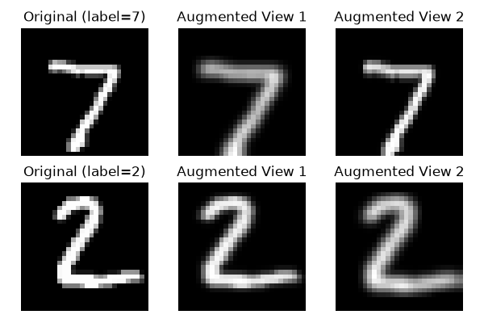
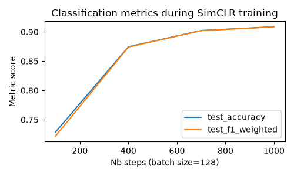
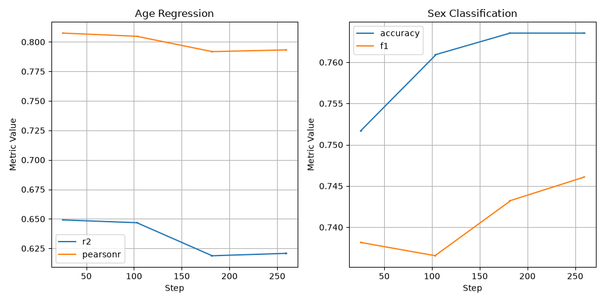

Note
Go to the end to download the full example code.
Model probing of embedding estimators¶
This notebook will show you how to investigate the data representation given by an embedding estimator (such as SimCLR, y-Aware Contrastive Learning or Barlow Twins) during training and inference using the notion of “probing”. A standard machine learning model (e.g. linear or SVM) is trained and evaluated on the data embedding for a given task as the model is being fitted (for training monitoring) or at inference. It allows the user to understand what concepts are learned by the model.
This has been first introduced by Guillaume Alain and Yoshua Bengio in 2017 [1] to understand the internal behavior of a deep neural network along the different layers. This technique aimed at answering questions like: what is the intermediate representation of a neural network? What information is contained for a given layer ?
Then, it has been adapted to benchmark self-supervised vision models (like SimCLR, Barlow Twins, DINO, DINOv2, DINOv3) on classical datasets (ImageNet, CIFAR, …) by implementing linear probing and K-Nearest Neighbors probing on model’s output representation.
Setup¶
This notebook requires some packages besides nidl. Let’s first start with importing our standard libraries below:
import os
import re
import matplotlib.pyplot as plt
import numpy as np
import torch.nn.functional as func
from sklearn.base import BaseEstimator as sk_BaseEstimator
from sklearn.base import clone
from sklearn.linear_model import LogisticRegression, Ridge
from sklearn.metrics import (
accuracy_score,
f1_score,
make_scorer,
r2_score,
)
from tensorboard.backend.event_processing import event_accumulator
from torch import nn
from torch.utils.data import DataLoader
from torchvision import transforms
from torchvision.datasets import MNIST
from torchvision.ops import MLP
from torchvision.utils import make_grid
from nidl.callbacks import ModelProbingCallback
from nidl.estimators.probes import ModelProbing
from nidl.datasets import OpenBHB
from nidl.estimators.ssl import SimCLR, YAwareContrastiveLearning
from nidl.metrics import pearson_r
from nidl.transforms.transforms import MultiViewsTransform
We define some global parameters that will be used throughout the notebook:
data_dir = "/tmp/mnist"
batch_size = 128
num_workers = 10
latent_size = 32
Unsupervised Contrastive Learning on MNIST¶
For illustration purposes on how to use the probing callback, we will focus on the handwritten digits dataset MNIST. It contains 60k training images and 10k test images of size 28x28 pixels. Each image contains a digit from 0 to 9. It is rather small-scale compared to modern datasets like ImageNet but sufficient to illustrate the probing technique. We will train a SimCLR model on these data and probe the learned representation using a logistic regression classifier on the digit classification task. It will show how the data embedding evolves during training to become more linearly separable for each digit class.
We start by loading the MNIST dataset dataset with standard scaling transforms. These datasets are used for training and testing the probing.
scale_transforms = transforms.Compose(
[transforms.ToTensor(), transforms.Normalize((0.5,), (0.5,))]
)
train_xy_dataset = MNIST(data_dir, download=True, transform=scale_transforms)
test_xy_dataset = MNIST(
data_dir, download=True, train=False, transform=scale_transforms
)
0%| | 0.00/9.91M [00:00<?, ?B/s]
4%|▍ | 393k/9.91M [00:00<00:02, 3.75MB/s]
61%|██████ | 6.06M/9.91M [00:00<00:00, 33.1MB/s]
100%|██████████| 9.91M/9.91M [00:00<00:00, 43.7MB/s]
0%| | 0.00/28.9k [00:00<?, ?B/s]
100%|██████████| 28.9k/28.9k [00:00<00:00, 1.10MB/s]
0%| | 0.00/1.65M [00:00<?, ?B/s]
22%|██▏ | 360k/1.65M [00:00<00:00, 2.75MB/s]
100%|██████████| 1.65M/1.65M [00:00<00:00, 8.33MB/s]
0%| | 0.00/4.54k [00:00<?, ?B/s]
100%|██████████| 4.54k/4.54k [00:00<00:00, 34.8MB/s]
Dataset and data augmentations for contrastive learning¶
To perform contrastive learning, we need to define a set of data augmentations to create multiple views of the same image. Since we work with grayscale images, we will use random resized crop and Gaussian blur. We reduce the size of the Gaussian kernel to 3x3 since MNIST images are only 28x28 pixels.
contrast_transforms = transforms.Compose(
[
transforms.RandomResizedCrop(size=28, scale=(0.8, 1.0)),
transforms.GaussianBlur(kernel_size=3),
transforms.ToTensor(),
transforms.Normalize((0.5,), (0.5,)),
]
)
We create the datasets returning the augmented views for training the SSL models.
ssl_dataset = MNIST(
data_dir,
download=True,
transform=MultiViewsTransform(contrast_transforms, n_views=2),
)
test_ssl_dataset = MNIST(
data_dir,
download=True,
train=False,
transform=MultiViewsTransform(contrast_transforms, n_views=2),
)
And finally we create the data loaders for training and testing the models.
train_xy_loader = DataLoader(
train_xy_dataset,
batch_size=batch_size,
shuffle=True,
drop_last=False,
pin_memory=True,
num_workers=num_workers,
)
test_xy_loader = DataLoader(
test_xy_dataset,
batch_size=batch_size,
shuffle=False,
drop_last=False,
num_workers=num_workers,
)
train_ssl_loader = DataLoader(
ssl_dataset,
batch_size=batch_size,
shuffle=True,
pin_memory=True,
num_workers=num_workers,
)
test_ssl_loader = DataLoader(
test_ssl_dataset,
batch_size=batch_size,
shuffle=False,
pin_memory=True,
num_workers=num_workers,
)
/opt/hostedtoolcache/Python/3.12.16/x64/lib/python3.12/site-packages/torch/utils/data/dataloader.py:431: UserWarning: This DataLoader will create 10 worker processes in total. Our suggested max number of worker in current system is 4, which is smaller than what this DataLoader is going to create. Please be aware that excessive worker creation might get DataLoader running slow or even freeze, lower the worker number to avoid potential slowness/freeze if necessary.
self.check_worker_number_rationality()
Before starting training the SimCLR model, let’s visualize some examples of the dataset.
def show_images(images, title=None, nrow=8):
grid = make_grid(images, nrow=nrow, normalize=True, pad_value=1)
plt.figure(figsize=(10, 5))
plt.imshow(grid.permute(1, 2, 0).cpu())
if title:
plt.title(title)
plt.axis("off")
plt.show()
# Original and augmented images
images, labels = next(iter(test_xy_loader))
augmented_views, _ = next(iter(test_ssl_loader))
view1, view2 = augmented_views[0], augmented_views[1]
fig, axes = plt.subplots(2, 3, figsize=(6, 4))
for i in range(2):
axes[i, 0].imshow(images[i][0].cpu(), cmap="gray")
axes[i, 0].set_title(f"Original (label={labels[i].item()})")
axes[i, 0].axis("off")
axes[i, 1].imshow(view1[i][0].cpu(), cmap="gray")
axes[i, 1].set_title("Augmented View 1")
axes[i, 1].axis("off")
axes[i, 2].imshow(view2[i][0].cpu(), cmap="gray")
axes[i, 2].set_title("Augmented View 2")
axes[i, 2].axis("off")
plt.tight_layout()
plt.show()

/opt/hostedtoolcache/Python/3.12.16/x64/lib/python3.12/site-packages/torch/utils/data/dataloader.py:437: UserWarning: This DataLoader will create 10 worker processes in total. Our suggested max number of worker in current system is 4, which is smaller than what this DataLoader is going to create. Please be aware that excessive worker creation might get DataLoader running slow or even freeze, lower the worker number to avoid potential slowness/freeze if necessary.
self.check_worker_number_rationality()
/opt/hostedtoolcache/Python/3.12.16/x64/lib/python3.12/site-packages/torch/utils/data/dataloader.py:1102: UserWarning: 'pin_memory' argument is set as true but no accelerator is found, then device pinned memory won't be used.
super().__init__(loader)
SimCLR training with classification probing callback¶
We can now create the probing callback that will train a logistic regression classifier on the learned representation during SimCLR training. The probing is performed every 2 epochs on the training and test sets. The classification metrics (accuracy and f1-weighted) are logged to TensorBoard by default.
callback = ModelProbingCallback(
train_dataloader=train_xy_loader,
test_dataloader=test_xy_loader,
probe=LogisticRegression(max_iter=200),
scoring=["accuracy", "f1_weighted"],
every_n_train_epochs=3,
)
Since MNIST images are small, we can use a simple LeNet-like architecture as encoder for SimCLR, with few parameters. The output dimension of the encoder is set to 32, which is approximately 30 times smaller that the input, but larger than the number of input classes (10).
class LeNetEncoder(nn.Module):
def __init__(self, latent_size=32):
super().__init__()
self.latent_size = latent_size
self.conv1 = nn.Conv2d(1, 6, kernel_size=5, stride=1, padding=2)
self.pool1 = nn.AvgPool2d(2, 2)
self.conv2 = nn.Conv2d(6, 16, kernel_size=5)
self.pool2 = nn.AvgPool2d(2, 2)
self.fc1 = nn.Linear(16 * 5 * 5, 120)
self.fc2 = nn.Linear(120, 84)
self.fc3 = nn.Linear(84, latent_size)
def forward(self, x):
x = func.relu(self.conv1(x))
x = self.pool1(x)
x = func.relu(self.conv2(x))
x = self.pool2(x)
x = x.view(x.size(0), -1)
x = func.relu(self.fc1(x))
x = func.relu(self.fc2(x))
return self.fc3(x)
encoder = LeNetEncoder(latent_size)
We can now create the SimCLR model with the encoder and the probing callback. We limit the training to 10 epochs for the sake of time and because it is enough for checking the evolution of the embedding geometry across training.
model = SimCLR(
encoder=encoder,
limit_train_batches=100,
proj_input_dim=latent_size,
proj_hidden_dim=64,
proj_output_dim=32,
max_epochs=10,
temperature=0.1,
learning_rate=3e-4,
weight_decay=5e-5,
enable_checkpointing=False,
callbacks=callback, # <-- key part for probing
)
model.fit(train_ssl_loader, test_ssl_loader)
/opt/hostedtoolcache/Python/3.12.16/x64/lib/python3.12/site-packages/pytorch_lightning/utilities/_pytree.py:21: `isinstance(treespec, LeafSpec)` is deprecated, use `isinstance(treespec, TreeSpec) and treespec.is_leaf()` instead.
Sanity Checking: | | 0/? [00:00<?, ?it/s]
Sanity Checking: | | 0/? [00:00<?, ?it/s]
Sanity Checking DataLoader 0: 0%| | 0/2 [00:00<?, ?it/s]
Sanity Checking DataLoader 0: 50%|█████ | 1/2 [00:00<00:00, 14.55it/s]
Sanity Checking DataLoader 0: 100%|██████████| 2/2 [00:00<00:00, 16.13it/s]
Training: | | 0/? [00:00<?, ?it/s]
Training: | | 0/? [00:00<?, ?it/s]
Epoch 0: 0%| | 0/100 [00:00<?, ?it/s]
Epoch 0: 1%| | 1/100 [00:00<00:06, 15.92it/s]
Epoch 0: 1%| | 1/100 [00:00<00:06, 15.80it/s, v_num=4, loss/train=5.540]
Epoch 0: 2%|▏ | 2/100 [00:00<00:05, 18.19it/s, v_num=4, loss/train=5.540]
Epoch 0: 2%|▏ | 2/100 [00:00<00:05, 18.11it/s, v_num=4, loss/train=5.540]
Epoch 0: 3%|▎ | 3/100 [00:00<00:04, 20.91it/s, v_num=4, loss/train=5.540]
Epoch 0: 3%|▎ | 3/100 [00:00<00:04, 20.84it/s, v_num=4, loss/train=5.540]
Epoch 0: 4%|▍ | 4/100 [00:00<00:04, 21.99it/s, v_num=4, loss/train=5.540]
Epoch 0: 4%|▍ | 4/100 [00:00<00:04, 21.92it/s, v_num=4, loss/train=5.540]
Epoch 0: 5%|▌ | 5/100 [00:00<00:04, 23.49it/s, v_num=4, loss/train=5.540]
Epoch 0: 5%|▌ | 5/100 [00:00<00:04, 23.45it/s, v_num=4, loss/train=5.540]
Epoch 0: 6%|▌ | 6/100 [00:00<00:04, 23.36it/s, v_num=4, loss/train=5.540]
Epoch 0: 6%|▌ | 6/100 [00:00<00:04, 23.32it/s, v_num=4, loss/train=5.540]
Epoch 0: 7%|▋ | 7/100 [00:00<00:03, 24.41it/s, v_num=4, loss/train=5.540]
Epoch 0: 7%|▋ | 7/100 [00:00<00:03, 24.38it/s, v_num=4, loss/train=5.540]
Epoch 0: 8%|▊ | 8/100 [00:00<00:03, 25.27it/s, v_num=4, loss/train=5.540]
Epoch 0: 8%|▊ | 8/100 [00:00<00:03, 25.24it/s, v_num=4, loss/train=5.540]
Epoch 0: 9%|▉ | 9/100 [00:00<00:03, 25.97it/s, v_num=4, loss/train=5.540]
Epoch 0: 9%|▉ | 9/100 [00:00<00:03, 25.95it/s, v_num=4, loss/train=5.540]
Epoch 0: 10%|█ | 10/100 [00:00<00:03, 26.52it/s, v_num=4, loss/train=5.540]
Epoch 0: 10%|█ | 10/100 [00:00<00:03, 26.50it/s, v_num=4, loss/train=5.540]
Epoch 0: 11%|█ | 11/100 [00:00<00:03, 26.87it/s, v_num=4, loss/train=5.540]
Epoch 0: 11%|█ | 11/100 [00:00<00:03, 26.84it/s, v_num=4, loss/train=5.540]
Epoch 0: 12%|█▏ | 12/100 [00:00<00:03, 25.66it/s, v_num=4, loss/train=5.540]
Epoch 0: 12%|█▏ | 12/100 [00:00<00:03, 25.64it/s, v_num=4, loss/train=5.540]
Epoch 0: 13%|█▎ | 13/100 [00:00<00:03, 25.80it/s, v_num=4, loss/train=5.540]
Epoch 0: 13%|█▎ | 13/100 [00:00<00:03, 25.79it/s, v_num=4, loss/train=5.540]
Epoch 0: 14%|█▍ | 14/100 [00:00<00:03, 26.28it/s, v_num=4, loss/train=5.540]
Epoch 0: 14%|█▍ | 14/100 [00:00<00:03, 26.27it/s, v_num=4, loss/train=5.540]
Epoch 0: 15%|█▌ | 15/100 [00:00<00:03, 26.70it/s, v_num=4, loss/train=5.540]
Epoch 0: 15%|█▌ | 15/100 [00:00<00:03, 26.68it/s, v_num=4, loss/train=5.540]
Epoch 0: 16%|█▌ | 16/100 [00:00<00:03, 26.77it/s, v_num=4, loss/train=5.540]
Epoch 0: 16%|█▌ | 16/100 [00:00<00:03, 26.75it/s, v_num=4, loss/train=5.540]
Epoch 0: 17%|█▋ | 17/100 [00:00<00:03, 25.77it/s, v_num=4, loss/train=5.540]
Epoch 0: 17%|█▋ | 17/100 [00:00<00:03, 25.75it/s, v_num=4, loss/train=5.540]
Epoch 0: 18%|█▊ | 18/100 [00:00<00:03, 26.11it/s, v_num=4, loss/train=5.540]
Epoch 0: 18%|█▊ | 18/100 [00:00<00:03, 26.09it/s, v_num=4, loss/train=5.540]
Epoch 0: 19%|█▉ | 19/100 [00:00<00:03, 26.43it/s, v_num=4, loss/train=5.540]
Epoch 0: 19%|█▉ | 19/100 [00:00<00:03, 26.41it/s, v_num=4, loss/train=5.540]
Epoch 0: 20%|██ | 20/100 [00:00<00:02, 26.72it/s, v_num=4, loss/train=5.540]
Epoch 0: 20%|██ | 20/100 [00:00<00:02, 26.70it/s, v_num=4, loss/train=5.540]
Epoch 0: 21%|██ | 21/100 [00:00<00:02, 26.96it/s, v_num=4, loss/train=5.540]
Epoch 0: 21%|██ | 21/100 [00:00<00:02, 26.95it/s, v_num=4, loss/train=5.540]
Epoch 0: 22%|██▏ | 22/100 [00:00<00:02, 27.17it/s, v_num=4, loss/train=5.540]
Epoch 0: 22%|██▏ | 22/100 [00:00<00:02, 27.16it/s, v_num=4, loss/train=5.540]
Epoch 0: 23%|██▎ | 23/100 [00:00<00:02, 27.30it/s, v_num=4, loss/train=5.540]
Epoch 0: 23%|██▎ | 23/100 [00:00<00:02, 27.29it/s, v_num=4, loss/train=5.540]
Epoch 0: 24%|██▍ | 24/100 [00:00<00:02, 27.48it/s, v_num=4, loss/train=5.540]
Epoch 0: 24%|██▍ | 24/100 [00:00<00:02, 27.47it/s, v_num=4, loss/train=5.540]
Epoch 0: 25%|██▌ | 25/100 [00:00<00:02, 27.39it/s, v_num=4, loss/train=5.540]
Epoch 0: 25%|██▌ | 25/100 [00:00<00:02, 27.38it/s, v_num=4, loss/train=5.540]
Epoch 0: 26%|██▌ | 26/100 [00:00<00:02, 27.53it/s, v_num=4, loss/train=5.540]
Epoch 0: 26%|██▌ | 26/100 [00:00<00:02, 27.51it/s, v_num=4, loss/train=5.540]
Epoch 0: 27%|██▋ | 27/100 [00:00<00:02, 27.68it/s, v_num=4, loss/train=5.540]
Epoch 0: 27%|██▋ | 27/100 [00:00<00:02, 27.67it/s, v_num=4, loss/train=5.540]
Epoch 0: 28%|██▊ | 28/100 [00:01<00:02, 27.84it/s, v_num=4, loss/train=5.540]
Epoch 0: 28%|██▊ | 28/100 [00:01<00:02, 27.82it/s, v_num=4, loss/train=5.540]
Epoch 0: 29%|██▉ | 29/100 [00:01<00:02, 27.97it/s, v_num=4, loss/train=5.540]
Epoch 0: 29%|██▉ | 29/100 [00:01<00:02, 27.95it/s, v_num=4, loss/train=5.540]
Epoch 0: 30%|███ | 30/100 [00:01<00:02, 28.05it/s, v_num=4, loss/train=5.540]
Epoch 0: 30%|███ | 30/100 [00:01<00:02, 28.04it/s, v_num=4, loss/train=5.540]
Epoch 0: 31%|███ | 31/100 [00:01<00:02, 28.19it/s, v_num=4, loss/train=5.540]
Epoch 0: 31%|███ | 31/100 [00:01<00:02, 28.18it/s, v_num=4, loss/train=5.540]
Epoch 0: 32%|███▏ | 32/100 [00:01<00:02, 28.30it/s, v_num=4, loss/train=5.540]
Epoch 0: 32%|███▏ | 32/100 [00:01<00:02, 28.29it/s, v_num=4, loss/train=5.540]
Epoch 0: 33%|███▎ | 33/100 [00:01<00:02, 28.37it/s, v_num=4, loss/train=5.540]
Epoch 0: 33%|███▎ | 33/100 [00:01<00:02, 28.35it/s, v_num=4, loss/train=5.540]
Epoch 0: 34%|███▍ | 34/100 [00:01<00:02, 28.44it/s, v_num=4, loss/train=5.540]
Epoch 0: 34%|███▍ | 34/100 [00:01<00:02, 28.43it/s, v_num=4, loss/train=5.540]
Epoch 0: 35%|███▌ | 35/100 [00:01<00:02, 28.23it/s, v_num=4, loss/train=5.540]
Epoch 0: 35%|███▌ | 35/100 [00:01<00:02, 28.22it/s, v_num=4, loss/train=5.540]
Epoch 0: 36%|███▌ | 36/100 [00:01<00:02, 28.33it/s, v_num=4, loss/train=5.540]
Epoch 0: 36%|███▌ | 36/100 [00:01<00:02, 28.32it/s, v_num=4, loss/train=5.540]
Epoch 0: 37%|███▋ | 37/100 [00:01<00:02, 28.44it/s, v_num=4, loss/train=5.540]
Epoch 0: 37%|███▋ | 37/100 [00:01<00:02, 28.44it/s, v_num=4, loss/train=5.540]
Epoch 0: 38%|███▊ | 38/100 [00:01<00:02, 28.56it/s, v_num=4, loss/train=5.540]
Epoch 0: 38%|███▊ | 38/100 [00:01<00:02, 28.55it/s, v_num=4, loss/train=5.540]
Epoch 0: 39%|███▉ | 39/100 [00:01<00:02, 28.66it/s, v_num=4, loss/train=5.540]
Epoch 0: 39%|███▉ | 39/100 [00:01<00:02, 28.65it/s, v_num=4, loss/train=5.540]
Epoch 0: 40%|████ | 40/100 [00:01<00:02, 28.73it/s, v_num=4, loss/train=5.540]
Epoch 0: 40%|████ | 40/100 [00:01<00:02, 28.73it/s, v_num=4, loss/train=5.540]
Epoch 0: 41%|████ | 41/100 [00:01<00:02, 28.80it/s, v_num=4, loss/train=5.540]
Epoch 0: 41%|████ | 41/100 [00:01<00:02, 28.79it/s, v_num=4, loss/train=5.540]
Epoch 0: 42%|████▏ | 42/100 [00:01<00:02, 28.53it/s, v_num=4, loss/train=5.540]
Epoch 0: 42%|████▏ | 42/100 [00:01<00:02, 28.52it/s, v_num=4, loss/train=5.540]
Epoch 0: 43%|████▎ | 43/100 [00:01<00:02, 28.48it/s, v_num=4, loss/train=5.540]
Epoch 0: 43%|████▎ | 43/100 [00:01<00:02, 28.47it/s, v_num=4, loss/train=5.540]
Epoch 0: 44%|████▍ | 44/100 [00:01<00:01, 28.63it/s, v_num=4, loss/train=5.540]
Epoch 0: 44%|████▍ | 44/100 [00:01<00:01, 28.62it/s, v_num=4, loss/train=5.530]
Epoch 0: 45%|████▌ | 45/100 [00:01<00:01, 28.78it/s, v_num=4, loss/train=5.530]
Epoch 0: 45%|████▌ | 45/100 [00:01<00:01, 28.77it/s, v_num=4, loss/train=5.540]
Epoch 0: 46%|████▌ | 46/100 [00:01<00:01, 28.77it/s, v_num=4, loss/train=5.540]
Epoch 0: 46%|████▌ | 46/100 [00:01<00:01, 28.77it/s, v_num=4, loss/train=5.530]
Epoch 0: 47%|████▋ | 47/100 [00:01<00:01, 28.81it/s, v_num=4, loss/train=5.530]
Epoch 0: 47%|████▋ | 47/100 [00:01<00:01, 28.79it/s, v_num=4, loss/train=5.530]
Epoch 0: 48%|████▊ | 48/100 [00:01<00:01, 28.21it/s, v_num=4, loss/train=5.530]
Epoch 0: 48%|████▊ | 48/100 [00:01<00:01, 28.20it/s, v_num=4, loss/train=5.530]
Epoch 0: 49%|████▉ | 49/100 [00:01<00:01, 28.27it/s, v_num=4, loss/train=5.530]
Epoch 0: 49%|████▉ | 49/100 [00:01<00:01, 28.26it/s, v_num=4, loss/train=5.530]
Epoch 0: 50%|█████ | 50/100 [00:01<00:01, 28.22it/s, v_num=4, loss/train=5.530]
Epoch 0: 50%|█████ | 50/100 [00:01<00:01, 28.21it/s, v_num=4, loss/train=5.530]
Epoch 0: 51%|█████ | 51/100 [00:01<00:01, 28.27it/s, v_num=4, loss/train=5.530]
Epoch 0: 51%|█████ | 51/100 [00:01<00:01, 28.27it/s, v_num=4, loss/train=5.530]
Epoch 0: 52%|█████▏ | 52/100 [00:01<00:01, 28.32it/s, v_num=4, loss/train=5.530]
Epoch 0: 52%|█████▏ | 52/100 [00:01<00:01, 28.32it/s, v_num=4, loss/train=5.530]
Epoch 0: 53%|█████▎ | 53/100 [00:01<00:01, 28.45it/s, v_num=4, loss/train=5.530]
Epoch 0: 53%|█████▎ | 53/100 [00:01<00:01, 28.44it/s, v_num=4, loss/train=5.530]
Epoch 0: 54%|█████▍ | 54/100 [00:01<00:01, 28.49it/s, v_num=4, loss/train=5.530]
Epoch 0: 54%|█████▍ | 54/100 [00:01<00:01, 28.48it/s, v_num=4, loss/train=5.530]
Epoch 0: 55%|█████▌ | 55/100 [00:01<00:01, 28.60it/s, v_num=4, loss/train=5.530]
Epoch 0: 55%|█████▌ | 55/100 [00:01<00:01, 28.59it/s, v_num=4, loss/train=5.530]
Epoch 0: 56%|█████▌ | 56/100 [00:01<00:01, 28.73it/s, v_num=4, loss/train=5.530]
Epoch 0: 56%|█████▌ | 56/100 [00:01<00:01, 28.72it/s, v_num=4, loss/train=5.530]
Epoch 0: 57%|█████▋ | 57/100 [00:02<00:01, 28.42it/s, v_num=4, loss/train=5.530]
Epoch 0: 57%|█████▋ | 57/100 [00:02<00:01, 28.42it/s, v_num=4, loss/train=5.530]
Epoch 0: 58%|█████▊ | 58/100 [00:02<00:01, 28.52it/s, v_num=4, loss/train=5.530]
Epoch 0: 58%|█████▊ | 58/100 [00:02<00:01, 28.51it/s, v_num=4, loss/train=5.530]
Epoch 0: 59%|█████▉ | 59/100 [00:02<00:01, 28.56it/s, v_num=4, loss/train=5.530]
Epoch 0: 59%|█████▉ | 59/100 [00:02<00:01, 28.56it/s, v_num=4, loss/train=5.530]
Epoch 0: 60%|██████ | 60/100 [00:02<00:01, 28.64it/s, v_num=4, loss/train=5.530]
Epoch 0: 60%|██████ | 60/100 [00:02<00:01, 28.63it/s, v_num=4, loss/train=5.530]
Epoch 0: 61%|██████ | 61/100 [00:02<00:01, 28.69it/s, v_num=4, loss/train=5.530]
Epoch 0: 61%|██████ | 61/100 [00:02<00:01, 28.68it/s, v_num=4, loss/train=5.530]
Epoch 0: 62%|██████▏ | 62/100 [00:02<00:01, 28.61it/s, v_num=4, loss/train=5.530]
Epoch 0: 62%|██████▏ | 62/100 [00:02<00:01, 28.60it/s, v_num=4, loss/train=5.530]
Epoch 0: 63%|██████▎ | 63/100 [00:02<00:01, 28.66it/s, v_num=4, loss/train=5.530]
Epoch 0: 63%|██████▎ | 63/100 [00:02<00:01, 28.65it/s, v_num=4, loss/train=5.530]
Epoch 0: 64%|██████▍ | 64/100 [00:02<00:01, 28.67it/s, v_num=4, loss/train=5.530]
Epoch 0: 64%|██████▍ | 64/100 [00:02<00:01, 28.67it/s, v_num=4, loss/train=5.530]
Epoch 0: 65%|██████▌ | 65/100 [00:02<00:01, 28.68it/s, v_num=4, loss/train=5.530]
Epoch 0: 65%|██████▌ | 65/100 [00:02<00:01, 28.67it/s, v_num=4, loss/train=5.530]
Epoch 0: 66%|██████▌ | 66/100 [00:02<00:01, 28.70it/s, v_num=4, loss/train=5.530]
Epoch 0: 66%|██████▌ | 66/100 [00:02<00:01, 28.70it/s, v_num=4, loss/train=5.530]
Epoch 0: 67%|██████▋ | 67/100 [00:02<00:01, 28.72it/s, v_num=4, loss/train=5.530]
Epoch 0: 67%|██████▋ | 67/100 [00:02<00:01, 28.72it/s, v_num=4, loss/train=5.530]
Epoch 0: 68%|██████▊ | 68/100 [00:02<00:01, 28.75it/s, v_num=4, loss/train=5.530]
Epoch 0: 68%|██████▊ | 68/100 [00:02<00:01, 28.75it/s, v_num=4, loss/train=5.530]
Epoch 0: 69%|██████▉ | 69/100 [00:02<00:01, 28.80it/s, v_num=4, loss/train=5.530]
Epoch 0: 69%|██████▉ | 69/100 [00:02<00:01, 28.79it/s, v_num=4, loss/train=5.530]
Epoch 0: 70%|███████ | 70/100 [00:02<00:01, 28.83it/s, v_num=4, loss/train=5.530]
Epoch 0: 70%|███████ | 70/100 [00:02<00:01, 28.82it/s, v_num=4, loss/train=5.530]
Epoch 0: 71%|███████ | 71/100 [00:02<00:01, 28.88it/s, v_num=4, loss/train=5.530]
Epoch 0: 71%|███████ | 71/100 [00:02<00:01, 28.88it/s, v_num=4, loss/train=5.520]
Epoch 0: 72%|███████▏ | 72/100 [00:02<00:00, 28.92it/s, v_num=4, loss/train=5.520]
Epoch 0: 72%|███████▏ | 72/100 [00:02<00:00, 28.92it/s, v_num=4, loss/train=5.520]
Epoch 0: 73%|███████▎ | 73/100 [00:02<00:00, 28.95it/s, v_num=4, loss/train=5.520]
Epoch 0: 73%|███████▎ | 73/100 [00:02<00:00, 28.95it/s, v_num=4, loss/train=5.520]
Epoch 0: 74%|███████▍ | 74/100 [00:02<00:00, 28.99it/s, v_num=4, loss/train=5.520]
Epoch 0: 74%|███████▍ | 74/100 [00:02<00:00, 28.98it/s, v_num=4, loss/train=5.520]
Epoch 0: 75%|███████▌ | 75/100 [00:02<00:00, 29.01it/s, v_num=4, loss/train=5.520]
Epoch 0: 75%|███████▌ | 75/100 [00:02<00:00, 29.01it/s, v_num=4, loss/train=5.520]
Epoch 0: 76%|███████▌ | 76/100 [00:02<00:00, 29.05it/s, v_num=4, loss/train=5.520]
Epoch 0: 76%|███████▌ | 76/100 [00:02<00:00, 29.04it/s, v_num=4, loss/train=5.520]
Epoch 0: 77%|███████▋ | 77/100 [00:02<00:00, 29.07it/s, v_num=4, loss/train=5.520]
Epoch 0: 77%|███████▋ | 77/100 [00:02<00:00, 29.06it/s, v_num=4, loss/train=5.520]
Epoch 0: 78%|███████▊ | 78/100 [00:02<00:00, 28.98it/s, v_num=4, loss/train=5.520]
Epoch 0: 78%|███████▊ | 78/100 [00:02<00:00, 28.97it/s, v_num=4, loss/train=5.520]
Epoch 0: 79%|███████▉ | 79/100 [00:02<00:00, 28.79it/s, v_num=4, loss/train=5.520]
Epoch 0: 79%|███████▉ | 79/100 [00:02<00:00, 28.79it/s, v_num=4, loss/train=5.520]
Epoch 0: 80%|████████ | 80/100 [00:02<00:00, 28.87it/s, v_num=4, loss/train=5.520]
Epoch 0: 80%|████████ | 80/100 [00:02<00:00, 28.86it/s, v_num=4, loss/train=5.520]
Epoch 0: 81%|████████ | 81/100 [00:02<00:00, 28.94it/s, v_num=4, loss/train=5.520]
Epoch 0: 81%|████████ | 81/100 [00:02<00:00, 28.93it/s, v_num=4, loss/train=5.520]
Epoch 0: 82%|████████▏ | 82/100 [00:02<00:00, 28.88it/s, v_num=4, loss/train=5.520]
Epoch 0: 82%|████████▏ | 82/100 [00:02<00:00, 28.88it/s, v_num=4, loss/train=5.510]
Epoch 0: 83%|████████▎ | 83/100 [00:02<00:00, 28.91it/s, v_num=4, loss/train=5.510]
Epoch 0: 83%|████████▎ | 83/100 [00:02<00:00, 28.91it/s, v_num=4, loss/train=5.510]
Epoch 0: 84%|████████▍ | 84/100 [00:02<00:00, 28.93it/s, v_num=4, loss/train=5.510]
Epoch 0: 84%|████████▍ | 84/100 [00:02<00:00, 28.93it/s, v_num=4, loss/train=5.510]
Epoch 0: 85%|████████▌ | 85/100 [00:02<00:00, 28.94it/s, v_num=4, loss/train=5.510]
Epoch 0: 85%|████████▌ | 85/100 [00:02<00:00, 28.94it/s, v_num=4, loss/train=5.510]
Epoch 0: 86%|████████▌ | 86/100 [00:02<00:00, 28.96it/s, v_num=4, loss/train=5.510]
Epoch 0: 86%|████████▌ | 86/100 [00:02<00:00, 28.96it/s, v_num=4, loss/train=5.500]
Epoch 0: 87%|████████▋ | 87/100 [00:03<00:00, 28.99it/s, v_num=4, loss/train=5.500]
Epoch 0: 87%|████████▋ | 87/100 [00:03<00:00, 28.99it/s, v_num=4, loss/train=5.510]
Epoch 0: 88%|████████▊ | 88/100 [00:03<00:00, 29.03it/s, v_num=4, loss/train=5.510]
Epoch 0: 88%|████████▊ | 88/100 [00:03<00:00, 29.02it/s, v_num=4, loss/train=5.500]
Epoch 0: 89%|████████▉ | 89/100 [00:03<00:00, 29.05it/s, v_num=4, loss/train=5.500]
Epoch 0: 89%|████████▉ | 89/100 [00:03<00:00, 29.05it/s, v_num=4, loss/train=5.500]
Epoch 0: 90%|█████████ | 90/100 [00:03<00:00, 28.96it/s, v_num=4, loss/train=5.500]
Epoch 0: 90%|█████████ | 90/100 [00:03<00:00, 28.96it/s, v_num=4, loss/train=5.490]
Epoch 0: 91%|█████████ | 91/100 [00:03<00:00, 28.99it/s, v_num=4, loss/train=5.490]
Epoch 0: 91%|█████████ | 91/100 [00:03<00:00, 28.99it/s, v_num=4, loss/train=5.490]
Epoch 0: 92%|█████████▏| 92/100 [00:03<00:00, 29.00it/s, v_num=4, loss/train=5.490]
Epoch 0: 92%|█████████▏| 92/100 [00:03<00:00, 29.00it/s, v_num=4, loss/train=5.490]
Epoch 0: 93%|█████████▎| 93/100 [00:03<00:00, 28.81it/s, v_num=4, loss/train=5.490]
Epoch 0: 93%|█████████▎| 93/100 [00:03<00:00, 28.81it/s, v_num=4, loss/train=5.480]
Epoch 0: 94%|█████████▍| 94/100 [00:03<00:00, 28.74it/s, v_num=4, loss/train=5.480]
Epoch 0: 94%|█████████▍| 94/100 [00:03<00:00, 28.73it/s, v_num=4, loss/train=5.480]
Epoch 0: 95%|█████████▌| 95/100 [00:03<00:00, 28.76it/s, v_num=4, loss/train=5.480]
Epoch 0: 95%|█████████▌| 95/100 [00:03<00:00, 28.75it/s, v_num=4, loss/train=5.470]
Epoch 0: 96%|█████████▌| 96/100 [00:03<00:00, 28.77it/s, v_num=4, loss/train=5.470]
Epoch 0: 96%|█████████▌| 96/100 [00:03<00:00, 28.77it/s, v_num=4, loss/train=5.470]
Epoch 0: 97%|█████████▋| 97/100 [00:03<00:00, 28.80it/s, v_num=4, loss/train=5.470]
Epoch 0: 97%|█████████▋| 97/100 [00:03<00:00, 28.79it/s, v_num=4, loss/train=5.470]
Epoch 0: 98%|█████████▊| 98/100 [00:03<00:00, 28.83it/s, v_num=4, loss/train=5.470]
Epoch 0: 98%|█████████▊| 98/100 [00:03<00:00, 28.82it/s, v_num=4, loss/train=5.460]
Epoch 0: 99%|█████████▉| 99/100 [00:03<00:00, 28.85it/s, v_num=4, loss/train=5.460]
Epoch 0: 99%|█████████▉| 99/100 [00:03<00:00, 28.85it/s, v_num=4, loss/train=5.460]
Epoch 0: 100%|██████████| 100/100 [00:03<00:00, 28.87it/s, v_num=4, loss/train=5.460]
Epoch 0: 100%|██████████| 100/100 [00:03<00:00, 28.87it/s, v_num=4, loss/train=5.450]
Validation: | | 0/? [00:00<?, ?it/s]
Validation: | | 0/? [00:00<?, ?it/s]
Validation DataLoader 0: 0%| | 0/79 [00:00<?, ?it/s]
Validation DataLoader 0: 1%|▏ | 1/79 [00:00<00:12, 6.24it/s]
Validation DataLoader 0: 3%|▎ | 2/79 [00:00<00:07, 10.08it/s]
Validation DataLoader 0: 4%|▍ | 3/79 [00:00<00:05, 12.83it/s]
Validation DataLoader 0: 5%|▌ | 4/79 [00:00<00:05, 13.88it/s]
Validation DataLoader 0: 6%|▋ | 5/79 [00:00<00:04, 16.29it/s]
Validation DataLoader 0: 8%|▊ | 6/79 [00:00<00:04, 18.14it/s]
Validation DataLoader 0: 9%|▉ | 7/79 [00:00<00:03, 19.94it/s]
Validation DataLoader 0: 10%|█ | 8/79 [00:00<00:03, 21.19it/s]
Validation DataLoader 0: 11%|█▏ | 9/79 [00:00<00:03, 22.73it/s]
Validation DataLoader 0: 13%|█▎ | 10/79 [00:00<00:02, 24.21it/s]
Validation DataLoader 0: 14%|█▍ | 11/79 [00:00<00:02, 23.84it/s]
Validation DataLoader 0: 15%|█▌ | 12/79 [00:00<00:02, 25.06it/s]
Validation DataLoader 0: 16%|█▋ | 13/79 [00:00<00:02, 26.12it/s]
Validation DataLoader 0: 18%|█▊ | 14/79 [00:00<00:02, 26.60it/s]
Validation DataLoader 0: 19%|█▉ | 15/79 [00:00<00:02, 27.51it/s]
Validation DataLoader 0: 20%|██ | 16/79 [00:00<00:02, 28.76it/s]
Validation DataLoader 0: 22%|██▏ | 17/79 [00:00<00:02, 29.52it/s]
Validation DataLoader 0: 23%|██▎ | 18/79 [00:00<00:02, 30.03it/s]
Validation DataLoader 0: 24%|██▍ | 19/79 [00:00<00:01, 30.72it/s]
Validation DataLoader 0: 25%|██▌ | 20/79 [00:00<00:01, 30.83it/s]
Validation DataLoader 0: 27%|██▋ | 21/79 [00:00<00:01, 31.43it/s]
Validation DataLoader 0: 28%|██▊ | 22/79 [00:00<00:01, 32.20it/s]
Validation DataLoader 0: 29%|██▉ | 23/79 [00:00<00:01, 32.84it/s]
Validation DataLoader 0: 30%|███ | 24/79 [00:00<00:01, 33.57it/s]
Validation DataLoader 0: 32%|███▏ | 25/79 [00:00<00:01, 34.48it/s]
Validation DataLoader 0: 33%|███▎ | 26/79 [00:00<00:01, 30.59it/s]
Validation DataLoader 0: 34%|███▍ | 27/79 [00:00<00:01, 31.04it/s]
Validation DataLoader 0: 35%|███▌ | 28/79 [00:00<00:01, 31.82it/s]
Validation DataLoader 0: 37%|███▋ | 29/79 [00:00<00:01, 32.53it/s]
Validation DataLoader 0: 38%|███▊ | 30/79 [00:00<00:01, 33.01it/s]
Validation DataLoader 0: 39%|███▉ | 31/79 [00:00<00:01, 33.08it/s]
Validation DataLoader 0: 41%|████ | 32/79 [00:00<00:01, 32.69it/s]
Validation DataLoader 0: 42%|████▏ | 33/79 [00:00<00:01, 33.08it/s]
Validation DataLoader 0: 43%|████▎ | 34/79 [00:01<00:01, 32.53it/s]
Validation DataLoader 0: 44%|████▍ | 35/79 [00:01<00:01, 32.71it/s]
Validation DataLoader 0: 46%|████▌ | 36/79 [00:01<00:01, 33.30it/s]
Validation DataLoader 0: 47%|████▋ | 37/79 [00:01<00:01, 33.77it/s]
Validation DataLoader 0: 48%|████▊ | 38/79 [00:01<00:01, 33.84it/s]
Validation DataLoader 0: 49%|████▉ | 39/79 [00:01<00:01, 34.12it/s]
Validation DataLoader 0: 51%|█████ | 40/79 [00:01<00:01, 34.21it/s]
Validation DataLoader 0: 52%|█████▏ | 41/79 [00:01<00:01, 34.42it/s]
Validation DataLoader 0: 53%|█████▎ | 42/79 [00:01<00:01, 34.86it/s]
Validation DataLoader 0: 54%|█████▍ | 43/79 [00:01<00:01, 33.89it/s]
Validation DataLoader 0: 56%|█████▌ | 44/79 [00:01<00:01, 34.39it/s]
Validation DataLoader 0: 57%|█████▋ | 45/79 [00:01<00:00, 34.55it/s]
Validation DataLoader 0: 58%|█████▊ | 46/79 [00:01<00:00, 34.72it/s]
Validation DataLoader 0: 59%|█████▉ | 47/79 [00:01<00:00, 34.86it/s]
Validation DataLoader 0: 61%|██████ | 48/79 [00:01<00:00, 34.98it/s]
Validation DataLoader 0: 62%|██████▏ | 49/79 [00:01<00:00, 34.65it/s]
Validation DataLoader 0: 63%|██████▎ | 50/79 [00:01<00:00, 34.75it/s]
Validation DataLoader 0: 65%|██████▍ | 51/79 [00:01<00:00, 35.00it/s]
Validation DataLoader 0: 66%|██████▌ | 52/79 [00:01<00:00, 35.48it/s]
Validation DataLoader 0: 67%|██████▋ | 53/79 [00:01<00:00, 35.15it/s]
Validation DataLoader 0: 68%|██████▊ | 54/79 [00:01<00:00, 35.54it/s]
Validation DataLoader 0: 70%|██████▉ | 55/79 [00:01<00:00, 35.91it/s]
Validation DataLoader 0: 71%|███████ | 56/79 [00:01<00:00, 36.27it/s]
Validation DataLoader 0: 72%|███████▏ | 57/79 [00:01<00:00, 36.67it/s]
Validation DataLoader 0: 73%|███████▎ | 58/79 [00:01<00:00, 37.06it/s]
Validation DataLoader 0: 75%|███████▍ | 59/79 [00:01<00:00, 37.40it/s]
Validation DataLoader 0: 76%|███████▌ | 60/79 [00:01<00:00, 37.75it/s]
Validation DataLoader 0: 77%|███████▋ | 61/79 [00:01<00:00, 38.12it/s]
Validation DataLoader 0: 78%|███████▊ | 62/79 [00:01<00:00, 37.19it/s]
Validation DataLoader 0: 80%|███████▉ | 63/79 [00:01<00:00, 37.46it/s]
Validation DataLoader 0: 81%|████████ | 64/79 [00:01<00:00, 37.85it/s]
Validation DataLoader 0: 82%|████████▏ | 65/79 [00:01<00:00, 38.24it/s]
Validation DataLoader 0: 84%|████████▎ | 66/79 [00:01<00:00, 38.70it/s]
Validation DataLoader 0: 85%|████████▍ | 67/79 [00:01<00:00, 39.15it/s]
Validation DataLoader 0: 86%|████████▌ | 68/79 [00:01<00:00, 39.56it/s]
Validation DataLoader 0: 87%|████████▋ | 69/79 [00:01<00:00, 40.00it/s]
Validation DataLoader 0: 89%|████████▊ | 70/79 [00:01<00:00, 40.42it/s]
Validation DataLoader 0: 90%|████████▉ | 71/79 [00:01<00:00, 40.83it/s]
Validation DataLoader 0: 91%|█████████ | 72/79 [00:01<00:00, 41.22it/s]
Validation DataLoader 0: 92%|█████████▏| 73/79 [00:01<00:00, 41.63it/s]
Validation DataLoader 0: 94%|█████████▎| 74/79 [00:01<00:00, 42.01it/s]
Validation DataLoader 0: 95%|█████████▍| 75/79 [00:01<00:00, 42.41it/s]
Validation DataLoader 0: 96%|█████████▌| 76/79 [00:01<00:00, 42.84it/s]
Validation DataLoader 0: 97%|█████████▋| 77/79 [00:01<00:00, 43.26it/s]
Validation DataLoader 0: 99%|█████████▊| 78/79 [00:01<00:00, 43.66it/s]
Validation DataLoader 0: 100%|██████████| 79/79 [00:01<00:00, 44.13it/s]
Epoch 0: 100%|██████████| 100/100 [00:05<00:00, 17.04it/s, v_num=4, loss/train=5.450, loss/val=5.450]
Extracting features: 0%| | 0/469 [00:00<?, ?it/s]
Extracting features: 0%| | 1/469 [00:00<03:07, 2.49it/s]
Extracting features: 6%|▌ | 27/469 [00:00<00:06, 69.29it/s]
Extracting features: 9%|▉ | 44/469 [00:00<00:04, 94.76it/s]
Extracting features: 14%|█▍ | 66/469 [00:00<00:03, 128.81it/s]
Extracting features: 19%|█▉ | 91/469 [00:00<00:02, 161.34it/s]
Extracting features: 25%|██▍ | 116/469 [00:00<00:01, 186.49it/s]
Extracting features: 30%|███ | 141/469 [00:01<00:01, 203.30it/s]
Extracting features: 35%|███▌ | 165/469 [00:01<00:01, 210.68it/s]
Extracting features: 40%|████ | 188/469 [00:01<00:01, 202.73it/s]
Extracting features: 45%|████▍ | 211/469 [00:01<00:01, 209.81it/s]
Extracting features: 50%|████▉ | 233/469 [00:01<00:01, 208.40it/s]
Extracting features: 54%|█████▍ | 255/469 [00:01<00:01, 207.45it/s]
Extracting features: 59%|█████▉ | 277/469 [00:01<00:00, 210.30it/s]
Extracting features: 64%|██████▍ | 299/469 [00:01<00:00, 212.04it/s]
Extracting features: 69%|██████▊ | 322/469 [00:01<00:00, 216.14it/s]
Extracting features: 74%|███████▎ | 345/469 [00:01<00:00, 219.01it/s]
Extracting features: 78%|███████▊ | 368/469 [00:02<00:00, 218.06it/s]
Extracting features: 83%|████████▎ | 390/469 [00:02<00:00, 214.94it/s]
Extracting features: 88%|████████▊ | 412/469 [00:02<00:00, 197.83it/s]
Extracting features: 92%|█████████▏| 433/469 [00:02<00:00, 200.59it/s]
Extracting features: 98%|█████████▊| 460/469 [00:02<00:00, 219.39it/s]
Extracting features: 0%| | 0/79 [00:00<?, ?it/s]
Extracting features: 1%|▏ | 1/79 [00:00<00:31, 2.46it/s]
Extracting features: 32%|███▏ | 25/79 [00:00<00:00, 63.87it/s]
Extracting features: 58%|█████▊ | 46/79 [00:00<00:00, 103.00it/s]
/opt/hostedtoolcache/Python/3.12.16/x64/lib/python3.12/site-packages/sklearn/linear_model/_logistic.py:456: OptimizeWarning: Unknown solver options: iprint
opt_res = optimize.minimize(
Epoch 0: 100%|██████████| 100/100 [00:13<00:00, 7.63it/s, v_num=4, loss/train=5.450, loss/val=5.450, test_accuracy=0.727, test_f1_weighted=0.720]
Epoch 0: 0%| | 0/100 [00:00<?, ?it/s, v_num=4, loss/train=5.450, loss/val=5.450, test_accuracy=0.727, test_f1_weighted=0.720]
Epoch 1: 0%| | 0/100 [00:00<?, ?it/s, v_num=4, loss/train=5.450, loss/val=5.450, test_accuracy=0.727, test_f1_weighted=0.720]/opt/hostedtoolcache/Python/3.12.16/x64/lib/python3.12/site-packages/torch/utils/data/dataloader.py:437: UserWarning: This DataLoader will create 10 worker processes in total. Our suggested max number of worker in current system is 4, which is smaller than what this DataLoader is going to create. Please be aware that excessive worker creation might get DataLoader running slow or even freeze, lower the worker number to avoid potential slowness/freeze if necessary.
self.check_worker_number_rationality()
/opt/hostedtoolcache/Python/3.12.16/x64/lib/python3.12/site-packages/torch/utils/data/dataloader.py:1102: UserWarning: 'pin_memory' argument is set as true but no accelerator is found, then device pinned memory won't be used.
super().__init__(loader)
Epoch 1: 1%| | 1/100 [00:00<01:24, 1.18it/s, v_num=4, loss/train=5.450, loss/val=5.450, test_accuracy=0.727, test_f1_weighted=0.720]
Epoch 1: 1%| | 1/100 [00:00<01:24, 1.18it/s, v_num=4, loss/train=5.440, loss/val=5.450, test_accuracy=0.727, test_f1_weighted=0.720]
Epoch 1: 2%|▏ | 2/100 [00:00<00:42, 2.29it/s, v_num=4, loss/train=5.440, loss/val=5.450, test_accuracy=0.727, test_f1_weighted=0.720]
Epoch 1: 2%|▏ | 2/100 [00:00<00:42, 2.29it/s, v_num=4, loss/train=5.430, loss/val=5.450, test_accuracy=0.727, test_f1_weighted=0.720]
Epoch 1: 3%|▎ | 3/100 [00:00<00:29, 3.33it/s, v_num=4, loss/train=5.430, loss/val=5.450, test_accuracy=0.727, test_f1_weighted=0.720]
Epoch 1: 3%|▎ | 3/100 [00:00<00:29, 3.33it/s, v_num=4, loss/train=5.430, loss/val=5.450, test_accuracy=0.727, test_f1_weighted=0.720]
Epoch 1: 4%|▍ | 4/100 [00:00<00:22, 4.24it/s, v_num=4, loss/train=5.430, loss/val=5.450, test_accuracy=0.727, test_f1_weighted=0.720]
Epoch 1: 4%|▍ | 4/100 [00:00<00:22, 4.24it/s, v_num=4, loss/train=5.420, loss/val=5.450, test_accuracy=0.727, test_f1_weighted=0.720]
Epoch 1: 5%|▌ | 5/100 [00:00<00:18, 5.16it/s, v_num=4, loss/train=5.420, loss/val=5.450, test_accuracy=0.727, test_f1_weighted=0.720]
Epoch 1: 5%|▌ | 5/100 [00:00<00:18, 5.16it/s, v_num=4, loss/train=5.410, loss/val=5.450, test_accuracy=0.727, test_f1_weighted=0.720]
Epoch 1: 6%|▌ | 6/100 [00:01<00:15, 5.95it/s, v_num=4, loss/train=5.410, loss/val=5.450, test_accuracy=0.727, test_f1_weighted=0.720]
Epoch 1: 6%|▌ | 6/100 [00:01<00:15, 5.95it/s, v_num=4, loss/train=5.380, loss/val=5.450, test_accuracy=0.727, test_f1_weighted=0.720]
Epoch 1: 7%|▋ | 7/100 [00:01<00:13, 6.67it/s, v_num=4, loss/train=5.380, loss/val=5.450, test_accuracy=0.727, test_f1_weighted=0.720]
Epoch 1: 7%|▋ | 7/100 [00:01<00:13, 6.66it/s, v_num=4, loss/train=5.400, loss/val=5.450, test_accuracy=0.727, test_f1_weighted=0.720]
Epoch 1: 8%|▊ | 8/100 [00:01<00:12, 7.44it/s, v_num=4, loss/train=5.400, loss/val=5.450, test_accuracy=0.727, test_f1_weighted=0.720]
Epoch 1: 8%|▊ | 8/100 [00:01<00:12, 7.43it/s, v_num=4, loss/train=5.390, loss/val=5.450, test_accuracy=0.727, test_f1_weighted=0.720]
Epoch 1: 9%|▉ | 9/100 [00:01<00:11, 8.06it/s, v_num=4, loss/train=5.390, loss/val=5.450, test_accuracy=0.727, test_f1_weighted=0.720]
Epoch 1: 9%|▉ | 9/100 [00:01<00:11, 8.06it/s, v_num=4, loss/train=5.360, loss/val=5.450, test_accuracy=0.727, test_f1_weighted=0.720]
Epoch 1: 10%|█ | 10/100 [00:01<00:10, 8.66it/s, v_num=4, loss/train=5.360, loss/val=5.450, test_accuracy=0.727, test_f1_weighted=0.720]
Epoch 1: 10%|█ | 10/100 [00:01<00:10, 8.66it/s, v_num=4, loss/train=5.330, loss/val=5.450, test_accuracy=0.727, test_f1_weighted=0.720]
Epoch 1: 11%|█ | 11/100 [00:01<00:09, 9.24it/s, v_num=4, loss/train=5.330, loss/val=5.450, test_accuracy=0.727, test_f1_weighted=0.720]
Epoch 1: 11%|█ | 11/100 [00:01<00:09, 9.24it/s, v_num=4, loss/train=5.340, loss/val=5.450, test_accuracy=0.727, test_f1_weighted=0.720]
Epoch 1: 12%|█▏ | 12/100 [00:01<00:08, 9.84it/s, v_num=4, loss/train=5.340, loss/val=5.450, test_accuracy=0.727, test_f1_weighted=0.720]
Epoch 1: 12%|█▏ | 12/100 [00:01<00:08, 9.84it/s, v_num=4, loss/train=5.340, loss/val=5.450, test_accuracy=0.727, test_f1_weighted=0.720]
Epoch 1: 13%|█▎ | 13/100 [00:01<00:08, 10.32it/s, v_num=4, loss/train=5.340, loss/val=5.450, test_accuracy=0.727, test_f1_weighted=0.720]
Epoch 1: 13%|█▎ | 13/100 [00:01<00:08, 10.31it/s, v_num=4, loss/train=5.310, loss/val=5.450, test_accuracy=0.727, test_f1_weighted=0.720]
Epoch 1: 14%|█▍ | 14/100 [00:01<00:07, 10.84it/s, v_num=4, loss/train=5.310, loss/val=5.450, test_accuracy=0.727, test_f1_weighted=0.720]
Epoch 1: 14%|█▍ | 14/100 [00:01<00:07, 10.84it/s, v_num=4, loss/train=5.290, loss/val=5.450, test_accuracy=0.727, test_f1_weighted=0.720]
Epoch 1: 15%|█▌ | 15/100 [00:01<00:07, 11.29it/s, v_num=4, loss/train=5.290, loss/val=5.450, test_accuracy=0.727, test_f1_weighted=0.720]
Epoch 1: 15%|█▌ | 15/100 [00:01<00:07, 11.28it/s, v_num=4, loss/train=5.270, loss/val=5.450, test_accuracy=0.727, test_f1_weighted=0.720]
Epoch 1: 16%|█▌ | 16/100 [00:01<00:07, 11.64it/s, v_num=4, loss/train=5.270, loss/val=5.450, test_accuracy=0.727, test_f1_weighted=0.720]
Epoch 1: 16%|█▌ | 16/100 [00:01<00:07, 11.64it/s, v_num=4, loss/train=5.230, loss/val=5.450, test_accuracy=0.727, test_f1_weighted=0.720]
Epoch 1: 17%|█▋ | 17/100 [00:01<00:06, 12.13it/s, v_num=4, loss/train=5.230, loss/val=5.450, test_accuracy=0.727, test_f1_weighted=0.720]
Epoch 1: 17%|█▋ | 17/100 [00:01<00:06, 12.13it/s, v_num=4, loss/train=5.230, loss/val=5.450, test_accuracy=0.727, test_f1_weighted=0.720]
Epoch 1: 18%|█▊ | 18/100 [00:01<00:06, 12.61it/s, v_num=4, loss/train=5.230, loss/val=5.450, test_accuracy=0.727, test_f1_weighted=0.720]
Epoch 1: 18%|█▊ | 18/100 [00:01<00:06, 12.61it/s, v_num=4, loss/train=5.250, loss/val=5.450, test_accuracy=0.727, test_f1_weighted=0.720]
Epoch 1: 19%|█▉ | 19/100 [00:01<00:06, 13.07it/s, v_num=4, loss/train=5.250, loss/val=5.450, test_accuracy=0.727, test_f1_weighted=0.720]
Epoch 1: 19%|█▉ | 19/100 [00:01<00:06, 13.07it/s, v_num=4, loss/train=5.190, loss/val=5.450, test_accuracy=0.727, test_f1_weighted=0.720]
Epoch 1: 20%|██ | 20/100 [00:01<00:06, 13.28it/s, v_num=4, loss/train=5.190, loss/val=5.450, test_accuracy=0.727, test_f1_weighted=0.720]
Epoch 1: 20%|██ | 20/100 [00:01<00:06, 13.28it/s, v_num=4, loss/train=5.190, loss/val=5.450, test_accuracy=0.727, test_f1_weighted=0.720]
Epoch 1: 21%|██ | 21/100 [00:01<00:05, 13.65it/s, v_num=4, loss/train=5.190, loss/val=5.450, test_accuracy=0.727, test_f1_weighted=0.720]
Epoch 1: 21%|██ | 21/100 [00:01<00:05, 13.65it/s, v_num=4, loss/train=5.140, loss/val=5.450, test_accuracy=0.727, test_f1_weighted=0.720]
Epoch 1: 22%|██▏ | 22/100 [00:01<00:05, 13.97it/s, v_num=4, loss/train=5.140, loss/val=5.450, test_accuracy=0.727, test_f1_weighted=0.720]
Epoch 1: 22%|██▏ | 22/100 [00:01<00:05, 13.97it/s, v_num=4, loss/train=5.130, loss/val=5.450, test_accuracy=0.727, test_f1_weighted=0.720]
Epoch 1: 23%|██▎ | 23/100 [00:01<00:05, 14.30it/s, v_num=4, loss/train=5.130, loss/val=5.450, test_accuracy=0.727, test_f1_weighted=0.720]
Epoch 1: 23%|██▎ | 23/100 [00:01<00:05, 14.29it/s, v_num=4, loss/train=5.120, loss/val=5.450, test_accuracy=0.727, test_f1_weighted=0.720]
Epoch 1: 24%|██▍ | 24/100 [00:01<00:05, 14.38it/s, v_num=4, loss/train=5.120, loss/val=5.450, test_accuracy=0.727, test_f1_weighted=0.720]
Epoch 1: 24%|██▍ | 24/100 [00:01<00:05, 14.37it/s, v_num=4, loss/train=5.050, loss/val=5.450, test_accuracy=0.727, test_f1_weighted=0.720]
Epoch 1: 25%|██▌ | 25/100 [00:01<00:05, 14.71it/s, v_num=4, loss/train=5.050, loss/val=5.450, test_accuracy=0.727, test_f1_weighted=0.720]
Epoch 1: 25%|██▌ | 25/100 [00:01<00:05, 14.70it/s, v_num=4, loss/train=5.060, loss/val=5.450, test_accuracy=0.727, test_f1_weighted=0.720]
Epoch 1: 26%|██▌ | 26/100 [00:01<00:04, 15.02it/s, v_num=4, loss/train=5.060, loss/val=5.450, test_accuracy=0.727, test_f1_weighted=0.720]
Epoch 1: 26%|██▌ | 26/100 [00:01<00:04, 15.02it/s, v_num=4, loss/train=5.070, loss/val=5.450, test_accuracy=0.727, test_f1_weighted=0.720]
Epoch 1: 27%|██▋ | 27/100 [00:01<00:04, 15.31it/s, v_num=4, loss/train=5.070, loss/val=5.450, test_accuracy=0.727, test_f1_weighted=0.720]
Epoch 1: 27%|██▋ | 27/100 [00:01<00:04, 15.31it/s, v_num=4, loss/train=5.010, loss/val=5.450, test_accuracy=0.727, test_f1_weighted=0.720]
Epoch 1: 28%|██▊ | 28/100 [00:01<00:04, 15.64it/s, v_num=4, loss/train=5.010, loss/val=5.450, test_accuracy=0.727, test_f1_weighted=0.720]
Epoch 1: 28%|██▊ | 28/100 [00:01<00:04, 15.63it/s, v_num=4, loss/train=4.940, loss/val=5.450, test_accuracy=0.727, test_f1_weighted=0.720]
Epoch 1: 29%|██▉ | 29/100 [00:01<00:04, 15.95it/s, v_num=4, loss/train=4.940, loss/val=5.450, test_accuracy=0.727, test_f1_weighted=0.720]
Epoch 1: 29%|██▉ | 29/100 [00:01<00:04, 15.94it/s, v_num=4, loss/train=4.920, loss/val=5.450, test_accuracy=0.727, test_f1_weighted=0.720]
Epoch 1: 30%|███ | 30/100 [00:01<00:04, 16.12it/s, v_num=4, loss/train=4.920, loss/val=5.450, test_accuracy=0.727, test_f1_weighted=0.720]
Epoch 1: 30%|███ | 30/100 [00:01<00:04, 16.12it/s, v_num=4, loss/train=4.890, loss/val=5.450, test_accuracy=0.727, test_f1_weighted=0.720]
Epoch 1: 31%|███ | 31/100 [00:01<00:04, 16.36it/s, v_num=4, loss/train=4.890, loss/val=5.450, test_accuracy=0.727, test_f1_weighted=0.720]
Epoch 1: 31%|███ | 31/100 [00:01<00:04, 16.36it/s, v_num=4, loss/train=4.920, loss/val=5.450, test_accuracy=0.727, test_f1_weighted=0.720]
Epoch 1: 32%|███▏ | 32/100 [00:01<00:04, 16.50it/s, v_num=4, loss/train=4.920, loss/val=5.450, test_accuracy=0.727, test_f1_weighted=0.720]
Epoch 1: 32%|███▏ | 32/100 [00:01<00:04, 16.50it/s, v_num=4, loss/train=4.850, loss/val=5.450, test_accuracy=0.727, test_f1_weighted=0.720]
Epoch 1: 33%|███▎ | 33/100 [00:01<00:03, 16.78it/s, v_num=4, loss/train=4.850, loss/val=5.450, test_accuracy=0.727, test_f1_weighted=0.720]
Epoch 1: 33%|███▎ | 33/100 [00:01<00:03, 16.78it/s, v_num=4, loss/train=4.800, loss/val=5.450, test_accuracy=0.727, test_f1_weighted=0.720]
Epoch 1: 34%|███▍ | 34/100 [00:01<00:03, 17.05it/s, v_num=4, loss/train=4.800, loss/val=5.450, test_accuracy=0.727, test_f1_weighted=0.720]
Epoch 1: 34%|███▍ | 34/100 [00:01<00:03, 17.05it/s, v_num=4, loss/train=4.740, loss/val=5.450, test_accuracy=0.727, test_f1_weighted=0.720]
Epoch 1: 35%|███▌ | 35/100 [00:02<00:03, 17.17it/s, v_num=4, loss/train=4.740, loss/val=5.450, test_accuracy=0.727, test_f1_weighted=0.720]
Epoch 1: 35%|███▌ | 35/100 [00:02<00:03, 17.17it/s, v_num=4, loss/train=4.740, loss/val=5.450, test_accuracy=0.727, test_f1_weighted=0.720]
Epoch 1: 36%|███▌ | 36/100 [00:02<00:03, 17.38it/s, v_num=4, loss/train=4.740, loss/val=5.450, test_accuracy=0.727, test_f1_weighted=0.720]
Epoch 1: 36%|███▌ | 36/100 [00:02<00:03, 17.38it/s, v_num=4, loss/train=4.660, loss/val=5.450, test_accuracy=0.727, test_f1_weighted=0.720]
Epoch 1: 37%|███▋ | 37/100 [00:02<00:03, 17.63it/s, v_num=4, loss/train=4.660, loss/val=5.450, test_accuracy=0.727, test_f1_weighted=0.720]
Epoch 1: 37%|███▋ | 37/100 [00:02<00:03, 17.62it/s, v_num=4, loss/train=4.640, loss/val=5.450, test_accuracy=0.727, test_f1_weighted=0.720]
Epoch 1: 38%|███▊ | 38/100 [00:02<00:03, 17.80it/s, v_num=4, loss/train=4.640, loss/val=5.450, test_accuracy=0.727, test_f1_weighted=0.720]
Epoch 1: 38%|███▊ | 38/100 [00:02<00:03, 17.80it/s, v_num=4, loss/train=4.700, loss/val=5.450, test_accuracy=0.727, test_f1_weighted=0.720]
Epoch 1: 39%|███▉ | 39/100 [00:02<00:03, 18.03it/s, v_num=4, loss/train=4.700, loss/val=5.450, test_accuracy=0.727, test_f1_weighted=0.720]
Epoch 1: 39%|███▉ | 39/100 [00:02<00:03, 18.03it/s, v_num=4, loss/train=4.590, loss/val=5.450, test_accuracy=0.727, test_f1_weighted=0.720]
Epoch 1: 40%|████ | 40/100 [00:02<00:03, 18.13it/s, v_num=4, loss/train=4.590, loss/val=5.450, test_accuracy=0.727, test_f1_weighted=0.720]
Epoch 1: 40%|████ | 40/100 [00:02<00:03, 18.13it/s, v_num=4, loss/train=4.610, loss/val=5.450, test_accuracy=0.727, test_f1_weighted=0.720]
Epoch 1: 41%|████ | 41/100 [00:02<00:03, 18.25it/s, v_num=4, loss/train=4.610, loss/val=5.450, test_accuracy=0.727, test_f1_weighted=0.720]
Epoch 1: 41%|████ | 41/100 [00:02<00:03, 18.24it/s, v_num=4, loss/train=4.610, loss/val=5.450, test_accuracy=0.727, test_f1_weighted=0.720]
Epoch 1: 42%|████▏ | 42/100 [00:02<00:03, 18.45it/s, v_num=4, loss/train=4.610, loss/val=5.450, test_accuracy=0.727, test_f1_weighted=0.720]
Epoch 1: 42%|████▏ | 42/100 [00:02<00:03, 18.45it/s, v_num=4, loss/train=4.630, loss/val=5.450, test_accuracy=0.727, test_f1_weighted=0.720]
Epoch 1: 43%|████▎ | 43/100 [00:02<00:03, 18.64it/s, v_num=4, loss/train=4.630, loss/val=5.450, test_accuracy=0.727, test_f1_weighted=0.720]
Epoch 1: 43%|████▎ | 43/100 [00:02<00:03, 18.64it/s, v_num=4, loss/train=4.560, loss/val=5.450, test_accuracy=0.727, test_f1_weighted=0.720]
Epoch 1: 44%|████▍ | 44/100 [00:02<00:02, 18.85it/s, v_num=4, loss/train=4.560, loss/val=5.450, test_accuracy=0.727, test_f1_weighted=0.720]
Epoch 1: 44%|████▍ | 44/100 [00:02<00:02, 18.85it/s, v_num=4, loss/train=4.560, loss/val=5.450, test_accuracy=0.727, test_f1_weighted=0.720]
Epoch 1: 45%|████▌ | 45/100 [00:02<00:02, 18.77it/s, v_num=4, loss/train=4.560, loss/val=5.450, test_accuracy=0.727, test_f1_weighted=0.720]
Epoch 1: 45%|████▌ | 45/100 [00:02<00:02, 18.77it/s, v_num=4, loss/train=4.460, loss/val=5.450, test_accuracy=0.727, test_f1_weighted=0.720]
Epoch 1: 46%|████▌ | 46/100 [00:02<00:02, 18.97it/s, v_num=4, loss/train=4.460, loss/val=5.450, test_accuracy=0.727, test_f1_weighted=0.720]
Epoch 1: 46%|████▌ | 46/100 [00:02<00:02, 18.97it/s, v_num=4, loss/train=4.460, loss/val=5.450, test_accuracy=0.727, test_f1_weighted=0.720]
Epoch 1: 47%|████▋ | 47/100 [00:02<00:02, 19.13it/s, v_num=4, loss/train=4.460, loss/val=5.450, test_accuracy=0.727, test_f1_weighted=0.720]
Epoch 1: 47%|████▋ | 47/100 [00:02<00:02, 19.13it/s, v_num=4, loss/train=4.490, loss/val=5.450, test_accuracy=0.727, test_f1_weighted=0.720]
Epoch 1: 48%|████▊ | 48/100 [00:02<00:02, 19.30it/s, v_num=4, loss/train=4.490, loss/val=5.450, test_accuracy=0.727, test_f1_weighted=0.720]
Epoch 1: 48%|████▊ | 48/100 [00:02<00:02, 19.30it/s, v_num=4, loss/train=4.310, loss/val=5.450, test_accuracy=0.727, test_f1_weighted=0.720]
Epoch 1: 49%|████▉ | 49/100 [00:02<00:02, 19.37it/s, v_num=4, loss/train=4.310, loss/val=5.450, test_accuracy=0.727, test_f1_weighted=0.720]
Epoch 1: 49%|████▉ | 49/100 [00:02<00:02, 19.37it/s, v_num=4, loss/train=4.390, loss/val=5.450, test_accuracy=0.727, test_f1_weighted=0.720]
Epoch 1: 50%|█████ | 50/100 [00:02<00:02, 19.54it/s, v_num=4, loss/train=4.390, loss/val=5.450, test_accuracy=0.727, test_f1_weighted=0.720]
Epoch 1: 50%|█████ | 50/100 [00:02<00:02, 19.54it/s, v_num=4, loss/train=4.290, loss/val=5.450, test_accuracy=0.727, test_f1_weighted=0.720]
Epoch 1: 51%|█████ | 51/100 [00:02<00:02, 19.64it/s, v_num=4, loss/train=4.290, loss/val=5.450, test_accuracy=0.727, test_f1_weighted=0.720]
Epoch 1: 51%|█████ | 51/100 [00:02<00:02, 19.63it/s, v_num=4, loss/train=4.270, loss/val=5.450, test_accuracy=0.727, test_f1_weighted=0.720]
Epoch 1: 52%|█████▏ | 52/100 [00:02<00:02, 19.72it/s, v_num=4, loss/train=4.270, loss/val=5.450, test_accuracy=0.727, test_f1_weighted=0.720]
Epoch 1: 52%|█████▏ | 52/100 [00:02<00:02, 19.72it/s, v_num=4, loss/train=4.200, loss/val=5.450, test_accuracy=0.727, test_f1_weighted=0.720]
Epoch 1: 53%|█████▎ | 53/100 [00:02<00:02, 19.69it/s, v_num=4, loss/train=4.200, loss/val=5.450, test_accuracy=0.727, test_f1_weighted=0.720]
Epoch 1: 53%|█████▎ | 53/100 [00:02<00:02, 19.69it/s, v_num=4, loss/train=4.150, loss/val=5.450, test_accuracy=0.727, test_f1_weighted=0.720]
Epoch 1: 54%|█████▍ | 54/100 [00:02<00:02, 19.76it/s, v_num=4, loss/train=4.150, loss/val=5.450, test_accuracy=0.727, test_f1_weighted=0.720]
Epoch 1: 54%|█████▍ | 54/100 [00:02<00:02, 19.76it/s, v_num=4, loss/train=4.150, loss/val=5.450, test_accuracy=0.727, test_f1_weighted=0.720]
Epoch 1: 55%|█████▌ | 55/100 [00:02<00:02, 19.89it/s, v_num=4, loss/train=4.150, loss/val=5.450, test_accuracy=0.727, test_f1_weighted=0.720]
Epoch 1: 55%|█████▌ | 55/100 [00:02<00:02, 19.88it/s, v_num=4, loss/train=4.120, loss/val=5.450, test_accuracy=0.727, test_f1_weighted=0.720]
Epoch 1: 56%|█████▌ | 56/100 [00:02<00:02, 19.97it/s, v_num=4, loss/train=4.120, loss/val=5.450, test_accuracy=0.727, test_f1_weighted=0.720]
Epoch 1: 56%|█████▌ | 56/100 [00:02<00:02, 19.96it/s, v_num=4, loss/train=4.090, loss/val=5.450, test_accuracy=0.727, test_f1_weighted=0.720]
Epoch 1: 57%|█████▋ | 57/100 [00:02<00:02, 20.06it/s, v_num=4, loss/train=4.090, loss/val=5.450, test_accuracy=0.727, test_f1_weighted=0.720]
Epoch 1: 57%|█████▋ | 57/100 [00:02<00:02, 20.06it/s, v_num=4, loss/train=4.110, loss/val=5.450, test_accuracy=0.727, test_f1_weighted=0.720]
Epoch 1: 58%|█████▊ | 58/100 [00:02<00:02, 20.18it/s, v_num=4, loss/train=4.110, loss/val=5.450, test_accuracy=0.727, test_f1_weighted=0.720]
Epoch 1: 58%|█████▊ | 58/100 [00:02<00:02, 20.18it/s, v_num=4, loss/train=3.960, loss/val=5.450, test_accuracy=0.727, test_f1_weighted=0.720]
Epoch 1: 59%|█████▉ | 59/100 [00:02<00:02, 20.30it/s, v_num=4, loss/train=3.960, loss/val=5.450, test_accuracy=0.727, test_f1_weighted=0.720]
Epoch 1: 59%|█████▉ | 59/100 [00:02<00:02, 20.29it/s, v_num=4, loss/train=3.970, loss/val=5.450, test_accuracy=0.727, test_f1_weighted=0.720]
Epoch 1: 60%|██████ | 60/100 [00:02<00:01, 20.40it/s, v_num=4, loss/train=3.970, loss/val=5.450, test_accuracy=0.727, test_f1_weighted=0.720]
Epoch 1: 60%|██████ | 60/100 [00:02<00:01, 20.39it/s, v_num=4, loss/train=3.890, loss/val=5.450, test_accuracy=0.727, test_f1_weighted=0.720]
Epoch 1: 61%|██████ | 61/100 [00:02<00:01, 20.55it/s, v_num=4, loss/train=3.890, loss/val=5.450, test_accuracy=0.727, test_f1_weighted=0.720]
Epoch 1: 61%|██████ | 61/100 [00:02<00:01, 20.54it/s, v_num=4, loss/train=3.890, loss/val=5.450, test_accuracy=0.727, test_f1_weighted=0.720]
Epoch 1: 62%|██████▏ | 62/100 [00:03<00:01, 20.62it/s, v_num=4, loss/train=3.890, loss/val=5.450, test_accuracy=0.727, test_f1_weighted=0.720]
Epoch 1: 62%|██████▏ | 62/100 [00:03<00:01, 20.62it/s, v_num=4, loss/train=3.830, loss/val=5.450, test_accuracy=0.727, test_f1_weighted=0.720]
Epoch 1: 63%|██████▎ | 63/100 [00:03<00:01, 20.72it/s, v_num=4, loss/train=3.830, loss/val=5.450, test_accuracy=0.727, test_f1_weighted=0.720]
Epoch 1: 63%|██████▎ | 63/100 [00:03<00:01, 20.72it/s, v_num=4, loss/train=3.730, loss/val=5.450, test_accuracy=0.727, test_f1_weighted=0.720]
Epoch 1: 64%|██████▍ | 64/100 [00:03<00:01, 20.80it/s, v_num=4, loss/train=3.730, loss/val=5.450, test_accuracy=0.727, test_f1_weighted=0.720]
Epoch 1: 64%|██████▍ | 64/100 [00:03<00:01, 20.79it/s, v_num=4, loss/train=3.800, loss/val=5.450, test_accuracy=0.727, test_f1_weighted=0.720]
Epoch 1: 65%|██████▌ | 65/100 [00:03<00:01, 20.88it/s, v_num=4, loss/train=3.800, loss/val=5.450, test_accuracy=0.727, test_f1_weighted=0.720]
Epoch 1: 65%|██████▌ | 65/100 [00:03<00:01, 20.87it/s, v_num=4, loss/train=3.710, loss/val=5.450, test_accuracy=0.727, test_f1_weighted=0.720]
Epoch 1: 66%|██████▌ | 66/100 [00:03<00:01, 20.95it/s, v_num=4, loss/train=3.710, loss/val=5.450, test_accuracy=0.727, test_f1_weighted=0.720]
Epoch 1: 66%|██████▌ | 66/100 [00:03<00:01, 20.95it/s, v_num=4, loss/train=3.660, loss/val=5.450, test_accuracy=0.727, test_f1_weighted=0.720]
Epoch 1: 67%|██████▋ | 67/100 [00:03<00:01, 21.01it/s, v_num=4, loss/train=3.660, loss/val=5.450, test_accuracy=0.727, test_f1_weighted=0.720]
Epoch 1: 67%|██████▋ | 67/100 [00:03<00:01, 21.01it/s, v_num=4, loss/train=3.590, loss/val=5.450, test_accuracy=0.727, test_f1_weighted=0.720]
Epoch 1: 68%|██████▊ | 68/100 [00:03<00:01, 21.07it/s, v_num=4, loss/train=3.590, loss/val=5.450, test_accuracy=0.727, test_f1_weighted=0.720]
Epoch 1: 68%|██████▊ | 68/100 [00:03<00:01, 21.07it/s, v_num=4, loss/train=3.480, loss/val=5.450, test_accuracy=0.727, test_f1_weighted=0.720]
Epoch 1: 69%|██████▉ | 69/100 [00:03<00:01, 21.17it/s, v_num=4, loss/train=3.480, loss/val=5.450, test_accuracy=0.727, test_f1_weighted=0.720]
Epoch 1: 69%|██████▉ | 69/100 [00:03<00:01, 21.16it/s, v_num=4, loss/train=3.510, loss/val=5.450, test_accuracy=0.727, test_f1_weighted=0.720]
Epoch 1: 70%|███████ | 70/100 [00:03<00:01, 21.25it/s, v_num=4, loss/train=3.510, loss/val=5.450, test_accuracy=0.727, test_f1_weighted=0.720]
Epoch 1: 70%|███████ | 70/100 [00:03<00:01, 21.24it/s, v_num=4, loss/train=3.590, loss/val=5.450, test_accuracy=0.727, test_f1_weighted=0.720]
Epoch 1: 71%|███████ | 71/100 [00:03<00:01, 21.35it/s, v_num=4, loss/train=3.590, loss/val=5.450, test_accuracy=0.727, test_f1_weighted=0.720]
Epoch 1: 71%|███████ | 71/100 [00:03<00:01, 21.34it/s, v_num=4, loss/train=3.470, loss/val=5.450, test_accuracy=0.727, test_f1_weighted=0.720]
Epoch 1: 72%|███████▏ | 72/100 [00:03<00:01, 21.44it/s, v_num=4, loss/train=3.470, loss/val=5.450, test_accuracy=0.727, test_f1_weighted=0.720]
Epoch 1: 72%|███████▏ | 72/100 [00:03<00:01, 21.44it/s, v_num=4, loss/train=3.430, loss/val=5.450, test_accuracy=0.727, test_f1_weighted=0.720]
Epoch 1: 73%|███████▎ | 73/100 [00:03<00:01, 21.56it/s, v_num=4, loss/train=3.430, loss/val=5.450, test_accuracy=0.727, test_f1_weighted=0.720]
Epoch 1: 73%|███████▎ | 73/100 [00:03<00:01, 21.56it/s, v_num=4, loss/train=3.390, loss/val=5.450, test_accuracy=0.727, test_f1_weighted=0.720]
Epoch 1: 74%|███████▍ | 74/100 [00:03<00:01, 21.61it/s, v_num=4, loss/train=3.390, loss/val=5.450, test_accuracy=0.727, test_f1_weighted=0.720]
Epoch 1: 74%|███████▍ | 74/100 [00:03<00:01, 21.61it/s, v_num=4, loss/train=3.250, loss/val=5.450, test_accuracy=0.727, test_f1_weighted=0.720]
Epoch 1: 75%|███████▌ | 75/100 [00:03<00:01, 21.72it/s, v_num=4, loss/train=3.250, loss/val=5.450, test_accuracy=0.727, test_f1_weighted=0.720]
Epoch 1: 75%|███████▌ | 75/100 [00:03<00:01, 21.72it/s, v_num=4, loss/train=3.320, loss/val=5.450, test_accuracy=0.727, test_f1_weighted=0.720]
Epoch 1: 76%|███████▌ | 76/100 [00:03<00:01, 21.76it/s, v_num=4, loss/train=3.320, loss/val=5.450, test_accuracy=0.727, test_f1_weighted=0.720]
Epoch 1: 76%|███████▌ | 76/100 [00:03<00:01, 21.75it/s, v_num=4, loss/train=3.230, loss/val=5.450, test_accuracy=0.727, test_f1_weighted=0.720]
Epoch 1: 77%|███████▋ | 77/100 [00:03<00:01, 21.80it/s, v_num=4, loss/train=3.230, loss/val=5.450, test_accuracy=0.727, test_f1_weighted=0.720]
Epoch 1: 77%|███████▋ | 77/100 [00:03<00:01, 21.79it/s, v_num=4, loss/train=3.330, loss/val=5.450, test_accuracy=0.727, test_f1_weighted=0.720]
Epoch 1: 78%|███████▊ | 78/100 [00:03<00:01, 21.87it/s, v_num=4, loss/train=3.330, loss/val=5.450, test_accuracy=0.727, test_f1_weighted=0.720]
Epoch 1: 78%|███████▊ | 78/100 [00:03<00:01, 21.86it/s, v_num=4, loss/train=3.250, loss/val=5.450, test_accuracy=0.727, test_f1_weighted=0.720]
Epoch 1: 79%|███████▉ | 79/100 [00:03<00:00, 21.93it/s, v_num=4, loss/train=3.250, loss/val=5.450, test_accuracy=0.727, test_f1_weighted=0.720]
Epoch 1: 79%|███████▉ | 79/100 [00:03<00:00, 21.93it/s, v_num=4, loss/train=3.200, loss/val=5.450, test_accuracy=0.727, test_f1_weighted=0.720]
Epoch 1: 80%|████████ | 80/100 [00:03<00:00, 21.99it/s, v_num=4, loss/train=3.200, loss/val=5.450, test_accuracy=0.727, test_f1_weighted=0.720]
Epoch 1: 80%|████████ | 80/100 [00:03<00:00, 21.99it/s, v_num=4, loss/train=3.190, loss/val=5.450, test_accuracy=0.727, test_f1_weighted=0.720]
Epoch 1: 81%|████████ | 81/100 [00:03<00:00, 22.04it/s, v_num=4, loss/train=3.190, loss/val=5.450, test_accuracy=0.727, test_f1_weighted=0.720]
Epoch 1: 81%|████████ | 81/100 [00:03<00:00, 22.04it/s, v_num=4, loss/train=3.060, loss/val=5.450, test_accuracy=0.727, test_f1_weighted=0.720]
Epoch 1: 82%|████████▏ | 82/100 [00:03<00:00, 22.12it/s, v_num=4, loss/train=3.060, loss/val=5.450, test_accuracy=0.727, test_f1_weighted=0.720]
Epoch 1: 82%|████████▏ | 82/100 [00:03<00:00, 22.12it/s, v_num=4, loss/train=3.170, loss/val=5.450, test_accuracy=0.727, test_f1_weighted=0.720]
Epoch 1: 83%|████████▎ | 83/100 [00:03<00:00, 22.12it/s, v_num=4, loss/train=3.170, loss/val=5.450, test_accuracy=0.727, test_f1_weighted=0.720]
Epoch 1: 83%|████████▎ | 83/100 [00:03<00:00, 22.11it/s, v_num=4, loss/train=3.090, loss/val=5.450, test_accuracy=0.727, test_f1_weighted=0.720]
Epoch 1: 84%|████████▍ | 84/100 [00:03<00:00, 22.16it/s, v_num=4, loss/train=3.090, loss/val=5.450, test_accuracy=0.727, test_f1_weighted=0.720]
Epoch 1: 84%|████████▍ | 84/100 [00:03<00:00, 22.16it/s, v_num=4, loss/train=3.130, loss/val=5.450, test_accuracy=0.727, test_f1_weighted=0.720]
Epoch 1: 85%|████████▌ | 85/100 [00:03<00:00, 22.23it/s, v_num=4, loss/train=3.130, loss/val=5.450, test_accuracy=0.727, test_f1_weighted=0.720]
Epoch 1: 85%|████████▌ | 85/100 [00:03<00:00, 22.23it/s, v_num=4, loss/train=3.050, loss/val=5.450, test_accuracy=0.727, test_f1_weighted=0.720]
Epoch 1: 86%|████████▌ | 86/100 [00:03<00:00, 22.31it/s, v_num=4, loss/train=3.050, loss/val=5.450, test_accuracy=0.727, test_f1_weighted=0.720]
Epoch 1: 86%|████████▌ | 86/100 [00:03<00:00, 22.31it/s, v_num=4, loss/train=2.990, loss/val=5.450, test_accuracy=0.727, test_f1_weighted=0.720]
Epoch 1: 87%|████████▋ | 87/100 [00:03<00:00, 22.39it/s, v_num=4, loss/train=2.990, loss/val=5.450, test_accuracy=0.727, test_f1_weighted=0.720]
Epoch 1: 87%|████████▋ | 87/100 [00:03<00:00, 22.39it/s, v_num=4, loss/train=3.080, loss/val=5.450, test_accuracy=0.727, test_f1_weighted=0.720]
Epoch 1: 88%|████████▊ | 88/100 [00:03<00:00, 22.44it/s, v_num=4, loss/train=3.080, loss/val=5.450, test_accuracy=0.727, test_f1_weighted=0.720]
Epoch 1: 88%|████████▊ | 88/100 [00:03<00:00, 22.44it/s, v_num=4, loss/train=2.940, loss/val=5.450, test_accuracy=0.727, test_f1_weighted=0.720]
Epoch 1: 89%|████████▉ | 89/100 [00:03<00:00, 22.54it/s, v_num=4, loss/train=2.940, loss/val=5.450, test_accuracy=0.727, test_f1_weighted=0.720]
Epoch 1: 89%|████████▉ | 89/100 [00:03<00:00, 22.53it/s, v_num=4, loss/train=3.110, loss/val=5.450, test_accuracy=0.727, test_f1_weighted=0.720]
Epoch 1: 90%|█████████ | 90/100 [00:03<00:00, 22.51it/s, v_num=4, loss/train=3.110, loss/val=5.450, test_accuracy=0.727, test_f1_weighted=0.720]
Epoch 1: 90%|█████████ | 90/100 [00:04<00:00, 22.49it/s, v_num=4, loss/train=2.970, loss/val=5.450, test_accuracy=0.727, test_f1_weighted=0.720]
Epoch 1: 91%|█████████ | 91/100 [00:04<00:00, 22.55it/s, v_num=4, loss/train=2.970, loss/val=5.450, test_accuracy=0.727, test_f1_weighted=0.720]
Epoch 1: 91%|█████████ | 91/100 [00:04<00:00, 22.55it/s, v_num=4, loss/train=2.820, loss/val=5.450, test_accuracy=0.727, test_f1_weighted=0.720]
Epoch 1: 92%|█████████▏| 92/100 [00:04<00:00, 22.65it/s, v_num=4, loss/train=2.820, loss/val=5.450, test_accuracy=0.727, test_f1_weighted=0.720]
Epoch 1: 92%|█████████▏| 92/100 [00:04<00:00, 22.65it/s, v_num=4, loss/train=2.810, loss/val=5.450, test_accuracy=0.727, test_f1_weighted=0.720]
Epoch 1: 93%|█████████▎| 93/100 [00:04<00:00, 22.66it/s, v_num=4, loss/train=2.810, loss/val=5.450, test_accuracy=0.727, test_f1_weighted=0.720]
Epoch 1: 93%|█████████▎| 93/100 [00:04<00:00, 22.66it/s, v_num=4, loss/train=3.060, loss/val=5.450, test_accuracy=0.727, test_f1_weighted=0.720]
Epoch 1: 94%|█████████▍| 94/100 [00:04<00:00, 22.71it/s, v_num=4, loss/train=3.060, loss/val=5.450, test_accuracy=0.727, test_f1_weighted=0.720]
Epoch 1: 94%|█████████▍| 94/100 [00:04<00:00, 22.70it/s, v_num=4, loss/train=2.870, loss/val=5.450, test_accuracy=0.727, test_f1_weighted=0.720]
Epoch 1: 95%|█████████▌| 95/100 [00:04<00:00, 22.80it/s, v_num=4, loss/train=2.870, loss/val=5.450, test_accuracy=0.727, test_f1_weighted=0.720]
Epoch 1: 95%|█████████▌| 95/100 [00:04<00:00, 22.80it/s, v_num=4, loss/train=2.920, loss/val=5.450, test_accuracy=0.727, test_f1_weighted=0.720]
Epoch 1: 96%|█████████▌| 96/100 [00:04<00:00, 22.89it/s, v_num=4, loss/train=2.920, loss/val=5.450, test_accuracy=0.727, test_f1_weighted=0.720]
Epoch 1: 96%|█████████▌| 96/100 [00:04<00:00, 22.89it/s, v_num=4, loss/train=2.770, loss/val=5.450, test_accuracy=0.727, test_f1_weighted=0.720]
Epoch 1: 97%|█████████▋| 97/100 [00:04<00:00, 22.98it/s, v_num=4, loss/train=2.770, loss/val=5.450, test_accuracy=0.727, test_f1_weighted=0.720]
Epoch 1: 97%|█████████▋| 97/100 [00:04<00:00, 22.98it/s, v_num=4, loss/train=2.740, loss/val=5.450, test_accuracy=0.727, test_f1_weighted=0.720]
Epoch 1: 98%|█████████▊| 98/100 [00:04<00:00, 23.07it/s, v_num=4, loss/train=2.740, loss/val=5.450, test_accuracy=0.727, test_f1_weighted=0.720]
Epoch 1: 98%|█████████▊| 98/100 [00:04<00:00, 23.06it/s, v_num=4, loss/train=2.720, loss/val=5.450, test_accuracy=0.727, test_f1_weighted=0.720]
Epoch 1: 99%|█████████▉| 99/100 [00:04<00:00, 23.15it/s, v_num=4, loss/train=2.720, loss/val=5.450, test_accuracy=0.727, test_f1_weighted=0.720]
Epoch 1: 99%|█████████▉| 99/100 [00:04<00:00, 23.15it/s, v_num=4, loss/train=2.630, loss/val=5.450, test_accuracy=0.727, test_f1_weighted=0.720]
Epoch 1: 100%|██████████| 100/100 [00:04<00:00, 23.13it/s, v_num=4, loss/train=2.630, loss/val=5.450, test_accuracy=0.727, test_f1_weighted=0.720]
Epoch 1: 100%|██████████| 100/100 [00:04<00:00, 23.12it/s, v_num=4, loss/train=2.830, loss/val=5.450, test_accuracy=0.727, test_f1_weighted=0.720]
Validation: | | 0/? [00:00<?, ?it/s]
Validation: | | 0/? [00:00<?, ?it/s]
Validation DataLoader 0: 0%| | 0/79 [00:00<?, ?it/s]
Validation DataLoader 0: 1%|▏ | 1/79 [00:00<00:09, 8.20it/s]
Validation DataLoader 0: 3%|▎ | 2/79 [00:00<00:05, 13.57it/s]
Validation DataLoader 0: 4%|▍ | 3/79 [00:00<00:04, 16.27it/s]
Validation DataLoader 0: 5%|▌ | 4/79 [00:00<00:04, 18.08it/s]
Validation DataLoader 0: 6%|▋ | 5/79 [00:00<00:03, 21.74it/s]
Validation DataLoader 0: 8%|▊ | 6/79 [00:00<00:03, 24.31it/s]
Validation DataLoader 0: 9%|▉ | 7/79 [00:00<00:02, 26.48it/s]
Validation DataLoader 0: 10%|█ | 8/79 [00:00<00:02, 28.14it/s]
Validation DataLoader 0: 11%|█▏ | 9/79 [00:00<00:02, 29.28it/s]
Validation DataLoader 0: 13%|█▎ | 10/79 [00:00<00:02, 30.74it/s]
Validation DataLoader 0: 14%|█▍ | 11/79 [00:00<00:02, 32.10it/s]
Validation DataLoader 0: 15%|█▌ | 12/79 [00:00<00:02, 31.08it/s]
Validation DataLoader 0: 16%|█▋ | 13/79 [00:00<00:02, 31.77it/s]
Validation DataLoader 0: 18%|█▊ | 14/79 [00:00<00:02, 31.30it/s]
Validation DataLoader 0: 19%|█▉ | 15/79 [00:00<00:02, 30.95it/s]
Validation DataLoader 0: 20%|██ | 16/79 [00:00<00:01, 31.86it/s]
Validation DataLoader 0: 22%|██▏ | 17/79 [00:00<00:01, 32.72it/s]
Validation DataLoader 0: 23%|██▎ | 18/79 [00:00<00:01, 32.45it/s]
Validation DataLoader 0: 24%|██▍ | 19/79 [00:00<00:01, 32.38it/s]
Validation DataLoader 0: 25%|██▌ | 20/79 [00:00<00:01, 32.49it/s]
Validation DataLoader 0: 27%|██▋ | 21/79 [00:00<00:01, 32.52it/s]
Validation DataLoader 0: 28%|██▊ | 22/79 [00:00<00:01, 32.80it/s]
Validation DataLoader 0: 29%|██▉ | 23/79 [00:00<00:01, 33.40it/s]
Validation DataLoader 0: 30%|███ | 24/79 [00:00<00:01, 33.37it/s]
Validation DataLoader 0: 32%|███▏ | 25/79 [00:00<00:01, 33.32it/s]
Validation DataLoader 0: 33%|███▎ | 26/79 [00:00<00:01, 33.59it/s]
Validation DataLoader 0: 34%|███▍ | 27/79 [00:00<00:01, 33.75it/s]
Validation DataLoader 0: 35%|███▌ | 28/79 [00:00<00:01, 34.10it/s]
Validation DataLoader 0: 37%|███▋ | 29/79 [00:00<00:01, 34.69it/s]
Validation DataLoader 0: 38%|███▊ | 30/79 [00:00<00:01, 34.99it/s]
Validation DataLoader 0: 39%|███▉ | 31/79 [00:00<00:01, 35.21it/s]
Validation DataLoader 0: 41%|████ | 32/79 [00:00<00:01, 35.84it/s]
Validation DataLoader 0: 42%|████▏ | 33/79 [00:00<00:01, 36.23it/s]
Validation DataLoader 0: 43%|████▎ | 34/79 [00:00<00:01, 36.25it/s]
Validation DataLoader 0: 44%|████▍ | 35/79 [00:00<00:01, 35.87it/s]
Validation DataLoader 0: 46%|████▌ | 36/79 [00:01<00:01, 35.56it/s]
Validation DataLoader 0: 47%|████▋ | 37/79 [00:01<00:01, 34.69it/s]
Validation DataLoader 0: 48%|████▊ | 38/79 [00:01<00:01, 35.13it/s]
Validation DataLoader 0: 49%|████▉ | 39/79 [00:01<00:01, 35.27it/s]
Validation DataLoader 0: 51%|█████ | 40/79 [00:01<00:01, 35.69it/s]
Validation DataLoader 0: 52%|█████▏ | 41/79 [00:01<00:01, 36.15it/s]
Validation DataLoader 0: 53%|█████▎ | 42/79 [00:01<00:01, 36.38it/s]
Validation DataLoader 0: 54%|█████▍ | 43/79 [00:01<00:00, 36.67it/s]
Validation DataLoader 0: 56%|█████▌ | 44/79 [00:01<00:00, 36.94it/s]
Validation DataLoader 0: 57%|█████▋ | 45/79 [00:01<00:00, 36.72it/s]
Validation DataLoader 0: 58%|█████▊ | 46/79 [00:01<00:00, 36.75it/s]
Validation DataLoader 0: 59%|█████▉ | 47/79 [00:01<00:00, 36.63it/s]
Validation DataLoader 0: 61%|██████ | 48/79 [00:01<00:00, 35.92it/s]
Validation DataLoader 0: 62%|██████▏ | 49/79 [00:01<00:00, 36.36it/s]
Validation DataLoader 0: 63%|██████▎ | 50/79 [00:01<00:00, 36.66it/s]
Validation DataLoader 0: 65%|██████▍ | 51/79 [00:01<00:00, 36.95it/s]
Validation DataLoader 0: 66%|██████▌ | 52/79 [00:01<00:00, 37.22it/s]
Validation DataLoader 0: 67%|██████▋ | 53/79 [00:01<00:00, 37.17it/s]
Validation DataLoader 0: 68%|██████▊ | 54/79 [00:01<00:00, 37.40it/s]
Validation DataLoader 0: 70%|██████▉ | 55/79 [00:01<00:00, 37.45it/s]
Validation DataLoader 0: 71%|███████ | 56/79 [00:01<00:00, 37.45it/s]
Validation DataLoader 0: 72%|███████▏ | 57/79 [00:01<00:00, 37.21it/s]
Validation DataLoader 0: 73%|███████▎ | 58/79 [00:01<00:00, 37.29it/s]
Validation DataLoader 0: 75%|███████▍ | 59/79 [00:01<00:00, 37.04it/s]
Validation DataLoader 0: 76%|███████▌ | 60/79 [00:01<00:00, 37.48it/s]
Validation DataLoader 0: 77%|███████▋ | 61/79 [00:01<00:00, 37.88it/s]
Validation DataLoader 0: 78%|███████▊ | 62/79 [00:01<00:00, 38.28it/s]
Validation DataLoader 0: 80%|███████▉ | 63/79 [00:01<00:00, 38.73it/s]
Validation DataLoader 0: 81%|████████ | 64/79 [00:01<00:00, 39.19it/s]
Validation DataLoader 0: 82%|████████▏ | 65/79 [00:01<00:00, 39.62it/s]
Validation DataLoader 0: 84%|████████▎ | 66/79 [00:01<00:00, 40.09it/s]
Validation DataLoader 0: 85%|████████▍ | 67/79 [00:01<00:00, 40.52it/s]
Validation DataLoader 0: 86%|████████▌ | 68/79 [00:01<00:00, 40.96it/s]
Validation DataLoader 0: 87%|████████▋ | 69/79 [00:01<00:00, 41.39it/s]
Validation DataLoader 0: 89%|████████▊ | 70/79 [00:01<00:00, 41.79it/s]
Validation DataLoader 0: 90%|████████▉ | 71/79 [00:01<00:00, 42.25it/s]
Validation DataLoader 0: 91%|█████████ | 72/79 [00:01<00:00, 42.65it/s]
Validation DataLoader 0: 92%|█████████▏| 73/79 [00:01<00:00, 43.11it/s]
Validation DataLoader 0: 94%|█████████▎| 74/79 [00:01<00:00, 43.53it/s]
Validation DataLoader 0: 95%|█████████▍| 75/79 [00:01<00:00, 43.93it/s]
Validation DataLoader 0: 96%|█████████▌| 76/79 [00:01<00:00, 44.37it/s]
Validation DataLoader 0: 97%|█████████▋| 77/79 [00:01<00:00, 44.78it/s]
Validation DataLoader 0: 99%|█████████▊| 78/79 [00:01<00:00, 45.19it/s]
Validation DataLoader 0: 100%|██████████| 79/79 [00:01<00:00, 45.68it/s]
Epoch 1: 100%|██████████| 100/100 [00:06<00:00, 14.86it/s, v_num=4, loss/train=2.830, loss/val=2.940, test_accuracy=0.727, test_f1_weighted=0.720]
Epoch 1: 100%|██████████| 100/100 [00:06<00:00, 14.86it/s, v_num=4, loss/train=2.830, loss/val=2.940, test_accuracy=0.727, test_f1_weighted=0.720]
Epoch 1: 0%| | 0/100 [00:00<?, ?it/s, v_num=4, loss/train=2.830, loss/val=2.940, test_accuracy=0.727, test_f1_weighted=0.720]
Epoch 2: 0%| | 0/100 [00:00<?, ?it/s, v_num=4, loss/train=2.830, loss/val=2.940, test_accuracy=0.727, test_f1_weighted=0.720]
Epoch 2: 1%| | 1/100 [00:00<01:23, 1.18it/s, v_num=4, loss/train=2.830, loss/val=2.940, test_accuracy=0.727, test_f1_weighted=0.720]
Epoch 2: 1%| | 1/100 [00:00<01:24, 1.18it/s, v_num=4, loss/train=2.630, loss/val=2.940, test_accuracy=0.727, test_f1_weighted=0.720]
Epoch 2: 2%|▏ | 2/100 [00:00<00:43, 2.26it/s, v_num=4, loss/train=2.630, loss/val=2.940, test_accuracy=0.727, test_f1_weighted=0.720]
Epoch 2: 2%|▏ | 2/100 [00:00<00:43, 2.26it/s, v_num=4, loss/train=2.770, loss/val=2.940, test_accuracy=0.727, test_f1_weighted=0.720]
Epoch 2: 3%|▎ | 3/100 [00:00<00:29, 3.29it/s, v_num=4, loss/train=2.770, loss/val=2.940, test_accuracy=0.727, test_f1_weighted=0.720]
Epoch 2: 3%|▎ | 3/100 [00:00<00:29, 3.29it/s, v_num=4, loss/train=2.630, loss/val=2.940, test_accuracy=0.727, test_f1_weighted=0.720]
Epoch 2: 4%|▍ | 4/100 [00:00<00:22, 4.25it/s, v_num=4, loss/train=2.630, loss/val=2.940, test_accuracy=0.727, test_f1_weighted=0.720]
Epoch 2: 4%|▍ | 4/100 [00:00<00:22, 4.25it/s, v_num=4, loss/train=2.570, loss/val=2.940, test_accuracy=0.727, test_f1_weighted=0.720]
Epoch 2: 5%|▌ | 5/100 [00:00<00:18, 5.07it/s, v_num=4, loss/train=2.570, loss/val=2.940, test_accuracy=0.727, test_f1_weighted=0.720]
Epoch 2: 5%|▌ | 5/100 [00:00<00:18, 5.07it/s, v_num=4, loss/train=2.750, loss/val=2.940, test_accuracy=0.727, test_f1_weighted=0.720]
Epoch 2: 6%|▌ | 6/100 [00:01<00:16, 5.87it/s, v_num=4, loss/train=2.750, loss/val=2.940, test_accuracy=0.727, test_f1_weighted=0.720]
Epoch 2: 6%|▌ | 6/100 [00:01<00:16, 5.87it/s, v_num=4, loss/train=2.650, loss/val=2.940, test_accuracy=0.727, test_f1_weighted=0.720]
Epoch 2: 7%|▋ | 7/100 [00:01<00:13, 6.66it/s, v_num=4, loss/train=2.650, loss/val=2.940, test_accuracy=0.727, test_f1_weighted=0.720]
Epoch 2: 7%|▋ | 7/100 [00:01<00:13, 6.66it/s, v_num=4, loss/train=2.610, loss/val=2.940, test_accuracy=0.727, test_f1_weighted=0.720]
Epoch 2: 8%|▊ | 8/100 [00:01<00:12, 7.40it/s, v_num=4, loss/train=2.610, loss/val=2.940, test_accuracy=0.727, test_f1_weighted=0.720]
Epoch 2: 8%|▊ | 8/100 [00:01<00:12, 7.39it/s, v_num=4, loss/train=2.550, loss/val=2.940, test_accuracy=0.727, test_f1_weighted=0.720]
Epoch 2: 9%|▉ | 9/100 [00:01<00:11, 8.11it/s, v_num=4, loss/train=2.550, loss/val=2.940, test_accuracy=0.727, test_f1_weighted=0.720]
Epoch 2: 9%|▉ | 9/100 [00:01<00:11, 8.11it/s, v_num=4, loss/train=2.600, loss/val=2.940, test_accuracy=0.727, test_f1_weighted=0.720]
Epoch 2: 10%|█ | 10/100 [00:01<00:10, 8.74it/s, v_num=4, loss/train=2.600, loss/val=2.940, test_accuracy=0.727, test_f1_weighted=0.720]
Epoch 2: 10%|█ | 10/100 [00:01<00:10, 8.74it/s, v_num=4, loss/train=2.220, loss/val=2.940, test_accuracy=0.727, test_f1_weighted=0.720]
Epoch 2: 11%|█ | 11/100 [00:01<00:09, 9.30it/s, v_num=4, loss/train=2.220, loss/val=2.940, test_accuracy=0.727, test_f1_weighted=0.720]
Epoch 2: 11%|█ | 11/100 [00:01<00:09, 9.29it/s, v_num=4, loss/train=2.380, loss/val=2.940, test_accuracy=0.727, test_f1_weighted=0.720]
Epoch 2: 12%|█▏ | 12/100 [00:01<00:09, 9.73it/s, v_num=4, loss/train=2.380, loss/val=2.940, test_accuracy=0.727, test_f1_weighted=0.720]
Epoch 2: 12%|█▏ | 12/100 [00:01<00:09, 9.73it/s, v_num=4, loss/train=2.560, loss/val=2.940, test_accuracy=0.727, test_f1_weighted=0.720]
Epoch 2: 13%|█▎ | 13/100 [00:01<00:08, 10.27it/s, v_num=4, loss/train=2.560, loss/val=2.940, test_accuracy=0.727, test_f1_weighted=0.720]
Epoch 2: 13%|█▎ | 13/100 [00:01<00:08, 10.27it/s, v_num=4, loss/train=2.260, loss/val=2.940, test_accuracy=0.727, test_f1_weighted=0.720]
Epoch 2: 14%|█▍ | 14/100 [00:01<00:07, 10.77it/s, v_num=4, loss/train=2.260, loss/val=2.940, test_accuracy=0.727, test_f1_weighted=0.720]
Epoch 2: 14%|█▍ | 14/100 [00:01<00:07, 10.76it/s, v_num=4, loss/train=2.330, loss/val=2.940, test_accuracy=0.727, test_f1_weighted=0.720]
Epoch 2: 15%|█▌ | 15/100 [00:01<00:07, 11.24it/s, v_num=4, loss/train=2.330, loss/val=2.940, test_accuracy=0.727, test_f1_weighted=0.720]
Epoch 2: 15%|█▌ | 15/100 [00:01<00:07, 11.23it/s, v_num=4, loss/train=2.310, loss/val=2.940, test_accuracy=0.727, test_f1_weighted=0.720]
Epoch 2: 16%|█▌ | 16/100 [00:01<00:07, 11.75it/s, v_num=4, loss/train=2.310, loss/val=2.940, test_accuracy=0.727, test_f1_weighted=0.720]
Epoch 2: 16%|█▌ | 16/100 [00:01<00:07, 11.75it/s, v_num=4, loss/train=2.340, loss/val=2.940, test_accuracy=0.727, test_f1_weighted=0.720]
Epoch 2: 17%|█▋ | 17/100 [00:01<00:06, 12.18it/s, v_num=4, loss/train=2.340, loss/val=2.940, test_accuracy=0.727, test_f1_weighted=0.720]
Epoch 2: 17%|█▋ | 17/100 [00:01<00:06, 12.17it/s, v_num=4, loss/train=2.340, loss/val=2.940, test_accuracy=0.727, test_f1_weighted=0.720]
Epoch 2: 18%|█▊ | 18/100 [00:01<00:06, 12.65it/s, v_num=4, loss/train=2.340, loss/val=2.940, test_accuracy=0.727, test_f1_weighted=0.720]
Epoch 2: 18%|█▊ | 18/100 [00:01<00:06, 12.65it/s, v_num=4, loss/train=2.270, loss/val=2.940, test_accuracy=0.727, test_f1_weighted=0.720]
Epoch 2: 19%|█▉ | 19/100 [00:01<00:06, 12.95it/s, v_num=4, loss/train=2.270, loss/val=2.940, test_accuracy=0.727, test_f1_weighted=0.720]
Epoch 2: 19%|█▉ | 19/100 [00:01<00:06, 12.95it/s, v_num=4, loss/train=2.290, loss/val=2.940, test_accuracy=0.727, test_f1_weighted=0.720]
Epoch 2: 20%|██ | 20/100 [00:01<00:06, 13.15it/s, v_num=4, loss/train=2.290, loss/val=2.940, test_accuracy=0.727, test_f1_weighted=0.720]
Epoch 2: 20%|██ | 20/100 [00:01<00:06, 13.15it/s, v_num=4, loss/train=2.240, loss/val=2.940, test_accuracy=0.727, test_f1_weighted=0.720]
Epoch 2: 21%|██ | 21/100 [00:01<00:05, 13.58it/s, v_num=4, loss/train=2.240, loss/val=2.940, test_accuracy=0.727, test_f1_weighted=0.720]
Epoch 2: 21%|██ | 21/100 [00:01<00:05, 13.58it/s, v_num=4, loss/train=2.360, loss/val=2.940, test_accuracy=0.727, test_f1_weighted=0.720]
Epoch 2: 22%|██▏ | 22/100 [00:01<00:05, 13.98it/s, v_num=4, loss/train=2.360, loss/val=2.940, test_accuracy=0.727, test_f1_weighted=0.720]
Epoch 2: 22%|██▏ | 22/100 [00:01<00:05, 13.98it/s, v_num=4, loss/train=2.400, loss/val=2.940, test_accuracy=0.727, test_f1_weighted=0.720]
Epoch 2: 23%|██▎ | 23/100 [00:01<00:05, 14.21it/s, v_num=4, loss/train=2.400, loss/val=2.940, test_accuracy=0.727, test_f1_weighted=0.720]
Epoch 2: 23%|██▎ | 23/100 [00:01<00:05, 14.21it/s, v_num=4, loss/train=2.100, loss/val=2.940, test_accuracy=0.727, test_f1_weighted=0.720]
Epoch 2: 24%|██▍ | 24/100 [00:01<00:05, 14.54it/s, v_num=4, loss/train=2.100, loss/val=2.940, test_accuracy=0.727, test_f1_weighted=0.720]
Epoch 2: 24%|██▍ | 24/100 [00:01<00:05, 14.53it/s, v_num=4, loss/train=2.260, loss/val=2.940, test_accuracy=0.727, test_f1_weighted=0.720]
Epoch 2: 25%|██▌ | 25/100 [00:01<00:05, 14.82it/s, v_num=4, loss/train=2.260, loss/val=2.940, test_accuracy=0.727, test_f1_weighted=0.720]
Epoch 2: 25%|██▌ | 25/100 [00:01<00:05, 14.82it/s, v_num=4, loss/train=2.240, loss/val=2.940, test_accuracy=0.727, test_f1_weighted=0.720]
Epoch 2: 26%|██▌ | 26/100 [00:01<00:04, 15.17it/s, v_num=4, loss/train=2.240, loss/val=2.940, test_accuracy=0.727, test_f1_weighted=0.720]
Epoch 2: 26%|██▌ | 26/100 [00:01<00:04, 15.17it/s, v_num=4, loss/train=2.150, loss/val=2.940, test_accuracy=0.727, test_f1_weighted=0.720]
Epoch 2: 27%|██▋ | 27/100 [00:01<00:04, 15.40it/s, v_num=4, loss/train=2.150, loss/val=2.940, test_accuracy=0.727, test_f1_weighted=0.720]
Epoch 2: 27%|██▋ | 27/100 [00:01<00:04, 15.39it/s, v_num=4, loss/train=2.110, loss/val=2.940, test_accuracy=0.727, test_f1_weighted=0.720]
Epoch 2: 28%|██▊ | 28/100 [00:01<00:04, 15.73it/s, v_num=4, loss/train=2.110, loss/val=2.940, test_accuracy=0.727, test_f1_weighted=0.720]
Epoch 2: 28%|██▊ | 28/100 [00:01<00:04, 15.72it/s, v_num=4, loss/train=2.140, loss/val=2.940, test_accuracy=0.727, test_f1_weighted=0.720]
Epoch 2: 29%|██▉ | 29/100 [00:01<00:04, 16.03it/s, v_num=4, loss/train=2.140, loss/val=2.940, test_accuracy=0.727, test_f1_weighted=0.720]
Epoch 2: 29%|██▉ | 29/100 [00:01<00:04, 16.03it/s, v_num=4, loss/train=1.980, loss/val=2.940, test_accuracy=0.727, test_f1_weighted=0.720]
Epoch 2: 30%|███ | 30/100 [00:01<00:04, 16.35it/s, v_num=4, loss/train=1.980, loss/val=2.940, test_accuracy=0.727, test_f1_weighted=0.720]
Epoch 2: 30%|███ | 30/100 [00:01<00:04, 16.35it/s, v_num=4, loss/train=2.030, loss/val=2.940, test_accuracy=0.727, test_f1_weighted=0.720]
Epoch 2: 31%|███ | 31/100 [00:01<00:04, 16.65it/s, v_num=4, loss/train=2.030, loss/val=2.940, test_accuracy=0.727, test_f1_weighted=0.720]
Epoch 2: 31%|███ | 31/100 [00:01<00:04, 16.64it/s, v_num=4, loss/train=2.080, loss/val=2.940, test_accuracy=0.727, test_f1_weighted=0.720]
Epoch 2: 32%|███▏ | 32/100 [00:01<00:04, 16.76it/s, v_num=4, loss/train=2.080, loss/val=2.940, test_accuracy=0.727, test_f1_weighted=0.720]
Epoch 2: 32%|███▏ | 32/100 [00:01<00:04, 16.76it/s, v_num=4, loss/train=2.030, loss/val=2.940, test_accuracy=0.727, test_f1_weighted=0.720]
Epoch 2: 33%|███▎ | 33/100 [00:01<00:03, 16.83it/s, v_num=4, loss/train=2.030, loss/val=2.940, test_accuracy=0.727, test_f1_weighted=0.720]
Epoch 2: 33%|███▎ | 33/100 [00:01<00:03, 16.83it/s, v_num=4, loss/train=2.080, loss/val=2.940, test_accuracy=0.727, test_f1_weighted=0.720]
Epoch 2: 34%|███▍ | 34/100 [00:01<00:03, 17.03it/s, v_num=4, loss/train=2.080, loss/val=2.940, test_accuracy=0.727, test_f1_weighted=0.720]
Epoch 2: 34%|███▍ | 34/100 [00:01<00:03, 17.03it/s, v_num=4, loss/train=2.020, loss/val=2.940, test_accuracy=0.727, test_f1_weighted=0.720]
Epoch 2: 35%|███▌ | 35/100 [00:02<00:03, 17.30it/s, v_num=4, loss/train=2.020, loss/val=2.940, test_accuracy=0.727, test_f1_weighted=0.720]
Epoch 2: 35%|███▌ | 35/100 [00:02<00:03, 17.29it/s, v_num=4, loss/train=2.130, loss/val=2.940, test_accuracy=0.727, test_f1_weighted=0.720]
Epoch 2: 36%|███▌ | 36/100 [00:02<00:03, 17.47it/s, v_num=4, loss/train=2.130, loss/val=2.940, test_accuracy=0.727, test_f1_weighted=0.720]
Epoch 2: 36%|███▌ | 36/100 [00:02<00:03, 17.46it/s, v_num=4, loss/train=2.100, loss/val=2.940, test_accuracy=0.727, test_f1_weighted=0.720]
Epoch 2: 37%|███▋ | 37/100 [00:02<00:03, 17.69it/s, v_num=4, loss/train=2.100, loss/val=2.940, test_accuracy=0.727, test_f1_weighted=0.720]
Epoch 2: 37%|███▋ | 37/100 [00:02<00:03, 17.69it/s, v_num=4, loss/train=2.020, loss/val=2.940, test_accuracy=0.727, test_f1_weighted=0.720]
Epoch 2: 38%|███▊ | 38/100 [00:02<00:03, 17.92it/s, v_num=4, loss/train=2.020, loss/val=2.940, test_accuracy=0.727, test_f1_weighted=0.720]
Epoch 2: 38%|███▊ | 38/100 [00:02<00:03, 17.92it/s, v_num=4, loss/train=2.090, loss/val=2.940, test_accuracy=0.727, test_f1_weighted=0.720]
Epoch 2: 39%|███▉ | 39/100 [00:02<00:03, 18.17it/s, v_num=4, loss/train=2.090, loss/val=2.940, test_accuracy=0.727, test_f1_weighted=0.720]
Epoch 2: 39%|███▉ | 39/100 [00:02<00:03, 18.17it/s, v_num=4, loss/train=2.120, loss/val=2.940, test_accuracy=0.727, test_f1_weighted=0.720]
Epoch 2: 40%|████ | 40/100 [00:02<00:03, 18.40it/s, v_num=4, loss/train=2.120, loss/val=2.940, test_accuracy=0.727, test_f1_weighted=0.720]
Epoch 2: 40%|████ | 40/100 [00:02<00:03, 18.39it/s, v_num=4, loss/train=2.080, loss/val=2.940, test_accuracy=0.727, test_f1_weighted=0.720]
Epoch 2: 41%|████ | 41/100 [00:02<00:03, 18.62it/s, v_num=4, loss/train=2.080, loss/val=2.940, test_accuracy=0.727, test_f1_weighted=0.720]
Epoch 2: 41%|████ | 41/100 [00:02<00:03, 18.61it/s, v_num=4, loss/train=2.040, loss/val=2.940, test_accuracy=0.727, test_f1_weighted=0.720]
Epoch 2: 42%|████▏ | 42/100 [00:02<00:03, 18.83it/s, v_num=4, loss/train=2.040, loss/val=2.940, test_accuracy=0.727, test_f1_weighted=0.720]
Epoch 2: 42%|████▏ | 42/100 [00:02<00:03, 18.83it/s, v_num=4, loss/train=2.150, loss/val=2.940, test_accuracy=0.727, test_f1_weighted=0.720]
Epoch 2: 43%|████▎ | 43/100 [00:02<00:02, 19.05it/s, v_num=4, loss/train=2.150, loss/val=2.940, test_accuracy=0.727, test_f1_weighted=0.720]
Epoch 2: 43%|████▎ | 43/100 [00:02<00:02, 19.04it/s, v_num=4, loss/train=2.030, loss/val=2.940, test_accuracy=0.727, test_f1_weighted=0.720]
Epoch 2: 44%|████▍ | 44/100 [00:02<00:02, 19.08it/s, v_num=4, loss/train=2.030, loss/val=2.940, test_accuracy=0.727, test_f1_weighted=0.720]
Epoch 2: 44%|████▍ | 44/100 [00:02<00:02, 19.07it/s, v_num=4, loss/train=2.130, loss/val=2.940, test_accuracy=0.727, test_f1_weighted=0.720]
Epoch 2: 45%|████▌ | 45/100 [00:02<00:02, 19.06it/s, v_num=4, loss/train=2.130, loss/val=2.940, test_accuracy=0.727, test_f1_weighted=0.720]
Epoch 2: 45%|████▌ | 45/100 [00:02<00:02, 19.05it/s, v_num=4, loss/train=2.150, loss/val=2.940, test_accuracy=0.727, test_f1_weighted=0.720]
Epoch 2: 46%|████▌ | 46/100 [00:02<00:02, 19.05it/s, v_num=4, loss/train=2.150, loss/val=2.940, test_accuracy=0.727, test_f1_weighted=0.720]
Epoch 2: 46%|████▌ | 46/100 [00:02<00:02, 19.05it/s, v_num=4, loss/train=1.970, loss/val=2.940, test_accuracy=0.727, test_f1_weighted=0.720]
Epoch 2: 47%|████▋ | 47/100 [00:02<00:02, 19.14it/s, v_num=4, loss/train=1.970, loss/val=2.940, test_accuracy=0.727, test_f1_weighted=0.720]
Epoch 2: 47%|████▋ | 47/100 [00:02<00:02, 19.13it/s, v_num=4, loss/train=2.100, loss/val=2.940, test_accuracy=0.727, test_f1_weighted=0.720]
Epoch 2: 48%|████▊ | 48/100 [00:02<00:02, 19.31it/s, v_num=4, loss/train=2.100, loss/val=2.940, test_accuracy=0.727, test_f1_weighted=0.720]
Epoch 2: 48%|████▊ | 48/100 [00:02<00:02, 19.30it/s, v_num=4, loss/train=2.050, loss/val=2.940, test_accuracy=0.727, test_f1_weighted=0.720]
Epoch 2: 49%|████▉ | 49/100 [00:02<00:02, 19.50it/s, v_num=4, loss/train=2.050, loss/val=2.940, test_accuracy=0.727, test_f1_weighted=0.720]
Epoch 2: 49%|████▉ | 49/100 [00:02<00:02, 19.49it/s, v_num=4, loss/train=2.140, loss/val=2.940, test_accuracy=0.727, test_f1_weighted=0.720]
Epoch 2: 50%|█████ | 50/100 [00:02<00:02, 19.35it/s, v_num=4, loss/train=2.140, loss/val=2.940, test_accuracy=0.727, test_f1_weighted=0.720]
Epoch 2: 50%|█████ | 50/100 [00:02<00:02, 19.34it/s, v_num=4, loss/train=2.100, loss/val=2.940, test_accuracy=0.727, test_f1_weighted=0.720]
Epoch 2: 51%|█████ | 51/100 [00:02<00:02, 19.52it/s, v_num=4, loss/train=2.100, loss/val=2.940, test_accuracy=0.727, test_f1_weighted=0.720]
Epoch 2: 51%|█████ | 51/100 [00:02<00:02, 19.52it/s, v_num=4, loss/train=2.030, loss/val=2.940, test_accuracy=0.727, test_f1_weighted=0.720]
Epoch 2: 52%|█████▏ | 52/100 [00:02<00:02, 19.68it/s, v_num=4, loss/train=2.030, loss/val=2.940, test_accuracy=0.727, test_f1_weighted=0.720]
Epoch 2: 52%|█████▏ | 52/100 [00:02<00:02, 19.68it/s, v_num=4, loss/train=2.000, loss/val=2.940, test_accuracy=0.727, test_f1_weighted=0.720]
Epoch 2: 53%|█████▎ | 53/100 [00:02<00:02, 19.80it/s, v_num=4, loss/train=2.000, loss/val=2.940, test_accuracy=0.727, test_f1_weighted=0.720]
Epoch 2: 53%|█████▎ | 53/100 [00:02<00:02, 19.79it/s, v_num=4, loss/train=1.990, loss/val=2.940, test_accuracy=0.727, test_f1_weighted=0.720]
Epoch 2: 54%|█████▍ | 54/100 [00:02<00:02, 19.88it/s, v_num=4, loss/train=1.990, loss/val=2.940, test_accuracy=0.727, test_f1_weighted=0.720]
Epoch 2: 54%|█████▍ | 54/100 [00:02<00:02, 19.88it/s, v_num=4, loss/train=2.230, loss/val=2.940, test_accuracy=0.727, test_f1_weighted=0.720]
Epoch 2: 55%|█████▌ | 55/100 [00:02<00:02, 20.01it/s, v_num=4, loss/train=2.230, loss/val=2.940, test_accuracy=0.727, test_f1_weighted=0.720]
Epoch 2: 55%|█████▌ | 55/100 [00:02<00:02, 20.01it/s, v_num=4, loss/train=2.060, loss/val=2.940, test_accuracy=0.727, test_f1_weighted=0.720]
Epoch 2: 56%|█████▌ | 56/100 [00:02<00:02, 20.17it/s, v_num=4, loss/train=2.060, loss/val=2.940, test_accuracy=0.727, test_f1_weighted=0.720]
Epoch 2: 56%|█████▌ | 56/100 [00:02<00:02, 20.17it/s, v_num=4, loss/train=2.040, loss/val=2.940, test_accuracy=0.727, test_f1_weighted=0.720]
Epoch 2: 57%|█████▋ | 57/100 [00:02<00:02, 20.27it/s, v_num=4, loss/train=2.040, loss/val=2.940, test_accuracy=0.727, test_f1_weighted=0.720]
Epoch 2: 57%|█████▋ | 57/100 [00:02<00:02, 20.27it/s, v_num=4, loss/train=2.200, loss/val=2.940, test_accuracy=0.727, test_f1_weighted=0.720]
Epoch 2: 58%|█████▊ | 58/100 [00:02<00:02, 20.43it/s, v_num=4, loss/train=2.200, loss/val=2.940, test_accuracy=0.727, test_f1_weighted=0.720]
Epoch 2: 58%|█████▊ | 58/100 [00:02<00:02, 20.43it/s, v_num=4, loss/train=2.030, loss/val=2.940, test_accuracy=0.727, test_f1_weighted=0.720]
Epoch 2: 59%|█████▉ | 59/100 [00:02<00:02, 20.48it/s, v_num=4, loss/train=2.030, loss/val=2.940, test_accuracy=0.727, test_f1_weighted=0.720]
Epoch 2: 59%|█████▉ | 59/100 [00:02<00:02, 20.47it/s, v_num=4, loss/train=1.990, loss/val=2.940, test_accuracy=0.727, test_f1_weighted=0.720]
Epoch 2: 60%|██████ | 60/100 [00:02<00:01, 20.61it/s, v_num=4, loss/train=1.990, loss/val=2.940, test_accuracy=0.727, test_f1_weighted=0.720]
Epoch 2: 60%|██████ | 60/100 [00:02<00:01, 20.61it/s, v_num=4, loss/train=2.020, loss/val=2.940, test_accuracy=0.727, test_f1_weighted=0.720]
Epoch 2: 61%|██████ | 61/100 [00:02<00:01, 20.65it/s, v_num=4, loss/train=2.020, loss/val=2.940, test_accuracy=0.727, test_f1_weighted=0.720]
Epoch 2: 61%|██████ | 61/100 [00:02<00:01, 20.65it/s, v_num=4, loss/train=2.060, loss/val=2.940, test_accuracy=0.727, test_f1_weighted=0.720]
Epoch 2: 62%|██████▏ | 62/100 [00:02<00:01, 20.78it/s, v_num=4, loss/train=2.060, loss/val=2.940, test_accuracy=0.727, test_f1_weighted=0.720]
Epoch 2: 62%|██████▏ | 62/100 [00:02<00:01, 20.78it/s, v_num=4, loss/train=2.120, loss/val=2.940, test_accuracy=0.727, test_f1_weighted=0.720]
Epoch 2: 63%|██████▎ | 63/100 [00:03<00:01, 20.85it/s, v_num=4, loss/train=2.120, loss/val=2.940, test_accuracy=0.727, test_f1_weighted=0.720]
Epoch 2: 63%|██████▎ | 63/100 [00:03<00:01, 20.85it/s, v_num=4, loss/train=2.120, loss/val=2.940, test_accuracy=0.727, test_f1_weighted=0.720]
Epoch 2: 64%|██████▍ | 64/100 [00:03<00:01, 21.00it/s, v_num=4, loss/train=2.120, loss/val=2.940, test_accuracy=0.727, test_f1_weighted=0.720]
Epoch 2: 64%|██████▍ | 64/100 [00:03<00:01, 21.00it/s, v_num=4, loss/train=1.940, loss/val=2.940, test_accuracy=0.727, test_f1_weighted=0.720]
Epoch 2: 65%|██████▌ | 65/100 [00:03<00:01, 21.14it/s, v_num=4, loss/train=1.940, loss/val=2.940, test_accuracy=0.727, test_f1_weighted=0.720]
Epoch 2: 65%|██████▌ | 65/100 [00:03<00:01, 21.13it/s, v_num=4, loss/train=2.180, loss/val=2.940, test_accuracy=0.727, test_f1_weighted=0.720]
Epoch 2: 66%|██████▌ | 66/100 [00:03<00:01, 21.27it/s, v_num=4, loss/train=2.180, loss/val=2.940, test_accuracy=0.727, test_f1_weighted=0.720]
Epoch 2: 66%|██████▌ | 66/100 [00:03<00:01, 21.27it/s, v_num=4, loss/train=2.020, loss/val=2.940, test_accuracy=0.727, test_f1_weighted=0.720]
Epoch 2: 67%|██████▋ | 67/100 [00:03<00:01, 21.40it/s, v_num=4, loss/train=2.020, loss/val=2.940, test_accuracy=0.727, test_f1_weighted=0.720]
Epoch 2: 67%|██████▋ | 67/100 [00:03<00:01, 21.39it/s, v_num=4, loss/train=1.900, loss/val=2.940, test_accuracy=0.727, test_f1_weighted=0.720]
Epoch 2: 68%|██████▊ | 68/100 [00:03<00:01, 21.33it/s, v_num=4, loss/train=1.900, loss/val=2.940, test_accuracy=0.727, test_f1_weighted=0.720]
Epoch 2: 68%|██████▊ | 68/100 [00:03<00:01, 21.33it/s, v_num=4, loss/train=2.100, loss/val=2.940, test_accuracy=0.727, test_f1_weighted=0.720]
Epoch 2: 69%|██████▉ | 69/100 [00:03<00:01, 21.42it/s, v_num=4, loss/train=2.100, loss/val=2.940, test_accuracy=0.727, test_f1_weighted=0.720]
Epoch 2: 69%|██████▉ | 69/100 [00:03<00:01, 21.42it/s, v_num=4, loss/train=2.030, loss/val=2.940, test_accuracy=0.727, test_f1_weighted=0.720]
Epoch 2: 70%|███████ | 70/100 [00:03<00:01, 21.47it/s, v_num=4, loss/train=2.030, loss/val=2.940, test_accuracy=0.727, test_f1_weighted=0.720]
Epoch 2: 70%|███████ | 70/100 [00:03<00:01, 21.47it/s, v_num=4, loss/train=1.940, loss/val=2.940, test_accuracy=0.727, test_f1_weighted=0.720]
Epoch 2: 71%|███████ | 71/100 [00:03<00:01, 21.51it/s, v_num=4, loss/train=1.940, loss/val=2.940, test_accuracy=0.727, test_f1_weighted=0.720]
Epoch 2: 71%|███████ | 71/100 [00:03<00:01, 21.50it/s, v_num=4, loss/train=2.000, loss/val=2.940, test_accuracy=0.727, test_f1_weighted=0.720]
Epoch 2: 72%|███████▏ | 72/100 [00:03<00:01, 21.61it/s, v_num=4, loss/train=2.000, loss/val=2.940, test_accuracy=0.727, test_f1_weighted=0.720]
Epoch 2: 72%|███████▏ | 72/100 [00:03<00:01, 21.60it/s, v_num=4, loss/train=1.940, loss/val=2.940, test_accuracy=0.727, test_f1_weighted=0.720]
Epoch 2: 73%|███████▎ | 73/100 [00:03<00:01, 21.61it/s, v_num=4, loss/train=1.940, loss/val=2.940, test_accuracy=0.727, test_f1_weighted=0.720]
Epoch 2: 73%|███████▎ | 73/100 [00:03<00:01, 21.60it/s, v_num=4, loss/train=2.220, loss/val=2.940, test_accuracy=0.727, test_f1_weighted=0.720]
Epoch 2: 74%|███████▍ | 74/100 [00:03<00:01, 21.69it/s, v_num=4, loss/train=2.220, loss/val=2.940, test_accuracy=0.727, test_f1_weighted=0.720]
Epoch 2: 74%|███████▍ | 74/100 [00:03<00:01, 21.69it/s, v_num=4, loss/train=2.090, loss/val=2.940, test_accuracy=0.727, test_f1_weighted=0.720]
Epoch 2: 75%|███████▌ | 75/100 [00:03<00:01, 21.79it/s, v_num=4, loss/train=2.090, loss/val=2.940, test_accuracy=0.727, test_f1_weighted=0.720]
Epoch 2: 75%|███████▌ | 75/100 [00:03<00:01, 21.79it/s, v_num=4, loss/train=1.980, loss/val=2.940, test_accuracy=0.727, test_f1_weighted=0.720]
Epoch 2: 76%|███████▌ | 76/100 [00:03<00:01, 21.87it/s, v_num=4, loss/train=1.980, loss/val=2.940, test_accuracy=0.727, test_f1_weighted=0.720]
Epoch 2: 76%|███████▌ | 76/100 [00:03<00:01, 21.86it/s, v_num=4, loss/train=2.050, loss/val=2.940, test_accuracy=0.727, test_f1_weighted=0.720]
Epoch 2: 77%|███████▋ | 77/100 [00:03<00:01, 21.96it/s, v_num=4, loss/train=2.050, loss/val=2.940, test_accuracy=0.727, test_f1_weighted=0.720]
Epoch 2: 77%|███████▋ | 77/100 [00:03<00:01, 21.95it/s, v_num=4, loss/train=1.820, loss/val=2.940, test_accuracy=0.727, test_f1_weighted=0.720]
Epoch 2: 78%|███████▊ | 78/100 [00:03<00:01, 22.00it/s, v_num=4, loss/train=1.820, loss/val=2.940, test_accuracy=0.727, test_f1_weighted=0.720]
Epoch 2: 78%|███████▊ | 78/100 [00:03<00:01, 22.00it/s, v_num=4, loss/train=1.860, loss/val=2.940, test_accuracy=0.727, test_f1_weighted=0.720]
Epoch 2: 79%|███████▉ | 79/100 [00:03<00:00, 21.97it/s, v_num=4, loss/train=1.860, loss/val=2.940, test_accuracy=0.727, test_f1_weighted=0.720]
Epoch 2: 79%|███████▉ | 79/100 [00:03<00:00, 21.96it/s, v_num=4, loss/train=1.930, loss/val=2.940, test_accuracy=0.727, test_f1_weighted=0.720]
Epoch 2: 80%|████████ | 80/100 [00:03<00:00, 22.00it/s, v_num=4, loss/train=1.930, loss/val=2.940, test_accuracy=0.727, test_f1_weighted=0.720]
Epoch 2: 80%|████████ | 80/100 [00:03<00:00, 22.00it/s, v_num=4, loss/train=1.940, loss/val=2.940, test_accuracy=0.727, test_f1_weighted=0.720]
Epoch 2: 81%|████████ | 81/100 [00:03<00:00, 22.11it/s, v_num=4, loss/train=1.940, loss/val=2.940, test_accuracy=0.727, test_f1_weighted=0.720]
Epoch 2: 81%|████████ | 81/100 [00:03<00:00, 22.11it/s, v_num=4, loss/train=1.920, loss/val=2.940, test_accuracy=0.727, test_f1_weighted=0.720]
Epoch 2: 82%|████████▏ | 82/100 [00:03<00:00, 22.12it/s, v_num=4, loss/train=1.920, loss/val=2.940, test_accuracy=0.727, test_f1_weighted=0.720]
Epoch 2: 82%|████████▏ | 82/100 [00:03<00:00, 22.12it/s, v_num=4, loss/train=1.910, loss/val=2.940, test_accuracy=0.727, test_f1_weighted=0.720]
Epoch 2: 83%|████████▎ | 83/100 [00:03<00:00, 22.20it/s, v_num=4, loss/train=1.910, loss/val=2.940, test_accuracy=0.727, test_f1_weighted=0.720]
Epoch 2: 83%|████████▎ | 83/100 [00:03<00:00, 22.19it/s, v_num=4, loss/train=2.040, loss/val=2.940, test_accuracy=0.727, test_f1_weighted=0.720]
Epoch 2: 84%|████████▍ | 84/100 [00:03<00:00, 22.30it/s, v_num=4, loss/train=2.040, loss/val=2.940, test_accuracy=0.727, test_f1_weighted=0.720]
Epoch 2: 84%|████████▍ | 84/100 [00:03<00:00, 22.29it/s, v_num=4, loss/train=1.990, loss/val=2.940, test_accuracy=0.727, test_f1_weighted=0.720]
Epoch 2: 85%|████████▌ | 85/100 [00:03<00:00, 22.32it/s, v_num=4, loss/train=1.990, loss/val=2.940, test_accuracy=0.727, test_f1_weighted=0.720]
Epoch 2: 85%|████████▌ | 85/100 [00:03<00:00, 22.32it/s, v_num=4, loss/train=1.920, loss/val=2.940, test_accuracy=0.727, test_f1_weighted=0.720]
Epoch 2: 86%|████████▌ | 86/100 [00:03<00:00, 22.41it/s, v_num=4, loss/train=1.920, loss/val=2.940, test_accuracy=0.727, test_f1_weighted=0.720]
Epoch 2: 86%|████████▌ | 86/100 [00:03<00:00, 22.41it/s, v_num=4, loss/train=1.810, loss/val=2.940, test_accuracy=0.727, test_f1_weighted=0.720]
Epoch 2: 87%|████████▋ | 87/100 [00:03<00:00, 22.43it/s, v_num=4, loss/train=1.810, loss/val=2.940, test_accuracy=0.727, test_f1_weighted=0.720]
Epoch 2: 87%|████████▋ | 87/100 [00:03<00:00, 22.43it/s, v_num=4, loss/train=1.990, loss/val=2.940, test_accuracy=0.727, test_f1_weighted=0.720]
Epoch 2: 88%|████████▊ | 88/100 [00:03<00:00, 22.53it/s, v_num=4, loss/train=1.990, loss/val=2.940, test_accuracy=0.727, test_f1_weighted=0.720]
Epoch 2: 88%|████████▊ | 88/100 [00:03<00:00, 22.53it/s, v_num=4, loss/train=2.010, loss/val=2.940, test_accuracy=0.727, test_f1_weighted=0.720]
Epoch 2: 89%|████████▉ | 89/100 [00:03<00:00, 22.56it/s, v_num=4, loss/train=2.010, loss/val=2.940, test_accuracy=0.727, test_f1_weighted=0.720]
Epoch 2: 89%|████████▉ | 89/100 [00:03<00:00, 22.55it/s, v_num=4, loss/train=1.910, loss/val=2.940, test_accuracy=0.727, test_f1_weighted=0.720]
Epoch 2: 90%|█████████ | 90/100 [00:03<00:00, 22.63it/s, v_num=4, loss/train=1.910, loss/val=2.940, test_accuracy=0.727, test_f1_weighted=0.720]
Epoch 2: 90%|█████████ | 90/100 [00:03<00:00, 22.63it/s, v_num=4, loss/train=1.770, loss/val=2.940, test_accuracy=0.727, test_f1_weighted=0.720]
Epoch 2: 91%|█████████ | 91/100 [00:04<00:00, 22.67it/s, v_num=4, loss/train=1.770, loss/val=2.940, test_accuracy=0.727, test_f1_weighted=0.720]
Epoch 2: 91%|█████████ | 91/100 [00:04<00:00, 22.66it/s, v_num=4, loss/train=2.010, loss/val=2.940, test_accuracy=0.727, test_f1_weighted=0.720]
Epoch 2: 92%|█████████▏| 92/100 [00:04<00:00, 22.74it/s, v_num=4, loss/train=2.010, loss/val=2.940, test_accuracy=0.727, test_f1_weighted=0.720]
Epoch 2: 92%|█████████▏| 92/100 [00:04<00:00, 22.74it/s, v_num=4, loss/train=1.910, loss/val=2.940, test_accuracy=0.727, test_f1_weighted=0.720]
Epoch 2: 93%|█████████▎| 93/100 [00:04<00:00, 22.81it/s, v_num=4, loss/train=1.910, loss/val=2.940, test_accuracy=0.727, test_f1_weighted=0.720]
Epoch 2: 93%|█████████▎| 93/100 [00:04<00:00, 22.80it/s, v_num=4, loss/train=1.900, loss/val=2.940, test_accuracy=0.727, test_f1_weighted=0.720]
Epoch 2: 94%|█████████▍| 94/100 [00:04<00:00, 22.85it/s, v_num=4, loss/train=1.900, loss/val=2.940, test_accuracy=0.727, test_f1_weighted=0.720]
Epoch 2: 94%|█████████▍| 94/100 [00:04<00:00, 22.84it/s, v_num=4, loss/train=1.930, loss/val=2.940, test_accuracy=0.727, test_f1_weighted=0.720]
Epoch 2: 95%|█████████▌| 95/100 [00:04<00:00, 22.87it/s, v_num=4, loss/train=1.930, loss/val=2.940, test_accuracy=0.727, test_f1_weighted=0.720]
Epoch 2: 95%|█████████▌| 95/100 [00:04<00:00, 22.87it/s, v_num=4, loss/train=1.900, loss/val=2.940, test_accuracy=0.727, test_f1_weighted=0.720]
Epoch 2: 96%|█████████▌| 96/100 [00:04<00:00, 22.93it/s, v_num=4, loss/train=1.900, loss/val=2.940, test_accuracy=0.727, test_f1_weighted=0.720]
Epoch 2: 96%|█████████▌| 96/100 [00:04<00:00, 22.93it/s, v_num=4, loss/train=1.910, loss/val=2.940, test_accuracy=0.727, test_f1_weighted=0.720]
Epoch 2: 97%|█████████▋| 97/100 [00:04<00:00, 23.02it/s, v_num=4, loss/train=1.910, loss/val=2.940, test_accuracy=0.727, test_f1_weighted=0.720]
Epoch 2: 97%|█████████▋| 97/100 [00:04<00:00, 23.02it/s, v_num=4, loss/train=1.720, loss/val=2.940, test_accuracy=0.727, test_f1_weighted=0.720]
Epoch 2: 98%|█████████▊| 98/100 [00:04<00:00, 23.11it/s, v_num=4, loss/train=1.720, loss/val=2.940, test_accuracy=0.727, test_f1_weighted=0.720]
Epoch 2: 98%|█████████▊| 98/100 [00:04<00:00, 23.11it/s, v_num=4, loss/train=1.900, loss/val=2.940, test_accuracy=0.727, test_f1_weighted=0.720]
Epoch 2: 99%|█████████▉| 99/100 [00:04<00:00, 23.13it/s, v_num=4, loss/train=1.900, loss/val=2.940, test_accuracy=0.727, test_f1_weighted=0.720]
Epoch 2: 99%|█████████▉| 99/100 [00:04<00:00, 23.13it/s, v_num=4, loss/train=1.900, loss/val=2.940, test_accuracy=0.727, test_f1_weighted=0.720]
Epoch 2: 100%|██████████| 100/100 [00:04<00:00, 23.20it/s, v_num=4, loss/train=1.900, loss/val=2.940, test_accuracy=0.727, test_f1_weighted=0.720]
Epoch 2: 100%|██████████| 100/100 [00:04<00:00, 23.20it/s, v_num=4, loss/train=1.840, loss/val=2.940, test_accuracy=0.727, test_f1_weighted=0.720]
Validation: | | 0/? [00:00<?, ?it/s]
Validation: | | 0/? [00:00<?, ?it/s]
Validation DataLoader 0: 0%| | 0/79 [00:00<?, ?it/s]
Validation DataLoader 0: 1%|▏ | 1/79 [00:00<00:14, 5.22it/s]
Validation DataLoader 0: 3%|▎ | 2/79 [00:00<00:08, 8.66it/s]
Validation DataLoader 0: 4%|▍ | 3/79 [00:00<00:06, 11.52it/s]
Validation DataLoader 0: 5%|▌ | 4/79 [00:00<00:05, 14.09it/s]
Validation DataLoader 0: 6%|▋ | 5/79 [00:00<00:04, 16.20it/s]
Validation DataLoader 0: 8%|▊ | 6/79 [00:00<00:03, 18.60it/s]
Validation DataLoader 0: 9%|▉ | 7/79 [00:00<00:03, 18.99it/s]
Validation DataLoader 0: 10%|█ | 8/79 [00:00<00:03, 20.14it/s]
Validation DataLoader 0: 11%|█▏ | 9/79 [00:00<00:03, 21.88it/s]
Validation DataLoader 0: 13%|█▎ | 10/79 [00:00<00:02, 23.31it/s]
Validation DataLoader 0: 14%|█▍ | 11/79 [00:00<00:02, 24.68it/s]
Validation DataLoader 0: 15%|█▌ | 12/79 [00:00<00:02, 25.16it/s]
Validation DataLoader 0: 16%|█▋ | 13/79 [00:00<00:02, 26.34it/s]
Validation DataLoader 0: 18%|█▊ | 14/79 [00:00<00:02, 26.46it/s]
Validation DataLoader 0: 19%|█▉ | 15/79 [00:00<00:02, 27.60it/s]
Validation DataLoader 0: 20%|██ | 16/79 [00:00<00:02, 28.52it/s]
Validation DataLoader 0: 22%|██▏ | 17/79 [00:00<00:02, 29.21it/s]
Validation DataLoader 0: 23%|██▎ | 18/79 [00:00<00:02, 28.87it/s]
Validation DataLoader 0: 24%|██▍ | 19/79 [00:00<00:02, 29.45it/s]
Validation DataLoader 0: 25%|██▌ | 20/79 [00:00<00:01, 30.25it/s]
Validation DataLoader 0: 27%|██▋ | 21/79 [00:00<00:01, 30.94it/s]
Validation DataLoader 0: 28%|██▊ | 22/79 [00:00<00:01, 31.28it/s]
Validation DataLoader 0: 29%|██▉ | 23/79 [00:00<00:01, 32.06it/s]
Validation DataLoader 0: 30%|███ | 24/79 [00:00<00:01, 31.64it/s]
Validation DataLoader 0: 32%|███▏ | 25/79 [00:00<00:01, 31.45it/s]
Validation DataLoader 0: 33%|███▎ | 26/79 [00:00<00:01, 30.81it/s]
Validation DataLoader 0: 34%|███▍ | 27/79 [00:00<00:01, 31.00it/s]
Validation DataLoader 0: 35%|███▌ | 28/79 [00:00<00:01, 31.20it/s]
Validation DataLoader 0: 37%|███▋ | 29/79 [00:00<00:01, 31.77it/s]
Validation DataLoader 0: 38%|███▊ | 30/79 [00:00<00:01, 32.33it/s]
Validation DataLoader 0: 39%|███▉ | 31/79 [00:00<00:01, 32.74it/s]
Validation DataLoader 0: 41%|████ | 32/79 [00:00<00:01, 33.20it/s]
Validation DataLoader 0: 42%|████▏ | 33/79 [00:01<00:01, 32.76it/s]
Validation DataLoader 0: 43%|████▎ | 34/79 [00:01<00:01, 32.83it/s]
Validation DataLoader 0: 44%|████▍ | 35/79 [00:01<00:01, 33.00it/s]
Validation DataLoader 0: 46%|████▌ | 36/79 [00:01<00:01, 33.28it/s]
Validation DataLoader 0: 47%|████▋ | 37/79 [00:01<00:01, 33.18it/s]
Validation DataLoader 0: 48%|████▊ | 38/79 [00:01<00:01, 33.49it/s]
Validation DataLoader 0: 49%|████▉ | 39/79 [00:01<00:01, 33.79it/s]
Validation DataLoader 0: 51%|█████ | 40/79 [00:01<00:01, 34.11it/s]
Validation DataLoader 0: 52%|█████▏ | 41/79 [00:01<00:01, 34.43it/s]
Validation DataLoader 0: 53%|█████▎ | 42/79 [00:01<00:01, 33.87it/s]
Validation DataLoader 0: 54%|█████▍ | 43/79 [00:01<00:01, 34.22it/s]
Validation DataLoader 0: 56%|█████▌ | 44/79 [00:01<00:01, 34.62it/s]
Validation DataLoader 0: 57%|█████▋ | 45/79 [00:01<00:00, 34.64it/s]
Validation DataLoader 0: 58%|█████▊ | 46/79 [00:01<00:00, 34.91it/s]
Validation DataLoader 0: 59%|█████▉ | 47/79 [00:01<00:00, 34.81it/s]
Validation DataLoader 0: 61%|██████ | 48/79 [00:01<00:00, 35.01it/s]
Validation DataLoader 0: 62%|██████▏ | 49/79 [00:01<00:00, 35.18it/s]
Validation DataLoader 0: 63%|██████▎ | 50/79 [00:01<00:00, 34.58it/s]
Validation DataLoader 0: 65%|██████▍ | 51/79 [00:01<00:00, 34.87it/s]
Validation DataLoader 0: 66%|██████▌ | 52/79 [00:01<00:00, 35.28it/s]
Validation DataLoader 0: 67%|██████▋ | 53/79 [00:01<00:00, 35.68it/s]
Validation DataLoader 0: 68%|██████▊ | 54/79 [00:01<00:00, 35.45it/s]
Validation DataLoader 0: 70%|██████▉ | 55/79 [00:01<00:00, 35.22it/s]
Validation DataLoader 0: 71%|███████ | 56/79 [00:01<00:00, 35.36it/s]
Validation DataLoader 0: 72%|███████▏ | 57/79 [00:01<00:00, 35.56it/s]
Validation DataLoader 0: 73%|███████▎ | 58/79 [00:01<00:00, 35.27it/s]
Validation DataLoader 0: 75%|███████▍ | 59/79 [00:01<00:00, 35.48it/s]
Validation DataLoader 0: 76%|███████▌ | 60/79 [00:01<00:00, 35.90it/s]
Validation DataLoader 0: 77%|███████▋ | 61/79 [00:01<00:00, 36.33it/s]
Validation DataLoader 0: 78%|███████▊ | 62/79 [00:01<00:00, 36.72it/s]
Validation DataLoader 0: 80%|███████▉ | 63/79 [00:01<00:00, 37.09it/s]
Validation DataLoader 0: 81%|████████ | 64/79 [00:01<00:00, 37.54it/s]
Validation DataLoader 0: 82%|████████▏ | 65/79 [00:01<00:00, 37.98it/s]
Validation DataLoader 0: 84%|████████▎ | 66/79 [00:01<00:00, 38.43it/s]
Validation DataLoader 0: 85%|████████▍ | 67/79 [00:01<00:00, 38.85it/s]
Validation DataLoader 0: 86%|████████▌ | 68/79 [00:01<00:00, 39.28it/s]
Validation DataLoader 0: 87%|████████▋ | 69/79 [00:01<00:00, 39.74it/s]
Validation DataLoader 0: 89%|████████▊ | 70/79 [00:01<00:00, 40.16it/s]
Validation DataLoader 0: 90%|████████▉ | 71/79 [00:01<00:00, 40.55it/s]
Validation DataLoader 0: 91%|█████████ | 72/79 [00:01<00:00, 41.00it/s]
Validation DataLoader 0: 92%|█████████▏| 73/79 [00:01<00:00, 41.44it/s]
Validation DataLoader 0: 94%|█████████▎| 74/79 [00:01<00:00, 41.85it/s]
Validation DataLoader 0: 95%|█████████▍| 75/79 [00:01<00:00, 42.26it/s]
Validation DataLoader 0: 96%|█████████▌| 76/79 [00:01<00:00, 42.67it/s]
Validation DataLoader 0: 97%|█████████▋| 77/79 [00:01<00:00, 43.07it/s]
Validation DataLoader 0: 99%|█████████▊| 78/79 [00:01<00:00, 43.46it/s]
Validation DataLoader 0: 100%|██████████| 79/79 [00:01<00:00, 43.92it/s]
Epoch 2: 100%|██████████| 100/100 [00:06<00:00, 14.92it/s, v_num=4, loss/train=1.840, loss/val=2.240, test_accuracy=0.727, test_f1_weighted=0.720]
Epoch 2: 100%|██████████| 100/100 [00:06<00:00, 14.92it/s, v_num=4, loss/train=1.840, loss/val=2.240, test_accuracy=0.727, test_f1_weighted=0.720]
Epoch 2: 0%| | 0/100 [00:00<?, ?it/s, v_num=4, loss/train=1.840, loss/val=2.240, test_accuracy=0.727, test_f1_weighted=0.720]
Epoch 3: 0%| | 0/100 [00:00<?, ?it/s, v_num=4, loss/train=1.840, loss/val=2.240, test_accuracy=0.727, test_f1_weighted=0.720]
Epoch 3: 1%| | 1/100 [00:00<01:24, 1.17it/s, v_num=4, loss/train=1.840, loss/val=2.240, test_accuracy=0.727, test_f1_weighted=0.720]
Epoch 3: 1%| | 1/100 [00:00<01:24, 1.17it/s, v_num=4, loss/train=2.000, loss/val=2.240, test_accuracy=0.727, test_f1_weighted=0.720]
Epoch 3: 2%|▏ | 2/100 [00:00<00:43, 2.27it/s, v_num=4, loss/train=2.000, loss/val=2.240, test_accuracy=0.727, test_f1_weighted=0.720]
Epoch 3: 2%|▏ | 2/100 [00:00<00:43, 2.27it/s, v_num=4, loss/train=1.940, loss/val=2.240, test_accuracy=0.727, test_f1_weighted=0.720]
Epoch 3: 3%|▎ | 3/100 [00:00<00:30, 3.23it/s, v_num=4, loss/train=1.940, loss/val=2.240, test_accuracy=0.727, test_f1_weighted=0.720]
Epoch 3: 3%|▎ | 3/100 [00:00<00:30, 3.23it/s, v_num=4, loss/train=1.830, loss/val=2.240, test_accuracy=0.727, test_f1_weighted=0.720]
Epoch 3: 4%|▍ | 4/100 [00:00<00:22, 4.18it/s, v_num=4, loss/train=1.830, loss/val=2.240, test_accuracy=0.727, test_f1_weighted=0.720]
Epoch 3: 4%|▍ | 4/100 [00:00<00:22, 4.18it/s, v_num=4, loss/train=1.880, loss/val=2.240, test_accuracy=0.727, test_f1_weighted=0.720]
Epoch 3: 5%|▌ | 5/100 [00:00<00:18, 5.07it/s, v_num=4, loss/train=1.880, loss/val=2.240, test_accuracy=0.727, test_f1_weighted=0.720]
Epoch 3: 5%|▌ | 5/100 [00:00<00:18, 5.07it/s, v_num=4, loss/train=1.870, loss/val=2.240, test_accuracy=0.727, test_f1_weighted=0.720]
Epoch 3: 6%|▌ | 6/100 [00:01<00:16, 5.83it/s, v_num=4, loss/train=1.870, loss/val=2.240, test_accuracy=0.727, test_f1_weighted=0.720]
Epoch 3: 6%|▌ | 6/100 [00:01<00:16, 5.83it/s, v_num=4, loss/train=1.830, loss/val=2.240, test_accuracy=0.727, test_f1_weighted=0.720]
Epoch 3: 7%|▋ | 7/100 [00:01<00:14, 6.50it/s, v_num=4, loss/train=1.830, loss/val=2.240, test_accuracy=0.727, test_f1_weighted=0.720]
Epoch 3: 7%|▋ | 7/100 [00:01<00:14, 6.50it/s, v_num=4, loss/train=1.920, loss/val=2.240, test_accuracy=0.727, test_f1_weighted=0.720]
Epoch 3: 8%|▊ | 8/100 [00:01<00:12, 7.24it/s, v_num=4, loss/train=1.920, loss/val=2.240, test_accuracy=0.727, test_f1_weighted=0.720]
Epoch 3: 8%|▊ | 8/100 [00:01<00:12, 7.24it/s, v_num=4, loss/train=1.870, loss/val=2.240, test_accuracy=0.727, test_f1_weighted=0.720]
Epoch 3: 9%|▉ | 9/100 [00:01<00:11, 7.90it/s, v_num=4, loss/train=1.870, loss/val=2.240, test_accuracy=0.727, test_f1_weighted=0.720]
Epoch 3: 9%|▉ | 9/100 [00:01<00:11, 7.89it/s, v_num=4, loss/train=1.790, loss/val=2.240, test_accuracy=0.727, test_f1_weighted=0.720]
Epoch 3: 10%|█ | 10/100 [00:01<00:10, 8.47it/s, v_num=4, loss/train=1.790, loss/val=2.240, test_accuracy=0.727, test_f1_weighted=0.720]
Epoch 3: 10%|█ | 10/100 [00:01<00:10, 8.46it/s, v_num=4, loss/train=1.910, loss/val=2.240, test_accuracy=0.727, test_f1_weighted=0.720]
Epoch 3: 11%|█ | 11/100 [00:01<00:09, 8.99it/s, v_num=4, loss/train=1.910, loss/val=2.240, test_accuracy=0.727, test_f1_weighted=0.720]
Epoch 3: 11%|█ | 11/100 [00:01<00:09, 8.99it/s, v_num=4, loss/train=1.770, loss/val=2.240, test_accuracy=0.727, test_f1_weighted=0.720]
Epoch 3: 12%|█▏ | 12/100 [00:01<00:09, 9.39it/s, v_num=4, loss/train=1.770, loss/val=2.240, test_accuracy=0.727, test_f1_weighted=0.720]
Epoch 3: 12%|█▏ | 12/100 [00:01<00:09, 9.38it/s, v_num=4, loss/train=1.690, loss/val=2.240, test_accuracy=0.727, test_f1_weighted=0.720]
Epoch 3: 13%|█▎ | 13/100 [00:01<00:08, 9.97it/s, v_num=4, loss/train=1.690, loss/val=2.240, test_accuracy=0.727, test_f1_weighted=0.720]
Epoch 3: 13%|█▎ | 13/100 [00:01<00:08, 9.97it/s, v_num=4, loss/train=1.830, loss/val=2.240, test_accuracy=0.727, test_f1_weighted=0.720]
Epoch 3: 14%|█▍ | 14/100 [00:01<00:08, 10.34it/s, v_num=4, loss/train=1.830, loss/val=2.240, test_accuracy=0.727, test_f1_weighted=0.720]
Epoch 3: 14%|█▍ | 14/100 [00:01<00:08, 10.34it/s, v_num=4, loss/train=1.910, loss/val=2.240, test_accuracy=0.727, test_f1_weighted=0.720]
Epoch 3: 15%|█▌ | 15/100 [00:01<00:07, 10.84it/s, v_num=4, loss/train=1.910, loss/val=2.240, test_accuracy=0.727, test_f1_weighted=0.720]
Epoch 3: 15%|█▌ | 15/100 [00:01<00:07, 10.84it/s, v_num=4, loss/train=1.930, loss/val=2.240, test_accuracy=0.727, test_f1_weighted=0.720]
Epoch 3: 16%|█▌ | 16/100 [00:01<00:07, 11.30it/s, v_num=4, loss/train=1.930, loss/val=2.240, test_accuracy=0.727, test_f1_weighted=0.720]
Epoch 3: 16%|█▌ | 16/100 [00:01<00:07, 11.30it/s, v_num=4, loss/train=1.850, loss/val=2.240, test_accuracy=0.727, test_f1_weighted=0.720]
Epoch 3: 17%|█▋ | 17/100 [00:01<00:07, 11.76it/s, v_num=4, loss/train=1.850, loss/val=2.240, test_accuracy=0.727, test_f1_weighted=0.720]
Epoch 3: 17%|█▋ | 17/100 [00:01<00:07, 11.75it/s, v_num=4, loss/train=1.760, loss/val=2.240, test_accuracy=0.727, test_f1_weighted=0.720]
Epoch 3: 18%|█▊ | 18/100 [00:01<00:06, 12.23it/s, v_num=4, loss/train=1.760, loss/val=2.240, test_accuracy=0.727, test_f1_weighted=0.720]
Epoch 3: 18%|█▊ | 18/100 [00:01<00:06, 12.23it/s, v_num=4, loss/train=1.700, loss/val=2.240, test_accuracy=0.727, test_f1_weighted=0.720]
Epoch 3: 19%|█▉ | 19/100 [00:01<00:06, 12.58it/s, v_num=4, loss/train=1.700, loss/val=2.240, test_accuracy=0.727, test_f1_weighted=0.720]
Epoch 3: 19%|█▉ | 19/100 [00:01<00:06, 12.58it/s, v_num=4, loss/train=1.740, loss/val=2.240, test_accuracy=0.727, test_f1_weighted=0.720]
Epoch 3: 20%|██ | 20/100 [00:01<00:06, 12.89it/s, v_num=4, loss/train=1.740, loss/val=2.240, test_accuracy=0.727, test_f1_weighted=0.720]
Epoch 3: 20%|██ | 20/100 [00:01<00:06, 12.89it/s, v_num=4, loss/train=1.870, loss/val=2.240, test_accuracy=0.727, test_f1_weighted=0.720]
Epoch 3: 21%|██ | 21/100 [00:01<00:05, 13.22it/s, v_num=4, loss/train=1.870, loss/val=2.240, test_accuracy=0.727, test_f1_weighted=0.720]
Epoch 3: 21%|██ | 21/100 [00:01<00:05, 13.21it/s, v_num=4, loss/train=1.620, loss/val=2.240, test_accuracy=0.727, test_f1_weighted=0.720]
Epoch 3: 22%|██▏ | 22/100 [00:01<00:05, 13.60it/s, v_num=4, loss/train=1.620, loss/val=2.240, test_accuracy=0.727, test_f1_weighted=0.720]
Epoch 3: 22%|██▏ | 22/100 [00:01<00:05, 13.60it/s, v_num=4, loss/train=1.740, loss/val=2.240, test_accuracy=0.727, test_f1_weighted=0.720]
Epoch 3: 23%|██▎ | 23/100 [00:01<00:05, 13.98it/s, v_num=4, loss/train=1.740, loss/val=2.240, test_accuracy=0.727, test_f1_weighted=0.720]
Epoch 3: 23%|██▎ | 23/100 [00:01<00:05, 13.98it/s, v_num=4, loss/train=1.720, loss/val=2.240, test_accuracy=0.727, test_f1_weighted=0.720]
Epoch 3: 24%|██▍ | 24/100 [00:01<00:05, 14.35it/s, v_num=4, loss/train=1.720, loss/val=2.240, test_accuracy=0.727, test_f1_weighted=0.720]
Epoch 3: 24%|██▍ | 24/100 [00:01<00:05, 14.34it/s, v_num=4, loss/train=1.830, loss/val=2.240, test_accuracy=0.727, test_f1_weighted=0.720]
Epoch 3: 25%|██▌ | 25/100 [00:01<00:05, 14.63it/s, v_num=4, loss/train=1.830, loss/val=2.240, test_accuracy=0.727, test_f1_weighted=0.720]
Epoch 3: 25%|██▌ | 25/100 [00:01<00:05, 14.62it/s, v_num=4, loss/train=1.620, loss/val=2.240, test_accuracy=0.727, test_f1_weighted=0.720]
Epoch 3: 26%|██▌ | 26/100 [00:01<00:04, 14.95it/s, v_num=4, loss/train=1.620, loss/val=2.240, test_accuracy=0.727, test_f1_weighted=0.720]
Epoch 3: 26%|██▌ | 26/100 [00:01<00:04, 14.94it/s, v_num=4, loss/train=1.770, loss/val=2.240, test_accuracy=0.727, test_f1_weighted=0.720]
Epoch 3: 27%|██▋ | 27/100 [00:01<00:04, 15.05it/s, v_num=4, loss/train=1.770, loss/val=2.240, test_accuracy=0.727, test_f1_weighted=0.720]
Epoch 3: 27%|██▋ | 27/100 [00:01<00:04, 15.04it/s, v_num=4, loss/train=1.780, loss/val=2.240, test_accuracy=0.727, test_f1_weighted=0.720]
Epoch 3: 28%|██▊ | 28/100 [00:01<00:04, 15.30it/s, v_num=4, loss/train=1.780, loss/val=2.240, test_accuracy=0.727, test_f1_weighted=0.720]
Epoch 3: 28%|██▊ | 28/100 [00:01<00:04, 15.30it/s, v_num=4, loss/train=1.790, loss/val=2.240, test_accuracy=0.727, test_f1_weighted=0.720]
Epoch 3: 29%|██▉ | 29/100 [00:01<00:04, 15.53it/s, v_num=4, loss/train=1.790, loss/val=2.240, test_accuracy=0.727, test_f1_weighted=0.720]
Epoch 3: 29%|██▉ | 29/100 [00:01<00:04, 15.53it/s, v_num=4, loss/train=1.720, loss/val=2.240, test_accuracy=0.727, test_f1_weighted=0.720]
Epoch 3: 30%|███ | 30/100 [00:01<00:04, 15.84it/s, v_num=4, loss/train=1.720, loss/val=2.240, test_accuracy=0.727, test_f1_weighted=0.720]
Epoch 3: 30%|███ | 30/100 [00:01<00:04, 15.83it/s, v_num=4, loss/train=1.750, loss/val=2.240, test_accuracy=0.727, test_f1_weighted=0.720]
Epoch 3: 31%|███ | 31/100 [00:01<00:04, 15.96it/s, v_num=4, loss/train=1.750, loss/val=2.240, test_accuracy=0.727, test_f1_weighted=0.720]
Epoch 3: 31%|███ | 31/100 [00:01<00:04, 15.96it/s, v_num=4, loss/train=1.710, loss/val=2.240, test_accuracy=0.727, test_f1_weighted=0.720]
Epoch 3: 32%|███▏ | 32/100 [00:01<00:04, 16.18it/s, v_num=4, loss/train=1.710, loss/val=2.240, test_accuracy=0.727, test_f1_weighted=0.720]
Epoch 3: 32%|███▏ | 32/100 [00:01<00:04, 16.18it/s, v_num=4, loss/train=1.720, loss/val=2.240, test_accuracy=0.727, test_f1_weighted=0.720]
Epoch 3: 33%|███▎ | 33/100 [00:02<00:04, 16.38it/s, v_num=4, loss/train=1.720, loss/val=2.240, test_accuracy=0.727, test_f1_weighted=0.720]
Epoch 3: 33%|███▎ | 33/100 [00:02<00:04, 16.37it/s, v_num=4, loss/train=1.560, loss/val=2.240, test_accuracy=0.727, test_f1_weighted=0.720]
Epoch 3: 34%|███▍ | 34/100 [00:02<00:03, 16.61it/s, v_num=4, loss/train=1.560, loss/val=2.240, test_accuracy=0.727, test_f1_weighted=0.720]
Epoch 3: 34%|███▍ | 34/100 [00:02<00:03, 16.61it/s, v_num=4, loss/train=1.640, loss/val=2.240, test_accuracy=0.727, test_f1_weighted=0.720]
Epoch 3: 35%|███▌ | 35/100 [00:02<00:03, 16.84it/s, v_num=4, loss/train=1.640, loss/val=2.240, test_accuracy=0.727, test_f1_weighted=0.720]
Epoch 3: 35%|███▌ | 35/100 [00:02<00:03, 16.83it/s, v_num=4, loss/train=1.620, loss/val=2.240, test_accuracy=0.727, test_f1_weighted=0.720]
Epoch 3: 36%|███▌ | 36/100 [00:02<00:03, 17.09it/s, v_num=4, loss/train=1.620, loss/val=2.240, test_accuracy=0.727, test_f1_weighted=0.720]
Epoch 3: 36%|███▌ | 36/100 [00:02<00:03, 17.08it/s, v_num=4, loss/train=1.600, loss/val=2.240, test_accuracy=0.727, test_f1_weighted=0.720]
Epoch 3: 37%|███▋ | 37/100 [00:02<00:03, 17.24it/s, v_num=4, loss/train=1.600, loss/val=2.240, test_accuracy=0.727, test_f1_weighted=0.720]
Epoch 3: 37%|███▋ | 37/100 [00:02<00:03, 17.24it/s, v_num=4, loss/train=1.750, loss/val=2.240, test_accuracy=0.727, test_f1_weighted=0.720]
Epoch 3: 38%|███▊ | 38/100 [00:02<00:03, 17.49it/s, v_num=4, loss/train=1.750, loss/val=2.240, test_accuracy=0.727, test_f1_weighted=0.720]
Epoch 3: 38%|███▊ | 38/100 [00:02<00:03, 17.49it/s, v_num=4, loss/train=1.800, loss/val=2.240, test_accuracy=0.727, test_f1_weighted=0.720]
Epoch 3: 39%|███▉ | 39/100 [00:02<00:03, 17.61it/s, v_num=4, loss/train=1.800, loss/val=2.240, test_accuracy=0.727, test_f1_weighted=0.720]
Epoch 3: 39%|███▉ | 39/100 [00:02<00:03, 17.61it/s, v_num=4, loss/train=1.600, loss/val=2.240, test_accuracy=0.727, test_f1_weighted=0.720]
Epoch 3: 40%|████ | 40/100 [00:02<00:03, 17.84it/s, v_num=4, loss/train=1.600, loss/val=2.240, test_accuracy=0.727, test_f1_weighted=0.720]
Epoch 3: 40%|████ | 40/100 [00:02<00:03, 17.84it/s, v_num=4, loss/train=1.650, loss/val=2.240, test_accuracy=0.727, test_f1_weighted=0.720]
Epoch 3: 41%|████ | 41/100 [00:02<00:03, 17.81it/s, v_num=4, loss/train=1.650, loss/val=2.240, test_accuracy=0.727, test_f1_weighted=0.720]
Epoch 3: 41%|████ | 41/100 [00:02<00:03, 17.81it/s, v_num=4, loss/train=1.670, loss/val=2.240, test_accuracy=0.727, test_f1_weighted=0.720]
Epoch 3: 42%|████▏ | 42/100 [00:02<00:03, 17.93it/s, v_num=4, loss/train=1.670, loss/val=2.240, test_accuracy=0.727, test_f1_weighted=0.720]
Epoch 3: 42%|████▏ | 42/100 [00:02<00:03, 17.93it/s, v_num=4, loss/train=1.680, loss/val=2.240, test_accuracy=0.727, test_f1_weighted=0.720]
Epoch 3: 43%|████▎ | 43/100 [00:02<00:03, 18.12it/s, v_num=4, loss/train=1.680, loss/val=2.240, test_accuracy=0.727, test_f1_weighted=0.720]
Epoch 3: 43%|████▎ | 43/100 [00:02<00:03, 18.12it/s, v_num=4, loss/train=1.640, loss/val=2.240, test_accuracy=0.727, test_f1_weighted=0.720]
Epoch 3: 44%|████▍ | 44/100 [00:02<00:03, 18.30it/s, v_num=4, loss/train=1.640, loss/val=2.240, test_accuracy=0.727, test_f1_weighted=0.720]
Epoch 3: 44%|████▍ | 44/100 [00:02<00:03, 18.29it/s, v_num=4, loss/train=1.640, loss/val=2.240, test_accuracy=0.727, test_f1_weighted=0.720]
Epoch 3: 45%|████▌ | 45/100 [00:02<00:02, 18.42it/s, v_num=4, loss/train=1.640, loss/val=2.240, test_accuracy=0.727, test_f1_weighted=0.720]
Epoch 3: 45%|████▌ | 45/100 [00:02<00:02, 18.42it/s, v_num=4, loss/train=1.550, loss/val=2.240, test_accuracy=0.727, test_f1_weighted=0.720]
Epoch 3: 46%|████▌ | 46/100 [00:02<00:02, 18.60it/s, v_num=4, loss/train=1.550, loss/val=2.240, test_accuracy=0.727, test_f1_weighted=0.720]
Epoch 3: 46%|████▌ | 46/100 [00:02<00:02, 18.59it/s, v_num=4, loss/train=1.600, loss/val=2.240, test_accuracy=0.727, test_f1_weighted=0.720]
Epoch 3: 47%|████▋ | 47/100 [00:02<00:02, 18.77it/s, v_num=4, loss/train=1.600, loss/val=2.240, test_accuracy=0.727, test_f1_weighted=0.720]
Epoch 3: 47%|████▋ | 47/100 [00:02<00:02, 18.77it/s, v_num=4, loss/train=1.720, loss/val=2.240, test_accuracy=0.727, test_f1_weighted=0.720]
Epoch 3: 48%|████▊ | 48/100 [00:02<00:02, 18.97it/s, v_num=4, loss/train=1.720, loss/val=2.240, test_accuracy=0.727, test_f1_weighted=0.720]
Epoch 3: 48%|████▊ | 48/100 [00:02<00:02, 18.96it/s, v_num=4, loss/train=1.650, loss/val=2.240, test_accuracy=0.727, test_f1_weighted=0.720]
Epoch 3: 49%|████▉ | 49/100 [00:02<00:02, 19.10it/s, v_num=4, loss/train=1.650, loss/val=2.240, test_accuracy=0.727, test_f1_weighted=0.720]
Epoch 3: 49%|████▉ | 49/100 [00:02<00:02, 19.09it/s, v_num=4, loss/train=1.720, loss/val=2.240, test_accuracy=0.727, test_f1_weighted=0.720]
Epoch 3: 50%|█████ | 50/100 [00:02<00:02, 19.28it/s, v_num=4, loss/train=1.720, loss/val=2.240, test_accuracy=0.727, test_f1_weighted=0.720]
Epoch 3: 50%|█████ | 50/100 [00:02<00:02, 19.28it/s, v_num=4, loss/train=1.610, loss/val=2.240, test_accuracy=0.727, test_f1_weighted=0.720]
Epoch 3: 51%|█████ | 51/100 [00:02<00:02, 19.46it/s, v_num=4, loss/train=1.610, loss/val=2.240, test_accuracy=0.727, test_f1_weighted=0.720]
Epoch 3: 51%|█████ | 51/100 [00:02<00:02, 19.45it/s, v_num=4, loss/train=1.500, loss/val=2.240, test_accuracy=0.727, test_f1_weighted=0.720]
Epoch 3: 52%|█████▏ | 52/100 [00:02<00:02, 19.63it/s, v_num=4, loss/train=1.500, loss/val=2.240, test_accuracy=0.727, test_f1_weighted=0.720]
Epoch 3: 52%|█████▏ | 52/100 [00:02<00:02, 19.63it/s, v_num=4, loss/train=1.610, loss/val=2.240, test_accuracy=0.727, test_f1_weighted=0.720]
Epoch 3: 53%|█████▎ | 53/100 [00:02<00:02, 19.65it/s, v_num=4, loss/train=1.610, loss/val=2.240, test_accuracy=0.727, test_f1_weighted=0.720]
Epoch 3: 53%|█████▎ | 53/100 [00:02<00:02, 19.64it/s, v_num=4, loss/train=1.660, loss/val=2.240, test_accuracy=0.727, test_f1_weighted=0.720]
Epoch 3: 54%|█████▍ | 54/100 [00:02<00:02, 19.81it/s, v_num=4, loss/train=1.660, loss/val=2.240, test_accuracy=0.727, test_f1_weighted=0.720]
Epoch 3: 54%|█████▍ | 54/100 [00:02<00:02, 19.81it/s, v_num=4, loss/train=1.660, loss/val=2.240, test_accuracy=0.727, test_f1_weighted=0.720]
Epoch 3: 55%|█████▌ | 55/100 [00:02<00:02, 19.74it/s, v_num=4, loss/train=1.660, loss/val=2.240, test_accuracy=0.727, test_f1_weighted=0.720]
Epoch 3: 55%|█████▌ | 55/100 [00:02<00:02, 19.74it/s, v_num=4, loss/train=1.620, loss/val=2.240, test_accuracy=0.727, test_f1_weighted=0.720]
Epoch 3: 56%|█████▌ | 56/100 [00:02<00:02, 19.82it/s, v_num=4, loss/train=1.620, loss/val=2.240, test_accuracy=0.727, test_f1_weighted=0.720]
Epoch 3: 56%|█████▌ | 56/100 [00:02<00:02, 19.81it/s, v_num=4, loss/train=1.580, loss/val=2.240, test_accuracy=0.727, test_f1_weighted=0.720]
Epoch 3: 57%|█████▋ | 57/100 [00:02<00:02, 19.99it/s, v_num=4, loss/train=1.580, loss/val=2.240, test_accuracy=0.727, test_f1_weighted=0.720]
Epoch 3: 57%|█████▋ | 57/100 [00:02<00:02, 19.99it/s, v_num=4, loss/train=1.640, loss/val=2.240, test_accuracy=0.727, test_f1_weighted=0.720]
Epoch 3: 58%|█████▊ | 58/100 [00:02<00:02, 20.07it/s, v_num=4, loss/train=1.640, loss/val=2.240, test_accuracy=0.727, test_f1_weighted=0.720]
Epoch 3: 58%|█████▊ | 58/100 [00:02<00:02, 20.07it/s, v_num=4, loss/train=1.560, loss/val=2.240, test_accuracy=0.727, test_f1_weighted=0.720]
Epoch 3: 59%|█████▉ | 59/100 [00:02<00:02, 20.19it/s, v_num=4, loss/train=1.560, loss/val=2.240, test_accuracy=0.727, test_f1_weighted=0.720]
Epoch 3: 59%|█████▉ | 59/100 [00:02<00:02, 20.19it/s, v_num=4, loss/train=1.590, loss/val=2.240, test_accuracy=0.727, test_f1_weighted=0.720]
Epoch 3: 60%|██████ | 60/100 [00:02<00:01, 20.35it/s, v_num=4, loss/train=1.590, loss/val=2.240, test_accuracy=0.727, test_f1_weighted=0.720]
Epoch 3: 60%|██████ | 60/100 [00:02<00:01, 20.35it/s, v_num=4, loss/train=1.660, loss/val=2.240, test_accuracy=0.727, test_f1_weighted=0.720]
Epoch 3: 61%|██████ | 61/100 [00:02<00:01, 20.50it/s, v_num=4, loss/train=1.660, loss/val=2.240, test_accuracy=0.727, test_f1_weighted=0.720]
Epoch 3: 61%|██████ | 61/100 [00:02<00:01, 20.50it/s, v_num=4, loss/train=1.500, loss/val=2.240, test_accuracy=0.727, test_f1_weighted=0.720]
Epoch 3: 62%|██████▏ | 62/100 [00:03<00:01, 20.61it/s, v_num=4, loss/train=1.500, loss/val=2.240, test_accuracy=0.727, test_f1_weighted=0.720]
Epoch 3: 62%|██████▏ | 62/100 [00:03<00:01, 20.61it/s, v_num=4, loss/train=1.530, loss/val=2.240, test_accuracy=0.727, test_f1_weighted=0.720]
Epoch 3: 63%|██████▎ | 63/100 [00:03<00:01, 20.55it/s, v_num=4, loss/train=1.530, loss/val=2.240, test_accuracy=0.727, test_f1_weighted=0.720]
Epoch 3: 63%|██████▎ | 63/100 [00:03<00:01, 20.55it/s, v_num=4, loss/train=1.650, loss/val=2.240, test_accuracy=0.727, test_f1_weighted=0.720]
Epoch 3: 64%|██████▍ | 64/100 [00:03<00:01, 20.69it/s, v_num=4, loss/train=1.650, loss/val=2.240, test_accuracy=0.727, test_f1_weighted=0.720]
Epoch 3: 64%|██████▍ | 64/100 [00:03<00:01, 20.69it/s, v_num=4, loss/train=1.510, loss/val=2.240, test_accuracy=0.727, test_f1_weighted=0.720]
Epoch 3: 65%|██████▌ | 65/100 [00:03<00:01, 20.83it/s, v_num=4, loss/train=1.510, loss/val=2.240, test_accuracy=0.727, test_f1_weighted=0.720]
Epoch 3: 65%|██████▌ | 65/100 [00:03<00:01, 20.83it/s, v_num=4, loss/train=1.630, loss/val=2.240, test_accuracy=0.727, test_f1_weighted=0.720]
Epoch 3: 66%|██████▌ | 66/100 [00:03<00:01, 20.97it/s, v_num=4, loss/train=1.630, loss/val=2.240, test_accuracy=0.727, test_f1_weighted=0.720]
Epoch 3: 66%|██████▌ | 66/100 [00:03<00:01, 20.97it/s, v_num=4, loss/train=1.560, loss/val=2.240, test_accuracy=0.727, test_f1_weighted=0.720]
Epoch 3: 67%|██████▋ | 67/100 [00:03<00:01, 21.04it/s, v_num=4, loss/train=1.560, loss/val=2.240, test_accuracy=0.727, test_f1_weighted=0.720]
Epoch 3: 67%|██████▋ | 67/100 [00:03<00:01, 21.04it/s, v_num=4, loss/train=1.520, loss/val=2.240, test_accuracy=0.727, test_f1_weighted=0.720]
Epoch 3: 68%|██████▊ | 68/100 [00:03<00:01, 21.02it/s, v_num=4, loss/train=1.520, loss/val=2.240, test_accuracy=0.727, test_f1_weighted=0.720]
Epoch 3: 68%|██████▊ | 68/100 [00:03<00:01, 21.02it/s, v_num=4, loss/train=1.500, loss/val=2.240, test_accuracy=0.727, test_f1_weighted=0.720]
Epoch 3: 69%|██████▉ | 69/100 [00:03<00:01, 21.13it/s, v_num=4, loss/train=1.500, loss/val=2.240, test_accuracy=0.727, test_f1_weighted=0.720]
Epoch 3: 69%|██████▉ | 69/100 [00:03<00:01, 21.12it/s, v_num=4, loss/train=1.560, loss/val=2.240, test_accuracy=0.727, test_f1_weighted=0.720]
Epoch 3: 70%|███████ | 70/100 [00:03<00:01, 21.23it/s, v_num=4, loss/train=1.560, loss/val=2.240, test_accuracy=0.727, test_f1_weighted=0.720]
Epoch 3: 70%|███████ | 70/100 [00:03<00:01, 21.23it/s, v_num=4, loss/train=1.550, loss/val=2.240, test_accuracy=0.727, test_f1_weighted=0.720]
Epoch 3: 71%|███████ | 71/100 [00:03<00:01, 21.31it/s, v_num=4, loss/train=1.550, loss/val=2.240, test_accuracy=0.727, test_f1_weighted=0.720]
Epoch 3: 71%|███████ | 71/100 [00:03<00:01, 21.31it/s, v_num=4, loss/train=1.520, loss/val=2.240, test_accuracy=0.727, test_f1_weighted=0.720]
Epoch 3: 72%|███████▏ | 72/100 [00:03<00:01, 21.29it/s, v_num=4, loss/train=1.520, loss/val=2.240, test_accuracy=0.727, test_f1_weighted=0.720]
Epoch 3: 72%|███████▏ | 72/100 [00:03<00:01, 21.28it/s, v_num=4, loss/train=1.390, loss/val=2.240, test_accuracy=0.727, test_f1_weighted=0.720]
Epoch 3: 73%|███████▎ | 73/100 [00:03<00:01, 21.40it/s, v_num=4, loss/train=1.390, loss/val=2.240, test_accuracy=0.727, test_f1_weighted=0.720]
Epoch 3: 73%|███████▎ | 73/100 [00:03<00:01, 21.40it/s, v_num=4, loss/train=1.560, loss/val=2.240, test_accuracy=0.727, test_f1_weighted=0.720]
Epoch 3: 74%|███████▍ | 74/100 [00:03<00:01, 21.47it/s, v_num=4, loss/train=1.560, loss/val=2.240, test_accuracy=0.727, test_f1_weighted=0.720]
Epoch 3: 74%|███████▍ | 74/100 [00:03<00:01, 21.46it/s, v_num=4, loss/train=1.440, loss/val=2.240, test_accuracy=0.727, test_f1_weighted=0.720]
Epoch 3: 75%|███████▌ | 75/100 [00:03<00:01, 21.60it/s, v_num=4, loss/train=1.440, loss/val=2.240, test_accuracy=0.727, test_f1_weighted=0.720]
Epoch 3: 75%|███████▌ | 75/100 [00:03<00:01, 21.60it/s, v_num=4, loss/train=1.650, loss/val=2.240, test_accuracy=0.727, test_f1_weighted=0.720]
Epoch 3: 76%|███████▌ | 76/100 [00:03<00:01, 21.72it/s, v_num=4, loss/train=1.650, loss/val=2.240, test_accuracy=0.727, test_f1_weighted=0.720]
Epoch 3: 76%|███████▌ | 76/100 [00:03<00:01, 21.72it/s, v_num=4, loss/train=1.560, loss/val=2.240, test_accuracy=0.727, test_f1_weighted=0.720]
Epoch 3: 77%|███████▋ | 77/100 [00:03<00:01, 21.78it/s, v_num=4, loss/train=1.560, loss/val=2.240, test_accuracy=0.727, test_f1_weighted=0.720]
Epoch 3: 77%|███████▋ | 77/100 [00:03<00:01, 21.77it/s, v_num=4, loss/train=1.520, loss/val=2.240, test_accuracy=0.727, test_f1_weighted=0.720]
Epoch 3: 78%|███████▊ | 78/100 [00:03<00:01, 21.87it/s, v_num=4, loss/train=1.520, loss/val=2.240, test_accuracy=0.727, test_f1_weighted=0.720]
Epoch 3: 78%|███████▊ | 78/100 [00:03<00:01, 21.87it/s, v_num=4, loss/train=1.430, loss/val=2.240, test_accuracy=0.727, test_f1_weighted=0.720]
Epoch 3: 79%|███████▉ | 79/100 [00:03<00:00, 21.96it/s, v_num=4, loss/train=1.430, loss/val=2.240, test_accuracy=0.727, test_f1_weighted=0.720]
Epoch 3: 79%|███████▉ | 79/100 [00:03<00:00, 21.95it/s, v_num=4, loss/train=1.450, loss/val=2.240, test_accuracy=0.727, test_f1_weighted=0.720]
Epoch 3: 80%|████████ | 80/100 [00:03<00:00, 22.05it/s, v_num=4, loss/train=1.450, loss/val=2.240, test_accuracy=0.727, test_f1_weighted=0.720]
Epoch 3: 80%|████████ | 80/100 [00:03<00:00, 22.04it/s, v_num=4, loss/train=1.460, loss/val=2.240, test_accuracy=0.727, test_f1_weighted=0.720]
Epoch 3: 81%|████████ | 81/100 [00:03<00:00, 22.13it/s, v_num=4, loss/train=1.460, loss/val=2.240, test_accuracy=0.727, test_f1_weighted=0.720]
Epoch 3: 81%|████████ | 81/100 [00:03<00:00, 22.13it/s, v_num=4, loss/train=1.480, loss/val=2.240, test_accuracy=0.727, test_f1_weighted=0.720]
Epoch 3: 82%|████████▏ | 82/100 [00:03<00:00, 22.07it/s, v_num=4, loss/train=1.480, loss/val=2.240, test_accuracy=0.727, test_f1_weighted=0.720]
Epoch 3: 82%|████████▏ | 82/100 [00:03<00:00, 22.07it/s, v_num=4, loss/train=1.450, loss/val=2.240, test_accuracy=0.727, test_f1_weighted=0.720]
Epoch 3: 83%|████████▎ | 83/100 [00:03<00:00, 22.15it/s, v_num=4, loss/train=1.450, loss/val=2.240, test_accuracy=0.727, test_f1_weighted=0.720]
Epoch 3: 83%|████████▎ | 83/100 [00:03<00:00, 22.15it/s, v_num=4, loss/train=1.360, loss/val=2.240, test_accuracy=0.727, test_f1_weighted=0.720]
Epoch 3: 84%|████████▍ | 84/100 [00:03<00:00, 22.17it/s, v_num=4, loss/train=1.360, loss/val=2.240, test_accuracy=0.727, test_f1_weighted=0.720]
Epoch 3: 84%|████████▍ | 84/100 [00:03<00:00, 22.17it/s, v_num=4, loss/train=1.460, loss/val=2.240, test_accuracy=0.727, test_f1_weighted=0.720]
Epoch 3: 85%|████████▌ | 85/100 [00:03<00:00, 22.19it/s, v_num=4, loss/train=1.460, loss/val=2.240, test_accuracy=0.727, test_f1_weighted=0.720]
Epoch 3: 85%|████████▌ | 85/100 [00:03<00:00, 22.19it/s, v_num=4, loss/train=1.430, loss/val=2.240, test_accuracy=0.727, test_f1_weighted=0.720]
Epoch 3: 86%|████████▌ | 86/100 [00:03<00:00, 22.29it/s, v_num=4, loss/train=1.430, loss/val=2.240, test_accuracy=0.727, test_f1_weighted=0.720]
Epoch 3: 86%|████████▌ | 86/100 [00:03<00:00, 22.28it/s, v_num=4, loss/train=1.530, loss/val=2.240, test_accuracy=0.727, test_f1_weighted=0.720]
Epoch 3: 87%|████████▋ | 87/100 [00:03<00:00, 22.33it/s, v_num=4, loss/train=1.530, loss/val=2.240, test_accuracy=0.727, test_f1_weighted=0.720]
Epoch 3: 87%|████████▋ | 87/100 [00:03<00:00, 22.33it/s, v_num=4, loss/train=1.460, loss/val=2.240, test_accuracy=0.727, test_f1_weighted=0.720]
Epoch 3: 88%|████████▊ | 88/100 [00:03<00:00, 22.41it/s, v_num=4, loss/train=1.460, loss/val=2.240, test_accuracy=0.727, test_f1_weighted=0.720]
Epoch 3: 88%|████████▊ | 88/100 [00:03<00:00, 22.41it/s, v_num=4, loss/train=1.510, loss/val=2.240, test_accuracy=0.727, test_f1_weighted=0.720]
Epoch 3: 89%|████████▉ | 89/100 [00:03<00:00, 22.51it/s, v_num=4, loss/train=1.510, loss/val=2.240, test_accuracy=0.727, test_f1_weighted=0.720]
Epoch 3: 89%|████████▉ | 89/100 [00:03<00:00, 22.51it/s, v_num=4, loss/train=1.360, loss/val=2.240, test_accuracy=0.727, test_f1_weighted=0.720]
Epoch 3: 90%|█████████ | 90/100 [00:03<00:00, 22.61it/s, v_num=4, loss/train=1.360, loss/val=2.240, test_accuracy=0.727, test_f1_weighted=0.720]
Epoch 3: 90%|█████████ | 90/100 [00:03<00:00, 22.61it/s, v_num=4, loss/train=1.320, loss/val=2.240, test_accuracy=0.727, test_f1_weighted=0.720]
Epoch 3: 91%|█████████ | 91/100 [00:04<00:00, 22.61it/s, v_num=4, loss/train=1.320, loss/val=2.240, test_accuracy=0.727, test_f1_weighted=0.720]
Epoch 3: 91%|█████████ | 91/100 [00:04<00:00, 22.60it/s, v_num=4, loss/train=1.350, loss/val=2.240, test_accuracy=0.727, test_f1_weighted=0.720]
Epoch 3: 92%|█████████▏| 92/100 [00:04<00:00, 22.58it/s, v_num=4, loss/train=1.350, loss/val=2.240, test_accuracy=0.727, test_f1_weighted=0.720]
Epoch 3: 92%|█████████▏| 92/100 [00:04<00:00, 22.58it/s, v_num=4, loss/train=1.510, loss/val=2.240, test_accuracy=0.727, test_f1_weighted=0.720]
Epoch 3: 93%|█████████▎| 93/100 [00:04<00:00, 22.59it/s, v_num=4, loss/train=1.510, loss/val=2.240, test_accuracy=0.727, test_f1_weighted=0.720]
Epoch 3: 93%|█████████▎| 93/100 [00:04<00:00, 22.59it/s, v_num=4, loss/train=1.640, loss/val=2.240, test_accuracy=0.727, test_f1_weighted=0.720]
Epoch 3: 94%|█████████▍| 94/100 [00:04<00:00, 22.67it/s, v_num=4, loss/train=1.640, loss/val=2.240, test_accuracy=0.727, test_f1_weighted=0.720]
Epoch 3: 94%|█████████▍| 94/100 [00:04<00:00, 22.67it/s, v_num=4, loss/train=1.620, loss/val=2.240, test_accuracy=0.727, test_f1_weighted=0.720]
Epoch 3: 95%|█████████▌| 95/100 [00:04<00:00, 22.72it/s, v_num=4, loss/train=1.620, loss/val=2.240, test_accuracy=0.727, test_f1_weighted=0.720]
Epoch 3: 95%|█████████▌| 95/100 [00:04<00:00, 22.72it/s, v_num=4, loss/train=1.390, loss/val=2.240, test_accuracy=0.727, test_f1_weighted=0.720]
Epoch 3: 96%|█████████▌| 96/100 [00:04<00:00, 22.79it/s, v_num=4, loss/train=1.390, loss/val=2.240, test_accuracy=0.727, test_f1_weighted=0.720]
Epoch 3: 96%|█████████▌| 96/100 [00:04<00:00, 22.79it/s, v_num=4, loss/train=1.410, loss/val=2.240, test_accuracy=0.727, test_f1_weighted=0.720]
Epoch 3: 97%|█████████▋| 97/100 [00:04<00:00, 22.82it/s, v_num=4, loss/train=1.410, loss/val=2.240, test_accuracy=0.727, test_f1_weighted=0.720]
Epoch 3: 97%|█████████▋| 97/100 [00:04<00:00, 22.82it/s, v_num=4, loss/train=1.490, loss/val=2.240, test_accuracy=0.727, test_f1_weighted=0.720]
Epoch 3: 98%|█████████▊| 98/100 [00:04<00:00, 22.92it/s, v_num=4, loss/train=1.490, loss/val=2.240, test_accuracy=0.727, test_f1_weighted=0.720]
Epoch 3: 98%|█████████▊| 98/100 [00:04<00:00, 22.92it/s, v_num=4, loss/train=1.430, loss/val=2.240, test_accuracy=0.727, test_f1_weighted=0.720]
Epoch 3: 99%|█████████▉| 99/100 [00:04<00:00, 22.94it/s, v_num=4, loss/train=1.430, loss/val=2.240, test_accuracy=0.727, test_f1_weighted=0.720]
Epoch 3: 99%|█████████▉| 99/100 [00:04<00:00, 22.94it/s, v_num=4, loss/train=1.460, loss/val=2.240, test_accuracy=0.727, test_f1_weighted=0.720]
Epoch 3: 100%|██████████| 100/100 [00:04<00:00, 22.94it/s, v_num=4, loss/train=1.460, loss/val=2.240, test_accuracy=0.727, test_f1_weighted=0.720]
Epoch 3: 100%|██████████| 100/100 [00:04<00:00, 22.94it/s, v_num=4, loss/train=1.550, loss/val=2.240, test_accuracy=0.727, test_f1_weighted=0.720]
Validation: | | 0/? [00:00<?, ?it/s]
Validation: | | 0/? [00:00<?, ?it/s]
Validation DataLoader 0: 0%| | 0/79 [00:00<?, ?it/s]
Validation DataLoader 0: 1%|▏ | 1/79 [00:00<00:10, 7.26it/s]
Validation DataLoader 0: 3%|▎ | 2/79 [00:00<00:08, 9.14it/s]
Validation DataLoader 0: 4%|▍ | 3/79 [00:00<00:06, 12.37it/s]
Validation DataLoader 0: 5%|▌ | 4/79 [00:00<00:05, 14.76it/s]
Validation DataLoader 0: 6%|▋ | 5/79 [00:00<00:04, 16.70it/s]
Validation DataLoader 0: 8%|▊ | 6/79 [00:00<00:04, 18.08it/s]
Validation DataLoader 0: 9%|▉ | 7/79 [00:00<00:03, 19.35it/s]
Validation DataLoader 0: 10%|█ | 8/79 [00:00<00:03, 21.53it/s]
Validation DataLoader 0: 11%|█▏ | 9/79 [00:00<00:02, 23.69it/s]
Validation DataLoader 0: 13%|█▎ | 10/79 [00:00<00:02, 25.75it/s]
Validation DataLoader 0: 14%|█▍ | 11/79 [00:00<00:02, 27.73it/s]
Validation DataLoader 0: 15%|█▌ | 12/79 [00:00<00:02, 28.79it/s]
Validation DataLoader 0: 16%|█▋ | 13/79 [00:00<00:02, 29.95it/s]
Validation DataLoader 0: 18%|█▊ | 14/79 [00:00<00:02, 30.96it/s]
Validation DataLoader 0: 19%|█▉ | 15/79 [00:00<00:02, 31.62it/s]
Validation DataLoader 0: 20%|██ | 16/79 [00:00<00:02, 30.21it/s]
Validation DataLoader 0: 22%|██▏ | 17/79 [00:00<00:02, 30.46it/s]
Validation DataLoader 0: 23%|██▎ | 18/79 [00:00<00:02, 28.91it/s]
Validation DataLoader 0: 24%|██▍ | 19/79 [00:00<00:02, 27.95it/s]
Validation DataLoader 0: 25%|██▌ | 20/79 [00:00<00:02, 28.69it/s]
Validation DataLoader 0: 27%|██▋ | 21/79 [00:00<00:01, 29.76it/s]
Validation DataLoader 0: 28%|██▊ | 22/79 [00:00<00:01, 30.31it/s]
Validation DataLoader 0: 29%|██▉ | 23/79 [00:00<00:01, 30.85it/s]
Validation DataLoader 0: 30%|███ | 24/79 [00:00<00:01, 31.30it/s]
Validation DataLoader 0: 32%|███▏ | 25/79 [00:00<00:01, 31.51it/s]
Validation DataLoader 0: 33%|███▎ | 26/79 [00:00<00:01, 31.21it/s]
Validation DataLoader 0: 34%|███▍ | 27/79 [00:00<00:01, 32.00it/s]
Validation DataLoader 0: 35%|███▌ | 28/79 [00:00<00:01, 32.78it/s]
Validation DataLoader 0: 37%|███▋ | 29/79 [00:00<00:01, 33.41it/s]
Validation DataLoader 0: 38%|███▊ | 30/79 [00:00<00:01, 33.02it/s]
Validation DataLoader 0: 39%|███▉ | 31/79 [00:00<00:01, 32.66it/s]
Validation DataLoader 0: 41%|████ | 32/79 [00:00<00:01, 33.00it/s]
Validation DataLoader 0: 42%|████▏ | 33/79 [00:00<00:01, 33.54it/s]
Validation DataLoader 0: 43%|████▎ | 34/79 [00:01<00:01, 33.80it/s]
Validation DataLoader 0: 44%|████▍ | 35/79 [00:01<00:01, 33.54it/s]
Validation DataLoader 0: 46%|████▌ | 36/79 [00:01<00:01, 33.81it/s]
Validation DataLoader 0: 47%|████▋ | 37/79 [00:01<00:01, 34.19it/s]
Validation DataLoader 0: 48%|████▊ | 38/79 [00:01<00:01, 34.28it/s]
Validation DataLoader 0: 49%|████▉ | 39/79 [00:01<00:01, 34.42it/s]
Validation DataLoader 0: 51%|█████ | 40/79 [00:01<00:01, 34.91it/s]
Validation DataLoader 0: 52%|█████▏ | 41/79 [00:01<00:01, 35.52it/s]
Validation DataLoader 0: 53%|█████▎ | 42/79 [00:01<00:01, 36.08it/s]
Validation DataLoader 0: 54%|█████▍ | 43/79 [00:01<00:00, 36.41it/s]
Validation DataLoader 0: 56%|█████▌ | 44/79 [00:01<00:00, 36.40it/s]
Validation DataLoader 0: 57%|█████▋ | 45/79 [00:01<00:00, 35.49it/s]
Validation DataLoader 0: 58%|█████▊ | 46/79 [00:01<00:00, 35.05it/s]
Validation DataLoader 0: 59%|█████▉ | 47/79 [00:01<00:00, 35.13it/s]
Validation DataLoader 0: 61%|██████ | 48/79 [00:01<00:00, 35.57it/s]
Validation DataLoader 0: 62%|██████▏ | 49/79 [00:01<00:00, 35.94it/s]
Validation DataLoader 0: 63%|██████▎ | 50/79 [00:01<00:00, 35.81it/s]
Validation DataLoader 0: 65%|██████▍ | 51/79 [00:01<00:00, 35.82it/s]
Validation DataLoader 0: 66%|██████▌ | 52/79 [00:01<00:00, 35.88it/s]
Validation DataLoader 0: 67%|██████▋ | 53/79 [00:01<00:00, 35.97it/s]
Validation DataLoader 0: 68%|██████▊ | 54/79 [00:01<00:00, 36.27it/s]
Validation DataLoader 0: 70%|██████▉ | 55/79 [00:01<00:00, 36.08it/s]
Validation DataLoader 0: 71%|███████ | 56/79 [00:01<00:00, 36.30it/s]
Validation DataLoader 0: 72%|███████▏ | 57/79 [00:01<00:00, 36.61it/s]
Validation DataLoader 0: 73%|███████▎ | 58/79 [00:01<00:00, 36.68it/s]
Validation DataLoader 0: 75%|███████▍ | 59/79 [00:01<00:00, 36.42it/s]
Validation DataLoader 0: 76%|███████▌ | 60/79 [00:01<00:00, 36.70it/s]
Validation DataLoader 0: 77%|███████▋ | 61/79 [00:01<00:00, 37.14it/s]
Validation DataLoader 0: 78%|███████▊ | 62/79 [00:01<00:00, 37.53it/s]
Validation DataLoader 0: 80%|███████▉ | 63/79 [00:01<00:00, 37.96it/s]
Validation DataLoader 0: 81%|████████ | 64/79 [00:01<00:00, 38.38it/s]
Validation DataLoader 0: 82%|████████▏ | 65/79 [00:01<00:00, 38.77it/s]
Validation DataLoader 0: 84%|████████▎ | 66/79 [00:01<00:00, 39.21it/s]
Validation DataLoader 0: 85%|████████▍ | 67/79 [00:01<00:00, 39.65it/s]
Validation DataLoader 0: 86%|████████▌ | 68/79 [00:01<00:00, 39.88it/s]
Validation DataLoader 0: 87%|████████▋ | 69/79 [00:01<00:00, 39.80it/s]
Validation DataLoader 0: 89%|████████▊ | 70/79 [00:01<00:00, 40.25it/s]
Validation DataLoader 0: 90%|████████▉ | 71/79 [00:01<00:00, 40.69it/s]
Validation DataLoader 0: 91%|█████████ | 72/79 [00:01<00:00, 41.09it/s]
Validation DataLoader 0: 92%|█████████▏| 73/79 [00:01<00:00, 41.53it/s]
Validation DataLoader 0: 94%|█████████▎| 74/79 [00:01<00:00, 41.92it/s]
Validation DataLoader 0: 95%|█████████▍| 75/79 [00:01<00:00, 42.31it/s]
Validation DataLoader 0: 96%|█████████▌| 76/79 [00:01<00:00, 42.74it/s]
Validation DataLoader 0: 97%|█████████▋| 77/79 [00:01<00:00, 43.14it/s]
Validation DataLoader 0: 99%|█████████▊| 78/79 [00:01<00:00, 43.53it/s]
Validation DataLoader 0: 100%|██████████| 79/79 [00:01<00:00, 44.01it/s]
Epoch 3: 100%|██████████| 100/100 [00:06<00:00, 14.81it/s, v_num=4, loss/train=1.550, loss/val=1.810, test_accuracy=0.727, test_f1_weighted=0.720]
Extracting features: 0%| | 0/469 [00:00<?, ?it/s]
Extracting features: 0%| | 1/469 [00:00<02:57, 2.64it/s]
Extracting features: 6%|▌ | 27/469 [00:00<00:06, 72.08it/s]
Extracting features: 10%|█ | 49/469 [00:00<00:03, 112.36it/s]
Extracting features: 16%|█▌ | 74/469 [00:00<00:02, 149.72it/s]
Extracting features: 21%|██ | 99/469 [00:00<00:02, 177.46it/s]
Extracting features: 26%|██▋ | 124/469 [00:00<00:01, 197.79it/s]
Extracting features: 31%|███▏ | 147/469 [00:01<00:01, 193.45it/s]
Extracting features: 37%|███▋ | 173/469 [00:01<00:01, 211.95it/s]
Extracting features: 42%|████▏ | 196/469 [00:01<00:01, 216.73it/s]
Extracting features: 47%|████▋ | 219/469 [00:01<00:01, 219.74it/s]
Extracting features: 52%|█████▏ | 243/469 [00:01<00:01, 225.13it/s]
Extracting features: 57%|█████▋ | 267/469 [00:01<00:00, 227.59it/s]
Extracting features: 62%|██████▏ | 291/469 [00:01<00:00, 230.29it/s]
Extracting features: 67%|██████▋ | 316/469 [00:01<00:00, 234.02it/s]
Extracting features: 73%|███████▎ | 341/469 [00:01<00:00, 238.22it/s]
Extracting features: 78%|███████▊ | 367/469 [00:01<00:00, 240.77it/s]
Extracting features: 84%|████████▎ | 392/469 [00:02<00:00, 222.02it/s]
Extracting features: 89%|████████▊ | 416/469 [00:02<00:00, 224.76it/s]
Extracting features: 94%|█████████▎| 439/469 [00:02<00:00, 223.24it/s]
Extracting features: 0%| | 0/79 [00:00<?, ?it/s]
Extracting features: 1%|▏ | 1/79 [00:00<00:30, 2.54it/s]
Extracting features: 33%|███▎ | 26/79 [00:00<00:00, 68.15it/s]
Extracting features: 63%|██████▎ | 50/79 [00:00<00:00, 115.34it/s]
/opt/hostedtoolcache/Python/3.12.16/x64/lib/python3.12/site-packages/sklearn/linear_model/_logistic.py:456: OptimizeWarning: Unknown solver options: iprint
opt_res = optimize.minimize(
Epoch 3: 100%|██████████| 100/100 [00:16<00:00, 6.22it/s, v_num=4, loss/train=1.550, loss/val=1.810, test_accuracy=0.874, test_f1_weighted=0.874]
Epoch 3: 0%| | 0/100 [00:00<?, ?it/s, v_num=4, loss/train=1.550, loss/val=1.810, test_accuracy=0.874, test_f1_weighted=0.874]
Epoch 4: 0%| | 0/100 [00:00<?, ?it/s, v_num=4, loss/train=1.550, loss/val=1.810, test_accuracy=0.874, test_f1_weighted=0.874]/opt/hostedtoolcache/Python/3.12.16/x64/lib/python3.12/site-packages/torch/utils/data/dataloader.py:437: UserWarning: This DataLoader will create 10 worker processes in total. Our suggested max number of worker in current system is 4, which is smaller than what this DataLoader is going to create. Please be aware that excessive worker creation might get DataLoader running slow or even freeze, lower the worker number to avoid potential slowness/freeze if necessary.
self.check_worker_number_rationality()
/opt/hostedtoolcache/Python/3.12.16/x64/lib/python3.12/site-packages/torch/utils/data/dataloader.py:1102: UserWarning: 'pin_memory' argument is set as true but no accelerator is found, then device pinned memory won't be used.
super().__init__(loader)
Epoch 4: 1%| | 1/100 [00:00<01:22, 1.20it/s, v_num=4, loss/train=1.550, loss/val=1.810, test_accuracy=0.874, test_f1_weighted=0.874]
Epoch 4: 1%| | 1/100 [00:00<01:22, 1.20it/s, v_num=4, loss/train=1.430, loss/val=1.810, test_accuracy=0.874, test_f1_weighted=0.874]
Epoch 4: 2%|▏ | 2/100 [00:00<00:43, 2.24it/s, v_num=4, loss/train=1.430, loss/val=1.810, test_accuracy=0.874, test_f1_weighted=0.874]
Epoch 4: 2%|▏ | 2/100 [00:00<00:43, 2.24it/s, v_num=4, loss/train=1.470, loss/val=1.810, test_accuracy=0.874, test_f1_weighted=0.874]
Epoch 4: 3%|▎ | 3/100 [00:00<00:29, 3.25it/s, v_num=4, loss/train=1.470, loss/val=1.810, test_accuracy=0.874, test_f1_weighted=0.874]
Epoch 4: 3%|▎ | 3/100 [00:00<00:29, 3.25it/s, v_num=4, loss/train=1.390, loss/val=1.810, test_accuracy=0.874, test_f1_weighted=0.874]
Epoch 4: 4%|▍ | 4/100 [00:00<00:23, 4.17it/s, v_num=4, loss/train=1.390, loss/val=1.810, test_accuracy=0.874, test_f1_weighted=0.874]
Epoch 4: 4%|▍ | 4/100 [00:00<00:23, 4.17it/s, v_num=4, loss/train=1.440, loss/val=1.810, test_accuracy=0.874, test_f1_weighted=0.874]
Epoch 4: 5%|▌ | 5/100 [00:00<00:18, 5.05it/s, v_num=4, loss/train=1.440, loss/val=1.810, test_accuracy=0.874, test_f1_weighted=0.874]
Epoch 4: 5%|▌ | 5/100 [00:00<00:18, 5.05it/s, v_num=4, loss/train=1.520, loss/val=1.810, test_accuracy=0.874, test_f1_weighted=0.874]
Epoch 4: 6%|▌ | 6/100 [00:01<00:15, 5.90it/s, v_num=4, loss/train=1.520, loss/val=1.810, test_accuracy=0.874, test_f1_weighted=0.874]
Epoch 4: 6%|▌ | 6/100 [00:01<00:15, 5.90it/s, v_num=4, loss/train=1.350, loss/val=1.810, test_accuracy=0.874, test_f1_weighted=0.874]
Epoch 4: 7%|▋ | 7/100 [00:01<00:14, 6.60it/s, v_num=4, loss/train=1.350, loss/val=1.810, test_accuracy=0.874, test_f1_weighted=0.874]
Epoch 4: 7%|▋ | 7/100 [00:01<00:14, 6.59it/s, v_num=4, loss/train=1.410, loss/val=1.810, test_accuracy=0.874, test_f1_weighted=0.874]
Epoch 4: 8%|▊ | 8/100 [00:01<00:12, 7.36it/s, v_num=4, loss/train=1.410, loss/val=1.810, test_accuracy=0.874, test_f1_weighted=0.874]
Epoch 4: 8%|▊ | 8/100 [00:01<00:12, 7.35it/s, v_num=4, loss/train=1.430, loss/val=1.810, test_accuracy=0.874, test_f1_weighted=0.874]
Epoch 4: 9%|▉ | 9/100 [00:01<00:11, 8.00it/s, v_num=4, loss/train=1.430, loss/val=1.810, test_accuracy=0.874, test_f1_weighted=0.874]
Epoch 4: 9%|▉ | 9/100 [00:01<00:11, 7.99it/s, v_num=4, loss/train=1.420, loss/val=1.810, test_accuracy=0.874, test_f1_weighted=0.874]
Epoch 4: 10%|█ | 10/100 [00:01<00:10, 8.60it/s, v_num=4, loss/train=1.420, loss/val=1.810, test_accuracy=0.874, test_f1_weighted=0.874]
Epoch 4: 10%|█ | 10/100 [00:01<00:10, 8.59it/s, v_num=4, loss/train=1.440, loss/val=1.810, test_accuracy=0.874, test_f1_weighted=0.874]
Epoch 4: 11%|█ | 11/100 [00:01<00:09, 9.21it/s, v_num=4, loss/train=1.440, loss/val=1.810, test_accuracy=0.874, test_f1_weighted=0.874]
Epoch 4: 11%|█ | 11/100 [00:01<00:09, 9.20it/s, v_num=4, loss/train=1.540, loss/val=1.810, test_accuracy=0.874, test_f1_weighted=0.874]
Epoch 4: 12%|█▏ | 12/100 [00:01<00:08, 9.79it/s, v_num=4, loss/train=1.540, loss/val=1.810, test_accuracy=0.874, test_f1_weighted=0.874]
Epoch 4: 12%|█▏ | 12/100 [00:01<00:08, 9.79it/s, v_num=4, loss/train=1.360, loss/val=1.810, test_accuracy=0.874, test_f1_weighted=0.874]
Epoch 4: 13%|█▎ | 13/100 [00:01<00:08, 10.36it/s, v_num=4, loss/train=1.360, loss/val=1.810, test_accuracy=0.874, test_f1_weighted=0.874]
Epoch 4: 13%|█▎ | 13/100 [00:01<00:08, 10.36it/s, v_num=4, loss/train=1.420, loss/val=1.810, test_accuracy=0.874, test_f1_weighted=0.874]
Epoch 4: 14%|█▍ | 14/100 [00:01<00:07, 10.89it/s, v_num=4, loss/train=1.420, loss/val=1.810, test_accuracy=0.874, test_f1_weighted=0.874]
Epoch 4: 14%|█▍ | 14/100 [00:01<00:07, 10.89it/s, v_num=4, loss/train=1.430, loss/val=1.810, test_accuracy=0.874, test_f1_weighted=0.874]
Epoch 4: 15%|█▌ | 15/100 [00:01<00:07, 11.18it/s, v_num=4, loss/train=1.430, loss/val=1.810, test_accuracy=0.874, test_f1_weighted=0.874]
Epoch 4: 15%|█▌ | 15/100 [00:01<00:07, 11.17it/s, v_num=4, loss/train=1.430, loss/val=1.810, test_accuracy=0.874, test_f1_weighted=0.874]
Epoch 4: 16%|█▌ | 16/100 [00:01<00:07, 11.49it/s, v_num=4, loss/train=1.430, loss/val=1.810, test_accuracy=0.874, test_f1_weighted=0.874]
Epoch 4: 16%|█▌ | 16/100 [00:01<00:07, 11.49it/s, v_num=4, loss/train=1.350, loss/val=1.810, test_accuracy=0.874, test_f1_weighted=0.874]
Epoch 4: 17%|█▋ | 17/100 [00:01<00:06, 11.93it/s, v_num=4, loss/train=1.350, loss/val=1.810, test_accuracy=0.874, test_f1_weighted=0.874]
Epoch 4: 17%|█▋ | 17/100 [00:01<00:06, 11.92it/s, v_num=4, loss/train=1.430, loss/val=1.810, test_accuracy=0.874, test_f1_weighted=0.874]
Epoch 4: 18%|█▊ | 18/100 [00:01<00:06, 12.37it/s, v_num=4, loss/train=1.430, loss/val=1.810, test_accuracy=0.874, test_f1_weighted=0.874]
Epoch 4: 18%|█▊ | 18/100 [00:01<00:06, 12.36it/s, v_num=4, loss/train=1.250, loss/val=1.810, test_accuracy=0.874, test_f1_weighted=0.874]
Epoch 4: 19%|█▉ | 19/100 [00:01<00:06, 12.75it/s, v_num=4, loss/train=1.250, loss/val=1.810, test_accuracy=0.874, test_f1_weighted=0.874]
Epoch 4: 19%|█▉ | 19/100 [00:01<00:06, 12.75it/s, v_num=4, loss/train=1.260, loss/val=1.810, test_accuracy=0.874, test_f1_weighted=0.874]
Epoch 4: 20%|██ | 20/100 [00:01<00:06, 13.16it/s, v_num=4, loss/train=1.260, loss/val=1.810, test_accuracy=0.874, test_f1_weighted=0.874]
Epoch 4: 20%|██ | 20/100 [00:01<00:06, 13.16it/s, v_num=4, loss/train=1.370, loss/val=1.810, test_accuracy=0.874, test_f1_weighted=0.874]
Epoch 4: 21%|██ | 21/100 [00:01<00:05, 13.51it/s, v_num=4, loss/train=1.370, loss/val=1.810, test_accuracy=0.874, test_f1_weighted=0.874]
Epoch 4: 21%|██ | 21/100 [00:01<00:05, 13.51it/s, v_num=4, loss/train=1.300, loss/val=1.810, test_accuracy=0.874, test_f1_weighted=0.874]
Epoch 4: 22%|██▏ | 22/100 [00:01<00:05, 13.88it/s, v_num=4, loss/train=1.300, loss/val=1.810, test_accuracy=0.874, test_f1_weighted=0.874]
Epoch 4: 22%|██▏ | 22/100 [00:01<00:05, 13.87it/s, v_num=4, loss/train=1.230, loss/val=1.810, test_accuracy=0.874, test_f1_weighted=0.874]
Epoch 4: 23%|██▎ | 23/100 [00:01<00:05, 14.14it/s, v_num=4, loss/train=1.230, loss/val=1.810, test_accuracy=0.874, test_f1_weighted=0.874]
Epoch 4: 23%|██▎ | 23/100 [00:01<00:05, 14.14it/s, v_num=4, loss/train=1.410, loss/val=1.810, test_accuracy=0.874, test_f1_weighted=0.874]
Epoch 4: 24%|██▍ | 24/100 [00:01<00:05, 14.45it/s, v_num=4, loss/train=1.410, loss/val=1.810, test_accuracy=0.874, test_f1_weighted=0.874]
Epoch 4: 24%|██▍ | 24/100 [00:01<00:05, 14.45it/s, v_num=4, loss/train=1.330, loss/val=1.810, test_accuracy=0.874, test_f1_weighted=0.874]
Epoch 4: 25%|██▌ | 25/100 [00:01<00:05, 14.78it/s, v_num=4, loss/train=1.330, loss/val=1.810, test_accuracy=0.874, test_f1_weighted=0.874]
Epoch 4: 25%|██▌ | 25/100 [00:01<00:05, 14.78it/s, v_num=4, loss/train=1.320, loss/val=1.810, test_accuracy=0.874, test_f1_weighted=0.874]
Epoch 4: 26%|██▌ | 26/100 [00:01<00:04, 15.05it/s, v_num=4, loss/train=1.320, loss/val=1.810, test_accuracy=0.874, test_f1_weighted=0.874]
Epoch 4: 26%|██▌ | 26/100 [00:01<00:04, 15.05it/s, v_num=4, loss/train=1.230, loss/val=1.810, test_accuracy=0.874, test_f1_weighted=0.874]
Epoch 4: 27%|██▋ | 27/100 [00:01<00:04, 15.33it/s, v_num=4, loss/train=1.230, loss/val=1.810, test_accuracy=0.874, test_f1_weighted=0.874]
Epoch 4: 27%|██▋ | 27/100 [00:01<00:04, 15.32it/s, v_num=4, loss/train=1.400, loss/val=1.810, test_accuracy=0.874, test_f1_weighted=0.874]
Epoch 4: 28%|██▊ | 28/100 [00:01<00:04, 15.57it/s, v_num=4, loss/train=1.400, loss/val=1.810, test_accuracy=0.874, test_f1_weighted=0.874]
Epoch 4: 28%|██▊ | 28/100 [00:01<00:04, 15.56it/s, v_num=4, loss/train=1.230, loss/val=1.810, test_accuracy=0.874, test_f1_weighted=0.874]
Epoch 4: 29%|██▉ | 29/100 [00:01<00:04, 15.84it/s, v_num=4, loss/train=1.230, loss/val=1.810, test_accuracy=0.874, test_f1_weighted=0.874]
Epoch 4: 29%|██▉ | 29/100 [00:01<00:04, 15.84it/s, v_num=4, loss/train=1.300, loss/val=1.810, test_accuracy=0.874, test_f1_weighted=0.874]
Epoch 4: 30%|███ | 30/100 [00:01<00:04, 16.10it/s, v_num=4, loss/train=1.300, loss/val=1.810, test_accuracy=0.874, test_f1_weighted=0.874]
Epoch 4: 30%|███ | 30/100 [00:01<00:04, 16.10it/s, v_num=4, loss/train=1.360, loss/val=1.810, test_accuracy=0.874, test_f1_weighted=0.874]
Epoch 4: 31%|███ | 31/100 [00:01<00:04, 16.36it/s, v_num=4, loss/train=1.360, loss/val=1.810, test_accuracy=0.874, test_f1_weighted=0.874]
Epoch 4: 31%|███ | 31/100 [00:01<00:04, 16.36it/s, v_num=4, loss/train=1.330, loss/val=1.810, test_accuracy=0.874, test_f1_weighted=0.874]
Epoch 4: 32%|███▏ | 32/100 [00:01<00:04, 16.62it/s, v_num=4, loss/train=1.330, loss/val=1.810, test_accuracy=0.874, test_f1_weighted=0.874]
Epoch 4: 32%|███▏ | 32/100 [00:01<00:04, 16.62it/s, v_num=4, loss/train=1.400, loss/val=1.810, test_accuracy=0.874, test_f1_weighted=0.874]
Epoch 4: 33%|███▎ | 33/100 [00:01<00:03, 16.85it/s, v_num=4, loss/train=1.400, loss/val=1.810, test_accuracy=0.874, test_f1_weighted=0.874]
Epoch 4: 33%|███▎ | 33/100 [00:01<00:03, 16.85it/s, v_num=4, loss/train=1.270, loss/val=1.810, test_accuracy=0.874, test_f1_weighted=0.874]
Epoch 4: 34%|███▍ | 34/100 [00:01<00:03, 17.02it/s, v_num=4, loss/train=1.270, loss/val=1.810, test_accuracy=0.874, test_f1_weighted=0.874]
Epoch 4: 34%|███▍ | 34/100 [00:01<00:03, 17.02it/s, v_num=4, loss/train=1.320, loss/val=1.810, test_accuracy=0.874, test_f1_weighted=0.874]
Epoch 4: 35%|███▌ | 35/100 [00:02<00:03, 17.26it/s, v_num=4, loss/train=1.320, loss/val=1.810, test_accuracy=0.874, test_f1_weighted=0.874]
Epoch 4: 35%|███▌ | 35/100 [00:02<00:03, 17.25it/s, v_num=4, loss/train=1.350, loss/val=1.810, test_accuracy=0.874, test_f1_weighted=0.874]
Epoch 4: 36%|███▌ | 36/100 [00:02<00:03, 17.45it/s, v_num=4, loss/train=1.350, loss/val=1.810, test_accuracy=0.874, test_f1_weighted=0.874]
Epoch 4: 36%|███▌ | 36/100 [00:02<00:03, 17.44it/s, v_num=4, loss/train=1.290, loss/val=1.810, test_accuracy=0.874, test_f1_weighted=0.874]
Epoch 4: 37%|███▋ | 37/100 [00:02<00:03, 17.65it/s, v_num=4, loss/train=1.290, loss/val=1.810, test_accuracy=0.874, test_f1_weighted=0.874]
Epoch 4: 37%|███▋ | 37/100 [00:02<00:03, 17.64it/s, v_num=4, loss/train=1.230, loss/val=1.810, test_accuracy=0.874, test_f1_weighted=0.874]
Epoch 4: 38%|███▊ | 38/100 [00:02<00:03, 17.86it/s, v_num=4, loss/train=1.230, loss/val=1.810, test_accuracy=0.874, test_f1_weighted=0.874]
Epoch 4: 38%|███▊ | 38/100 [00:02<00:03, 17.85it/s, v_num=4, loss/train=1.290, loss/val=1.810, test_accuracy=0.874, test_f1_weighted=0.874]
Epoch 4: 39%|███▉ | 39/100 [00:02<00:03, 18.06it/s, v_num=4, loss/train=1.290, loss/val=1.810, test_accuracy=0.874, test_f1_weighted=0.874]
Epoch 4: 39%|███▉ | 39/100 [00:02<00:03, 18.06it/s, v_num=4, loss/train=1.340, loss/val=1.810, test_accuracy=0.874, test_f1_weighted=0.874]
Epoch 4: 40%|████ | 40/100 [00:02<00:03, 18.26it/s, v_num=4, loss/train=1.340, loss/val=1.810, test_accuracy=0.874, test_f1_weighted=0.874]
Epoch 4: 40%|████ | 40/100 [00:02<00:03, 18.25it/s, v_num=4, loss/train=1.340, loss/val=1.810, test_accuracy=0.874, test_f1_weighted=0.874]
Epoch 4: 41%|████ | 41/100 [00:02<00:03, 18.46it/s, v_num=4, loss/train=1.340, loss/val=1.810, test_accuracy=0.874, test_f1_weighted=0.874]
Epoch 4: 41%|████ | 41/100 [00:02<00:03, 18.46it/s, v_num=4, loss/train=1.180, loss/val=1.810, test_accuracy=0.874, test_f1_weighted=0.874]
Epoch 4: 42%|████▏ | 42/100 [00:02<00:03, 18.65it/s, v_num=4, loss/train=1.180, loss/val=1.810, test_accuracy=0.874, test_f1_weighted=0.874]
Epoch 4: 42%|████▏ | 42/100 [00:02<00:03, 18.65it/s, v_num=4, loss/train=1.330, loss/val=1.810, test_accuracy=0.874, test_f1_weighted=0.874]
Epoch 4: 43%|████▎ | 43/100 [00:02<00:03, 18.72it/s, v_num=4, loss/train=1.330, loss/val=1.810, test_accuracy=0.874, test_f1_weighted=0.874]
Epoch 4: 43%|████▎ | 43/100 [00:02<00:03, 18.72it/s, v_num=4, loss/train=1.250, loss/val=1.810, test_accuracy=0.874, test_f1_weighted=0.874]
Epoch 4: 44%|████▍ | 44/100 [00:02<00:02, 18.93it/s, v_num=4, loss/train=1.250, loss/val=1.810, test_accuracy=0.874, test_f1_weighted=0.874]
Epoch 4: 44%|████▍ | 44/100 [00:02<00:02, 18.92it/s, v_num=4, loss/train=1.180, loss/val=1.810, test_accuracy=0.874, test_f1_weighted=0.874]
Epoch 4: 45%|████▌ | 45/100 [00:02<00:02, 19.09it/s, v_num=4, loss/train=1.180, loss/val=1.810, test_accuracy=0.874, test_f1_weighted=0.874]
Epoch 4: 45%|████▌ | 45/100 [00:02<00:02, 19.09it/s, v_num=4, loss/train=1.170, loss/val=1.810, test_accuracy=0.874, test_f1_weighted=0.874]
Epoch 4: 46%|████▌ | 46/100 [00:02<00:02, 19.05it/s, v_num=4, loss/train=1.170, loss/val=1.810, test_accuracy=0.874, test_f1_weighted=0.874]
Epoch 4: 46%|████▌ | 46/100 [00:02<00:02, 19.05it/s, v_num=4, loss/train=1.210, loss/val=1.810, test_accuracy=0.874, test_f1_weighted=0.874]
Epoch 4: 47%|████▋ | 47/100 [00:02<00:02, 19.13it/s, v_num=4, loss/train=1.210, loss/val=1.810, test_accuracy=0.874, test_f1_weighted=0.874]
Epoch 4: 47%|████▋ | 47/100 [00:02<00:02, 19.13it/s, v_num=4, loss/train=1.360, loss/val=1.810, test_accuracy=0.874, test_f1_weighted=0.874]
Epoch 4: 48%|████▊ | 48/100 [00:02<00:02, 19.30it/s, v_num=4, loss/train=1.360, loss/val=1.810, test_accuracy=0.874, test_f1_weighted=0.874]
Epoch 4: 48%|████▊ | 48/100 [00:02<00:02, 19.30it/s, v_num=4, loss/train=1.300, loss/val=1.810, test_accuracy=0.874, test_f1_weighted=0.874]
Epoch 4: 49%|████▉ | 49/100 [00:02<00:02, 19.45it/s, v_num=4, loss/train=1.300, loss/val=1.810, test_accuracy=0.874, test_f1_weighted=0.874]
Epoch 4: 49%|████▉ | 49/100 [00:02<00:02, 19.45it/s, v_num=4, loss/train=1.170, loss/val=1.810, test_accuracy=0.874, test_f1_weighted=0.874]
Epoch 4: 50%|█████ | 50/100 [00:02<00:02, 19.58it/s, v_num=4, loss/train=1.170, loss/val=1.810, test_accuracy=0.874, test_f1_weighted=0.874]
Epoch 4: 50%|█████ | 50/100 [00:02<00:02, 19.57it/s, v_num=4, loss/train=1.110, loss/val=1.810, test_accuracy=0.874, test_f1_weighted=0.874]
Epoch 4: 51%|█████ | 51/100 [00:02<00:02, 19.70it/s, v_num=4, loss/train=1.110, loss/val=1.810, test_accuracy=0.874, test_f1_weighted=0.874]
Epoch 4: 51%|█████ | 51/100 [00:02<00:02, 19.70it/s, v_num=4, loss/train=1.220, loss/val=1.810, test_accuracy=0.874, test_f1_weighted=0.874]
Epoch 4: 52%|█████▏ | 52/100 [00:02<00:02, 19.81it/s, v_num=4, loss/train=1.220, loss/val=1.810, test_accuracy=0.874, test_f1_weighted=0.874]
Epoch 4: 52%|█████▏ | 52/100 [00:02<00:02, 19.80it/s, v_num=4, loss/train=1.240, loss/val=1.810, test_accuracy=0.874, test_f1_weighted=0.874]
Epoch 4: 53%|█████▎ | 53/100 [00:02<00:02, 19.95it/s, v_num=4, loss/train=1.240, loss/val=1.810, test_accuracy=0.874, test_f1_weighted=0.874]
Epoch 4: 53%|█████▎ | 53/100 [00:02<00:02, 19.95it/s, v_num=4, loss/train=1.260, loss/val=1.810, test_accuracy=0.874, test_f1_weighted=0.874]
Epoch 4: 54%|█████▍ | 54/100 [00:02<00:02, 20.04it/s, v_num=4, loss/train=1.260, loss/val=1.810, test_accuracy=0.874, test_f1_weighted=0.874]
Epoch 4: 54%|█████▍ | 54/100 [00:02<00:02, 20.04it/s, v_num=4, loss/train=1.260, loss/val=1.810, test_accuracy=0.874, test_f1_weighted=0.874]
Epoch 4: 55%|█████▌ | 55/100 [00:02<00:02, 20.07it/s, v_num=4, loss/train=1.260, loss/val=1.810, test_accuracy=0.874, test_f1_weighted=0.874]
Epoch 4: 55%|█████▌ | 55/100 [00:02<00:02, 20.07it/s, v_num=4, loss/train=1.210, loss/val=1.810, test_accuracy=0.874, test_f1_weighted=0.874]
Epoch 4: 56%|█████▌ | 56/100 [00:02<00:02, 20.20it/s, v_num=4, loss/train=1.210, loss/val=1.810, test_accuracy=0.874, test_f1_weighted=0.874]
Epoch 4: 56%|█████▌ | 56/100 [00:02<00:02, 20.20it/s, v_num=4, loss/train=1.230, loss/val=1.810, test_accuracy=0.874, test_f1_weighted=0.874]
Epoch 4: 57%|█████▋ | 57/100 [00:02<00:02, 20.33it/s, v_num=4, loss/train=1.230, loss/val=1.810, test_accuracy=0.874, test_f1_weighted=0.874]
Epoch 4: 57%|█████▋ | 57/100 [00:02<00:02, 20.33it/s, v_num=4, loss/train=1.420, loss/val=1.810, test_accuracy=0.874, test_f1_weighted=0.874]
Epoch 4: 58%|█████▊ | 58/100 [00:02<00:02, 20.42it/s, v_num=4, loss/train=1.420, loss/val=1.810, test_accuracy=0.874, test_f1_weighted=0.874]
Epoch 4: 58%|█████▊ | 58/100 [00:02<00:02, 20.41it/s, v_num=4, loss/train=1.130, loss/val=1.810, test_accuracy=0.874, test_f1_weighted=0.874]
Epoch 4: 59%|█████▉ | 59/100 [00:02<00:01, 20.55it/s, v_num=4, loss/train=1.130, loss/val=1.810, test_accuracy=0.874, test_f1_weighted=0.874]
Epoch 4: 59%|█████▉ | 59/100 [00:02<00:01, 20.54it/s, v_num=4, loss/train=1.160, loss/val=1.810, test_accuracy=0.874, test_f1_weighted=0.874]
Epoch 4: 60%|██████ | 60/100 [00:02<00:01, 20.62it/s, v_num=4, loss/train=1.160, loss/val=1.810, test_accuracy=0.874, test_f1_weighted=0.874]
Epoch 4: 60%|██████ | 60/100 [00:02<00:01, 20.62it/s, v_num=4, loss/train=1.400, loss/val=1.810, test_accuracy=0.874, test_f1_weighted=0.874]
Epoch 4: 61%|██████ | 61/100 [00:02<00:01, 20.73it/s, v_num=4, loss/train=1.400, loss/val=1.810, test_accuracy=0.874, test_f1_weighted=0.874]
Epoch 4: 61%|██████ | 61/100 [00:02<00:01, 20.72it/s, v_num=4, loss/train=1.340, loss/val=1.810, test_accuracy=0.874, test_f1_weighted=0.874]
Epoch 4: 62%|██████▏ | 62/100 [00:02<00:01, 20.79it/s, v_num=4, loss/train=1.340, loss/val=1.810, test_accuracy=0.874, test_f1_weighted=0.874]
Epoch 4: 62%|██████▏ | 62/100 [00:02<00:01, 20.79it/s, v_num=4, loss/train=1.310, loss/val=1.810, test_accuracy=0.874, test_f1_weighted=0.874]
Epoch 4: 63%|██████▎ | 63/100 [00:03<00:01, 20.94it/s, v_num=4, loss/train=1.310, loss/val=1.810, test_accuracy=0.874, test_f1_weighted=0.874]
Epoch 4: 63%|██████▎ | 63/100 [00:03<00:01, 20.93it/s, v_num=4, loss/train=1.270, loss/val=1.810, test_accuracy=0.874, test_f1_weighted=0.874]
Epoch 4: 64%|██████▍ | 64/100 [00:03<00:01, 21.04it/s, v_num=4, loss/train=1.270, loss/val=1.810, test_accuracy=0.874, test_f1_weighted=0.874]
Epoch 4: 64%|██████▍ | 64/100 [00:03<00:01, 21.04it/s, v_num=4, loss/train=1.240, loss/val=1.810, test_accuracy=0.874, test_f1_weighted=0.874]
Epoch 4: 65%|██████▌ | 65/100 [00:03<00:01, 21.12it/s, v_num=4, loss/train=1.240, loss/val=1.810, test_accuracy=0.874, test_f1_weighted=0.874]
Epoch 4: 65%|██████▌ | 65/100 [00:03<00:01, 21.12it/s, v_num=4, loss/train=1.210, loss/val=1.810, test_accuracy=0.874, test_f1_weighted=0.874]
Epoch 4: 66%|██████▌ | 66/100 [00:03<00:01, 21.26it/s, v_num=4, loss/train=1.210, loss/val=1.810, test_accuracy=0.874, test_f1_weighted=0.874]
Epoch 4: 66%|██████▌ | 66/100 [00:03<00:01, 21.25it/s, v_num=4, loss/train=1.240, loss/val=1.810, test_accuracy=0.874, test_f1_weighted=0.874]
Epoch 4: 67%|██████▋ | 67/100 [00:03<00:01, 21.31it/s, v_num=4, loss/train=1.240, loss/val=1.810, test_accuracy=0.874, test_f1_weighted=0.874]
Epoch 4: 67%|██████▋ | 67/100 [00:03<00:01, 21.30it/s, v_num=4, loss/train=1.180, loss/val=1.810, test_accuracy=0.874, test_f1_weighted=0.874]
Epoch 4: 68%|██████▊ | 68/100 [00:03<00:01, 21.44it/s, v_num=4, loss/train=1.180, loss/val=1.810, test_accuracy=0.874, test_f1_weighted=0.874]
Epoch 4: 68%|██████▊ | 68/100 [00:03<00:01, 21.43it/s, v_num=4, loss/train=1.230, loss/val=1.810, test_accuracy=0.874, test_f1_weighted=0.874]
Epoch 4: 69%|██████▉ | 69/100 [00:03<00:01, 21.40it/s, v_num=4, loss/train=1.230, loss/val=1.810, test_accuracy=0.874, test_f1_weighted=0.874]
Epoch 4: 69%|██████▉ | 69/100 [00:03<00:01, 21.40it/s, v_num=4, loss/train=1.140, loss/val=1.810, test_accuracy=0.874, test_f1_weighted=0.874]
Epoch 4: 70%|███████ | 70/100 [00:03<00:01, 21.51it/s, v_num=4, loss/train=1.140, loss/val=1.810, test_accuracy=0.874, test_f1_weighted=0.874]
Epoch 4: 70%|███████ | 70/100 [00:03<00:01, 21.50it/s, v_num=4, loss/train=1.300, loss/val=1.810, test_accuracy=0.874, test_f1_weighted=0.874]
Epoch 4: 71%|███████ | 71/100 [00:03<00:01, 21.57it/s, v_num=4, loss/train=1.300, loss/val=1.810, test_accuracy=0.874, test_f1_weighted=0.874]
Epoch 4: 71%|███████ | 71/100 [00:03<00:01, 21.57it/s, v_num=4, loss/train=1.190, loss/val=1.810, test_accuracy=0.874, test_f1_weighted=0.874]
Epoch 4: 72%|███████▏ | 72/100 [00:03<00:01, 21.64it/s, v_num=4, loss/train=1.190, loss/val=1.810, test_accuracy=0.874, test_f1_weighted=0.874]
Epoch 4: 72%|███████▏ | 72/100 [00:03<00:01, 21.64it/s, v_num=4, loss/train=1.200, loss/val=1.810, test_accuracy=0.874, test_f1_weighted=0.874]
Epoch 4: 73%|███████▎ | 73/100 [00:03<00:01, 21.73it/s, v_num=4, loss/train=1.200, loss/val=1.810, test_accuracy=0.874, test_f1_weighted=0.874]
Epoch 4: 73%|███████▎ | 73/100 [00:03<00:01, 21.72it/s, v_num=4, loss/train=1.250, loss/val=1.810, test_accuracy=0.874, test_f1_weighted=0.874]
Epoch 4: 74%|███████▍ | 74/100 [00:03<00:01, 21.78it/s, v_num=4, loss/train=1.250, loss/val=1.810, test_accuracy=0.874, test_f1_weighted=0.874]
Epoch 4: 74%|███████▍ | 74/100 [00:03<00:01, 21.77it/s, v_num=4, loss/train=1.080, loss/val=1.810, test_accuracy=0.874, test_f1_weighted=0.874]
Epoch 4: 75%|███████▌ | 75/100 [00:03<00:01, 21.85it/s, v_num=4, loss/train=1.080, loss/val=1.810, test_accuracy=0.874, test_f1_weighted=0.874]
Epoch 4: 75%|███████▌ | 75/100 [00:03<00:01, 21.84it/s, v_num=4, loss/train=1.200, loss/val=1.810, test_accuracy=0.874, test_f1_weighted=0.874]
Epoch 4: 76%|███████▌ | 76/100 [00:03<00:01, 21.83it/s, v_num=4, loss/train=1.200, loss/val=1.810, test_accuracy=0.874, test_f1_weighted=0.874]
Epoch 4: 76%|███████▌ | 76/100 [00:03<00:01, 21.83it/s, v_num=4, loss/train=1.230, loss/val=1.810, test_accuracy=0.874, test_f1_weighted=0.874]
Epoch 4: 77%|███████▋ | 77/100 [00:03<00:01, 21.90it/s, v_num=4, loss/train=1.230, loss/val=1.810, test_accuracy=0.874, test_f1_weighted=0.874]
Epoch 4: 77%|███████▋ | 77/100 [00:03<00:01, 21.90it/s, v_num=4, loss/train=1.150, loss/val=1.810, test_accuracy=0.874, test_f1_weighted=0.874]
Epoch 4: 78%|███████▊ | 78/100 [00:03<00:00, 22.00it/s, v_num=4, loss/train=1.150, loss/val=1.810, test_accuracy=0.874, test_f1_weighted=0.874]
Epoch 4: 78%|███████▊ | 78/100 [00:03<00:01, 22.00it/s, v_num=4, loss/train=1.200, loss/val=1.810, test_accuracy=0.874, test_f1_weighted=0.874]
Epoch 4: 79%|███████▉ | 79/100 [00:03<00:00, 22.04it/s, v_num=4, loss/train=1.200, loss/val=1.810, test_accuracy=0.874, test_f1_weighted=0.874]
Epoch 4: 79%|███████▉ | 79/100 [00:03<00:00, 22.04it/s, v_num=4, loss/train=1.230, loss/val=1.810, test_accuracy=0.874, test_f1_weighted=0.874]
Epoch 4: 80%|████████ | 80/100 [00:03<00:00, 21.94it/s, v_num=4, loss/train=1.230, loss/val=1.810, test_accuracy=0.874, test_f1_weighted=0.874]
Epoch 4: 80%|████████ | 80/100 [00:03<00:00, 21.94it/s, v_num=4, loss/train=1.210, loss/val=1.810, test_accuracy=0.874, test_f1_weighted=0.874]
Epoch 4: 81%|████████ | 81/100 [00:03<00:00, 22.04it/s, v_num=4, loss/train=1.210, loss/val=1.810, test_accuracy=0.874, test_f1_weighted=0.874]
Epoch 4: 81%|████████ | 81/100 [00:03<00:00, 22.04it/s, v_num=4, loss/train=0.989, loss/val=1.810, test_accuracy=0.874, test_f1_weighted=0.874]
Epoch 4: 82%|████████▏ | 82/100 [00:03<00:00, 22.13it/s, v_num=4, loss/train=0.989, loss/val=1.810, test_accuracy=0.874, test_f1_weighted=0.874]
Epoch 4: 82%|████████▏ | 82/100 [00:03<00:00, 22.13it/s, v_num=4, loss/train=1.180, loss/val=1.810, test_accuracy=0.874, test_f1_weighted=0.874]
Epoch 4: 83%|████████▎ | 83/100 [00:03<00:00, 22.09it/s, v_num=4, loss/train=1.180, loss/val=1.810, test_accuracy=0.874, test_f1_weighted=0.874]
Epoch 4: 83%|████████▎ | 83/100 [00:03<00:00, 22.08it/s, v_num=4, loss/train=1.120, loss/val=1.810, test_accuracy=0.874, test_f1_weighted=0.874]
Epoch 4: 84%|████████▍ | 84/100 [00:03<00:00, 22.11it/s, v_num=4, loss/train=1.120, loss/val=1.810, test_accuracy=0.874, test_f1_weighted=0.874]
Epoch 4: 84%|████████▍ | 84/100 [00:03<00:00, 22.11it/s, v_num=4, loss/train=1.140, loss/val=1.810, test_accuracy=0.874, test_f1_weighted=0.874]
Epoch 4: 85%|████████▌ | 85/100 [00:03<00:00, 22.18it/s, v_num=4, loss/train=1.140, loss/val=1.810, test_accuracy=0.874, test_f1_weighted=0.874]
Epoch 4: 85%|████████▌ | 85/100 [00:03<00:00, 22.18it/s, v_num=4, loss/train=1.200, loss/val=1.810, test_accuracy=0.874, test_f1_weighted=0.874]
Epoch 4: 86%|████████▌ | 86/100 [00:03<00:00, 22.24it/s, v_num=4, loss/train=1.200, loss/val=1.810, test_accuracy=0.874, test_f1_weighted=0.874]
Epoch 4: 86%|████████▌ | 86/100 [00:03<00:00, 22.23it/s, v_num=4, loss/train=1.150, loss/val=1.810, test_accuracy=0.874, test_f1_weighted=0.874]
Epoch 4: 87%|████████▋ | 87/100 [00:03<00:00, 22.21it/s, v_num=4, loss/train=1.150, loss/val=1.810, test_accuracy=0.874, test_f1_weighted=0.874]
Epoch 4: 87%|████████▋ | 87/100 [00:03<00:00, 22.20it/s, v_num=4, loss/train=1.170, loss/val=1.810, test_accuracy=0.874, test_f1_weighted=0.874]
Epoch 4: 88%|████████▊ | 88/100 [00:03<00:00, 22.22it/s, v_num=4, loss/train=1.170, loss/val=1.810, test_accuracy=0.874, test_f1_weighted=0.874]
Epoch 4: 88%|████████▊ | 88/100 [00:03<00:00, 22.22it/s, v_num=4, loss/train=1.080, loss/val=1.810, test_accuracy=0.874, test_f1_weighted=0.874]
Epoch 4: 89%|████████▉ | 89/100 [00:04<00:00, 22.25it/s, v_num=4, loss/train=1.080, loss/val=1.810, test_accuracy=0.874, test_f1_weighted=0.874]
Epoch 4: 89%|████████▉ | 89/100 [00:04<00:00, 22.25it/s, v_num=4, loss/train=1.030, loss/val=1.810, test_accuracy=0.874, test_f1_weighted=0.874]
Epoch 4: 90%|█████████ | 90/100 [00:04<00:00, 22.32it/s, v_num=4, loss/train=1.030, loss/val=1.810, test_accuracy=0.874, test_f1_weighted=0.874]
Epoch 4: 90%|█████████ | 90/100 [00:04<00:00, 22.32it/s, v_num=4, loss/train=1.200, loss/val=1.810, test_accuracy=0.874, test_f1_weighted=0.874]
Epoch 4: 91%|█████████ | 91/100 [00:04<00:00, 22.40it/s, v_num=4, loss/train=1.200, loss/val=1.810, test_accuracy=0.874, test_f1_weighted=0.874]
Epoch 4: 91%|█████████ | 91/100 [00:04<00:00, 22.40it/s, v_num=4, loss/train=1.060, loss/val=1.810, test_accuracy=0.874, test_f1_weighted=0.874]
Epoch 4: 92%|█████████▏| 92/100 [00:04<00:00, 22.48it/s, v_num=4, loss/train=1.060, loss/val=1.810, test_accuracy=0.874, test_f1_weighted=0.874]
Epoch 4: 92%|█████████▏| 92/100 [00:04<00:00, 22.48it/s, v_num=4, loss/train=1.180, loss/val=1.810, test_accuracy=0.874, test_f1_weighted=0.874]
Epoch 4: 93%|█████████▎| 93/100 [00:04<00:00, 22.55it/s, v_num=4, loss/train=1.180, loss/val=1.810, test_accuracy=0.874, test_f1_weighted=0.874]
Epoch 4: 93%|█████████▎| 93/100 [00:04<00:00, 22.54it/s, v_num=4, loss/train=1.130, loss/val=1.810, test_accuracy=0.874, test_f1_weighted=0.874]
Epoch 4: 94%|█████████▍| 94/100 [00:04<00:00, 22.58it/s, v_num=4, loss/train=1.130, loss/val=1.810, test_accuracy=0.874, test_f1_weighted=0.874]
Epoch 4: 94%|█████████▍| 94/100 [00:04<00:00, 22.58it/s, v_num=4, loss/train=1.220, loss/val=1.810, test_accuracy=0.874, test_f1_weighted=0.874]
Epoch 4: 95%|█████████▌| 95/100 [00:04<00:00, 22.65it/s, v_num=4, loss/train=1.220, loss/val=1.810, test_accuracy=0.874, test_f1_weighted=0.874]
Epoch 4: 95%|█████████▌| 95/100 [00:04<00:00, 22.65it/s, v_num=4, loss/train=1.120, loss/val=1.810, test_accuracy=0.874, test_f1_weighted=0.874]
Epoch 4: 96%|█████████▌| 96/100 [00:04<00:00, 22.72it/s, v_num=4, loss/train=1.120, loss/val=1.810, test_accuracy=0.874, test_f1_weighted=0.874]
Epoch 4: 96%|█████████▌| 96/100 [00:04<00:00, 22.72it/s, v_num=4, loss/train=1.090, loss/val=1.810, test_accuracy=0.874, test_f1_weighted=0.874]
Epoch 4: 97%|█████████▋| 97/100 [00:04<00:00, 22.75it/s, v_num=4, loss/train=1.090, loss/val=1.810, test_accuracy=0.874, test_f1_weighted=0.874]
Epoch 4: 97%|█████████▋| 97/100 [00:04<00:00, 22.75it/s, v_num=4, loss/train=1.150, loss/val=1.810, test_accuracy=0.874, test_f1_weighted=0.874]
Epoch 4: 98%|█████████▊| 98/100 [00:04<00:00, 22.80it/s, v_num=4, loss/train=1.150, loss/val=1.810, test_accuracy=0.874, test_f1_weighted=0.874]
Epoch 4: 98%|█████████▊| 98/100 [00:04<00:00, 22.79it/s, v_num=4, loss/train=1.170, loss/val=1.810, test_accuracy=0.874, test_f1_weighted=0.874]
Epoch 4: 99%|█████████▉| 99/100 [00:04<00:00, 22.87it/s, v_num=4, loss/train=1.170, loss/val=1.810, test_accuracy=0.874, test_f1_weighted=0.874]
Epoch 4: 99%|█████████▉| 99/100 [00:04<00:00, 22.87it/s, v_num=4, loss/train=1.110, loss/val=1.810, test_accuracy=0.874, test_f1_weighted=0.874]
Epoch 4: 100%|██████████| 100/100 [00:04<00:00, 22.90it/s, v_num=4, loss/train=1.110, loss/val=1.810, test_accuracy=0.874, test_f1_weighted=0.874]
Epoch 4: 100%|██████████| 100/100 [00:04<00:00, 22.90it/s, v_num=4, loss/train=0.990, loss/val=1.810, test_accuracy=0.874, test_f1_weighted=0.874]
Validation: | | 0/? [00:00<?, ?it/s]
Validation: | | 0/? [00:00<?, ?it/s]
Validation DataLoader 0: 0%| | 0/79 [00:00<?, ?it/s]
Validation DataLoader 0: 1%|▏ | 1/79 [00:00<00:10, 7.13it/s]
Validation DataLoader 0: 3%|▎ | 2/79 [00:00<00:06, 11.91it/s]
Validation DataLoader 0: 4%|▍ | 3/79 [00:00<00:06, 12.21it/s]
Validation DataLoader 0: 5%|▌ | 4/79 [00:00<00:04, 15.29it/s]
Validation DataLoader 0: 6%|▋ | 5/79 [00:00<00:04, 18.16it/s]
Validation DataLoader 0: 8%|▊ | 6/79 [00:00<00:03, 20.65it/s]
Validation DataLoader 0: 9%|▉ | 7/79 [00:00<00:03, 21.97it/s]
Validation DataLoader 0: 10%|█ | 8/79 [00:00<00:03, 22.77it/s]
Validation DataLoader 0: 11%|█▏ | 9/79 [00:00<00:03, 22.71it/s]
Validation DataLoader 0: 13%|█▎ | 10/79 [00:00<00:02, 23.64it/s]
Validation DataLoader 0: 14%|█▍ | 11/79 [00:00<00:02, 24.82it/s]
Validation DataLoader 0: 15%|█▌ | 12/79 [00:00<00:02, 26.05it/s]
Validation DataLoader 0: 16%|█▋ | 13/79 [00:00<00:02, 24.82it/s]
Validation DataLoader 0: 18%|█▊ | 14/79 [00:00<00:02, 26.32it/s]
Validation DataLoader 0: 19%|█▉ | 15/79 [00:00<00:02, 27.47it/s]
Validation DataLoader 0: 20%|██ | 16/79 [00:00<00:02, 28.20it/s]
Validation DataLoader 0: 22%|██▏ | 17/79 [00:00<00:02, 28.95it/s]
Validation DataLoader 0: 23%|██▎ | 18/79 [00:00<00:02, 29.49it/s]
Validation DataLoader 0: 24%|██▍ | 19/79 [00:00<00:01, 30.71it/s]
Validation DataLoader 0: 25%|██▌ | 20/79 [00:00<00:01, 31.89it/s]
Validation DataLoader 0: 27%|██▋ | 21/79 [00:00<00:01, 33.04it/s]
Validation DataLoader 0: 28%|██▊ | 22/79 [00:00<00:01, 34.01it/s]
Validation DataLoader 0: 29%|██▉ | 23/79 [00:00<00:01, 31.30it/s]
Validation DataLoader 0: 30%|███ | 24/79 [00:00<00:01, 30.18it/s]
Validation DataLoader 0: 32%|███▏ | 25/79 [00:00<00:01, 31.02it/s]
Validation DataLoader 0: 33%|███▎ | 26/79 [00:00<00:01, 31.47it/s]
Validation DataLoader 0: 34%|███▍ | 27/79 [00:00<00:01, 31.95it/s]
Validation DataLoader 0: 35%|███▌ | 28/79 [00:00<00:01, 32.33it/s]
Validation DataLoader 0: 37%|███▋ | 29/79 [00:00<00:01, 32.65it/s]
Validation DataLoader 0: 38%|███▊ | 30/79 [00:00<00:01, 31.88it/s]
Validation DataLoader 0: 39%|███▉ | 31/79 [00:00<00:01, 32.25it/s]
Validation DataLoader 0: 41%|████ | 32/79 [00:00<00:01, 32.81it/s]
Validation DataLoader 0: 42%|████▏ | 33/79 [00:01<00:01, 32.95it/s]
Validation DataLoader 0: 43%|████▎ | 34/79 [00:01<00:01, 32.75it/s]
Validation DataLoader 0: 44%|████▍ | 35/79 [00:01<00:01, 33.40it/s]
Validation DataLoader 0: 46%|████▌ | 36/79 [00:01<00:01, 33.93it/s]
Validation DataLoader 0: 47%|████▋ | 37/79 [00:01<00:01, 34.51it/s]
Validation DataLoader 0: 48%|████▊ | 38/79 [00:01<00:01, 34.95it/s]
Validation DataLoader 0: 49%|████▉ | 39/79 [00:01<00:01, 35.13it/s]
Validation DataLoader 0: 51%|█████ | 40/79 [00:01<00:01, 34.91it/s]
Validation DataLoader 0: 52%|█████▏ | 41/79 [00:01<00:01, 34.54it/s]
Validation DataLoader 0: 53%|█████▎ | 42/79 [00:01<00:01, 35.01it/s]
Validation DataLoader 0: 54%|█████▍ | 43/79 [00:01<00:01, 34.65it/s]
Validation DataLoader 0: 56%|█████▌ | 44/79 [00:01<00:00, 35.00it/s]
Validation DataLoader 0: 57%|█████▋ | 45/79 [00:01<00:00, 35.23it/s]
Validation DataLoader 0: 58%|█████▊ | 46/79 [00:01<00:00, 35.70it/s]
Validation DataLoader 0: 59%|█████▉ | 47/79 [00:01<00:00, 36.08it/s]
Validation DataLoader 0: 61%|██████ | 48/79 [00:01<00:00, 36.39it/s]
Validation DataLoader 0: 62%|██████▏ | 49/79 [00:01<00:00, 36.75it/s]
Validation DataLoader 0: 63%|██████▎ | 50/79 [00:01<00:00, 35.92it/s]
Validation DataLoader 0: 65%|██████▍ | 51/79 [00:01<00:00, 35.86it/s]
Validation DataLoader 0: 66%|██████▌ | 52/79 [00:01<00:00, 35.61it/s]
Validation DataLoader 0: 67%|██████▋ | 53/79 [00:01<00:00, 35.82it/s]
Validation DataLoader 0: 68%|██████▊ | 54/79 [00:01<00:00, 35.77it/s]
Validation DataLoader 0: 70%|██████▉ | 55/79 [00:01<00:00, 35.89it/s]
Validation DataLoader 0: 71%|███████ | 56/79 [00:01<00:00, 36.12it/s]
Validation DataLoader 0: 72%|███████▏ | 57/79 [00:01<00:00, 36.21it/s]
Validation DataLoader 0: 73%|███████▎ | 58/79 [00:01<00:00, 36.07it/s]
Validation DataLoader 0: 75%|███████▍ | 59/79 [00:01<00:00, 36.08it/s]
Validation DataLoader 0: 76%|███████▌ | 60/79 [00:01<00:00, 36.47it/s]
Validation DataLoader 0: 77%|███████▋ | 61/79 [00:01<00:00, 36.86it/s]
Validation DataLoader 0: 78%|███████▊ | 62/79 [00:01<00:00, 37.20it/s]
Validation DataLoader 0: 80%|███████▉ | 63/79 [00:01<00:00, 37.59it/s]
Validation DataLoader 0: 81%|████████ | 64/79 [00:01<00:00, 37.85it/s]
Validation DataLoader 0: 82%|████████▏ | 65/79 [00:01<00:00, 38.26it/s]
Validation DataLoader 0: 84%|████████▎ | 66/79 [00:01<00:00, 38.72it/s]
Validation DataLoader 0: 85%|████████▍ | 67/79 [00:01<00:00, 39.18it/s]
Validation DataLoader 0: 86%|████████▌ | 68/79 [00:01<00:00, 39.61it/s]
Validation DataLoader 0: 87%|████████▋ | 69/79 [00:01<00:00, 40.04it/s]
Validation DataLoader 0: 89%|████████▊ | 70/79 [00:01<00:00, 40.47it/s]
Validation DataLoader 0: 90%|████████▉ | 71/79 [00:01<00:00, 40.89it/s]
Validation DataLoader 0: 91%|█████████ | 72/79 [00:01<00:00, 41.30it/s]
Validation DataLoader 0: 92%|█████████▏| 73/79 [00:01<00:00, 41.72it/s]
Validation DataLoader 0: 94%|█████████▎| 74/79 [00:01<00:00, 42.14it/s]
Validation DataLoader 0: 95%|█████████▍| 75/79 [00:01<00:00, 42.55it/s]
Validation DataLoader 0: 96%|█████████▌| 76/79 [00:01<00:00, 42.94it/s]
Validation DataLoader 0: 97%|█████████▋| 77/79 [00:01<00:00, 43.34it/s]
Validation DataLoader 0: 99%|█████████▊| 78/79 [00:01<00:00, 43.71it/s]
Validation DataLoader 0: 100%|██████████| 79/79 [00:01<00:00, 43.80it/s]
Epoch 4: 100%|██████████| 100/100 [00:06<00:00, 14.73it/s, v_num=4, loss/train=0.990, loss/val=1.530, test_accuracy=0.874, test_f1_weighted=0.874]
Epoch 4: 100%|██████████| 100/100 [00:06<00:00, 14.71it/s, v_num=4, loss/train=0.990, loss/val=1.530, test_accuracy=0.874, test_f1_weighted=0.874]
Epoch 4: 0%| | 0/100 [00:00<?, ?it/s, v_num=4, loss/train=0.990, loss/val=1.530, test_accuracy=0.874, test_f1_weighted=0.874]
Epoch 5: 0%| | 0/100 [00:00<?, ?it/s, v_num=4, loss/train=0.990, loss/val=1.530, test_accuracy=0.874, test_f1_weighted=0.874]
Epoch 5: 1%| | 1/100 [00:00<01:21, 1.21it/s, v_num=4, loss/train=0.990, loss/val=1.530, test_accuracy=0.874, test_f1_weighted=0.874]
Epoch 5: 1%| | 1/100 [00:00<01:21, 1.21it/s, v_num=4, loss/train=1.170, loss/val=1.530, test_accuracy=0.874, test_f1_weighted=0.874]
Epoch 5: 2%|▏ | 2/100 [00:00<00:43, 2.26it/s, v_num=4, loss/train=1.170, loss/val=1.530, test_accuracy=0.874, test_f1_weighted=0.874]
Epoch 5: 2%|▏ | 2/100 [00:00<00:43, 2.26it/s, v_num=4, loss/train=1.280, loss/val=1.530, test_accuracy=0.874, test_f1_weighted=0.874]
Epoch 5: 3%|▎ | 3/100 [00:00<00:29, 3.27it/s, v_num=4, loss/train=1.280, loss/val=1.530, test_accuracy=0.874, test_f1_weighted=0.874]
Epoch 5: 3%|▎ | 3/100 [00:00<00:29, 3.27it/s, v_num=4, loss/train=1.030, loss/val=1.530, test_accuracy=0.874, test_f1_weighted=0.874]
Epoch 5: 4%|▍ | 4/100 [00:00<00:22, 4.23it/s, v_num=4, loss/train=1.030, loss/val=1.530, test_accuracy=0.874, test_f1_weighted=0.874]
Epoch 5: 4%|▍ | 4/100 [00:00<00:22, 4.22it/s, v_num=4, loss/train=1.150, loss/val=1.530, test_accuracy=0.874, test_f1_weighted=0.874]
Epoch 5: 5%|▌ | 5/100 [00:00<00:18, 5.12it/s, v_num=4, loss/train=1.150, loss/val=1.530, test_accuracy=0.874, test_f1_weighted=0.874]
Epoch 5: 5%|▌ | 5/100 [00:00<00:18, 5.12it/s, v_num=4, loss/train=1.080, loss/val=1.530, test_accuracy=0.874, test_f1_weighted=0.874]
Epoch 5: 6%|▌ | 6/100 [00:01<00:16, 5.84it/s, v_num=4, loss/train=1.080, loss/val=1.530, test_accuracy=0.874, test_f1_weighted=0.874]
Epoch 5: 6%|▌ | 6/100 [00:01<00:16, 5.84it/s, v_num=4, loss/train=1.170, loss/val=1.530, test_accuracy=0.874, test_f1_weighted=0.874]
Epoch 5: 7%|▋ | 7/100 [00:01<00:14, 6.54it/s, v_num=4, loss/train=1.170, loss/val=1.530, test_accuracy=0.874, test_f1_weighted=0.874]
Epoch 5: 7%|▋ | 7/100 [00:01<00:14, 6.53it/s, v_num=4, loss/train=1.150, loss/val=1.530, test_accuracy=0.874, test_f1_weighted=0.874]
Epoch 5: 8%|▊ | 8/100 [00:01<00:12, 7.29it/s, v_num=4, loss/train=1.150, loss/val=1.530, test_accuracy=0.874, test_f1_weighted=0.874]
Epoch 5: 8%|▊ | 8/100 [00:01<00:12, 7.29it/s, v_num=4, loss/train=1.070, loss/val=1.530, test_accuracy=0.874, test_f1_weighted=0.874]
Epoch 5: 9%|▉ | 9/100 [00:01<00:11, 7.94it/s, v_num=4, loss/train=1.070, loss/val=1.530, test_accuracy=0.874, test_f1_weighted=0.874]
Epoch 5: 9%|▉ | 9/100 [00:01<00:11, 7.94it/s, v_num=4, loss/train=1.180, loss/val=1.530, test_accuracy=0.874, test_f1_weighted=0.874]
Epoch 5: 10%|█ | 10/100 [00:01<00:10, 8.54it/s, v_num=4, loss/train=1.180, loss/val=1.530, test_accuracy=0.874, test_f1_weighted=0.874]
Epoch 5: 10%|█ | 10/100 [00:01<00:10, 8.53it/s, v_num=4, loss/train=1.070, loss/val=1.530, test_accuracy=0.874, test_f1_weighted=0.874]
Epoch 5: 11%|█ | 11/100 [00:01<00:09, 9.18it/s, v_num=4, loss/train=1.070, loss/val=1.530, test_accuracy=0.874, test_f1_weighted=0.874]
Epoch 5: 11%|█ | 11/100 [00:01<00:09, 9.17it/s, v_num=4, loss/train=1.090, loss/val=1.530, test_accuracy=0.874, test_f1_weighted=0.874]
Epoch 5: 12%|█▏ | 12/100 [00:01<00:09, 9.67it/s, v_num=4, loss/train=1.090, loss/val=1.530, test_accuracy=0.874, test_f1_weighted=0.874]
Epoch 5: 12%|█▏ | 12/100 [00:01<00:09, 9.66it/s, v_num=4, loss/train=1.060, loss/val=1.530, test_accuracy=0.874, test_f1_weighted=0.874]
Epoch 5: 13%|█▎ | 13/100 [00:01<00:08, 10.20it/s, v_num=4, loss/train=1.060, loss/val=1.530, test_accuracy=0.874, test_f1_weighted=0.874]
Epoch 5: 13%|█▎ | 13/100 [00:01<00:08, 10.20it/s, v_num=4, loss/train=1.190, loss/val=1.530, test_accuracy=0.874, test_f1_weighted=0.874]
Epoch 5: 14%|█▍ | 14/100 [00:01<00:08, 10.68it/s, v_num=4, loss/train=1.190, loss/val=1.530, test_accuracy=0.874, test_f1_weighted=0.874]
Epoch 5: 14%|█▍ | 14/100 [00:01<00:08, 10.67it/s, v_num=4, loss/train=1.050, loss/val=1.530, test_accuracy=0.874, test_f1_weighted=0.874]
Epoch 5: 15%|█▌ | 15/100 [00:01<00:07, 11.15it/s, v_num=4, loss/train=1.050, loss/val=1.530, test_accuracy=0.874, test_f1_weighted=0.874]
Epoch 5: 15%|█▌ | 15/100 [00:01<00:07, 11.15it/s, v_num=4, loss/train=1.100, loss/val=1.530, test_accuracy=0.874, test_f1_weighted=0.874]
Epoch 5: 16%|█▌ | 16/100 [00:01<00:07, 11.68it/s, v_num=4, loss/train=1.100, loss/val=1.530, test_accuracy=0.874, test_f1_weighted=0.874]
Epoch 5: 16%|█▌ | 16/100 [00:01<00:07, 11.67it/s, v_num=4, loss/train=1.050, loss/val=1.530, test_accuracy=0.874, test_f1_weighted=0.874]
Epoch 5: 17%|█▋ | 17/100 [00:01<00:06, 12.01it/s, v_num=4, loss/train=1.050, loss/val=1.530, test_accuracy=0.874, test_f1_weighted=0.874]
Epoch 5: 17%|█▋ | 17/100 [00:01<00:06, 12.01it/s, v_num=4, loss/train=1.220, loss/val=1.530, test_accuracy=0.874, test_f1_weighted=0.874]
Epoch 5: 18%|█▊ | 18/100 [00:01<00:06, 12.41it/s, v_num=4, loss/train=1.220, loss/val=1.530, test_accuracy=0.874, test_f1_weighted=0.874]
Epoch 5: 18%|█▊ | 18/100 [00:01<00:06, 12.41it/s, v_num=4, loss/train=1.200, loss/val=1.530, test_accuracy=0.874, test_f1_weighted=0.874]
Epoch 5: 19%|█▉ | 19/100 [00:01<00:06, 12.87it/s, v_num=4, loss/train=1.200, loss/val=1.530, test_accuracy=0.874, test_f1_weighted=0.874]
Epoch 5: 19%|█▉ | 19/100 [00:01<00:06, 12.87it/s, v_num=4, loss/train=1.030, loss/val=1.530, test_accuracy=0.874, test_f1_weighted=0.874]
Epoch 5: 20%|██ | 20/100 [00:01<00:06, 13.32it/s, v_num=4, loss/train=1.030, loss/val=1.530, test_accuracy=0.874, test_f1_weighted=0.874]
Epoch 5: 20%|██ | 20/100 [00:01<00:06, 13.31it/s, v_num=4, loss/train=1.020, loss/val=1.530, test_accuracy=0.874, test_f1_weighted=0.874]
Epoch 5: 21%|██ | 21/100 [00:01<00:05, 13.54it/s, v_num=4, loss/train=1.020, loss/val=1.530, test_accuracy=0.874, test_f1_weighted=0.874]
Epoch 5: 21%|██ | 21/100 [00:01<00:05, 13.53it/s, v_num=4, loss/train=1.060, loss/val=1.530, test_accuracy=0.874, test_f1_weighted=0.874]
Epoch 5: 22%|██▏ | 22/100 [00:01<00:05, 13.82it/s, v_num=4, loss/train=1.060, loss/val=1.530, test_accuracy=0.874, test_f1_weighted=0.874]
Epoch 5: 22%|██▏ | 22/100 [00:01<00:05, 13.82it/s, v_num=4, loss/train=1.120, loss/val=1.530, test_accuracy=0.874, test_f1_weighted=0.874]
Epoch 5: 23%|██▎ | 23/100 [00:01<00:05, 14.21it/s, v_num=4, loss/train=1.120, loss/val=1.530, test_accuracy=0.874, test_f1_weighted=0.874]
Epoch 5: 23%|██▎ | 23/100 [00:01<00:05, 14.20it/s, v_num=4, loss/train=1.110, loss/val=1.530, test_accuracy=0.874, test_f1_weighted=0.874]
Epoch 5: 24%|██▍ | 24/100 [00:01<00:05, 14.49it/s, v_num=4, loss/train=1.110, loss/val=1.530, test_accuracy=0.874, test_f1_weighted=0.874]
Epoch 5: 24%|██▍ | 24/100 [00:01<00:05, 14.48it/s, v_num=4, loss/train=1.130, loss/val=1.530, test_accuracy=0.874, test_f1_weighted=0.874]
Epoch 5: 25%|██▌ | 25/100 [00:01<00:05, 14.77it/s, v_num=4, loss/train=1.130, loss/val=1.530, test_accuracy=0.874, test_f1_weighted=0.874]
Epoch 5: 25%|██▌ | 25/100 [00:01<00:05, 14.76it/s, v_num=4, loss/train=1.070, loss/val=1.530, test_accuracy=0.874, test_f1_weighted=0.874]
Epoch 5: 26%|██▌ | 26/100 [00:01<00:04, 15.05it/s, v_num=4, loss/train=1.070, loss/val=1.530, test_accuracy=0.874, test_f1_weighted=0.874]
Epoch 5: 26%|██▌ | 26/100 [00:01<00:04, 15.05it/s, v_num=4, loss/train=0.949, loss/val=1.530, test_accuracy=0.874, test_f1_weighted=0.874]
Epoch 5: 27%|██▋ | 27/100 [00:01<00:04, 15.39it/s, v_num=4, loss/train=0.949, loss/val=1.530, test_accuracy=0.874, test_f1_weighted=0.874]
Epoch 5: 27%|██▋ | 27/100 [00:01<00:04, 15.38it/s, v_num=4, loss/train=1.130, loss/val=1.530, test_accuracy=0.874, test_f1_weighted=0.874]
Epoch 5: 28%|██▊ | 28/100 [00:01<00:04, 15.71it/s, v_num=4, loss/train=1.130, loss/val=1.530, test_accuracy=0.874, test_f1_weighted=0.874]
Epoch 5: 28%|██▊ | 28/100 [00:01<00:04, 15.71it/s, v_num=4, loss/train=1.210, loss/val=1.530, test_accuracy=0.874, test_f1_weighted=0.874]
Epoch 5: 29%|██▉ | 29/100 [00:01<00:04, 16.03it/s, v_num=4, loss/train=1.210, loss/val=1.530, test_accuracy=0.874, test_f1_weighted=0.874]
Epoch 5: 29%|██▉ | 29/100 [00:01<00:04, 16.02it/s, v_num=4, loss/train=1.080, loss/val=1.530, test_accuracy=0.874, test_f1_weighted=0.874]
Epoch 5: 30%|███ | 30/100 [00:01<00:04, 16.15it/s, v_num=4, loss/train=1.080, loss/val=1.530, test_accuracy=0.874, test_f1_weighted=0.874]
Epoch 5: 30%|███ | 30/100 [00:01<00:04, 16.14it/s, v_num=4, loss/train=1.010, loss/val=1.530, test_accuracy=0.874, test_f1_weighted=0.874]
Epoch 5: 31%|███ | 31/100 [00:01<00:04, 16.30it/s, v_num=4, loss/train=1.010, loss/val=1.530, test_accuracy=0.874, test_f1_weighted=0.874]
Epoch 5: 31%|███ | 31/100 [00:01<00:04, 16.30it/s, v_num=4, loss/train=0.936, loss/val=1.530, test_accuracy=0.874, test_f1_weighted=0.874]
Epoch 5: 32%|███▏ | 32/100 [00:01<00:04, 16.59it/s, v_num=4, loss/train=0.936, loss/val=1.530, test_accuracy=0.874, test_f1_weighted=0.874]
Epoch 5: 32%|███▏ | 32/100 [00:01<00:04, 16.58it/s, v_num=4, loss/train=0.982, loss/val=1.530, test_accuracy=0.874, test_f1_weighted=0.874]
Epoch 5: 33%|███▎ | 33/100 [00:01<00:03, 16.79it/s, v_num=4, loss/train=0.982, loss/val=1.530, test_accuracy=0.874, test_f1_weighted=0.874]
Epoch 5: 33%|███▎ | 33/100 [00:01<00:03, 16.78it/s, v_num=4, loss/train=0.997, loss/val=1.530, test_accuracy=0.874, test_f1_weighted=0.874]
Epoch 5: 34%|███▍ | 34/100 [00:01<00:03, 17.06it/s, v_num=4, loss/train=0.997, loss/val=1.530, test_accuracy=0.874, test_f1_weighted=0.874]
Epoch 5: 34%|███▍ | 34/100 [00:01<00:03, 17.05it/s, v_num=4, loss/train=1.070, loss/val=1.530, test_accuracy=0.874, test_f1_weighted=0.874]
Epoch 5: 35%|███▌ | 35/100 [00:02<00:03, 17.31it/s, v_num=4, loss/train=1.070, loss/val=1.530, test_accuracy=0.874, test_f1_weighted=0.874]
Epoch 5: 35%|███▌ | 35/100 [00:02<00:03, 17.30it/s, v_num=4, loss/train=0.996, loss/val=1.530, test_accuracy=0.874, test_f1_weighted=0.874]
Epoch 5: 36%|███▌ | 36/100 [00:02<00:03, 17.57it/s, v_num=4, loss/train=0.996, loss/val=1.530, test_accuracy=0.874, test_f1_weighted=0.874]
Epoch 5: 36%|███▌ | 36/100 [00:02<00:03, 17.56it/s, v_num=4, loss/train=1.000, loss/val=1.530, test_accuracy=0.874, test_f1_weighted=0.874]
Epoch 5: 37%|███▋ | 37/100 [00:02<00:03, 17.82it/s, v_num=4, loss/train=1.000, loss/val=1.530, test_accuracy=0.874, test_f1_weighted=0.874]
Epoch 5: 37%|███▋ | 37/100 [00:02<00:03, 17.82it/s, v_num=4, loss/train=0.984, loss/val=1.530, test_accuracy=0.874, test_f1_weighted=0.874]
Epoch 5: 38%|███▊ | 38/100 [00:02<00:03, 17.68it/s, v_num=4, loss/train=0.984, loss/val=1.530, test_accuracy=0.874, test_f1_weighted=0.874]
Epoch 5: 38%|███▊ | 38/100 [00:02<00:03, 17.68it/s, v_num=4, loss/train=1.140, loss/val=1.530, test_accuracy=0.874, test_f1_weighted=0.874]
Epoch 5: 39%|███▉ | 39/100 [00:02<00:03, 17.93it/s, v_num=4, loss/train=1.140, loss/val=1.530, test_accuracy=0.874, test_f1_weighted=0.874]
Epoch 5: 39%|███▉ | 39/100 [00:02<00:03, 17.92it/s, v_num=4, loss/train=1.170, loss/val=1.530, test_accuracy=0.874, test_f1_weighted=0.874]
Epoch 5: 40%|████ | 40/100 [00:02<00:03, 18.16it/s, v_num=4, loss/train=1.170, loss/val=1.530, test_accuracy=0.874, test_f1_weighted=0.874]
Epoch 5: 40%|████ | 40/100 [00:02<00:03, 18.16it/s, v_num=4, loss/train=1.000, loss/val=1.530, test_accuracy=0.874, test_f1_weighted=0.874]
Epoch 5: 41%|████ | 41/100 [00:02<00:03, 18.39it/s, v_num=4, loss/train=1.000, loss/val=1.530, test_accuracy=0.874, test_f1_weighted=0.874]
Epoch 5: 41%|████ | 41/100 [00:02<00:03, 18.39it/s, v_num=4, loss/train=0.996, loss/val=1.530, test_accuracy=0.874, test_f1_weighted=0.874]
Epoch 5: 42%|████▏ | 42/100 [00:02<00:03, 18.56it/s, v_num=4, loss/train=0.996, loss/val=1.530, test_accuracy=0.874, test_f1_weighted=0.874]
Epoch 5: 42%|████▏ | 42/100 [00:02<00:03, 18.56it/s, v_num=4, loss/train=0.995, loss/val=1.530, test_accuracy=0.874, test_f1_weighted=0.874]
Epoch 5: 43%|████▎ | 43/100 [00:02<00:03, 18.78it/s, v_num=4, loss/train=0.995, loss/val=1.530, test_accuracy=0.874, test_f1_weighted=0.874]
Epoch 5: 43%|████▎ | 43/100 [00:02<00:03, 18.77it/s, v_num=4, loss/train=0.928, loss/val=1.530, test_accuracy=0.874, test_f1_weighted=0.874]
Epoch 5: 44%|████▍ | 44/100 [00:02<00:02, 18.85it/s, v_num=4, loss/train=0.928, loss/val=1.530, test_accuracy=0.874, test_f1_weighted=0.874]
Epoch 5: 44%|████▍ | 44/100 [00:02<00:02, 18.85it/s, v_num=4, loss/train=1.060, loss/val=1.530, test_accuracy=0.874, test_f1_weighted=0.874]
Epoch 5: 45%|████▌ | 45/100 [00:02<00:02, 19.03it/s, v_num=4, loss/train=1.060, loss/val=1.530, test_accuracy=0.874, test_f1_weighted=0.874]
Epoch 5: 45%|████▌ | 45/100 [00:02<00:02, 19.03it/s, v_num=4, loss/train=0.990, loss/val=1.530, test_accuracy=0.874, test_f1_weighted=0.874]
Epoch 5: 46%|████▌ | 46/100 [00:02<00:02, 19.24it/s, v_num=4, loss/train=0.990, loss/val=1.530, test_accuracy=0.874, test_f1_weighted=0.874]
Epoch 5: 46%|████▌ | 46/100 [00:02<00:02, 19.24it/s, v_num=4, loss/train=0.914, loss/val=1.530, test_accuracy=0.874, test_f1_weighted=0.874]
Epoch 5: 47%|████▋ | 47/100 [00:02<00:02, 19.20it/s, v_num=4, loss/train=0.914, loss/val=1.530, test_accuracy=0.874, test_f1_weighted=0.874]
Epoch 5: 47%|████▋ | 47/100 [00:02<00:02, 19.20it/s, v_num=4, loss/train=1.050, loss/val=1.530, test_accuracy=0.874, test_f1_weighted=0.874]
Epoch 5: 48%|████▊ | 48/100 [00:02<00:02, 19.32it/s, v_num=4, loss/train=1.050, loss/val=1.530, test_accuracy=0.874, test_f1_weighted=0.874]
Epoch 5: 48%|████▊ | 48/100 [00:02<00:02, 19.31it/s, v_num=4, loss/train=1.010, loss/val=1.530, test_accuracy=0.874, test_f1_weighted=0.874]
Epoch 5: 49%|████▉ | 49/100 [00:02<00:02, 19.44it/s, v_num=4, loss/train=1.010, loss/val=1.530, test_accuracy=0.874, test_f1_weighted=0.874]
Epoch 5: 49%|████▉ | 49/100 [00:02<00:02, 19.43it/s, v_num=4, loss/train=1.030, loss/val=1.530, test_accuracy=0.874, test_f1_weighted=0.874]
Epoch 5: 50%|█████ | 50/100 [00:02<00:02, 19.56it/s, v_num=4, loss/train=1.030, loss/val=1.530, test_accuracy=0.874, test_f1_weighted=0.874]
Epoch 5: 50%|█████ | 50/100 [00:02<00:02, 19.56it/s, v_num=4, loss/train=1.030, loss/val=1.530, test_accuracy=0.874, test_f1_weighted=0.874]
Epoch 5: 51%|█████ | 51/100 [00:02<00:02, 19.71it/s, v_num=4, loss/train=1.030, loss/val=1.530, test_accuracy=0.874, test_f1_weighted=0.874]
Epoch 5: 51%|█████ | 51/100 [00:02<00:02, 19.70it/s, v_num=4, loss/train=0.952, loss/val=1.530, test_accuracy=0.874, test_f1_weighted=0.874]
Epoch 5: 52%|█████▏ | 52/100 [00:02<00:02, 19.86it/s, v_num=4, loss/train=0.952, loss/val=1.530, test_accuracy=0.874, test_f1_weighted=0.874]
Epoch 5: 52%|█████▏ | 52/100 [00:02<00:02, 19.86it/s, v_num=4, loss/train=1.090, loss/val=1.530, test_accuracy=0.874, test_f1_weighted=0.874]
Epoch 5: 53%|█████▎ | 53/100 [00:02<00:02, 20.04it/s, v_num=4, loss/train=1.090, loss/val=1.530, test_accuracy=0.874, test_f1_weighted=0.874]
Epoch 5: 53%|█████▎ | 53/100 [00:02<00:02, 20.03it/s, v_num=4, loss/train=0.901, loss/val=1.530, test_accuracy=0.874, test_f1_weighted=0.874]
Epoch 5: 54%|█████▍ | 54/100 [00:02<00:02, 20.08it/s, v_num=4, loss/train=0.901, loss/val=1.530, test_accuracy=0.874, test_f1_weighted=0.874]
Epoch 5: 54%|█████▍ | 54/100 [00:02<00:02, 20.08it/s, v_num=4, loss/train=1.060, loss/val=1.530, test_accuracy=0.874, test_f1_weighted=0.874]
Epoch 5: 55%|█████▌ | 55/100 [00:02<00:02, 20.12it/s, v_num=4, loss/train=1.060, loss/val=1.530, test_accuracy=0.874, test_f1_weighted=0.874]
Epoch 5: 55%|█████▌ | 55/100 [00:02<00:02, 20.11it/s, v_num=4, loss/train=1.010, loss/val=1.530, test_accuracy=0.874, test_f1_weighted=0.874]
Epoch 5: 56%|█████▌ | 56/100 [00:02<00:02, 20.26it/s, v_num=4, loss/train=1.010, loss/val=1.530, test_accuracy=0.874, test_f1_weighted=0.874]
Epoch 5: 56%|█████▌ | 56/100 [00:02<00:02, 20.25it/s, v_num=4, loss/train=1.030, loss/val=1.530, test_accuracy=0.874, test_f1_weighted=0.874]
Epoch 5: 57%|█████▋ | 57/100 [00:02<00:02, 20.37it/s, v_num=4, loss/train=1.030, loss/val=1.530, test_accuracy=0.874, test_f1_weighted=0.874]
Epoch 5: 57%|█████▋ | 57/100 [00:02<00:02, 20.36it/s, v_num=4, loss/train=1.020, loss/val=1.530, test_accuracy=0.874, test_f1_weighted=0.874]
Epoch 5: 58%|█████▊ | 58/100 [00:02<00:02, 20.49it/s, v_num=4, loss/train=1.020, loss/val=1.530, test_accuracy=0.874, test_f1_weighted=0.874]
Epoch 5: 58%|█████▊ | 58/100 [00:02<00:02, 20.49it/s, v_num=4, loss/train=0.967, loss/val=1.530, test_accuracy=0.874, test_f1_weighted=0.874]
Epoch 5: 59%|█████▉ | 59/100 [00:02<00:01, 20.57it/s, v_num=4, loss/train=0.967, loss/val=1.530, test_accuracy=0.874, test_f1_weighted=0.874]
Epoch 5: 59%|█████▉ | 59/100 [00:02<00:01, 20.56it/s, v_num=4, loss/train=1.050, loss/val=1.530, test_accuracy=0.874, test_f1_weighted=0.874]
Epoch 5: 60%|██████ | 60/100 [00:02<00:01, 20.71it/s, v_num=4, loss/train=1.050, loss/val=1.530, test_accuracy=0.874, test_f1_weighted=0.874]
Epoch 5: 60%|██████ | 60/100 [00:02<00:01, 20.71it/s, v_num=4, loss/train=1.090, loss/val=1.530, test_accuracy=0.874, test_f1_weighted=0.874]
Epoch 5: 61%|██████ | 61/100 [00:02<00:01, 20.85it/s, v_num=4, loss/train=1.090, loss/val=1.530, test_accuracy=0.874, test_f1_weighted=0.874]
Epoch 5: 61%|██████ | 61/100 [00:02<00:01, 20.85it/s, v_num=4, loss/train=1.020, loss/val=1.530, test_accuracy=0.874, test_f1_weighted=0.874]
Epoch 5: 62%|██████▏ | 62/100 [00:02<00:01, 20.97it/s, v_num=4, loss/train=1.020, loss/val=1.530, test_accuracy=0.874, test_f1_weighted=0.874]
Epoch 5: 62%|██████▏ | 62/100 [00:02<00:01, 20.97it/s, v_num=4, loss/train=0.974, loss/val=1.530, test_accuracy=0.874, test_f1_weighted=0.874]
Epoch 5: 63%|██████▎ | 63/100 [00:02<00:01, 21.12it/s, v_num=4, loss/train=0.974, loss/val=1.530, test_accuracy=0.874, test_f1_weighted=0.874]
Epoch 5: 63%|██████▎ | 63/100 [00:02<00:01, 21.12it/s, v_num=4, loss/train=1.020, loss/val=1.530, test_accuracy=0.874, test_f1_weighted=0.874]
Epoch 5: 64%|██████▍ | 64/100 [00:03<00:01, 21.26it/s, v_num=4, loss/train=1.020, loss/val=1.530, test_accuracy=0.874, test_f1_weighted=0.874]
Epoch 5: 64%|██████▍ | 64/100 [00:03<00:01, 21.26it/s, v_num=4, loss/train=1.010, loss/val=1.530, test_accuracy=0.874, test_f1_weighted=0.874]
Epoch 5: 65%|██████▌ | 65/100 [00:03<00:01, 21.39it/s, v_num=4, loss/train=1.010, loss/val=1.530, test_accuracy=0.874, test_f1_weighted=0.874]
Epoch 5: 65%|██████▌ | 65/100 [00:03<00:01, 21.39it/s, v_num=4, loss/train=0.948, loss/val=1.530, test_accuracy=0.874, test_f1_weighted=0.874]
Epoch 5: 66%|██████▌ | 66/100 [00:03<00:01, 21.36it/s, v_num=4, loss/train=0.948, loss/val=1.530, test_accuracy=0.874, test_f1_weighted=0.874]
Epoch 5: 66%|██████▌ | 66/100 [00:03<00:01, 21.35it/s, v_num=4, loss/train=0.973, loss/val=1.530, test_accuracy=0.874, test_f1_weighted=0.874]
Epoch 5: 67%|██████▋ | 67/100 [00:03<00:01, 21.37it/s, v_num=4, loss/train=0.973, loss/val=1.530, test_accuracy=0.874, test_f1_weighted=0.874]
Epoch 5: 67%|██████▋ | 67/100 [00:03<00:01, 21.36it/s, v_num=4, loss/train=1.040, loss/val=1.530, test_accuracy=0.874, test_f1_weighted=0.874]
Epoch 5: 68%|██████▊ | 68/100 [00:03<00:01, 21.46it/s, v_num=4, loss/train=1.040, loss/val=1.530, test_accuracy=0.874, test_f1_weighted=0.874]
Epoch 5: 68%|██████▊ | 68/100 [00:03<00:01, 21.45it/s, v_num=4, loss/train=0.991, loss/val=1.530, test_accuracy=0.874, test_f1_weighted=0.874]
Epoch 5: 69%|██████▉ | 69/100 [00:03<00:01, 21.38it/s, v_num=4, loss/train=0.991, loss/val=1.530, test_accuracy=0.874, test_f1_weighted=0.874]
Epoch 5: 69%|██████▉ | 69/100 [00:03<00:01, 21.38it/s, v_num=4, loss/train=0.988, loss/val=1.530, test_accuracy=0.874, test_f1_weighted=0.874]
Epoch 5: 70%|███████ | 70/100 [00:03<00:01, 21.48it/s, v_num=4, loss/train=0.988, loss/val=1.530, test_accuracy=0.874, test_f1_weighted=0.874]
Epoch 5: 70%|███████ | 70/100 [00:03<00:01, 21.48it/s, v_num=4, loss/train=0.991, loss/val=1.530, test_accuracy=0.874, test_f1_weighted=0.874]
Epoch 5: 71%|███████ | 71/100 [00:03<00:01, 21.54it/s, v_num=4, loss/train=0.991, loss/val=1.530, test_accuracy=0.874, test_f1_weighted=0.874]
Epoch 5: 71%|███████ | 71/100 [00:03<00:01, 21.54it/s, v_num=4, loss/train=0.994, loss/val=1.530, test_accuracy=0.874, test_f1_weighted=0.874]
Epoch 5: 72%|███████▏ | 72/100 [00:03<00:01, 21.64it/s, v_num=4, loss/train=0.994, loss/val=1.530, test_accuracy=0.874, test_f1_weighted=0.874]
Epoch 5: 72%|███████▏ | 72/100 [00:03<00:01, 21.64it/s, v_num=4, loss/train=0.959, loss/val=1.530, test_accuracy=0.874, test_f1_weighted=0.874]
Epoch 5: 73%|███████▎ | 73/100 [00:03<00:01, 21.72it/s, v_num=4, loss/train=0.959, loss/val=1.530, test_accuracy=0.874, test_f1_weighted=0.874]
Epoch 5: 73%|███████▎ | 73/100 [00:03<00:01, 21.72it/s, v_num=4, loss/train=1.100, loss/val=1.530, test_accuracy=0.874, test_f1_weighted=0.874]
Epoch 5: 74%|███████▍ | 74/100 [00:03<00:01, 21.80it/s, v_num=4, loss/train=1.100, loss/val=1.530, test_accuracy=0.874, test_f1_weighted=0.874]
Epoch 5: 74%|███████▍ | 74/100 [00:03<00:01, 21.80it/s, v_num=4, loss/train=0.966, loss/val=1.530, test_accuracy=0.874, test_f1_weighted=0.874]
Epoch 5: 75%|███████▌ | 75/100 [00:03<00:01, 21.90it/s, v_num=4, loss/train=0.966, loss/val=1.530, test_accuracy=0.874, test_f1_weighted=0.874]
Epoch 5: 75%|███████▌ | 75/100 [00:03<00:01, 21.90it/s, v_num=4, loss/train=1.060, loss/val=1.530, test_accuracy=0.874, test_f1_weighted=0.874]
Epoch 5: 76%|███████▌ | 76/100 [00:03<00:01, 21.99it/s, v_num=4, loss/train=1.060, loss/val=1.530, test_accuracy=0.874, test_f1_weighted=0.874]
Epoch 5: 76%|███████▌ | 76/100 [00:03<00:01, 21.98it/s, v_num=4, loss/train=0.975, loss/val=1.530, test_accuracy=0.874, test_f1_weighted=0.874]
Epoch 5: 77%|███████▋ | 77/100 [00:03<00:01, 22.08it/s, v_num=4, loss/train=0.975, loss/val=1.530, test_accuracy=0.874, test_f1_weighted=0.874]
Epoch 5: 77%|███████▋ | 77/100 [00:03<00:01, 22.08it/s, v_num=4, loss/train=0.930, loss/val=1.530, test_accuracy=0.874, test_f1_weighted=0.874]
Epoch 5: 78%|███████▊ | 78/100 [00:03<00:00, 22.17it/s, v_num=4, loss/train=0.930, loss/val=1.530, test_accuracy=0.874, test_f1_weighted=0.874]
Epoch 5: 78%|███████▊ | 78/100 [00:03<00:00, 22.16it/s, v_num=4, loss/train=0.959, loss/val=1.530, test_accuracy=0.874, test_f1_weighted=0.874]
Epoch 5: 79%|███████▉ | 79/100 [00:03<00:00, 22.24it/s, v_num=4, loss/train=0.959, loss/val=1.530, test_accuracy=0.874, test_f1_weighted=0.874]
Epoch 5: 79%|███████▉ | 79/100 [00:03<00:00, 22.24it/s, v_num=4, loss/train=0.989, loss/val=1.530, test_accuracy=0.874, test_f1_weighted=0.874]
Epoch 5: 80%|████████ | 80/100 [00:03<00:00, 22.30it/s, v_num=4, loss/train=0.989, loss/val=1.530, test_accuracy=0.874, test_f1_weighted=0.874]
Epoch 5: 80%|████████ | 80/100 [00:03<00:00, 22.29it/s, v_num=4, loss/train=0.933, loss/val=1.530, test_accuracy=0.874, test_f1_weighted=0.874]
Epoch 5: 81%|████████ | 81/100 [00:03<00:00, 22.38it/s, v_num=4, loss/train=0.933, loss/val=1.530, test_accuracy=0.874, test_f1_weighted=0.874]
Epoch 5: 81%|████████ | 81/100 [00:03<00:00, 22.38it/s, v_num=4, loss/train=0.886, loss/val=1.530, test_accuracy=0.874, test_f1_weighted=0.874]
Epoch 5: 82%|████████▏ | 82/100 [00:03<00:00, 22.44it/s, v_num=4, loss/train=0.886, loss/val=1.530, test_accuracy=0.874, test_f1_weighted=0.874]
Epoch 5: 82%|████████▏ | 82/100 [00:03<00:00, 22.44it/s, v_num=4, loss/train=0.957, loss/val=1.530, test_accuracy=0.874, test_f1_weighted=0.874]
Epoch 5: 83%|████████▎ | 83/100 [00:03<00:00, 22.52it/s, v_num=4, loss/train=0.957, loss/val=1.530, test_accuracy=0.874, test_f1_weighted=0.874]
Epoch 5: 83%|████████▎ | 83/100 [00:03<00:00, 22.52it/s, v_num=4, loss/train=0.877, loss/val=1.530, test_accuracy=0.874, test_f1_weighted=0.874]
Epoch 5: 84%|████████▍ | 84/100 [00:03<00:00, 22.54it/s, v_num=4, loss/train=0.877, loss/val=1.530, test_accuracy=0.874, test_f1_weighted=0.874]
Epoch 5: 84%|████████▍ | 84/100 [00:03<00:00, 22.54it/s, v_num=4, loss/train=0.870, loss/val=1.530, test_accuracy=0.874, test_f1_weighted=0.874]
Epoch 5: 85%|████████▌ | 85/100 [00:03<00:00, 22.48it/s, v_num=4, loss/train=0.870, loss/val=1.530, test_accuracy=0.874, test_f1_weighted=0.874]
Epoch 5: 85%|████████▌ | 85/100 [00:03<00:00, 22.48it/s, v_num=4, loss/train=0.908, loss/val=1.530, test_accuracy=0.874, test_f1_weighted=0.874]
Epoch 5: 86%|████████▌ | 86/100 [00:03<00:00, 22.54it/s, v_num=4, loss/train=0.908, loss/val=1.530, test_accuracy=0.874, test_f1_weighted=0.874]
Epoch 5: 86%|████████▌ | 86/100 [00:03<00:00, 22.54it/s, v_num=4, loss/train=0.967, loss/val=1.530, test_accuracy=0.874, test_f1_weighted=0.874]
Epoch 5: 87%|████████▋ | 87/100 [00:03<00:00, 22.60it/s, v_num=4, loss/train=0.967, loss/val=1.530, test_accuracy=0.874, test_f1_weighted=0.874]
Epoch 5: 87%|████████▋ | 87/100 [00:03<00:00, 22.60it/s, v_num=4, loss/train=0.878, loss/val=1.530, test_accuracy=0.874, test_f1_weighted=0.874]
Epoch 5: 88%|████████▊ | 88/100 [00:03<00:00, 22.67it/s, v_num=4, loss/train=0.878, loss/val=1.530, test_accuracy=0.874, test_f1_weighted=0.874]
Epoch 5: 88%|████████▊ | 88/100 [00:03<00:00, 22.67it/s, v_num=4, loss/train=0.889, loss/val=1.530, test_accuracy=0.874, test_f1_weighted=0.874]
Epoch 5: 89%|████████▉ | 89/100 [00:03<00:00, 22.74it/s, v_num=4, loss/train=0.889, loss/val=1.530, test_accuracy=0.874, test_f1_weighted=0.874]
Epoch 5: 89%|████████▉ | 89/100 [00:03<00:00, 22.74it/s, v_num=4, loss/train=1.070, loss/val=1.530, test_accuracy=0.874, test_f1_weighted=0.874]
Epoch 5: 90%|█████████ | 90/100 [00:03<00:00, 22.78it/s, v_num=4, loss/train=1.070, loss/val=1.530, test_accuracy=0.874, test_f1_weighted=0.874]
Epoch 5: 90%|█████████ | 90/100 [00:03<00:00, 22.78it/s, v_num=4, loss/train=0.907, loss/val=1.530, test_accuracy=0.874, test_f1_weighted=0.874]
Epoch 5: 91%|█████████ | 91/100 [00:03<00:00, 22.84it/s, v_num=4, loss/train=0.907, loss/val=1.530, test_accuracy=0.874, test_f1_weighted=0.874]
Epoch 5: 91%|█████████ | 91/100 [00:03<00:00, 22.84it/s, v_num=4, loss/train=0.861, loss/val=1.530, test_accuracy=0.874, test_f1_weighted=0.874]
Epoch 5: 92%|█████████▏| 92/100 [00:04<00:00, 22.89it/s, v_num=4, loss/train=0.861, loss/val=1.530, test_accuracy=0.874, test_f1_weighted=0.874]
Epoch 5: 92%|█████████▏| 92/100 [00:04<00:00, 22.88it/s, v_num=4, loss/train=1.010, loss/val=1.530, test_accuracy=0.874, test_f1_weighted=0.874]
Epoch 5: 93%|█████████▎| 93/100 [00:04<00:00, 22.95it/s, v_num=4, loss/train=1.010, loss/val=1.530, test_accuracy=0.874, test_f1_weighted=0.874]
Epoch 5: 93%|█████████▎| 93/100 [00:04<00:00, 22.95it/s, v_num=4, loss/train=0.877, loss/val=1.530, test_accuracy=0.874, test_f1_weighted=0.874]
Epoch 5: 94%|█████████▍| 94/100 [00:04<00:00, 23.00it/s, v_num=4, loss/train=0.877, loss/val=1.530, test_accuracy=0.874, test_f1_weighted=0.874]
Epoch 5: 94%|█████████▍| 94/100 [00:04<00:00, 23.00it/s, v_num=4, loss/train=0.951, loss/val=1.530, test_accuracy=0.874, test_f1_weighted=0.874]
Epoch 5: 95%|█████████▌| 95/100 [00:04<00:00, 23.07it/s, v_num=4, loss/train=0.951, loss/val=1.530, test_accuracy=0.874, test_f1_weighted=0.874]
Epoch 5: 95%|█████████▌| 95/100 [00:04<00:00, 23.07it/s, v_num=4, loss/train=0.871, loss/val=1.530, test_accuracy=0.874, test_f1_weighted=0.874]
Epoch 5: 96%|█████████▌| 96/100 [00:04<00:00, 23.14it/s, v_num=4, loss/train=0.871, loss/val=1.530, test_accuracy=0.874, test_f1_weighted=0.874]
Epoch 5: 96%|█████████▌| 96/100 [00:04<00:00, 23.13it/s, v_num=4, loss/train=0.897, loss/val=1.530, test_accuracy=0.874, test_f1_weighted=0.874]
Epoch 5: 97%|█████████▋| 97/100 [00:04<00:00, 23.20it/s, v_num=4, loss/train=0.897, loss/val=1.530, test_accuracy=0.874, test_f1_weighted=0.874]
Epoch 5: 97%|█████████▋| 97/100 [00:04<00:00, 23.20it/s, v_num=4, loss/train=0.899, loss/val=1.530, test_accuracy=0.874, test_f1_weighted=0.874]
Epoch 5: 98%|█████████▊| 98/100 [00:04<00:00, 23.27it/s, v_num=4, loss/train=0.899, loss/val=1.530, test_accuracy=0.874, test_f1_weighted=0.874]
Epoch 5: 98%|█████████▊| 98/100 [00:04<00:00, 23.27it/s, v_num=4, loss/train=0.898, loss/val=1.530, test_accuracy=0.874, test_f1_weighted=0.874]
Epoch 5: 99%|█████████▉| 99/100 [00:04<00:00, 23.12it/s, v_num=4, loss/train=0.898, loss/val=1.530, test_accuracy=0.874, test_f1_weighted=0.874]
Epoch 5: 99%|█████████▉| 99/100 [00:04<00:00, 23.11it/s, v_num=4, loss/train=0.836, loss/val=1.530, test_accuracy=0.874, test_f1_weighted=0.874]
Epoch 5: 100%|██████████| 100/100 [00:04<00:00, 23.21it/s, v_num=4, loss/train=0.836, loss/val=1.530, test_accuracy=0.874, test_f1_weighted=0.874]
Epoch 5: 100%|██████████| 100/100 [00:04<00:00, 23.21it/s, v_num=4, loss/train=0.934, loss/val=1.530, test_accuracy=0.874, test_f1_weighted=0.874]
Validation: | | 0/? [00:00<?, ?it/s]
Validation: | | 0/? [00:00<?, ?it/s]
Validation DataLoader 0: 0%| | 0/79 [00:00<?, ?it/s]
Validation DataLoader 0: 1%|▏ | 1/79 [00:00<00:09, 7.83it/s]
Validation DataLoader 0: 3%|▎ | 2/79 [00:00<00:07, 9.78it/s]
Validation DataLoader 0: 4%|▍ | 3/79 [00:00<00:06, 11.91it/s]
Validation DataLoader 0: 5%|▌ | 4/79 [00:00<00:05, 13.73it/s]
Validation DataLoader 0: 6%|▋ | 5/79 [00:00<00:04, 16.54it/s]
Validation DataLoader 0: 8%|▊ | 6/79 [00:00<00:03, 19.18it/s]
Validation DataLoader 0: 9%|▉ | 7/79 [00:00<00:03, 19.78it/s]
Validation DataLoader 0: 10%|█ | 8/79 [00:00<00:03, 20.92it/s]
Validation DataLoader 0: 11%|█▏ | 9/79 [00:00<00:03, 21.57it/s]
Validation DataLoader 0: 13%|█▎ | 10/79 [00:00<00:03, 22.17it/s]
Validation DataLoader 0: 14%|█▍ | 11/79 [00:00<00:02, 23.12it/s]
Validation DataLoader 0: 15%|█▌ | 12/79 [00:00<00:02, 24.51it/s]
Validation DataLoader 0: 16%|█▋ | 13/79 [00:00<00:02, 26.10it/s]
Validation DataLoader 0: 18%|█▊ | 14/79 [00:00<00:02, 27.02it/s]
Validation DataLoader 0: 19%|█▉ | 15/79 [00:00<00:02, 27.70it/s]
Validation DataLoader 0: 20%|██ | 16/79 [00:00<00:02, 28.48it/s]
Validation DataLoader 0: 22%|██▏ | 17/79 [00:00<00:02, 29.02it/s]
Validation DataLoader 0: 23%|██▎ | 18/79 [00:00<00:02, 27.61it/s]
Validation DataLoader 0: 24%|██▍ | 19/79 [00:00<00:02, 28.17it/s]
Validation DataLoader 0: 25%|██▌ | 20/79 [00:00<00:02, 28.98it/s]
Validation DataLoader 0: 27%|██▋ | 21/79 [00:00<00:01, 29.83it/s]
Validation DataLoader 0: 28%|██▊ | 22/79 [00:00<00:01, 30.01it/s]
Validation DataLoader 0: 29%|██▉ | 23/79 [00:00<00:01, 29.54it/s]
Validation DataLoader 0: 30%|███ | 24/79 [00:00<00:01, 30.15it/s]
Validation DataLoader 0: 32%|███▏ | 25/79 [00:00<00:01, 30.35it/s]
Validation DataLoader 0: 33%|███▎ | 26/79 [00:00<00:01, 30.91it/s]
Validation DataLoader 0: 34%|███▍ | 27/79 [00:00<00:01, 31.35it/s]
Validation DataLoader 0: 35%|███▌ | 28/79 [00:00<00:01, 31.84it/s]
Validation DataLoader 0: 37%|███▋ | 29/79 [00:00<00:01, 30.89it/s]
Validation DataLoader 0: 38%|███▊ | 30/79 [00:00<00:01, 31.65it/s]
Validation DataLoader 0: 39%|███▉ | 31/79 [00:00<00:01, 32.06it/s]
Validation DataLoader 0: 41%|████ | 32/79 [00:00<00:01, 32.61it/s]
Validation DataLoader 0: 42%|████▏ | 33/79 [00:00<00:01, 33.03it/s]
Validation DataLoader 0: 43%|████▎ | 34/79 [00:01<00:01, 32.93it/s]
Validation DataLoader 0: 44%|████▍ | 35/79 [00:01<00:01, 33.30it/s]
Validation DataLoader 0: 46%|████▌ | 36/79 [00:01<00:01, 32.93it/s]
Validation DataLoader 0: 47%|████▋ | 37/79 [00:01<00:01, 33.53it/s]
Validation DataLoader 0: 48%|████▊ | 38/79 [00:01<00:01, 33.90it/s]
Validation DataLoader 0: 49%|████▉ | 39/79 [00:01<00:01, 33.74it/s]
Validation DataLoader 0: 51%|█████ | 40/79 [00:01<00:01, 33.98it/s]
Validation DataLoader 0: 52%|█████▏ | 41/79 [00:01<00:01, 34.09it/s]
Validation DataLoader 0: 53%|█████▎ | 42/79 [00:01<00:01, 33.93it/s]
Validation DataLoader 0: 54%|█████▍ | 43/79 [00:01<00:01, 33.96it/s]
Validation DataLoader 0: 56%|█████▌ | 44/79 [00:01<00:01, 34.16it/s]
Validation DataLoader 0: 57%|█████▋ | 45/79 [00:01<00:00, 34.44it/s]
Validation DataLoader 0: 58%|█████▊ | 46/79 [00:01<00:00, 34.06it/s]
Validation DataLoader 0: 59%|█████▉ | 47/79 [00:01<00:00, 34.31it/s]
Validation DataLoader 0: 61%|██████ | 48/79 [00:01<00:00, 34.60it/s]
Validation DataLoader 0: 62%|██████▏ | 49/79 [00:01<00:00, 34.77it/s]
Validation DataLoader 0: 63%|██████▎ | 50/79 [00:01<00:00, 34.91it/s]
Validation DataLoader 0: 65%|██████▍ | 51/79 [00:01<00:00, 35.19it/s]
Validation DataLoader 0: 66%|██████▌ | 52/79 [00:01<00:00, 35.46it/s]
Validation DataLoader 0: 67%|██████▋ | 53/79 [00:01<00:00, 35.32it/s]
Validation DataLoader 0: 68%|██████▊ | 54/79 [00:01<00:00, 34.79it/s]
Validation DataLoader 0: 70%|██████▉ | 55/79 [00:01<00:00, 34.88it/s]
Validation DataLoader 0: 71%|███████ | 56/79 [00:01<00:00, 35.15it/s]
Validation DataLoader 0: 72%|███████▏ | 57/79 [00:01<00:00, 35.34it/s]
Validation DataLoader 0: 73%|███████▎ | 58/79 [00:01<00:00, 35.60it/s]
Validation DataLoader 0: 75%|███████▍ | 59/79 [00:01<00:00, 35.91it/s]
Validation DataLoader 0: 76%|███████▌ | 60/79 [00:01<00:00, 36.18it/s]
Validation DataLoader 0: 77%|███████▋ | 61/79 [00:01<00:00, 36.46it/s]
Validation DataLoader 0: 78%|███████▊ | 62/79 [00:01<00:00, 36.72it/s]
Validation DataLoader 0: 80%|███████▉ | 63/79 [00:01<00:00, 37.05it/s]
Validation DataLoader 0: 81%|████████ | 64/79 [00:01<00:00, 37.43it/s]
Validation DataLoader 0: 82%|████████▏ | 65/79 [00:01<00:00, 37.81it/s]
Validation DataLoader 0: 84%|████████▎ | 66/79 [00:01<00:00, 38.24it/s]
Validation DataLoader 0: 85%|████████▍ | 67/79 [00:01<00:00, 38.67it/s]
Validation DataLoader 0: 86%|████████▌ | 68/79 [00:01<00:00, 39.10it/s]
Validation DataLoader 0: 87%|████████▋ | 69/79 [00:01<00:00, 39.51it/s]
Validation DataLoader 0: 89%|████████▊ | 70/79 [00:01<00:00, 39.97it/s]
Validation DataLoader 0: 90%|████████▉ | 71/79 [00:01<00:00, 40.37it/s]
Validation DataLoader 0: 91%|█████████ | 72/79 [00:01<00:00, 40.82it/s]
Validation DataLoader 0: 92%|█████████▏| 73/79 [00:01<00:00, 41.24it/s]
Validation DataLoader 0: 94%|█████████▎| 74/79 [00:01<00:00, 41.65it/s]
Validation DataLoader 0: 95%|█████████▍| 75/79 [00:01<00:00, 42.02it/s]
Validation DataLoader 0: 96%|█████████▌| 76/79 [00:01<00:00, 42.45it/s]
Validation DataLoader 0: 97%|█████████▋| 77/79 [00:01<00:00, 42.88it/s]
Validation DataLoader 0: 99%|█████████▊| 78/79 [00:01<00:00, 43.27it/s]
Validation DataLoader 0: 100%|██████████| 79/79 [00:01<00:00, 43.74it/s]
Epoch 5: 100%|██████████| 100/100 [00:06<00:00, 14.97it/s, v_num=4, loss/train=0.934, loss/val=1.310, test_accuracy=0.874, test_f1_weighted=0.874]
Epoch 5: 100%|██████████| 100/100 [00:06<00:00, 14.97it/s, v_num=4, loss/train=0.934, loss/val=1.310, test_accuracy=0.874, test_f1_weighted=0.874]
Epoch 5: 0%| | 0/100 [00:00<?, ?it/s, v_num=4, loss/train=0.934, loss/val=1.310, test_accuracy=0.874, test_f1_weighted=0.874]
Epoch 6: 0%| | 0/100 [00:00<?, ?it/s, v_num=4, loss/train=0.934, loss/val=1.310, test_accuracy=0.874, test_f1_weighted=0.874]
Epoch 6: 1%| | 1/100 [00:00<01:26, 1.14it/s, v_num=4, loss/train=0.934, loss/val=1.310, test_accuracy=0.874, test_f1_weighted=0.874]
Epoch 6: 1%| | 1/100 [00:00<01:26, 1.14it/s, v_num=4, loss/train=0.836, loss/val=1.310, test_accuracy=0.874, test_f1_weighted=0.874]
Epoch 6: 2%|▏ | 2/100 [00:00<00:44, 2.22it/s, v_num=4, loss/train=0.836, loss/val=1.310, test_accuracy=0.874, test_f1_weighted=0.874]
Epoch 6: 2%|▏ | 2/100 [00:00<00:44, 2.22it/s, v_num=4, loss/train=0.910, loss/val=1.310, test_accuracy=0.874, test_f1_weighted=0.874]
Epoch 6: 3%|▎ | 3/100 [00:00<00:30, 3.22it/s, v_num=4, loss/train=0.910, loss/val=1.310, test_accuracy=0.874, test_f1_weighted=0.874]
Epoch 6: 3%|▎ | 3/100 [00:00<00:30, 3.21it/s, v_num=4, loss/train=0.880, loss/val=1.310, test_accuracy=0.874, test_f1_weighted=0.874]
Epoch 6: 4%|▍ | 4/100 [00:00<00:23, 4.15it/s, v_num=4, loss/train=0.880, loss/val=1.310, test_accuracy=0.874, test_f1_weighted=0.874]
Epoch 6: 4%|▍ | 4/100 [00:00<00:23, 4.15it/s, v_num=4, loss/train=0.831, loss/val=1.310, test_accuracy=0.874, test_f1_weighted=0.874]
Epoch 6: 5%|▌ | 5/100 [00:00<00:18, 5.04it/s, v_num=4, loss/train=0.831, loss/val=1.310, test_accuracy=0.874, test_f1_weighted=0.874]
Epoch 6: 5%|▌ | 5/100 [00:00<00:18, 5.04it/s, v_num=4, loss/train=0.942, loss/val=1.310, test_accuracy=0.874, test_f1_weighted=0.874]
Epoch 6: 6%|▌ | 6/100 [00:01<00:16, 5.87it/s, v_num=4, loss/train=0.942, loss/val=1.310, test_accuracy=0.874, test_f1_weighted=0.874]
Epoch 6: 6%|▌ | 6/100 [00:01<00:16, 5.87it/s, v_num=4, loss/train=1.010, loss/val=1.310, test_accuracy=0.874, test_f1_weighted=0.874]
Epoch 6: 7%|▋ | 7/100 [00:01<00:14, 6.56it/s, v_num=4, loss/train=1.010, loss/val=1.310, test_accuracy=0.874, test_f1_weighted=0.874]
Epoch 6: 7%|▋ | 7/100 [00:01<00:14, 6.55it/s, v_num=4, loss/train=0.946, loss/val=1.310, test_accuracy=0.874, test_f1_weighted=0.874]
Epoch 6: 8%|▊ | 8/100 [00:01<00:12, 7.32it/s, v_num=4, loss/train=0.946, loss/val=1.310, test_accuracy=0.874, test_f1_weighted=0.874]
Epoch 6: 8%|▊ | 8/100 [00:01<00:12, 7.32it/s, v_num=4, loss/train=0.887, loss/val=1.310, test_accuracy=0.874, test_f1_weighted=0.874]
Epoch 6: 9%|▉ | 9/100 [00:01<00:11, 8.04it/s, v_num=4, loss/train=0.887, loss/val=1.310, test_accuracy=0.874, test_f1_weighted=0.874]
Epoch 6: 9%|▉ | 9/100 [00:01<00:11, 8.04it/s, v_num=4, loss/train=0.859, loss/val=1.310, test_accuracy=0.874, test_f1_weighted=0.874]
Epoch 6: 10%|█ | 10/100 [00:01<00:10, 8.55it/s, v_num=4, loss/train=0.859, loss/val=1.310, test_accuracy=0.874, test_f1_weighted=0.874]
Epoch 6: 10%|█ | 10/100 [00:01<00:10, 8.54it/s, v_num=4, loss/train=0.890, loss/val=1.310, test_accuracy=0.874, test_f1_weighted=0.874]
Epoch 6: 11%|█ | 11/100 [00:01<00:09, 9.02it/s, v_num=4, loss/train=0.890, loss/val=1.310, test_accuracy=0.874, test_f1_weighted=0.874]
Epoch 6: 11%|█ | 11/100 [00:01<00:09, 9.02it/s, v_num=4, loss/train=0.891, loss/val=1.310, test_accuracy=0.874, test_f1_weighted=0.874]
Epoch 6: 12%|█▏ | 12/100 [00:01<00:09, 9.60it/s, v_num=4, loss/train=0.891, loss/val=1.310, test_accuracy=0.874, test_f1_weighted=0.874]
Epoch 6: 12%|█▏ | 12/100 [00:01<00:09, 9.60it/s, v_num=4, loss/train=0.872, loss/val=1.310, test_accuracy=0.874, test_f1_weighted=0.874]
Epoch 6: 13%|█▎ | 13/100 [00:01<00:08, 10.15it/s, v_num=4, loss/train=0.872, loss/val=1.310, test_accuracy=0.874, test_f1_weighted=0.874]
Epoch 6: 13%|█▎ | 13/100 [00:01<00:08, 10.15it/s, v_num=4, loss/train=0.982, loss/val=1.310, test_accuracy=0.874, test_f1_weighted=0.874]
Epoch 6: 14%|█▍ | 14/100 [00:01<00:08, 10.68it/s, v_num=4, loss/train=0.982, loss/val=1.310, test_accuracy=0.874, test_f1_weighted=0.874]
Epoch 6: 14%|█▍ | 14/100 [00:01<00:08, 10.68it/s, v_num=4, loss/train=0.993, loss/val=1.310, test_accuracy=0.874, test_f1_weighted=0.874]
Epoch 6: 15%|█▌ | 15/100 [00:01<00:07, 11.19it/s, v_num=4, loss/train=0.993, loss/val=1.310, test_accuracy=0.874, test_f1_weighted=0.874]
Epoch 6: 15%|█▌ | 15/100 [00:01<00:07, 11.19it/s, v_num=4, loss/train=0.875, loss/val=1.310, test_accuracy=0.874, test_f1_weighted=0.874]
Epoch 6: 16%|█▌ | 16/100 [00:01<00:07, 11.67it/s, v_num=4, loss/train=0.875, loss/val=1.310, test_accuracy=0.874, test_f1_weighted=0.874]
Epoch 6: 16%|█▌ | 16/100 [00:01<00:07, 11.67it/s, v_num=4, loss/train=0.872, loss/val=1.310, test_accuracy=0.874, test_f1_weighted=0.874]
Epoch 6: 17%|█▋ | 17/100 [00:01<00:06, 12.04it/s, v_num=4, loss/train=0.872, loss/val=1.310, test_accuracy=0.874, test_f1_weighted=0.874]
Epoch 6: 17%|█▋ | 17/100 [00:01<00:06, 12.04it/s, v_num=4, loss/train=0.961, loss/val=1.310, test_accuracy=0.874, test_f1_weighted=0.874]
Epoch 6: 18%|█▊ | 18/100 [00:01<00:06, 12.48it/s, v_num=4, loss/train=0.961, loss/val=1.310, test_accuracy=0.874, test_f1_weighted=0.874]
Epoch 6: 18%|█▊ | 18/100 [00:01<00:06, 12.47it/s, v_num=4, loss/train=0.854, loss/val=1.310, test_accuracy=0.874, test_f1_weighted=0.874]
Epoch 6: 19%|█▉ | 19/100 [00:01<00:06, 12.94it/s, v_num=4, loss/train=0.854, loss/val=1.310, test_accuracy=0.874, test_f1_weighted=0.874]
Epoch 6: 19%|█▉ | 19/100 [00:01<00:06, 12.94it/s, v_num=4, loss/train=0.945, loss/val=1.310, test_accuracy=0.874, test_f1_weighted=0.874]
Epoch 6: 20%|██ | 20/100 [00:01<00:06, 13.28it/s, v_num=4, loss/train=0.945, loss/val=1.310, test_accuracy=0.874, test_f1_weighted=0.874]
Epoch 6: 20%|██ | 20/100 [00:01<00:06, 13.27it/s, v_num=4, loss/train=0.908, loss/val=1.310, test_accuracy=0.874, test_f1_weighted=0.874]
Epoch 6: 21%|██ | 21/100 [00:01<00:05, 13.69it/s, v_num=4, loss/train=0.908, loss/val=1.310, test_accuracy=0.874, test_f1_weighted=0.874]
Epoch 6: 21%|██ | 21/100 [00:01<00:05, 13.69it/s, v_num=4, loss/train=0.833, loss/val=1.310, test_accuracy=0.874, test_f1_weighted=0.874]
Epoch 6: 22%|██▏ | 22/100 [00:01<00:05, 13.93it/s, v_num=4, loss/train=0.833, loss/val=1.310, test_accuracy=0.874, test_f1_weighted=0.874]
Epoch 6: 22%|██▏ | 22/100 [00:01<00:05, 13.92it/s, v_num=4, loss/train=0.737, loss/val=1.310, test_accuracy=0.874, test_f1_weighted=0.874]
Epoch 6: 23%|██▎ | 23/100 [00:01<00:05, 14.32it/s, v_num=4, loss/train=0.737, loss/val=1.310, test_accuracy=0.874, test_f1_weighted=0.874]
Epoch 6: 23%|██▎ | 23/100 [00:01<00:05, 14.31it/s, v_num=4, loss/train=0.843, loss/val=1.310, test_accuracy=0.874, test_f1_weighted=0.874]
Epoch 6: 24%|██▍ | 24/100 [00:01<00:05, 14.52it/s, v_num=4, loss/train=0.843, loss/val=1.310, test_accuracy=0.874, test_f1_weighted=0.874]
Epoch 6: 24%|██▍ | 24/100 [00:01<00:05, 14.52it/s, v_num=4, loss/train=0.785, loss/val=1.310, test_accuracy=0.874, test_f1_weighted=0.874]
Epoch 6: 25%|██▌ | 25/100 [00:01<00:05, 14.86it/s, v_num=4, loss/train=0.785, loss/val=1.310, test_accuracy=0.874, test_f1_weighted=0.874]
Epoch 6: 25%|██▌ | 25/100 [00:01<00:05, 14.85it/s, v_num=4, loss/train=0.814, loss/val=1.310, test_accuracy=0.874, test_f1_weighted=0.874]
Epoch 6: 26%|██▌ | 26/100 [00:01<00:04, 15.16it/s, v_num=4, loss/train=0.814, loss/val=1.310, test_accuracy=0.874, test_f1_weighted=0.874]
Epoch 6: 26%|██▌ | 26/100 [00:01<00:04, 15.16it/s, v_num=4, loss/train=0.757, loss/val=1.310, test_accuracy=0.874, test_f1_weighted=0.874]
Epoch 6: 27%|██▋ | 27/100 [00:01<00:04, 15.38it/s, v_num=4, loss/train=0.757, loss/val=1.310, test_accuracy=0.874, test_f1_weighted=0.874]
Epoch 6: 27%|██▋ | 27/100 [00:01<00:04, 15.37it/s, v_num=4, loss/train=0.920, loss/val=1.310, test_accuracy=0.874, test_f1_weighted=0.874]
Epoch 6: 28%|██▊ | 28/100 [00:01<00:04, 15.71it/s, v_num=4, loss/train=0.920, loss/val=1.310, test_accuracy=0.874, test_f1_weighted=0.874]
Epoch 6: 28%|██▊ | 28/100 [00:01<00:04, 15.71it/s, v_num=4, loss/train=0.946, loss/val=1.310, test_accuracy=0.874, test_f1_weighted=0.874]
Epoch 6: 29%|██▉ | 29/100 [00:01<00:04, 16.03it/s, v_num=4, loss/train=0.946, loss/val=1.310, test_accuracy=0.874, test_f1_weighted=0.874]
Epoch 6: 29%|██▉ | 29/100 [00:01<00:04, 16.02it/s, v_num=4, loss/train=0.857, loss/val=1.310, test_accuracy=0.874, test_f1_weighted=0.874]
Epoch 6: 30%|███ | 30/100 [00:01<00:04, 16.20it/s, v_num=4, loss/train=0.857, loss/val=1.310, test_accuracy=0.874, test_f1_weighted=0.874]
Epoch 6: 30%|███ | 30/100 [00:01<00:04, 16.19it/s, v_num=4, loss/train=0.892, loss/val=1.310, test_accuracy=0.874, test_f1_weighted=0.874]
Epoch 6: 31%|███ | 31/100 [00:01<00:04, 16.17it/s, v_num=4, loss/train=0.892, loss/val=1.310, test_accuracy=0.874, test_f1_weighted=0.874]
Epoch 6: 31%|███ | 31/100 [00:01<00:04, 16.17it/s, v_num=4, loss/train=0.842, loss/val=1.310, test_accuracy=0.874, test_f1_weighted=0.874]
Epoch 6: 32%|███▏ | 32/100 [00:01<00:04, 16.39it/s, v_num=4, loss/train=0.842, loss/val=1.310, test_accuracy=0.874, test_f1_weighted=0.874]
Epoch 6: 32%|███▏ | 32/100 [00:01<00:04, 16.39it/s, v_num=4, loss/train=0.804, loss/val=1.310, test_accuracy=0.874, test_f1_weighted=0.874]
Epoch 6: 33%|███▎ | 33/100 [00:01<00:04, 16.64it/s, v_num=4, loss/train=0.804, loss/val=1.310, test_accuracy=0.874, test_f1_weighted=0.874]
Epoch 6: 33%|███▎ | 33/100 [00:01<00:04, 16.64it/s, v_num=4, loss/train=0.895, loss/val=1.310, test_accuracy=0.874, test_f1_weighted=0.874]
Epoch 6: 34%|███▍ | 34/100 [00:02<00:03, 16.88it/s, v_num=4, loss/train=0.895, loss/val=1.310, test_accuracy=0.874, test_f1_weighted=0.874]
Epoch 6: 34%|███▍ | 34/100 [00:02<00:03, 16.88it/s, v_num=4, loss/train=0.958, loss/val=1.310, test_accuracy=0.874, test_f1_weighted=0.874]
Epoch 6: 35%|███▌ | 35/100 [00:02<00:03, 17.06it/s, v_num=4, loss/train=0.958, loss/val=1.310, test_accuracy=0.874, test_f1_weighted=0.874]
Epoch 6: 35%|███▌ | 35/100 [00:02<00:03, 17.05it/s, v_num=4, loss/train=0.903, loss/val=1.310, test_accuracy=0.874, test_f1_weighted=0.874]
Epoch 6: 36%|███▌ | 36/100 [00:02<00:03, 17.29it/s, v_num=4, loss/train=0.903, loss/val=1.310, test_accuracy=0.874, test_f1_weighted=0.874]
Epoch 6: 36%|███▌ | 36/100 [00:02<00:03, 17.28it/s, v_num=4, loss/train=0.878, loss/val=1.310, test_accuracy=0.874, test_f1_weighted=0.874]
Epoch 6: 37%|███▋ | 37/100 [00:02<00:03, 17.50it/s, v_num=4, loss/train=0.878, loss/val=1.310, test_accuracy=0.874, test_f1_weighted=0.874]
Epoch 6: 37%|███▋ | 37/100 [00:02<00:03, 17.50it/s, v_num=4, loss/train=0.928, loss/val=1.310, test_accuracy=0.874, test_f1_weighted=0.874]
Epoch 6: 38%|███▊ | 38/100 [00:02<00:03, 17.74it/s, v_num=4, loss/train=0.928, loss/val=1.310, test_accuracy=0.874, test_f1_weighted=0.874]
Epoch 6: 38%|███▊ | 38/100 [00:02<00:03, 17.74it/s, v_num=4, loss/train=0.944, loss/val=1.310, test_accuracy=0.874, test_f1_weighted=0.874]
Epoch 6: 39%|███▉ | 39/100 [00:02<00:03, 17.99it/s, v_num=4, loss/train=0.944, loss/val=1.310, test_accuracy=0.874, test_f1_weighted=0.874]
Epoch 6: 39%|███▉ | 39/100 [00:02<00:03, 17.99it/s, v_num=4, loss/train=0.914, loss/val=1.310, test_accuracy=0.874, test_f1_weighted=0.874]
Epoch 6: 40%|████ | 40/100 [00:02<00:03, 18.22it/s, v_num=4, loss/train=0.914, loss/val=1.310, test_accuracy=0.874, test_f1_weighted=0.874]
Epoch 6: 40%|████ | 40/100 [00:02<00:03, 18.22it/s, v_num=4, loss/train=0.893, loss/val=1.310, test_accuracy=0.874, test_f1_weighted=0.874]
Epoch 6: 41%|████ | 41/100 [00:02<00:03, 18.29it/s, v_num=4, loss/train=0.893, loss/val=1.310, test_accuracy=0.874, test_f1_weighted=0.874]
Epoch 6: 41%|████ | 41/100 [00:02<00:03, 18.28it/s, v_num=4, loss/train=0.894, loss/val=1.310, test_accuracy=0.874, test_f1_weighted=0.874]
Epoch 6: 42%|████▏ | 42/100 [00:02<00:03, 18.32it/s, v_num=4, loss/train=0.894, loss/val=1.310, test_accuracy=0.874, test_f1_weighted=0.874]
Epoch 6: 42%|████▏ | 42/100 [00:02<00:03, 18.31it/s, v_num=4, loss/train=0.845, loss/val=1.310, test_accuracy=0.874, test_f1_weighted=0.874]
Epoch 6: 43%|████▎ | 43/100 [00:02<00:03, 18.50it/s, v_num=4, loss/train=0.845, loss/val=1.310, test_accuracy=0.874, test_f1_weighted=0.874]
Epoch 6: 43%|████▎ | 43/100 [00:02<00:03, 18.50it/s, v_num=4, loss/train=0.941, loss/val=1.310, test_accuracy=0.874, test_f1_weighted=0.874]
Epoch 6: 44%|████▍ | 44/100 [00:02<00:02, 18.67it/s, v_num=4, loss/train=0.941, loss/val=1.310, test_accuracy=0.874, test_f1_weighted=0.874]
Epoch 6: 44%|████▍ | 44/100 [00:02<00:02, 18.67it/s, v_num=4, loss/train=0.893, loss/val=1.310, test_accuracy=0.874, test_f1_weighted=0.874]
Epoch 6: 45%|████▌ | 45/100 [00:02<00:02, 18.85it/s, v_num=4, loss/train=0.893, loss/val=1.310, test_accuracy=0.874, test_f1_weighted=0.874]
Epoch 6: 45%|████▌ | 45/100 [00:02<00:02, 18.85it/s, v_num=4, loss/train=0.830, loss/val=1.310, test_accuracy=0.874, test_f1_weighted=0.874]
Epoch 6: 46%|████▌ | 46/100 [00:02<00:02, 19.03it/s, v_num=4, loss/train=0.830, loss/val=1.310, test_accuracy=0.874, test_f1_weighted=0.874]
Epoch 6: 46%|████▌ | 46/100 [00:02<00:02, 19.03it/s, v_num=4, loss/train=0.812, loss/val=1.310, test_accuracy=0.874, test_f1_weighted=0.874]
Epoch 6: 47%|████▋ | 47/100 [00:02<00:02, 19.08it/s, v_num=4, loss/train=0.812, loss/val=1.310, test_accuracy=0.874, test_f1_weighted=0.874]
Epoch 6: 47%|████▋ | 47/100 [00:02<00:02, 19.07it/s, v_num=4, loss/train=0.927, loss/val=1.310, test_accuracy=0.874, test_f1_weighted=0.874]
Epoch 6: 48%|████▊ | 48/100 [00:02<00:02, 19.25it/s, v_num=4, loss/train=0.927, loss/val=1.310, test_accuracy=0.874, test_f1_weighted=0.874]
Epoch 6: 48%|████▊ | 48/100 [00:02<00:02, 19.24it/s, v_num=4, loss/train=0.881, loss/val=1.310, test_accuracy=0.874, test_f1_weighted=0.874]
Epoch 6: 49%|████▉ | 49/100 [00:02<00:02, 19.44it/s, v_num=4, loss/train=0.881, loss/val=1.310, test_accuracy=0.874, test_f1_weighted=0.874]
Epoch 6: 49%|████▉ | 49/100 [00:02<00:02, 19.43it/s, v_num=4, loss/train=0.915, loss/val=1.310, test_accuracy=0.874, test_f1_weighted=0.874]
Epoch 6: 50%|█████ | 50/100 [00:02<00:02, 19.62it/s, v_num=4, loss/train=0.915, loss/val=1.310, test_accuracy=0.874, test_f1_weighted=0.874]
Epoch 6: 50%|█████ | 50/100 [00:02<00:02, 19.62it/s, v_num=4, loss/train=0.816, loss/val=1.310, test_accuracy=0.874, test_f1_weighted=0.874]
Epoch 6: 51%|█████ | 51/100 [00:02<00:02, 19.64it/s, v_num=4, loss/train=0.816, loss/val=1.310, test_accuracy=0.874, test_f1_weighted=0.874]
Epoch 6: 51%|█████ | 51/100 [00:02<00:02, 19.64it/s, v_num=4, loss/train=0.928, loss/val=1.310, test_accuracy=0.874, test_f1_weighted=0.874]
Epoch 6: 52%|█████▏ | 52/100 [00:02<00:02, 19.81it/s, v_num=4, loss/train=0.928, loss/val=1.310, test_accuracy=0.874, test_f1_weighted=0.874]
Epoch 6: 52%|█████▏ | 52/100 [00:02<00:02, 19.81it/s, v_num=4, loss/train=0.809, loss/val=1.310, test_accuracy=0.874, test_f1_weighted=0.874]
Epoch 6: 53%|█████▎ | 53/100 [00:02<00:02, 19.99it/s, v_num=4, loss/train=0.809, loss/val=1.310, test_accuracy=0.874, test_f1_weighted=0.874]
Epoch 6: 53%|█████▎ | 53/100 [00:02<00:02, 19.99it/s, v_num=4, loss/train=0.728, loss/val=1.310, test_accuracy=0.874, test_f1_weighted=0.874]
Epoch 6: 54%|█████▍ | 54/100 [00:02<00:02, 20.07it/s, v_num=4, loss/train=0.728, loss/val=1.310, test_accuracy=0.874, test_f1_weighted=0.874]
Epoch 6: 54%|█████▍ | 54/100 [00:02<00:02, 20.07it/s, v_num=4, loss/train=0.851, loss/val=1.310, test_accuracy=0.874, test_f1_weighted=0.874]
Epoch 6: 55%|█████▌ | 55/100 [00:02<00:02, 20.25it/s, v_num=4, loss/train=0.851, loss/val=1.310, test_accuracy=0.874, test_f1_weighted=0.874]
Epoch 6: 55%|█████▌ | 55/100 [00:02<00:02, 20.24it/s, v_num=4, loss/train=0.802, loss/val=1.310, test_accuracy=0.874, test_f1_weighted=0.874]
Epoch 6: 56%|█████▌ | 56/100 [00:02<00:02, 20.41it/s, v_num=4, loss/train=0.802, loss/val=1.310, test_accuracy=0.874, test_f1_weighted=0.874]
Epoch 6: 56%|█████▌ | 56/100 [00:02<00:02, 20.40it/s, v_num=4, loss/train=0.945, loss/val=1.310, test_accuracy=0.874, test_f1_weighted=0.874]
Epoch 6: 57%|█████▋ | 57/100 [00:02<00:02, 20.39it/s, v_num=4, loss/train=0.945, loss/val=1.310, test_accuracy=0.874, test_f1_weighted=0.874]
Epoch 6: 57%|█████▋ | 57/100 [00:02<00:02, 20.38it/s, v_num=4, loss/train=0.907, loss/val=1.310, test_accuracy=0.874, test_f1_weighted=0.874]
Epoch 6: 58%|█████▊ | 58/100 [00:02<00:02, 20.47it/s, v_num=4, loss/train=0.907, loss/val=1.310, test_accuracy=0.874, test_f1_weighted=0.874]
Epoch 6: 58%|█████▊ | 58/100 [00:02<00:02, 20.46it/s, v_num=4, loss/train=0.873, loss/val=1.310, test_accuracy=0.874, test_f1_weighted=0.874]
Epoch 6: 59%|█████▉ | 59/100 [00:02<00:01, 20.61it/s, v_num=4, loss/train=0.873, loss/val=1.310, test_accuracy=0.874, test_f1_weighted=0.874]
Epoch 6: 59%|█████▉ | 59/100 [00:02<00:01, 20.60it/s, v_num=4, loss/train=1.030, loss/val=1.310, test_accuracy=0.874, test_f1_weighted=0.874]
Epoch 6: 60%|██████ | 60/100 [00:02<00:01, 20.64it/s, v_num=4, loss/train=1.030, loss/val=1.310, test_accuracy=0.874, test_f1_weighted=0.874]
Epoch 6: 60%|██████ | 60/100 [00:02<00:01, 20.64it/s, v_num=4, loss/train=0.850, loss/val=1.310, test_accuracy=0.874, test_f1_weighted=0.874]
Epoch 6: 61%|██████ | 61/100 [00:02<00:01, 20.58it/s, v_num=4, loss/train=0.850, loss/val=1.310, test_accuracy=0.874, test_f1_weighted=0.874]
Epoch 6: 61%|██████ | 61/100 [00:02<00:01, 20.58it/s, v_num=4, loss/train=0.844, loss/val=1.310, test_accuracy=0.874, test_f1_weighted=0.874]
Epoch 6: 62%|██████▏ | 62/100 [00:02<00:01, 20.73it/s, v_num=4, loss/train=0.844, loss/val=1.310, test_accuracy=0.874, test_f1_weighted=0.874]
Epoch 6: 62%|██████▏ | 62/100 [00:02<00:01, 20.73it/s, v_num=4, loss/train=0.983, loss/val=1.310, test_accuracy=0.874, test_f1_weighted=0.874]
Epoch 6: 63%|██████▎ | 63/100 [00:03<00:01, 20.82it/s, v_num=4, loss/train=0.983, loss/val=1.310, test_accuracy=0.874, test_f1_weighted=0.874]
Epoch 6: 63%|██████▎ | 63/100 [00:03<00:01, 20.81it/s, v_num=4, loss/train=0.834, loss/val=1.310, test_accuracy=0.874, test_f1_weighted=0.874]
Epoch 6: 64%|██████▍ | 64/100 [00:03<00:01, 20.96it/s, v_num=4, loss/train=0.834, loss/val=1.310, test_accuracy=0.874, test_f1_weighted=0.874]
Epoch 6: 64%|██████▍ | 64/100 [00:03<00:01, 20.96it/s, v_num=4, loss/train=0.783, loss/val=1.310, test_accuracy=0.874, test_f1_weighted=0.874]
Epoch 6: 65%|██████▌ | 65/100 [00:03<00:01, 21.10it/s, v_num=4, loss/train=0.783, loss/val=1.310, test_accuracy=0.874, test_f1_weighted=0.874]
Epoch 6: 65%|██████▌ | 65/100 [00:03<00:01, 21.10it/s, v_num=4, loss/train=0.833, loss/val=1.310, test_accuracy=0.874, test_f1_weighted=0.874]
Epoch 6: 66%|██████▌ | 66/100 [00:03<00:01, 21.08it/s, v_num=4, loss/train=0.833, loss/val=1.310, test_accuracy=0.874, test_f1_weighted=0.874]
Epoch 6: 66%|██████▌ | 66/100 [00:03<00:01, 21.08it/s, v_num=4, loss/train=0.902, loss/val=1.310, test_accuracy=0.874, test_f1_weighted=0.874]
Epoch 6: 67%|██████▋ | 67/100 [00:03<00:01, 21.16it/s, v_num=4, loss/train=0.902, loss/val=1.310, test_accuracy=0.874, test_f1_weighted=0.874]
Epoch 6: 67%|██████▋ | 67/100 [00:03<00:01, 21.16it/s, v_num=4, loss/train=0.769, loss/val=1.310, test_accuracy=0.874, test_f1_weighted=0.874]
Epoch 6: 68%|██████▊ | 68/100 [00:03<00:01, 21.24it/s, v_num=4, loss/train=0.769, loss/val=1.310, test_accuracy=0.874, test_f1_weighted=0.874]
Epoch 6: 68%|██████▊ | 68/100 [00:03<00:01, 21.24it/s, v_num=4, loss/train=0.925, loss/val=1.310, test_accuracy=0.874, test_f1_weighted=0.874]
Epoch 6: 69%|██████▉ | 69/100 [00:03<00:01, 21.36it/s, v_num=4, loss/train=0.925, loss/val=1.310, test_accuracy=0.874, test_f1_weighted=0.874]
Epoch 6: 69%|██████▉ | 69/100 [00:03<00:01, 21.35it/s, v_num=4, loss/train=0.824, loss/val=1.310, test_accuracy=0.874, test_f1_weighted=0.874]
Epoch 6: 70%|███████ | 70/100 [00:03<00:01, 21.45it/s, v_num=4, loss/train=0.824, loss/val=1.310, test_accuracy=0.874, test_f1_weighted=0.874]
Epoch 6: 70%|███████ | 70/100 [00:03<00:01, 21.45it/s, v_num=4, loss/train=0.813, loss/val=1.310, test_accuracy=0.874, test_f1_weighted=0.874]
Epoch 6: 71%|███████ | 71/100 [00:03<00:01, 21.57it/s, v_num=4, loss/train=0.813, loss/val=1.310, test_accuracy=0.874, test_f1_weighted=0.874]
Epoch 6: 71%|███████ | 71/100 [00:03<00:01, 21.56it/s, v_num=4, loss/train=0.866, loss/val=1.310, test_accuracy=0.874, test_f1_weighted=0.874]
Epoch 6: 72%|███████▏ | 72/100 [00:03<00:01, 21.68it/s, v_num=4, loss/train=0.866, loss/val=1.310, test_accuracy=0.874, test_f1_weighted=0.874]
Epoch 6: 72%|███████▏ | 72/100 [00:03<00:01, 21.68it/s, v_num=4, loss/train=0.904, loss/val=1.310, test_accuracy=0.874, test_f1_weighted=0.874]
Epoch 6: 73%|███████▎ | 73/100 [00:03<00:01, 21.63it/s, v_num=4, loss/train=0.904, loss/val=1.310, test_accuracy=0.874, test_f1_weighted=0.874]
Epoch 6: 73%|███████▎ | 73/100 [00:03<00:01, 21.63it/s, v_num=4, loss/train=0.805, loss/val=1.310, test_accuracy=0.874, test_f1_weighted=0.874]
Epoch 6: 74%|███████▍ | 74/100 [00:03<00:01, 21.73it/s, v_num=4, loss/train=0.805, loss/val=1.310, test_accuracy=0.874, test_f1_weighted=0.874]
Epoch 6: 74%|███████▍ | 74/100 [00:03<00:01, 21.73it/s, v_num=4, loss/train=0.782, loss/val=1.310, test_accuracy=0.874, test_f1_weighted=0.874]
Epoch 6: 75%|███████▌ | 75/100 [00:03<00:01, 21.80it/s, v_num=4, loss/train=0.782, loss/val=1.310, test_accuracy=0.874, test_f1_weighted=0.874]
Epoch 6: 75%|███████▌ | 75/100 [00:03<00:01, 21.80it/s, v_num=4, loss/train=0.755, loss/val=1.310, test_accuracy=0.874, test_f1_weighted=0.874]
Epoch 6: 76%|███████▌ | 76/100 [00:03<00:01, 21.90it/s, v_num=4, loss/train=0.755, loss/val=1.310, test_accuracy=0.874, test_f1_weighted=0.874]
Epoch 6: 76%|███████▌ | 76/100 [00:03<00:01, 21.90it/s, v_num=4, loss/train=0.834, loss/val=1.310, test_accuracy=0.874, test_f1_weighted=0.874]
Epoch 6: 77%|███████▋ | 77/100 [00:03<00:01, 21.99it/s, v_num=4, loss/train=0.834, loss/val=1.310, test_accuracy=0.874, test_f1_weighted=0.874]
Epoch 6: 77%|███████▋ | 77/100 [00:03<00:01, 21.99it/s, v_num=4, loss/train=0.813, loss/val=1.310, test_accuracy=0.874, test_f1_weighted=0.874]
Epoch 6: 78%|███████▊ | 78/100 [00:03<00:00, 22.08it/s, v_num=4, loss/train=0.813, loss/val=1.310, test_accuracy=0.874, test_f1_weighted=0.874]
Epoch 6: 78%|███████▊ | 78/100 [00:03<00:00, 22.08it/s, v_num=4, loss/train=0.731, loss/val=1.310, test_accuracy=0.874, test_f1_weighted=0.874]
Epoch 6: 79%|███████▉ | 79/100 [00:03<00:00, 22.10it/s, v_num=4, loss/train=0.731, loss/val=1.310, test_accuracy=0.874, test_f1_weighted=0.874]
Epoch 6: 79%|███████▉ | 79/100 [00:03<00:00, 22.10it/s, v_num=4, loss/train=0.809, loss/val=1.310, test_accuracy=0.874, test_f1_weighted=0.874]
Epoch 6: 80%|████████ | 80/100 [00:03<00:00, 22.19it/s, v_num=4, loss/train=0.809, loss/val=1.310, test_accuracy=0.874, test_f1_weighted=0.874]
Epoch 6: 80%|████████ | 80/100 [00:03<00:00, 22.19it/s, v_num=4, loss/train=0.684, loss/val=1.310, test_accuracy=0.874, test_f1_weighted=0.874]
Epoch 6: 81%|████████ | 81/100 [00:03<00:00, 22.27it/s, v_num=4, loss/train=0.684, loss/val=1.310, test_accuracy=0.874, test_f1_weighted=0.874]
Epoch 6: 81%|████████ | 81/100 [00:03<00:00, 22.26it/s, v_num=4, loss/train=0.830, loss/val=1.310, test_accuracy=0.874, test_f1_weighted=0.874]
Epoch 6: 82%|████████▏ | 82/100 [00:03<00:00, 22.33it/s, v_num=4, loss/train=0.830, loss/val=1.310, test_accuracy=0.874, test_f1_weighted=0.874]
Epoch 6: 82%|████████▏ | 82/100 [00:03<00:00, 22.32it/s, v_num=4, loss/train=0.789, loss/val=1.310, test_accuracy=0.874, test_f1_weighted=0.874]
Epoch 6: 83%|████████▎ | 83/100 [00:03<00:00, 22.41it/s, v_num=4, loss/train=0.789, loss/val=1.310, test_accuracy=0.874, test_f1_weighted=0.874]
Epoch 6: 83%|████████▎ | 83/100 [00:03<00:00, 22.40it/s, v_num=4, loss/train=0.718, loss/val=1.310, test_accuracy=0.874, test_f1_weighted=0.874]
Epoch 6: 84%|████████▍ | 84/100 [00:03<00:00, 22.48it/s, v_num=4, loss/train=0.718, loss/val=1.310, test_accuracy=0.874, test_f1_weighted=0.874]
Epoch 6: 84%|████████▍ | 84/100 [00:03<00:00, 22.48it/s, v_num=4, loss/train=0.795, loss/val=1.310, test_accuracy=0.874, test_f1_weighted=0.874]
Epoch 6: 85%|████████▌ | 85/100 [00:03<00:00, 22.55it/s, v_num=4, loss/train=0.795, loss/val=1.310, test_accuracy=0.874, test_f1_weighted=0.874]
Epoch 6: 85%|████████▌ | 85/100 [00:03<00:00, 22.55it/s, v_num=4, loss/train=0.697, loss/val=1.310, test_accuracy=0.874, test_f1_weighted=0.874]
Epoch 6: 86%|████████▌ | 86/100 [00:03<00:00, 22.63it/s, v_num=4, loss/train=0.697, loss/val=1.310, test_accuracy=0.874, test_f1_weighted=0.874]
Epoch 6: 86%|████████▌ | 86/100 [00:03<00:00, 22.63it/s, v_num=4, loss/train=0.811, loss/val=1.310, test_accuracy=0.874, test_f1_weighted=0.874]
Epoch 6: 87%|████████▋ | 87/100 [00:03<00:00, 22.70it/s, v_num=4, loss/train=0.811, loss/val=1.310, test_accuracy=0.874, test_f1_weighted=0.874]
Epoch 6: 87%|████████▋ | 87/100 [00:03<00:00, 22.70it/s, v_num=4, loss/train=0.810, loss/val=1.310, test_accuracy=0.874, test_f1_weighted=0.874]
Epoch 6: 88%|████████▊ | 88/100 [00:03<00:00, 22.77it/s, v_num=4, loss/train=0.810, loss/val=1.310, test_accuracy=0.874, test_f1_weighted=0.874]
Epoch 6: 88%|████████▊ | 88/100 [00:03<00:00, 22.77it/s, v_num=4, loss/train=0.813, loss/val=1.310, test_accuracy=0.874, test_f1_weighted=0.874]
Epoch 6: 89%|████████▉ | 89/100 [00:03<00:00, 22.85it/s, v_num=4, loss/train=0.813, loss/val=1.310, test_accuracy=0.874, test_f1_weighted=0.874]
Epoch 6: 89%|████████▉ | 89/100 [00:03<00:00, 22.85it/s, v_num=4, loss/train=0.910, loss/val=1.310, test_accuracy=0.874, test_f1_weighted=0.874]
Epoch 6: 90%|█████████ | 90/100 [00:03<00:00, 22.92it/s, v_num=4, loss/train=0.910, loss/val=1.310, test_accuracy=0.874, test_f1_weighted=0.874]
Epoch 6: 90%|█████████ | 90/100 [00:03<00:00, 22.92it/s, v_num=4, loss/train=0.848, loss/val=1.310, test_accuracy=0.874, test_f1_weighted=0.874]
Epoch 6: 91%|█████████ | 91/100 [00:03<00:00, 22.85it/s, v_num=4, loss/train=0.848, loss/val=1.310, test_accuracy=0.874, test_f1_weighted=0.874]
Epoch 6: 91%|█████████ | 91/100 [00:03<00:00, 22.84it/s, v_num=4, loss/train=0.722, loss/val=1.310, test_accuracy=0.874, test_f1_weighted=0.874]
Epoch 6: 92%|█████████▏| 92/100 [00:04<00:00, 22.87it/s, v_num=4, loss/train=0.722, loss/val=1.310, test_accuracy=0.874, test_f1_weighted=0.874]
Epoch 6: 92%|█████████▏| 92/100 [00:04<00:00, 22.87it/s, v_num=4, loss/train=0.735, loss/val=1.310, test_accuracy=0.874, test_f1_weighted=0.874]
Epoch 6: 93%|█████████▎| 93/100 [00:04<00:00, 22.94it/s, v_num=4, loss/train=0.735, loss/val=1.310, test_accuracy=0.874, test_f1_weighted=0.874]
Epoch 6: 93%|█████████▎| 93/100 [00:04<00:00, 22.94it/s, v_num=4, loss/train=0.798, loss/val=1.310, test_accuracy=0.874, test_f1_weighted=0.874]
Epoch 6: 94%|█████████▍| 94/100 [00:04<00:00, 23.01it/s, v_num=4, loss/train=0.798, loss/val=1.310, test_accuracy=0.874, test_f1_weighted=0.874]
Epoch 6: 94%|█████████▍| 94/100 [00:04<00:00, 23.01it/s, v_num=4, loss/train=0.787, loss/val=1.310, test_accuracy=0.874, test_f1_weighted=0.874]
Epoch 6: 95%|█████████▌| 95/100 [00:04<00:00, 23.08it/s, v_num=4, loss/train=0.787, loss/val=1.310, test_accuracy=0.874, test_f1_weighted=0.874]
Epoch 6: 95%|█████████▌| 95/100 [00:04<00:00, 23.08it/s, v_num=4, loss/train=0.820, loss/val=1.310, test_accuracy=0.874, test_f1_weighted=0.874]
Epoch 6: 96%|█████████▌| 96/100 [00:04<00:00, 23.14it/s, v_num=4, loss/train=0.820, loss/val=1.310, test_accuracy=0.874, test_f1_weighted=0.874]
Epoch 6: 96%|█████████▌| 96/100 [00:04<00:00, 23.14it/s, v_num=4, loss/train=0.781, loss/val=1.310, test_accuracy=0.874, test_f1_weighted=0.874]
Epoch 6: 97%|█████████▋| 97/100 [00:04<00:00, 23.20it/s, v_num=4, loss/train=0.781, loss/val=1.310, test_accuracy=0.874, test_f1_weighted=0.874]
Epoch 6: 97%|█████████▋| 97/100 [00:04<00:00, 23.20it/s, v_num=4, loss/train=0.853, loss/val=1.310, test_accuracy=0.874, test_f1_weighted=0.874]
Epoch 6: 98%|█████████▊| 98/100 [00:04<00:00, 23.26it/s, v_num=4, loss/train=0.853, loss/val=1.310, test_accuracy=0.874, test_f1_weighted=0.874]
Epoch 6: 98%|█████████▊| 98/100 [00:04<00:00, 23.26it/s, v_num=4, loss/train=0.805, loss/val=1.310, test_accuracy=0.874, test_f1_weighted=0.874]
Epoch 6: 99%|█████████▉| 99/100 [00:04<00:00, 23.33it/s, v_num=4, loss/train=0.805, loss/val=1.310, test_accuracy=0.874, test_f1_weighted=0.874]
Epoch 6: 99%|█████████▉| 99/100 [00:04<00:00, 23.32it/s, v_num=4, loss/train=0.745, loss/val=1.310, test_accuracy=0.874, test_f1_weighted=0.874]
Epoch 6: 100%|██████████| 100/100 [00:04<00:00, 23.39it/s, v_num=4, loss/train=0.745, loss/val=1.310, test_accuracy=0.874, test_f1_weighted=0.874]
Epoch 6: 100%|██████████| 100/100 [00:04<00:00, 23.39it/s, v_num=4, loss/train=0.771, loss/val=1.310, test_accuracy=0.874, test_f1_weighted=0.874]
Validation: | | 0/? [00:00<?, ?it/s]
Validation: | | 0/? [00:00<?, ?it/s]
Validation DataLoader 0: 0%| | 0/79 [00:00<?, ?it/s]
Validation DataLoader 0: 1%|▏ | 1/79 [00:00<00:13, 6.00it/s]
Validation DataLoader 0: 3%|▎ | 2/79 [00:00<00:10, 7.68it/s]
Validation DataLoader 0: 4%|▍ | 3/79 [00:00<00:06, 11.04it/s]
Validation DataLoader 0: 5%|▌ | 4/79 [00:00<00:05, 14.18it/s]
Validation DataLoader 0: 6%|▋ | 5/79 [00:00<00:04, 17.20it/s]
Validation DataLoader 0: 8%|▊ | 6/79 [00:00<00:04, 16.00it/s]
Validation DataLoader 0: 9%|▉ | 7/79 [00:00<00:04, 17.98it/s]
Validation DataLoader 0: 10%|█ | 8/79 [00:00<00:03, 19.85it/s]
Validation DataLoader 0: 11%|█▏ | 9/79 [00:00<00:03, 19.84it/s]
Validation DataLoader 0: 13%|█▎ | 10/79 [00:00<00:03, 21.49it/s]
Validation DataLoader 0: 14%|█▍ | 11/79 [00:00<00:02, 23.16it/s]
Validation DataLoader 0: 15%|█▌ | 12/79 [00:00<00:02, 24.29it/s]
Validation DataLoader 0: 16%|█▋ | 13/79 [00:00<00:02, 23.61it/s]
Validation DataLoader 0: 18%|█▊ | 14/79 [00:00<00:02, 24.91it/s]
Validation DataLoader 0: 19%|█▉ | 15/79 [00:00<00:02, 26.26it/s]
Validation DataLoader 0: 20%|██ | 16/79 [00:00<00:02, 27.59it/s]
Validation DataLoader 0: 22%|██▏ | 17/79 [00:00<00:02, 28.89it/s]
Validation DataLoader 0: 23%|██▎ | 18/79 [00:00<00:02, 29.55it/s]
Validation DataLoader 0: 24%|██▍ | 19/79 [00:00<00:02, 29.96it/s]
Validation DataLoader 0: 25%|██▌ | 20/79 [00:00<00:02, 29.24it/s]
Validation DataLoader 0: 27%|██▋ | 21/79 [00:00<00:01, 29.49it/s]
Validation DataLoader 0: 28%|██▊ | 22/79 [00:00<00:01, 28.59it/s]
Validation DataLoader 0: 29%|██▉ | 23/79 [00:00<00:01, 29.00it/s]
Validation DataLoader 0: 30%|███ | 24/79 [00:00<00:01, 29.82it/s]
Validation DataLoader 0: 32%|███▏ | 25/79 [00:00<00:01, 30.65it/s]
Validation DataLoader 0: 33%|███▎ | 26/79 [00:00<00:01, 31.43it/s]
Validation DataLoader 0: 34%|███▍ | 27/79 [00:00<00:01, 32.19it/s]
Validation DataLoader 0: 35%|███▌ | 28/79 [00:00<00:01, 32.48it/s]
Validation DataLoader 0: 37%|███▋ | 29/79 [00:00<00:01, 32.31it/s]
Validation DataLoader 0: 38%|███▊ | 30/79 [00:00<00:01, 31.47it/s]
Validation DataLoader 0: 39%|███▉ | 31/79 [00:00<00:01, 31.43it/s]
Validation DataLoader 0: 41%|████ | 32/79 [00:01<00:01, 31.83it/s]
Validation DataLoader 0: 42%|████▏ | 33/79 [00:01<00:01, 32.45it/s]
Validation DataLoader 0: 43%|████▎ | 34/79 [00:01<00:01, 33.06it/s]
Validation DataLoader 0: 44%|████▍ | 35/79 [00:01<00:01, 33.26it/s]
Validation DataLoader 0: 46%|████▌ | 36/79 [00:01<00:01, 33.64it/s]
Validation DataLoader 0: 47%|████▋ | 37/79 [00:01<00:01, 34.04it/s]
Validation DataLoader 0: 48%|████▊ | 38/79 [00:01<00:01, 34.29it/s]
Validation DataLoader 0: 49%|████▉ | 39/79 [00:01<00:01, 33.57it/s]
Validation DataLoader 0: 51%|█████ | 40/79 [00:01<00:01, 33.05it/s]
Validation DataLoader 0: 52%|█████▏ | 41/79 [00:01<00:01, 32.97it/s]
Validation DataLoader 0: 53%|█████▎ | 42/79 [00:01<00:01, 32.96it/s]
Validation DataLoader 0: 54%|█████▍ | 43/79 [00:01<00:01, 32.69it/s]
Validation DataLoader 0: 56%|█████▌ | 44/79 [00:01<00:01, 32.69it/s]
Validation DataLoader 0: 57%|█████▋ | 45/79 [00:01<00:01, 33.10it/s]
Validation DataLoader 0: 58%|█████▊ | 46/79 [00:01<00:00, 33.34it/s]
Validation DataLoader 0: 59%|█████▉ | 47/79 [00:01<00:00, 33.70it/s]
Validation DataLoader 0: 61%|██████ | 48/79 [00:01<00:00, 33.84it/s]
Validation DataLoader 0: 62%|██████▏ | 49/79 [00:01<00:00, 34.04it/s]
Validation DataLoader 0: 63%|██████▎ | 50/79 [00:01<00:00, 34.42it/s]
Validation DataLoader 0: 65%|██████▍ | 51/79 [00:01<00:00, 34.11it/s]
Validation DataLoader 0: 66%|██████▌ | 52/79 [00:01<00:00, 33.79it/s]
Validation DataLoader 0: 67%|██████▋ | 53/79 [00:01<00:00, 33.97it/s]
Validation DataLoader 0: 68%|██████▊ | 54/79 [00:01<00:00, 34.12it/s]
Validation DataLoader 0: 70%|██████▉ | 55/79 [00:01<00:00, 34.25it/s]
Validation DataLoader 0: 71%|███████ | 56/79 [00:01<00:00, 34.47it/s]
Validation DataLoader 0: 72%|███████▏ | 57/79 [00:01<00:00, 34.53it/s]
Validation DataLoader 0: 73%|███████▎ | 58/79 [00:01<00:00, 34.65it/s]
Validation DataLoader 0: 75%|███████▍ | 59/79 [00:01<00:00, 34.87it/s]
Validation DataLoader 0: 76%|███████▌ | 60/79 [00:01<00:00, 35.09it/s]
Validation DataLoader 0: 77%|███████▋ | 61/79 [00:01<00:00, 35.06it/s]
Validation DataLoader 0: 78%|███████▊ | 62/79 [00:01<00:00, 35.48it/s]
Validation DataLoader 0: 80%|███████▉ | 63/79 [00:01<00:00, 35.89it/s]
Validation DataLoader 0: 81%|████████ | 64/79 [00:01<00:00, 36.29it/s]
Validation DataLoader 0: 82%|████████▏ | 65/79 [00:01<00:00, 36.70it/s]
Validation DataLoader 0: 84%|████████▎ | 66/79 [00:01<00:00, 37.09it/s]
Validation DataLoader 0: 85%|████████▍ | 67/79 [00:01<00:00, 37.51it/s]
Validation DataLoader 0: 86%|████████▌ | 68/79 [00:01<00:00, 37.91it/s]
Validation DataLoader 0: 87%|████████▋ | 69/79 [00:01<00:00, 38.33it/s]
Validation DataLoader 0: 89%|████████▊ | 70/79 [00:01<00:00, 38.75it/s]
Validation DataLoader 0: 90%|████████▉ | 71/79 [00:01<00:00, 39.15it/s]
Validation DataLoader 0: 91%|█████████ | 72/79 [00:01<00:00, 39.54it/s]
Validation DataLoader 0: 92%|█████████▏| 73/79 [00:01<00:00, 39.91it/s]
Validation DataLoader 0: 94%|█████████▎| 74/79 [00:01<00:00, 40.31it/s]
Validation DataLoader 0: 95%|█████████▍| 75/79 [00:01<00:00, 40.65it/s]
Validation DataLoader 0: 96%|█████████▌| 76/79 [00:01<00:00, 41.05it/s]
Validation DataLoader 0: 97%|█████████▋| 77/79 [00:01<00:00, 41.45it/s]
Validation DataLoader 0: 99%|█████████▊| 78/79 [00:01<00:00, 41.82it/s]
Validation DataLoader 0: 100%|██████████| 79/79 [00:01<00:00, 42.27it/s]
Epoch 6: 100%|██████████| 100/100 [00:06<00:00, 14.83it/s, v_num=4, loss/train=0.771, loss/val=1.190, test_accuracy=0.874, test_f1_weighted=0.874]
Extracting features: 0%| | 0/469 [00:00<?, ?it/s]
Extracting features: 0%| | 1/469 [00:00<03:00, 2.60it/s]
Extracting features: 4%|▍ | 20/469 [00:00<00:08, 52.88it/s]
Extracting features: 9%|▉ | 44/469 [00:00<00:04, 104.59it/s]
Extracting features: 15%|█▍ | 69/469 [00:00<00:02, 143.87it/s]
Extracting features: 20%|██ | 96/469 [00:00<00:02, 178.26it/s]
Extracting features: 25%|██▌ | 118/469 [00:00<00:01, 188.92it/s]
Extracting features: 30%|███ | 141/469 [00:01<00:01, 197.15it/s]
Extracting features: 35%|███▌ | 165/469 [00:01<00:01, 207.68it/s]
Extracting features: 40%|████ | 189/469 [00:01<00:01, 215.24it/s]
Extracting features: 45%|████▌ | 212/469 [00:01<00:01, 218.36it/s]
Extracting features: 50%|█████ | 235/469 [00:01<00:01, 218.03it/s]
Extracting features: 55%|█████▌ | 258/469 [00:01<00:01, 203.95it/s]
Extracting features: 60%|█████▉ | 281/469 [00:01<00:00, 210.85it/s]
Extracting features: 65%|██████▍ | 303/469 [00:01<00:00, 207.42it/s]
Extracting features: 70%|██████▉ | 326/469 [00:01<00:00, 210.80it/s]
Extracting features: 74%|███████▍ | 349/469 [00:01<00:00, 215.27it/s]
Extracting features: 79%|███████▉ | 372/469 [00:02<00:00, 218.29it/s]
Extracting features: 84%|████████▍ | 396/469 [00:02<00:00, 222.03it/s]
Extracting features: 89%|████████▉ | 419/469 [00:02<00:00, 213.96it/s]
Extracting features: 94%|█████████▍| 441/469 [00:02<00:00, 210.09it/s]
Extracting features: 0%| | 0/79 [00:00<?, ?it/s]
Extracting features: 1%|▏ | 1/79 [00:00<00:28, 2.76it/s]
Extracting features: 24%|██▍ | 19/79 [00:00<00:01, 52.39it/s]
Extracting features: 54%|█████▍ | 43/79 [00:00<00:00, 104.98it/s]
Extracting features: 76%|███████▌ | 60/79 [00:00<00:00, 123.16it/s]
/opt/hostedtoolcache/Python/3.12.16/x64/lib/python3.12/site-packages/sklearn/linear_model/_logistic.py:456: OptimizeWarning: Unknown solver options: iprint
opt_res = optimize.minimize(
Epoch 6: 100%|██████████| 100/100 [00:15<00:00, 6.26it/s, v_num=4, loss/train=0.771, loss/val=1.190, test_accuracy=0.903, test_f1_weighted=0.903]
Epoch 6: 0%| | 0/100 [00:00<?, ?it/s, v_num=4, loss/train=0.771, loss/val=1.190, test_accuracy=0.903, test_f1_weighted=0.903]
Epoch 7: 0%| | 0/100 [00:00<?, ?it/s, v_num=4, loss/train=0.771, loss/val=1.190, test_accuracy=0.903, test_f1_weighted=0.903]/opt/hostedtoolcache/Python/3.12.16/x64/lib/python3.12/site-packages/torch/utils/data/dataloader.py:437: UserWarning: This DataLoader will create 10 worker processes in total. Our suggested max number of worker in current system is 4, which is smaller than what this DataLoader is going to create. Please be aware that excessive worker creation might get DataLoader running slow or even freeze, lower the worker number to avoid potential slowness/freeze if necessary.
self.check_worker_number_rationality()
/opt/hostedtoolcache/Python/3.12.16/x64/lib/python3.12/site-packages/torch/utils/data/dataloader.py:1102: UserWarning: 'pin_memory' argument is set as true but no accelerator is found, then device pinned memory won't be used.
super().__init__(loader)
Epoch 7: 1%| | 1/100 [00:00<01:25, 1.16it/s, v_num=4, loss/train=0.771, loss/val=1.190, test_accuracy=0.903, test_f1_weighted=0.903]
Epoch 7: 1%| | 1/100 [00:00<01:25, 1.16it/s, v_num=4, loss/train=0.768, loss/val=1.190, test_accuracy=0.903, test_f1_weighted=0.903]
Epoch 7: 2%|▏ | 2/100 [00:00<00:44, 2.22it/s, v_num=4, loss/train=0.768, loss/val=1.190, test_accuracy=0.903, test_f1_weighted=0.903]
Epoch 7: 2%|▏ | 2/100 [00:00<00:44, 2.22it/s, v_num=4, loss/train=0.798, loss/val=1.190, test_accuracy=0.903, test_f1_weighted=0.903]
Epoch 7: 3%|▎ | 3/100 [00:00<00:30, 3.22it/s, v_num=4, loss/train=0.798, loss/val=1.190, test_accuracy=0.903, test_f1_weighted=0.903]
Epoch 7: 3%|▎ | 3/100 [00:00<00:30, 3.22it/s, v_num=4, loss/train=0.869, loss/val=1.190, test_accuracy=0.903, test_f1_weighted=0.903]
Epoch 7: 4%|▍ | 4/100 [00:00<00:23, 4.17it/s, v_num=4, loss/train=0.869, loss/val=1.190, test_accuracy=0.903, test_f1_weighted=0.903]
Epoch 7: 4%|▍ | 4/100 [00:00<00:23, 4.17it/s, v_num=4, loss/train=0.769, loss/val=1.190, test_accuracy=0.903, test_f1_weighted=0.903]
Epoch 7: 5%|▌ | 5/100 [00:01<00:19, 4.88it/s, v_num=4, loss/train=0.769, loss/val=1.190, test_accuracy=0.903, test_f1_weighted=0.903]
Epoch 7: 5%|▌ | 5/100 [00:01<00:19, 4.88it/s, v_num=4, loss/train=0.894, loss/val=1.190, test_accuracy=0.903, test_f1_weighted=0.903]
Epoch 7: 6%|▌ | 6/100 [00:01<00:16, 5.71it/s, v_num=4, loss/train=0.894, loss/val=1.190, test_accuracy=0.903, test_f1_weighted=0.903]
Epoch 7: 6%|▌ | 6/100 [00:01<00:16, 5.70it/s, v_num=4, loss/train=0.847, loss/val=1.190, test_accuracy=0.903, test_f1_weighted=0.903]
Epoch 7: 7%|▋ | 7/100 [00:01<00:14, 6.50it/s, v_num=4, loss/train=0.847, loss/val=1.190, test_accuracy=0.903, test_f1_weighted=0.903]
Epoch 7: 7%|▋ | 7/100 [00:01<00:14, 6.49it/s, v_num=4, loss/train=0.723, loss/val=1.190, test_accuracy=0.903, test_f1_weighted=0.903]
Epoch 7: 8%|▊ | 8/100 [00:01<00:12, 7.25it/s, v_num=4, loss/train=0.723, loss/val=1.190, test_accuracy=0.903, test_f1_weighted=0.903]
Epoch 7: 8%|▊ | 8/100 [00:01<00:12, 7.25it/s, v_num=4, loss/train=0.808, loss/val=1.190, test_accuracy=0.903, test_f1_weighted=0.903]
Epoch 7: 9%|▉ | 9/100 [00:01<00:11, 7.97it/s, v_num=4, loss/train=0.808, loss/val=1.190, test_accuracy=0.903, test_f1_weighted=0.903]
Epoch 7: 9%|▉ | 9/100 [00:01<00:11, 7.97it/s, v_num=4, loss/train=0.730, loss/val=1.190, test_accuracy=0.903, test_f1_weighted=0.903]
Epoch 7: 10%|█ | 10/100 [00:01<00:10, 8.65it/s, v_num=4, loss/train=0.730, loss/val=1.190, test_accuracy=0.903, test_f1_weighted=0.903]
Epoch 7: 10%|█ | 10/100 [00:01<00:10, 8.65it/s, v_num=4, loss/train=0.802, loss/val=1.190, test_accuracy=0.903, test_f1_weighted=0.903]
Epoch 7: 11%|█ | 11/100 [00:01<00:09, 9.12it/s, v_num=4, loss/train=0.802, loss/val=1.190, test_accuracy=0.903, test_f1_weighted=0.903]
Epoch 7: 11%|█ | 11/100 [00:01<00:09, 9.12it/s, v_num=4, loss/train=0.807, loss/val=1.190, test_accuracy=0.903, test_f1_weighted=0.903]
Epoch 7: 12%|█▏ | 12/100 [00:01<00:09, 9.54it/s, v_num=4, loss/train=0.807, loss/val=1.190, test_accuracy=0.903, test_f1_weighted=0.903]
Epoch 7: 12%|█▏ | 12/100 [00:01<00:09, 9.54it/s, v_num=4, loss/train=0.676, loss/val=1.190, test_accuracy=0.903, test_f1_weighted=0.903]
Epoch 7: 13%|█▎ | 13/100 [00:01<00:08, 10.10it/s, v_num=4, loss/train=0.676, loss/val=1.190, test_accuracy=0.903, test_f1_weighted=0.903]
Epoch 7: 13%|█▎ | 13/100 [00:01<00:08, 10.09it/s, v_num=4, loss/train=0.782, loss/val=1.190, test_accuracy=0.903, test_f1_weighted=0.903]
Epoch 7: 14%|█▍ | 14/100 [00:01<00:08, 10.57it/s, v_num=4, loss/train=0.782, loss/val=1.190, test_accuracy=0.903, test_f1_weighted=0.903]
Epoch 7: 14%|█▍ | 14/100 [00:01<00:08, 10.57it/s, v_num=4, loss/train=0.875, loss/val=1.190, test_accuracy=0.903, test_f1_weighted=0.903]
Epoch 7: 15%|█▌ | 15/100 [00:01<00:07, 11.11it/s, v_num=4, loss/train=0.875, loss/val=1.190, test_accuracy=0.903, test_f1_weighted=0.903]
Epoch 7: 15%|█▌ | 15/100 [00:01<00:07, 11.10it/s, v_num=4, loss/train=0.867, loss/val=1.190, test_accuracy=0.903, test_f1_weighted=0.903]
Epoch 7: 16%|█▌ | 16/100 [00:01<00:07, 11.62it/s, v_num=4, loss/train=0.867, loss/val=1.190, test_accuracy=0.903, test_f1_weighted=0.903]
Epoch 7: 16%|█▌ | 16/100 [00:01<00:07, 11.62it/s, v_num=4, loss/train=0.793, loss/val=1.190, test_accuracy=0.903, test_f1_weighted=0.903]
Epoch 7: 17%|█▋ | 17/100 [00:01<00:06, 11.98it/s, v_num=4, loss/train=0.793, loss/val=1.190, test_accuracy=0.903, test_f1_weighted=0.903]
Epoch 7: 17%|█▋ | 17/100 [00:01<00:06, 11.97it/s, v_num=4, loss/train=0.715, loss/val=1.190, test_accuracy=0.903, test_f1_weighted=0.903]
Epoch 7: 18%|█▊ | 18/100 [00:01<00:06, 12.30it/s, v_num=4, loss/train=0.715, loss/val=1.190, test_accuracy=0.903, test_f1_weighted=0.903]
Epoch 7: 18%|█▊ | 18/100 [00:01<00:06, 12.29it/s, v_num=4, loss/train=0.737, loss/val=1.190, test_accuracy=0.903, test_f1_weighted=0.903]
Epoch 7: 19%|█▉ | 19/100 [00:01<00:06, 12.72it/s, v_num=4, loss/train=0.737, loss/val=1.190, test_accuracy=0.903, test_f1_weighted=0.903]
Epoch 7: 19%|█▉ | 19/100 [00:01<00:06, 12.71it/s, v_num=4, loss/train=0.773, loss/val=1.190, test_accuracy=0.903, test_f1_weighted=0.903]
Epoch 7: 20%|██ | 20/100 [00:01<00:06, 13.05it/s, v_num=4, loss/train=0.773, loss/val=1.190, test_accuracy=0.903, test_f1_weighted=0.903]
Epoch 7: 20%|██ | 20/100 [00:01<00:06, 13.05it/s, v_num=4, loss/train=0.700, loss/val=1.190, test_accuracy=0.903, test_f1_weighted=0.903]
Epoch 7: 21%|██ | 21/100 [00:01<00:05, 13.43it/s, v_num=4, loss/train=0.700, loss/val=1.190, test_accuracy=0.903, test_f1_weighted=0.903]
Epoch 7: 21%|██ | 21/100 [00:01<00:05, 13.42it/s, v_num=4, loss/train=0.745, loss/val=1.190, test_accuracy=0.903, test_f1_weighted=0.903]
Epoch 7: 22%|██▏ | 22/100 [00:01<00:05, 13.77it/s, v_num=4, loss/train=0.745, loss/val=1.190, test_accuracy=0.903, test_f1_weighted=0.903]
Epoch 7: 22%|██▏ | 22/100 [00:01<00:05, 13.77it/s, v_num=4, loss/train=0.799, loss/val=1.190, test_accuracy=0.903, test_f1_weighted=0.903]
Epoch 7: 23%|██▎ | 23/100 [00:01<00:05, 13.98it/s, v_num=4, loss/train=0.799, loss/val=1.190, test_accuracy=0.903, test_f1_weighted=0.903]
Epoch 7: 23%|██▎ | 23/100 [00:01<00:05, 13.97it/s, v_num=4, loss/train=0.760, loss/val=1.190, test_accuracy=0.903, test_f1_weighted=0.903]
Epoch 7: 24%|██▍ | 24/100 [00:01<00:05, 14.32it/s, v_num=4, loss/train=0.760, loss/val=1.190, test_accuracy=0.903, test_f1_weighted=0.903]
Epoch 7: 24%|██▍ | 24/100 [00:01<00:05, 14.31it/s, v_num=4, loss/train=0.794, loss/val=1.190, test_accuracy=0.903, test_f1_weighted=0.903]
Epoch 7: 25%|██▌ | 25/100 [00:01<00:05, 14.66it/s, v_num=4, loss/train=0.794, loss/val=1.190, test_accuracy=0.903, test_f1_weighted=0.903]
Epoch 7: 25%|██▌ | 25/100 [00:01<00:05, 14.65it/s, v_num=4, loss/train=0.763, loss/val=1.190, test_accuracy=0.903, test_f1_weighted=0.903]
Epoch 7: 26%|██▌ | 26/100 [00:01<00:04, 14.95it/s, v_num=4, loss/train=0.763, loss/val=1.190, test_accuracy=0.903, test_f1_weighted=0.903]
Epoch 7: 26%|██▌ | 26/100 [00:01<00:04, 14.94it/s, v_num=4, loss/train=0.785, loss/val=1.190, test_accuracy=0.903, test_f1_weighted=0.903]
Epoch 7: 27%|██▋ | 27/100 [00:01<00:04, 15.28it/s, v_num=4, loss/train=0.785, loss/val=1.190, test_accuracy=0.903, test_f1_weighted=0.903]
Epoch 7: 27%|██▋ | 27/100 [00:01<00:04, 15.28it/s, v_num=4, loss/train=0.851, loss/val=1.190, test_accuracy=0.903, test_f1_weighted=0.903]
Epoch 7: 28%|██▊ | 28/100 [00:01<00:04, 15.45it/s, v_num=4, loss/train=0.851, loss/val=1.190, test_accuracy=0.903, test_f1_weighted=0.903]
Epoch 7: 28%|██▊ | 28/100 [00:01<00:04, 15.45it/s, v_num=4, loss/train=0.818, loss/val=1.190, test_accuracy=0.903, test_f1_weighted=0.903]
Epoch 7: 29%|██▉ | 29/100 [00:01<00:04, 15.78it/s, v_num=4, loss/train=0.818, loss/val=1.190, test_accuracy=0.903, test_f1_weighted=0.903]
Epoch 7: 29%|██▉ | 29/100 [00:01<00:04, 15.78it/s, v_num=4, loss/train=0.708, loss/val=1.190, test_accuracy=0.903, test_f1_weighted=0.903]
Epoch 7: 30%|███ | 30/100 [00:01<00:04, 16.02it/s, v_num=4, loss/train=0.708, loss/val=1.190, test_accuracy=0.903, test_f1_weighted=0.903]
Epoch 7: 30%|███ | 30/100 [00:01<00:04, 16.02it/s, v_num=4, loss/train=0.719, loss/val=1.190, test_accuracy=0.903, test_f1_weighted=0.903]
Epoch 7: 31%|███ | 31/100 [00:01<00:04, 16.29it/s, v_num=4, loss/train=0.719, loss/val=1.190, test_accuracy=0.903, test_f1_weighted=0.903]
Epoch 7: 31%|███ | 31/100 [00:01<00:04, 16.29it/s, v_num=4, loss/train=0.763, loss/val=1.190, test_accuracy=0.903, test_f1_weighted=0.903]
Epoch 7: 32%|███▏ | 32/100 [00:01<00:04, 16.54it/s, v_num=4, loss/train=0.763, loss/val=1.190, test_accuracy=0.903, test_f1_weighted=0.903]
Epoch 7: 32%|███▏ | 32/100 [00:01<00:04, 16.54it/s, v_num=4, loss/train=0.707, loss/val=1.190, test_accuracy=0.903, test_f1_weighted=0.903]
Epoch 7: 33%|███▎ | 33/100 [00:01<00:04, 16.70it/s, v_num=4, loss/train=0.707, loss/val=1.190, test_accuracy=0.903, test_f1_weighted=0.903]
Epoch 7: 33%|███▎ | 33/100 [00:01<00:04, 16.70it/s, v_num=4, loss/train=0.832, loss/val=1.190, test_accuracy=0.903, test_f1_weighted=0.903]
Epoch 7: 34%|███▍ | 34/100 [00:02<00:03, 16.94it/s, v_num=4, loss/train=0.832, loss/val=1.190, test_accuracy=0.903, test_f1_weighted=0.903]
Epoch 7: 34%|███▍ | 34/100 [00:02<00:03, 16.93it/s, v_num=4, loss/train=0.806, loss/val=1.190, test_accuracy=0.903, test_f1_weighted=0.903]
Epoch 7: 35%|███▌ | 35/100 [00:02<00:03, 17.00it/s, v_num=4, loss/train=0.806, loss/val=1.190, test_accuracy=0.903, test_f1_weighted=0.903]
Epoch 7: 35%|███▌ | 35/100 [00:02<00:03, 17.00it/s, v_num=4, loss/train=0.839, loss/val=1.190, test_accuracy=0.903, test_f1_weighted=0.903]
Epoch 7: 36%|███▌ | 36/100 [00:02<00:03, 17.26it/s, v_num=4, loss/train=0.839, loss/val=1.190, test_accuracy=0.903, test_f1_weighted=0.903]
Epoch 7: 36%|███▌ | 36/100 [00:02<00:03, 17.25it/s, v_num=4, loss/train=0.709, loss/val=1.190, test_accuracy=0.903, test_f1_weighted=0.903]
Epoch 7: 37%|███▋ | 37/100 [00:02<00:03, 17.51it/s, v_num=4, loss/train=0.709, loss/val=1.190, test_accuracy=0.903, test_f1_weighted=0.903]
Epoch 7: 37%|███▋ | 37/100 [00:02<00:03, 17.51it/s, v_num=4, loss/train=0.820, loss/val=1.190, test_accuracy=0.903, test_f1_weighted=0.903]
Epoch 7: 38%|███▊ | 38/100 [00:02<00:03, 17.65it/s, v_num=4, loss/train=0.820, loss/val=1.190, test_accuracy=0.903, test_f1_weighted=0.903]
Epoch 7: 38%|███▊ | 38/100 [00:02<00:03, 17.65it/s, v_num=4, loss/train=0.712, loss/val=1.190, test_accuracy=0.903, test_f1_weighted=0.903]
Epoch 7: 39%|███▉ | 39/100 [00:02<00:03, 17.63it/s, v_num=4, loss/train=0.712, loss/val=1.190, test_accuracy=0.903, test_f1_weighted=0.903]
Epoch 7: 39%|███▉ | 39/100 [00:02<00:03, 17.62it/s, v_num=4, loss/train=0.700, loss/val=1.190, test_accuracy=0.903, test_f1_weighted=0.903]
Epoch 7: 40%|████ | 40/100 [00:02<00:03, 17.82it/s, v_num=4, loss/train=0.700, loss/val=1.190, test_accuracy=0.903, test_f1_weighted=0.903]
Epoch 7: 40%|████ | 40/100 [00:02<00:03, 17.82it/s, v_num=4, loss/train=0.703, loss/val=1.190, test_accuracy=0.903, test_f1_weighted=0.903]
Epoch 7: 41%|████ | 41/100 [00:02<00:03, 18.01it/s, v_num=4, loss/train=0.703, loss/val=1.190, test_accuracy=0.903, test_f1_weighted=0.903]
Epoch 7: 41%|████ | 41/100 [00:02<00:03, 18.01it/s, v_num=4, loss/train=0.730, loss/val=1.190, test_accuracy=0.903, test_f1_weighted=0.903]
Epoch 7: 42%|████▏ | 42/100 [00:02<00:03, 18.18it/s, v_num=4, loss/train=0.730, loss/val=1.190, test_accuracy=0.903, test_f1_weighted=0.903]
Epoch 7: 42%|████▏ | 42/100 [00:02<00:03, 18.18it/s, v_num=4, loss/train=0.885, loss/val=1.190, test_accuracy=0.903, test_f1_weighted=0.903]
Epoch 7: 43%|████▎ | 43/100 [00:02<00:03, 18.40it/s, v_num=4, loss/train=0.885, loss/val=1.190, test_accuracy=0.903, test_f1_weighted=0.903]
Epoch 7: 43%|████▎ | 43/100 [00:02<00:03, 18.39it/s, v_num=4, loss/train=0.713, loss/val=1.190, test_accuracy=0.903, test_f1_weighted=0.903]
Epoch 7: 44%|████▍ | 44/100 [00:02<00:03, 18.48it/s, v_num=4, loss/train=0.713, loss/val=1.190, test_accuracy=0.903, test_f1_weighted=0.903]
Epoch 7: 44%|████▍ | 44/100 [00:02<00:03, 18.47it/s, v_num=4, loss/train=0.787, loss/val=1.190, test_accuracy=0.903, test_f1_weighted=0.903]
Epoch 7: 45%|████▌ | 45/100 [00:02<00:02, 18.68it/s, v_num=4, loss/train=0.787, loss/val=1.190, test_accuracy=0.903, test_f1_weighted=0.903]
Epoch 7: 45%|████▌ | 45/100 [00:02<00:02, 18.67it/s, v_num=4, loss/train=0.633, loss/val=1.190, test_accuracy=0.903, test_f1_weighted=0.903]
Epoch 7: 46%|████▌ | 46/100 [00:02<00:02, 18.78it/s, v_num=4, loss/train=0.633, loss/val=1.190, test_accuracy=0.903, test_f1_weighted=0.903]
Epoch 7: 46%|████▌ | 46/100 [00:02<00:02, 18.77it/s, v_num=4, loss/train=0.756, loss/val=1.190, test_accuracy=0.903, test_f1_weighted=0.903]
Epoch 7: 47%|████▋ | 47/100 [00:02<00:02, 18.93it/s, v_num=4, loss/train=0.756, loss/val=1.190, test_accuracy=0.903, test_f1_weighted=0.903]
Epoch 7: 47%|████▋ | 47/100 [00:02<00:02, 18.93it/s, v_num=4, loss/train=0.691, loss/val=1.190, test_accuracy=0.903, test_f1_weighted=0.903]
Epoch 7: 48%|████▊ | 48/100 [00:02<00:02, 19.09it/s, v_num=4, loss/train=0.691, loss/val=1.190, test_accuracy=0.903, test_f1_weighted=0.903]
Epoch 7: 48%|████▊ | 48/100 [00:02<00:02, 19.09it/s, v_num=4, loss/train=0.775, loss/val=1.190, test_accuracy=0.903, test_f1_weighted=0.903]
Epoch 7: 49%|████▉ | 49/100 [00:02<00:02, 19.19it/s, v_num=4, loss/train=0.775, loss/val=1.190, test_accuracy=0.903, test_f1_weighted=0.903]
Epoch 7: 49%|████▉ | 49/100 [00:02<00:02, 19.18it/s, v_num=4, loss/train=0.742, loss/val=1.190, test_accuracy=0.903, test_f1_weighted=0.903]
Epoch 7: 50%|█████ | 50/100 [00:02<00:02, 19.36it/s, v_num=4, loss/train=0.742, loss/val=1.190, test_accuracy=0.903, test_f1_weighted=0.903]
Epoch 7: 50%|█████ | 50/100 [00:02<00:02, 19.35it/s, v_num=4, loss/train=0.656, loss/val=1.190, test_accuracy=0.903, test_f1_weighted=0.903]
Epoch 7: 51%|█████ | 51/100 [00:02<00:02, 19.53it/s, v_num=4, loss/train=0.656, loss/val=1.190, test_accuracy=0.903, test_f1_weighted=0.903]
Epoch 7: 51%|█████ | 51/100 [00:02<00:02, 19.53it/s, v_num=4, loss/train=0.809, loss/val=1.190, test_accuracy=0.903, test_f1_weighted=0.903]
Epoch 7: 52%|█████▏ | 52/100 [00:02<00:02, 19.70it/s, v_num=4, loss/train=0.809, loss/val=1.190, test_accuracy=0.903, test_f1_weighted=0.903]
Epoch 7: 52%|█████▏ | 52/100 [00:02<00:02, 19.70it/s, v_num=4, loss/train=0.705, loss/val=1.190, test_accuracy=0.903, test_f1_weighted=0.903]
Epoch 7: 53%|█████▎ | 53/100 [00:02<00:02, 19.85it/s, v_num=4, loss/train=0.705, loss/val=1.190, test_accuracy=0.903, test_f1_weighted=0.903]
Epoch 7: 53%|█████▎ | 53/100 [00:02<00:02, 19.85it/s, v_num=4, loss/train=0.750, loss/val=1.190, test_accuracy=0.903, test_f1_weighted=0.903]
Epoch 7: 54%|█████▍ | 54/100 [00:02<00:02, 20.02it/s, v_num=4, loss/train=0.750, loss/val=1.190, test_accuracy=0.903, test_f1_weighted=0.903]
Epoch 7: 54%|█████▍ | 54/100 [00:02<00:02, 20.01it/s, v_num=4, loss/train=0.787, loss/val=1.190, test_accuracy=0.903, test_f1_weighted=0.903]
Epoch 7: 55%|█████▌ | 55/100 [00:02<00:02, 19.93it/s, v_num=4, loss/train=0.787, loss/val=1.190, test_accuracy=0.903, test_f1_weighted=0.903]
Epoch 7: 55%|█████▌ | 55/100 [00:02<00:02, 19.93it/s, v_num=4, loss/train=0.776, loss/val=1.190, test_accuracy=0.903, test_f1_weighted=0.903]
Epoch 7: 56%|█████▌ | 56/100 [00:02<00:02, 20.08it/s, v_num=4, loss/train=0.776, loss/val=1.190, test_accuracy=0.903, test_f1_weighted=0.903]
Epoch 7: 56%|█████▌ | 56/100 [00:02<00:02, 20.07it/s, v_num=4, loss/train=0.850, loss/val=1.190, test_accuracy=0.903, test_f1_weighted=0.903]
Epoch 7: 57%|█████▋ | 57/100 [00:02<00:02, 20.24it/s, v_num=4, loss/train=0.850, loss/val=1.190, test_accuracy=0.903, test_f1_weighted=0.903]
Epoch 7: 57%|█████▋ | 57/100 [00:02<00:02, 20.24it/s, v_num=4, loss/train=0.749, loss/val=1.190, test_accuracy=0.903, test_f1_weighted=0.903]
Epoch 7: 58%|█████▊ | 58/100 [00:02<00:02, 20.35it/s, v_num=4, loss/train=0.749, loss/val=1.190, test_accuracy=0.903, test_f1_weighted=0.903]
Epoch 7: 58%|█████▊ | 58/100 [00:02<00:02, 20.34it/s, v_num=4, loss/train=0.646, loss/val=1.190, test_accuracy=0.903, test_f1_weighted=0.903]
Epoch 7: 59%|█████▉ | 59/100 [00:02<00:02, 20.33it/s, v_num=4, loss/train=0.646, loss/val=1.190, test_accuracy=0.903, test_f1_weighted=0.903]
Epoch 7: 59%|█████▉ | 59/100 [00:02<00:02, 20.33it/s, v_num=4, loss/train=0.653, loss/val=1.190, test_accuracy=0.903, test_f1_weighted=0.903]
Epoch 7: 60%|██████ | 60/100 [00:02<00:01, 20.46it/s, v_num=4, loss/train=0.653, loss/val=1.190, test_accuracy=0.903, test_f1_weighted=0.903]
Epoch 7: 60%|██████ | 60/100 [00:02<00:01, 20.46it/s, v_num=4, loss/train=0.766, loss/val=1.190, test_accuracy=0.903, test_f1_weighted=0.903]
Epoch 7: 61%|██████ | 61/100 [00:02<00:01, 20.53it/s, v_num=4, loss/train=0.766, loss/val=1.190, test_accuracy=0.903, test_f1_weighted=0.903]
Epoch 7: 61%|██████ | 61/100 [00:02<00:01, 20.52it/s, v_num=4, loss/train=0.738, loss/val=1.190, test_accuracy=0.903, test_f1_weighted=0.903]
Epoch 7: 62%|██████▏ | 62/100 [00:03<00:01, 20.63it/s, v_num=4, loss/train=0.738, loss/val=1.190, test_accuracy=0.903, test_f1_weighted=0.903]
Epoch 7: 62%|██████▏ | 62/100 [00:03<00:01, 20.62it/s, v_num=4, loss/train=0.754, loss/val=1.190, test_accuracy=0.903, test_f1_weighted=0.903]
Epoch 7: 63%|██████▎ | 63/100 [00:03<00:01, 20.76it/s, v_num=4, loss/train=0.754, loss/val=1.190, test_accuracy=0.903, test_f1_weighted=0.903]
Epoch 7: 63%|██████▎ | 63/100 [00:03<00:01, 20.76it/s, v_num=4, loss/train=0.806, loss/val=1.190, test_accuracy=0.903, test_f1_weighted=0.903]
Epoch 7: 64%|██████▍ | 64/100 [00:03<00:01, 20.76it/s, v_num=4, loss/train=0.806, loss/val=1.190, test_accuracy=0.903, test_f1_weighted=0.903]
Epoch 7: 64%|██████▍ | 64/100 [00:03<00:01, 20.76it/s, v_num=4, loss/train=0.662, loss/val=1.190, test_accuracy=0.903, test_f1_weighted=0.903]
Epoch 7: 65%|██████▌ | 65/100 [00:03<00:01, 20.74it/s, v_num=4, loss/train=0.662, loss/val=1.190, test_accuracy=0.903, test_f1_weighted=0.903]
Epoch 7: 65%|██████▌ | 65/100 [00:03<00:01, 20.73it/s, v_num=4, loss/train=0.625, loss/val=1.190, test_accuracy=0.903, test_f1_weighted=0.903]
Epoch 7: 66%|██████▌ | 66/100 [00:03<00:01, 20.87it/s, v_num=4, loss/train=0.625, loss/val=1.190, test_accuracy=0.903, test_f1_weighted=0.903]
Epoch 7: 66%|██████▌ | 66/100 [00:03<00:01, 20.87it/s, v_num=4, loss/train=0.830, loss/val=1.190, test_accuracy=0.903, test_f1_weighted=0.903]
Epoch 7: 67%|██████▋ | 67/100 [00:03<00:01, 21.00it/s, v_num=4, loss/train=0.830, loss/val=1.190, test_accuracy=0.903, test_f1_weighted=0.903]
Epoch 7: 67%|██████▋ | 67/100 [00:03<00:01, 21.00it/s, v_num=4, loss/train=0.769, loss/val=1.190, test_accuracy=0.903, test_f1_weighted=0.903]
Epoch 7: 68%|██████▊ | 68/100 [00:03<00:01, 21.07it/s, v_num=4, loss/train=0.769, loss/val=1.190, test_accuracy=0.903, test_f1_weighted=0.903]
Epoch 7: 68%|██████▊ | 68/100 [00:03<00:01, 21.07it/s, v_num=4, loss/train=0.765, loss/val=1.190, test_accuracy=0.903, test_f1_weighted=0.903]
Epoch 7: 69%|██████▉ | 69/100 [00:03<00:01, 21.14it/s, v_num=4, loss/train=0.765, loss/val=1.190, test_accuracy=0.903, test_f1_weighted=0.903]
Epoch 7: 69%|██████▉ | 69/100 [00:03<00:01, 21.14it/s, v_num=4, loss/train=0.623, loss/val=1.190, test_accuracy=0.903, test_f1_weighted=0.903]
Epoch 7: 70%|███████ | 70/100 [00:03<00:01, 21.25it/s, v_num=4, loss/train=0.623, loss/val=1.190, test_accuracy=0.903, test_f1_weighted=0.903]
Epoch 7: 70%|███████ | 70/100 [00:03<00:01, 21.25it/s, v_num=4, loss/train=0.737, loss/val=1.190, test_accuracy=0.903, test_f1_weighted=0.903]
Epoch 7: 71%|███████ | 71/100 [00:03<00:01, 21.35it/s, v_num=4, loss/train=0.737, loss/val=1.190, test_accuracy=0.903, test_f1_weighted=0.903]
Epoch 7: 71%|███████ | 71/100 [00:03<00:01, 21.35it/s, v_num=4, loss/train=0.791, loss/val=1.190, test_accuracy=0.903, test_f1_weighted=0.903]
Epoch 7: 72%|███████▏ | 72/100 [00:03<00:01, 21.41it/s, v_num=4, loss/train=0.791, loss/val=1.190, test_accuracy=0.903, test_f1_weighted=0.903]
Epoch 7: 72%|███████▏ | 72/100 [00:03<00:01, 21.41it/s, v_num=4, loss/train=0.748, loss/val=1.190, test_accuracy=0.903, test_f1_weighted=0.903]
Epoch 7: 73%|███████▎ | 73/100 [00:03<00:01, 21.54it/s, v_num=4, loss/train=0.748, loss/val=1.190, test_accuracy=0.903, test_f1_weighted=0.903]
Epoch 7: 73%|███████▎ | 73/100 [00:03<00:01, 21.53it/s, v_num=4, loss/train=0.810, loss/val=1.190, test_accuracy=0.903, test_f1_weighted=0.903]
Epoch 7: 74%|███████▍ | 74/100 [00:03<00:01, 21.60it/s, v_num=4, loss/train=0.810, loss/val=1.190, test_accuracy=0.903, test_f1_weighted=0.903]
Epoch 7: 74%|███████▍ | 74/100 [00:03<00:01, 21.60it/s, v_num=4, loss/train=0.593, loss/val=1.190, test_accuracy=0.903, test_f1_weighted=0.903]
Epoch 7: 75%|███████▌ | 75/100 [00:03<00:01, 21.68it/s, v_num=4, loss/train=0.593, loss/val=1.190, test_accuracy=0.903, test_f1_weighted=0.903]
Epoch 7: 75%|███████▌ | 75/100 [00:03<00:01, 21.68it/s, v_num=4, loss/train=0.698, loss/val=1.190, test_accuracy=0.903, test_f1_weighted=0.903]
Epoch 7: 76%|███████▌ | 76/100 [00:03<00:01, 21.81it/s, v_num=4, loss/train=0.698, loss/val=1.190, test_accuracy=0.903, test_f1_weighted=0.903]
Epoch 7: 76%|███████▌ | 76/100 [00:03<00:01, 21.81it/s, v_num=4, loss/train=0.674, loss/val=1.190, test_accuracy=0.903, test_f1_weighted=0.903]
Epoch 7: 77%|███████▋ | 77/100 [00:03<00:01, 21.84it/s, v_num=4, loss/train=0.674, loss/val=1.190, test_accuracy=0.903, test_f1_weighted=0.903]
Epoch 7: 77%|███████▋ | 77/100 [00:03<00:01, 21.83it/s, v_num=4, loss/train=0.596, loss/val=1.190, test_accuracy=0.903, test_f1_weighted=0.903]
Epoch 7: 78%|███████▊ | 78/100 [00:03<00:01, 21.87it/s, v_num=4, loss/train=0.596, loss/val=1.190, test_accuracy=0.903, test_f1_weighted=0.903]
Epoch 7: 78%|███████▊ | 78/100 [00:03<00:01, 21.87it/s, v_num=4, loss/train=0.700, loss/val=1.190, test_accuracy=0.903, test_f1_weighted=0.903]
Epoch 7: 79%|███████▉ | 79/100 [00:03<00:00, 21.94it/s, v_num=4, loss/train=0.700, loss/val=1.190, test_accuracy=0.903, test_f1_weighted=0.903]
Epoch 7: 79%|███████▉ | 79/100 [00:03<00:00, 21.94it/s, v_num=4, loss/train=0.667, loss/val=1.190, test_accuracy=0.903, test_f1_weighted=0.903]
Epoch 7: 80%|████████ | 80/100 [00:03<00:00, 22.03it/s, v_num=4, loss/train=0.667, loss/val=1.190, test_accuracy=0.903, test_f1_weighted=0.903]
Epoch 7: 80%|████████ | 80/100 [00:03<00:00, 22.03it/s, v_num=4, loss/train=0.635, loss/val=1.190, test_accuracy=0.903, test_f1_weighted=0.903]
Epoch 7: 81%|████████ | 81/100 [00:03<00:00, 22.08it/s, v_num=4, loss/train=0.635, loss/val=1.190, test_accuracy=0.903, test_f1_weighted=0.903]
Epoch 7: 81%|████████ | 81/100 [00:03<00:00, 22.08it/s, v_num=4, loss/train=0.733, loss/val=1.190, test_accuracy=0.903, test_f1_weighted=0.903]
Epoch 7: 82%|████████▏ | 82/100 [00:03<00:00, 22.17it/s, v_num=4, loss/train=0.733, loss/val=1.190, test_accuracy=0.903, test_f1_weighted=0.903]
Epoch 7: 82%|████████▏ | 82/100 [00:03<00:00, 22.17it/s, v_num=4, loss/train=0.676, loss/val=1.190, test_accuracy=0.903, test_f1_weighted=0.903]
Epoch 7: 83%|████████▎ | 83/100 [00:03<00:00, 22.27it/s, v_num=4, loss/train=0.676, loss/val=1.190, test_accuracy=0.903, test_f1_weighted=0.903]
Epoch 7: 83%|████████▎ | 83/100 [00:03<00:00, 22.26it/s, v_num=4, loss/train=0.774, loss/val=1.190, test_accuracy=0.903, test_f1_weighted=0.903]
Epoch 7: 84%|████████▍ | 84/100 [00:03<00:00, 22.32it/s, v_num=4, loss/train=0.774, loss/val=1.190, test_accuracy=0.903, test_f1_weighted=0.903]
Epoch 7: 84%|████████▍ | 84/100 [00:03<00:00, 22.31it/s, v_num=4, loss/train=0.621, loss/val=1.190, test_accuracy=0.903, test_f1_weighted=0.903]
Epoch 7: 85%|████████▌ | 85/100 [00:03<00:00, 22.34it/s, v_num=4, loss/train=0.621, loss/val=1.190, test_accuracy=0.903, test_f1_weighted=0.903]
Epoch 7: 85%|████████▌ | 85/100 [00:03<00:00, 22.34it/s, v_num=4, loss/train=0.791, loss/val=1.190, test_accuracy=0.903, test_f1_weighted=0.903]
Epoch 7: 86%|████████▌ | 86/100 [00:03<00:00, 22.44it/s, v_num=4, loss/train=0.791, loss/val=1.190, test_accuracy=0.903, test_f1_weighted=0.903]
Epoch 7: 86%|████████▌ | 86/100 [00:03<00:00, 22.43it/s, v_num=4, loss/train=0.680, loss/val=1.190, test_accuracy=0.903, test_f1_weighted=0.903]
Epoch 7: 87%|████████▋ | 87/100 [00:03<00:00, 22.47it/s, v_num=4, loss/train=0.680, loss/val=1.190, test_accuracy=0.903, test_f1_weighted=0.903]
Epoch 7: 87%|████████▋ | 87/100 [00:03<00:00, 22.47it/s, v_num=4, loss/train=0.626, loss/val=1.190, test_accuracy=0.903, test_f1_weighted=0.903]
Epoch 7: 88%|████████▊ | 88/100 [00:03<00:00, 22.52it/s, v_num=4, loss/train=0.626, loss/val=1.190, test_accuracy=0.903, test_f1_weighted=0.903]
Epoch 7: 88%|████████▊ | 88/100 [00:03<00:00, 22.52it/s, v_num=4, loss/train=0.709, loss/val=1.190, test_accuracy=0.903, test_f1_weighted=0.903]
Epoch 7: 89%|████████▉ | 89/100 [00:03<00:00, 22.55it/s, v_num=4, loss/train=0.709, loss/val=1.190, test_accuracy=0.903, test_f1_weighted=0.903]
Epoch 7: 89%|████████▉ | 89/100 [00:03<00:00, 22.54it/s, v_num=4, loss/train=0.723, loss/val=1.190, test_accuracy=0.903, test_f1_weighted=0.903]
Epoch 7: 90%|█████████ | 90/100 [00:03<00:00, 22.62it/s, v_num=4, loss/train=0.723, loss/val=1.190, test_accuracy=0.903, test_f1_weighted=0.903]
Epoch 7: 90%|█████████ | 90/100 [00:03<00:00, 22.62it/s, v_num=4, loss/train=0.767, loss/val=1.190, test_accuracy=0.903, test_f1_weighted=0.903]
Epoch 7: 91%|█████████ | 91/100 [00:04<00:00, 22.66it/s, v_num=4, loss/train=0.767, loss/val=1.190, test_accuracy=0.903, test_f1_weighted=0.903]
Epoch 7: 91%|█████████ | 91/100 [00:04<00:00, 22.66it/s, v_num=4, loss/train=0.675, loss/val=1.190, test_accuracy=0.903, test_f1_weighted=0.903]
Epoch 7: 92%|█████████▏| 92/100 [00:04<00:00, 22.75it/s, v_num=4, loss/train=0.675, loss/val=1.190, test_accuracy=0.903, test_f1_weighted=0.903]
Epoch 7: 92%|█████████▏| 92/100 [00:04<00:00, 22.75it/s, v_num=4, loss/train=0.577, loss/val=1.190, test_accuracy=0.903, test_f1_weighted=0.903]
Epoch 7: 93%|█████████▎| 93/100 [00:04<00:00, 22.77it/s, v_num=4, loss/train=0.577, loss/val=1.190, test_accuracy=0.903, test_f1_weighted=0.903]
Epoch 7: 93%|█████████▎| 93/100 [00:04<00:00, 22.77it/s, v_num=4, loss/train=0.821, loss/val=1.190, test_accuracy=0.903, test_f1_weighted=0.903]
Epoch 7: 94%|█████████▍| 94/100 [00:04<00:00, 22.86it/s, v_num=4, loss/train=0.821, loss/val=1.190, test_accuracy=0.903, test_f1_weighted=0.903]
Epoch 7: 94%|█████████▍| 94/100 [00:04<00:00, 22.86it/s, v_num=4, loss/train=0.725, loss/val=1.190, test_accuracy=0.903, test_f1_weighted=0.903]
Epoch 7: 95%|█████████▌| 95/100 [00:04<00:00, 22.78it/s, v_num=4, loss/train=0.725, loss/val=1.190, test_accuracy=0.903, test_f1_weighted=0.903]
Epoch 7: 95%|█████████▌| 95/100 [00:04<00:00, 22.78it/s, v_num=4, loss/train=0.641, loss/val=1.190, test_accuracy=0.903, test_f1_weighted=0.903]
Epoch 7: 96%|█████████▌| 96/100 [00:04<00:00, 22.82it/s, v_num=4, loss/train=0.641, loss/val=1.190, test_accuracy=0.903, test_f1_weighted=0.903]
Epoch 7: 96%|█████████▌| 96/100 [00:04<00:00, 22.82it/s, v_num=4, loss/train=0.731, loss/val=1.190, test_accuracy=0.903, test_f1_weighted=0.903]
Epoch 7: 97%|█████████▋| 97/100 [00:04<00:00, 22.86it/s, v_num=4, loss/train=0.731, loss/val=1.190, test_accuracy=0.903, test_f1_weighted=0.903]
Epoch 7: 97%|█████████▋| 97/100 [00:04<00:00, 22.85it/s, v_num=4, loss/train=0.641, loss/val=1.190, test_accuracy=0.903, test_f1_weighted=0.903]
Epoch 7: 98%|█████████▊| 98/100 [00:04<00:00, 22.93it/s, v_num=4, loss/train=0.641, loss/val=1.190, test_accuracy=0.903, test_f1_weighted=0.903]
Epoch 7: 98%|█████████▊| 98/100 [00:04<00:00, 22.92it/s, v_num=4, loss/train=0.730, loss/val=1.190, test_accuracy=0.903, test_f1_weighted=0.903]
Epoch 7: 99%|█████████▉| 99/100 [00:04<00:00, 22.96it/s, v_num=4, loss/train=0.730, loss/val=1.190, test_accuracy=0.903, test_f1_weighted=0.903]
Epoch 7: 99%|█████████▉| 99/100 [00:04<00:00, 22.96it/s, v_num=4, loss/train=0.673, loss/val=1.190, test_accuracy=0.903, test_f1_weighted=0.903]
Epoch 7: 100%|██████████| 100/100 [00:04<00:00, 23.00it/s, v_num=4, loss/train=0.673, loss/val=1.190, test_accuracy=0.903, test_f1_weighted=0.903]
Epoch 7: 100%|██████████| 100/100 [00:04<00:00, 23.00it/s, v_num=4, loss/train=0.598, loss/val=1.190, test_accuracy=0.903, test_f1_weighted=0.903]
Validation: | | 0/? [00:00<?, ?it/s]
Validation: | | 0/? [00:00<?, ?it/s]
Validation DataLoader 0: 0%| | 0/79 [00:00<?, ?it/s]
Validation DataLoader 0: 1%|▏ | 1/79 [00:00<00:10, 7.76it/s]
Validation DataLoader 0: 3%|▎ | 2/79 [00:00<00:05, 13.74it/s]
Validation DataLoader 0: 4%|▍ | 3/79 [00:00<00:03, 19.22it/s]
Validation DataLoader 0: 5%|▌ | 4/79 [00:00<00:04, 18.34it/s]
Validation DataLoader 0: 6%|▋ | 5/79 [00:00<00:03, 21.77it/s]
Validation DataLoader 0: 8%|▊ | 6/79 [00:00<00:02, 24.59it/s]
Validation DataLoader 0: 9%|▉ | 7/79 [00:00<00:02, 27.10it/s]
Validation DataLoader 0: 10%|█ | 8/79 [00:00<00:02, 29.98it/s]
Validation DataLoader 0: 11%|█▏ | 9/79 [00:00<00:02, 32.69it/s]
Validation DataLoader 0: 13%|█▎ | 10/79 [00:00<00:02, 34.44it/s]
Validation DataLoader 0: 14%|█▍ | 11/79 [00:00<00:02, 30.65it/s]
Validation DataLoader 0: 15%|█▌ | 12/79 [00:00<00:02, 29.21it/s]
Validation DataLoader 0: 16%|█▋ | 13/79 [00:00<00:02, 30.33it/s]
Validation DataLoader 0: 18%|█▊ | 14/79 [00:00<00:02, 31.63it/s]
Validation DataLoader 0: 19%|█▉ | 15/79 [00:00<00:01, 32.74it/s]
Validation DataLoader 0: 20%|██ | 16/79 [00:00<00:01, 34.32it/s]
Validation DataLoader 0: 22%|██▏ | 17/79 [00:00<00:01, 35.30it/s]
Validation DataLoader 0: 23%|██▎ | 18/79 [00:00<00:01, 36.32it/s]
Validation DataLoader 0: 24%|██▍ | 19/79 [00:00<00:01, 36.96it/s]
Validation DataLoader 0: 25%|██▌ | 20/79 [00:00<00:01, 37.27it/s]
Validation DataLoader 0: 27%|██▋ | 21/79 [00:00<00:01, 36.97it/s]
Validation DataLoader 0: 28%|██▊ | 22/79 [00:00<00:01, 37.26it/s]
Validation DataLoader 0: 29%|██▉ | 23/79 [00:00<00:01, 34.46it/s]
Validation DataLoader 0: 30%|███ | 24/79 [00:00<00:01, 35.19it/s]
Validation DataLoader 0: 32%|███▏ | 25/79 [00:00<00:01, 35.45it/s]
Validation DataLoader 0: 33%|███▎ | 26/79 [00:00<00:01, 35.92it/s]
Validation DataLoader 0: 34%|███▍ | 27/79 [00:00<00:01, 36.41it/s]
Validation DataLoader 0: 35%|███▌ | 28/79 [00:00<00:01, 36.65it/s]
Validation DataLoader 0: 37%|███▋ | 29/79 [00:00<00:01, 37.01it/s]
Validation DataLoader 0: 38%|███▊ | 30/79 [00:00<00:01, 37.22it/s]
Validation DataLoader 0: 39%|███▉ | 31/79 [00:00<00:01, 37.09it/s]
Validation DataLoader 0: 41%|████ | 32/79 [00:00<00:01, 36.66it/s]
Validation DataLoader 0: 42%|████▏ | 33/79 [00:00<00:01, 36.31it/s]
Validation DataLoader 0: 43%|████▎ | 34/79 [00:00<00:01, 37.08it/s]
Validation DataLoader 0: 44%|████▍ | 35/79 [00:00<00:01, 37.73it/s]
Validation DataLoader 0: 46%|████▌ | 36/79 [00:00<00:01, 38.47it/s]
Validation DataLoader 0: 47%|████▋ | 37/79 [00:00<00:01, 38.94it/s]
Validation DataLoader 0: 48%|████▊ | 38/79 [00:00<00:01, 39.03it/s]
Validation DataLoader 0: 49%|████▉ | 39/79 [00:01<00:01, 38.50it/s]
Validation DataLoader 0: 51%|█████ | 40/79 [00:01<00:01, 38.03it/s]
Validation DataLoader 0: 52%|█████▏ | 41/79 [00:01<00:01, 37.63it/s]
Validation DataLoader 0: 53%|█████▎ | 42/79 [00:01<00:00, 37.53it/s]
Validation DataLoader 0: 54%|█████▍ | 43/79 [00:01<00:00, 37.71it/s]
Validation DataLoader 0: 56%|█████▌ | 44/79 [00:01<00:00, 37.76it/s]
Validation DataLoader 0: 57%|█████▋ | 45/79 [00:01<00:00, 37.83it/s]
Validation DataLoader 0: 58%|█████▊ | 46/79 [00:01<00:00, 38.12it/s]
Validation DataLoader 0: 59%|█████▉ | 47/79 [00:01<00:00, 37.79it/s]
Validation DataLoader 0: 61%|██████ | 48/79 [00:01<00:00, 37.10it/s]
Validation DataLoader 0: 62%|██████▏ | 49/79 [00:01<00:00, 37.59it/s]
Validation DataLoader 0: 63%|██████▎ | 50/79 [00:01<00:00, 37.76it/s]
Validation DataLoader 0: 65%|██████▍ | 51/79 [00:01<00:00, 38.00it/s]
Validation DataLoader 0: 66%|██████▌ | 52/79 [00:01<00:00, 38.30it/s]
Validation DataLoader 0: 67%|██████▋ | 53/79 [00:01<00:00, 37.91it/s]
Validation DataLoader 0: 68%|██████▊ | 54/79 [00:01<00:00, 37.51it/s]
Validation DataLoader 0: 70%|██████▉ | 55/79 [00:01<00:00, 37.13it/s]
Validation DataLoader 0: 71%|███████ | 56/79 [00:01<00:00, 37.34it/s]
Validation DataLoader 0: 72%|███████▏ | 57/79 [00:01<00:00, 37.63it/s]
Validation DataLoader 0: 73%|███████▎ | 58/79 [00:01<00:00, 38.03it/s]
Validation DataLoader 0: 75%|███████▍ | 59/79 [00:01<00:00, 38.20it/s]
Validation DataLoader 0: 76%|███████▌ | 60/79 [00:01<00:00, 38.54it/s]
Validation DataLoader 0: 77%|███████▋ | 61/79 [00:01<00:00, 38.93it/s]
Validation DataLoader 0: 78%|███████▊ | 62/79 [00:01<00:00, 39.29it/s]
Validation DataLoader 0: 80%|███████▉ | 63/79 [00:01<00:00, 39.63it/s]
Validation DataLoader 0: 81%|████████ | 64/79 [00:01<00:00, 39.98it/s]
Validation DataLoader 0: 82%|████████▏ | 65/79 [00:01<00:00, 40.34it/s]
Validation DataLoader 0: 84%|████████▎ | 66/79 [00:01<00:00, 40.66it/s]
Validation DataLoader 0: 85%|████████▍ | 67/79 [00:01<00:00, 41.09it/s]
Validation DataLoader 0: 86%|████████▌ | 68/79 [00:01<00:00, 41.53it/s]
Validation DataLoader 0: 87%|████████▋ | 69/79 [00:01<00:00, 41.96it/s]
Validation DataLoader 0: 89%|████████▊ | 70/79 [00:01<00:00, 42.38it/s]
Validation DataLoader 0: 90%|████████▉ | 71/79 [00:01<00:00, 42.85it/s]
Validation DataLoader 0: 91%|█████████ | 72/79 [00:01<00:00, 43.28it/s]
Validation DataLoader 0: 92%|█████████▏| 73/79 [00:01<00:00, 43.70it/s]
Validation DataLoader 0: 94%|█████████▎| 74/79 [00:01<00:00, 44.15it/s]
Validation DataLoader 0: 95%|█████████▍| 75/79 [00:01<00:00, 44.58it/s]
Validation DataLoader 0: 96%|█████████▌| 76/79 [00:01<00:00, 44.98it/s]
Validation DataLoader 0: 97%|█████████▋| 77/79 [00:01<00:00, 45.41it/s]
Validation DataLoader 0: 99%|█████████▊| 78/79 [00:01<00:00, 45.82it/s]
Validation DataLoader 0: 100%|██████████| 79/79 [00:01<00:00, 46.32it/s]
Epoch 7: 100%|██████████| 100/100 [00:06<00:00, 14.83it/s, v_num=4, loss/train=0.598, loss/val=1.040, test_accuracy=0.903, test_f1_weighted=0.903]
Epoch 7: 100%|██████████| 100/100 [00:06<00:00, 14.83it/s, v_num=4, loss/train=0.598, loss/val=1.040, test_accuracy=0.903, test_f1_weighted=0.903]
Epoch 7: 0%| | 0/100 [00:00<?, ?it/s, v_num=4, loss/train=0.598, loss/val=1.040, test_accuracy=0.903, test_f1_weighted=0.903]
Epoch 8: 0%| | 0/100 [00:00<?, ?it/s, v_num=4, loss/train=0.598, loss/val=1.040, test_accuracy=0.903, test_f1_weighted=0.903]
Epoch 8: 1%| | 1/100 [00:00<01:29, 1.11it/s, v_num=4, loss/train=0.598, loss/val=1.040, test_accuracy=0.903, test_f1_weighted=0.903]
Epoch 8: 1%| | 1/100 [00:00<01:29, 1.11it/s, v_num=4, loss/train=0.708, loss/val=1.040, test_accuracy=0.903, test_f1_weighted=0.903]
Epoch 8: 2%|▏ | 2/100 [00:00<00:45, 2.13it/s, v_num=4, loss/train=0.708, loss/val=1.040, test_accuracy=0.903, test_f1_weighted=0.903]
Epoch 8: 2%|▏ | 2/100 [00:00<00:45, 2.13it/s, v_num=4, loss/train=0.647, loss/val=1.040, test_accuracy=0.903, test_f1_weighted=0.903]
Epoch 8: 3%|▎ | 3/100 [00:00<00:31, 3.11it/s, v_num=4, loss/train=0.647, loss/val=1.040, test_accuracy=0.903, test_f1_weighted=0.903]
Epoch 8: 3%|▎ | 3/100 [00:00<00:31, 3.11it/s, v_num=4, loss/train=0.658, loss/val=1.040, test_accuracy=0.903, test_f1_weighted=0.903]
Epoch 8: 4%|▍ | 4/100 [00:00<00:23, 4.03it/s, v_num=4, loss/train=0.658, loss/val=1.040, test_accuracy=0.903, test_f1_weighted=0.903]
Epoch 8: 4%|▍ | 4/100 [00:00<00:23, 4.02it/s, v_num=4, loss/train=0.622, loss/val=1.040, test_accuracy=0.903, test_f1_weighted=0.903]
Epoch 8: 5%|▌ | 5/100 [00:01<00:19, 4.81it/s, v_num=4, loss/train=0.622, loss/val=1.040, test_accuracy=0.903, test_f1_weighted=0.903]
Epoch 8: 5%|▌ | 5/100 [00:01<00:19, 4.80it/s, v_num=4, loss/train=0.755, loss/val=1.040, test_accuracy=0.903, test_f1_weighted=0.903]
Epoch 8: 6%|▌ | 6/100 [00:01<00:16, 5.59it/s, v_num=4, loss/train=0.755, loss/val=1.040, test_accuracy=0.903, test_f1_weighted=0.903]
Epoch 8: 6%|▌ | 6/100 [00:01<00:16, 5.59it/s, v_num=4, loss/train=0.595, loss/val=1.040, test_accuracy=0.903, test_f1_weighted=0.903]
Epoch 8: 7%|▋ | 7/100 [00:01<00:14, 6.37it/s, v_num=4, loss/train=0.595, loss/val=1.040, test_accuracy=0.903, test_f1_weighted=0.903]
Epoch 8: 7%|▋ | 7/100 [00:01<00:14, 6.36it/s, v_num=4, loss/train=0.595, loss/val=1.040, test_accuracy=0.903, test_f1_weighted=0.903]
Epoch 8: 8%|▊ | 8/100 [00:01<00:13, 7.02it/s, v_num=4, loss/train=0.595, loss/val=1.040, test_accuracy=0.903, test_f1_weighted=0.903]
Epoch 8: 8%|▊ | 8/100 [00:01<00:13, 7.01it/s, v_num=4, loss/train=0.640, loss/val=1.040, test_accuracy=0.903, test_f1_weighted=0.903]
Epoch 8: 9%|▉ | 9/100 [00:01<00:11, 7.65it/s, v_num=4, loss/train=0.640, loss/val=1.040, test_accuracy=0.903, test_f1_weighted=0.903]
Epoch 8: 9%|▉ | 9/100 [00:01<00:11, 7.64it/s, v_num=4, loss/train=0.661, loss/val=1.040, test_accuracy=0.903, test_f1_weighted=0.903]
Epoch 8: 10%|█ | 10/100 [00:01<00:10, 8.31it/s, v_num=4, loss/train=0.661, loss/val=1.040, test_accuracy=0.903, test_f1_weighted=0.903]
Epoch 8: 10%|█ | 10/100 [00:01<00:10, 8.30it/s, v_num=4, loss/train=0.659, loss/val=1.040, test_accuracy=0.903, test_f1_weighted=0.903]
Epoch 8: 11%|█ | 11/100 [00:01<00:09, 8.94it/s, v_num=4, loss/train=0.659, loss/val=1.040, test_accuracy=0.903, test_f1_weighted=0.903]
Epoch 8: 11%|█ | 11/100 [00:01<00:09, 8.93it/s, v_num=4, loss/train=0.785, loss/val=1.040, test_accuracy=0.903, test_f1_weighted=0.903]
Epoch 8: 12%|█▏ | 12/100 [00:01<00:09, 9.27it/s, v_num=4, loss/train=0.785, loss/val=1.040, test_accuracy=0.903, test_f1_weighted=0.903]
Epoch 8: 12%|█▏ | 12/100 [00:01<00:09, 9.27it/s, v_num=4, loss/train=0.641, loss/val=1.040, test_accuracy=0.903, test_f1_weighted=0.903]
Epoch 8: 13%|█▎ | 13/100 [00:01<00:08, 9.82it/s, v_num=4, loss/train=0.641, loss/val=1.040, test_accuracy=0.903, test_f1_weighted=0.903]
Epoch 8: 13%|█▎ | 13/100 [00:01<00:08, 9.81it/s, v_num=4, loss/train=0.689, loss/val=1.040, test_accuracy=0.903, test_f1_weighted=0.903]
Epoch 8: 14%|█▍ | 14/100 [00:01<00:08, 10.29it/s, v_num=4, loss/train=0.689, loss/val=1.040, test_accuracy=0.903, test_f1_weighted=0.903]
Epoch 8: 14%|█▍ | 14/100 [00:01<00:08, 10.29it/s, v_num=4, loss/train=0.599, loss/val=1.040, test_accuracy=0.903, test_f1_weighted=0.903]
Epoch 8: 15%|█▌ | 15/100 [00:01<00:07, 10.81it/s, v_num=4, loss/train=0.599, loss/val=1.040, test_accuracy=0.903, test_f1_weighted=0.903]
Epoch 8: 15%|█▌ | 15/100 [00:01<00:07, 10.81it/s, v_num=4, loss/train=0.612, loss/val=1.040, test_accuracy=0.903, test_f1_weighted=0.903]
Epoch 8: 16%|█▌ | 16/100 [00:01<00:07, 11.27it/s, v_num=4, loss/train=0.612, loss/val=1.040, test_accuracy=0.903, test_f1_weighted=0.903]
Epoch 8: 16%|█▌ | 16/100 [00:01<00:07, 11.26it/s, v_num=4, loss/train=0.576, loss/val=1.040, test_accuracy=0.903, test_f1_weighted=0.903]
Epoch 8: 17%|█▋ | 17/100 [00:01<00:07, 11.75it/s, v_num=4, loss/train=0.576, loss/val=1.040, test_accuracy=0.903, test_f1_weighted=0.903]
Epoch 8: 17%|█▋ | 17/100 [00:01<00:07, 11.74it/s, v_num=4, loss/train=0.605, loss/val=1.040, test_accuracy=0.903, test_f1_weighted=0.903]
Epoch 8: 18%|█▊ | 18/100 [00:01<00:06, 12.14it/s, v_num=4, loss/train=0.605, loss/val=1.040, test_accuracy=0.903, test_f1_weighted=0.903]
Epoch 8: 18%|█▊ | 18/100 [00:01<00:06, 12.14it/s, v_num=4, loss/train=0.668, loss/val=1.040, test_accuracy=0.903, test_f1_weighted=0.903]
Epoch 8: 19%|█▉ | 19/100 [00:01<00:06, 12.47it/s, v_num=4, loss/train=0.668, loss/val=1.040, test_accuracy=0.903, test_f1_weighted=0.903]
Epoch 8: 19%|█▉ | 19/100 [00:01<00:06, 12.47it/s, v_num=4, loss/train=0.649, loss/val=1.040, test_accuracy=0.903, test_f1_weighted=0.903]
Epoch 8: 20%|██ | 20/100 [00:01<00:06, 12.87it/s, v_num=4, loss/train=0.649, loss/val=1.040, test_accuracy=0.903, test_f1_weighted=0.903]
Epoch 8: 20%|██ | 20/100 [00:01<00:06, 12.87it/s, v_num=4, loss/train=0.723, loss/val=1.040, test_accuracy=0.903, test_f1_weighted=0.903]
Epoch 8: 21%|██ | 21/100 [00:01<00:06, 13.11it/s, v_num=4, loss/train=0.723, loss/val=1.040, test_accuracy=0.903, test_f1_weighted=0.903]
Epoch 8: 21%|██ | 21/100 [00:01<00:06, 13.11it/s, v_num=4, loss/train=0.711, loss/val=1.040, test_accuracy=0.903, test_f1_weighted=0.903]
Epoch 8: 22%|██▏ | 22/100 [00:01<00:05, 13.48it/s, v_num=4, loss/train=0.711, loss/val=1.040, test_accuracy=0.903, test_f1_weighted=0.903]
Epoch 8: 22%|██▏ | 22/100 [00:01<00:05, 13.47it/s, v_num=4, loss/train=0.705, loss/val=1.040, test_accuracy=0.903, test_f1_weighted=0.903]
Epoch 8: 23%|██▎ | 23/100 [00:01<00:05, 13.81it/s, v_num=4, loss/train=0.705, loss/val=1.040, test_accuracy=0.903, test_f1_weighted=0.903]
Epoch 8: 23%|██▎ | 23/100 [00:01<00:05, 13.81it/s, v_num=4, loss/train=0.611, loss/val=1.040, test_accuracy=0.903, test_f1_weighted=0.903]
Epoch 8: 24%|██▍ | 24/100 [00:01<00:05, 14.16it/s, v_num=4, loss/train=0.611, loss/val=1.040, test_accuracy=0.903, test_f1_weighted=0.903]
Epoch 8: 24%|██▍ | 24/100 [00:01<00:05, 14.15it/s, v_num=4, loss/train=0.686, loss/val=1.040, test_accuracy=0.903, test_f1_weighted=0.903]
Epoch 8: 25%|██▌ | 25/100 [00:01<00:05, 14.45it/s, v_num=4, loss/train=0.686, loss/val=1.040, test_accuracy=0.903, test_f1_weighted=0.903]
Epoch 8: 25%|██▌ | 25/100 [00:01<00:05, 14.45it/s, v_num=4, loss/train=0.632, loss/val=1.040, test_accuracy=0.903, test_f1_weighted=0.903]
Epoch 8: 26%|██▌ | 26/100 [00:01<00:05, 14.69it/s, v_num=4, loss/train=0.632, loss/val=1.040, test_accuracy=0.903, test_f1_weighted=0.903]
Epoch 8: 26%|██▌ | 26/100 [00:01<00:05, 14.69it/s, v_num=4, loss/train=0.683, loss/val=1.040, test_accuracy=0.903, test_f1_weighted=0.903]
Epoch 8: 27%|██▋ | 27/100 [00:01<00:04, 14.85it/s, v_num=4, loss/train=0.683, loss/val=1.040, test_accuracy=0.903, test_f1_weighted=0.903]
Epoch 8: 27%|██▋ | 27/100 [00:01<00:04, 14.84it/s, v_num=4, loss/train=0.580, loss/val=1.040, test_accuracy=0.903, test_f1_weighted=0.903]
Epoch 8: 28%|██▊ | 28/100 [00:01<00:04, 15.14it/s, v_num=4, loss/train=0.580, loss/val=1.040, test_accuracy=0.903, test_f1_weighted=0.903]
Epoch 8: 28%|██▊ | 28/100 [00:01<00:04, 15.14it/s, v_num=4, loss/train=0.647, loss/val=1.040, test_accuracy=0.903, test_f1_weighted=0.903]
Epoch 8: 29%|██▉ | 29/100 [00:01<00:04, 15.38it/s, v_num=4, loss/train=0.647, loss/val=1.040, test_accuracy=0.903, test_f1_weighted=0.903]
Epoch 8: 29%|██▉ | 29/100 [00:01<00:04, 15.37it/s, v_num=4, loss/train=0.682, loss/val=1.040, test_accuracy=0.903, test_f1_weighted=0.903]
Epoch 8: 30%|███ | 30/100 [00:01<00:04, 15.68it/s, v_num=4, loss/train=0.682, loss/val=1.040, test_accuracy=0.903, test_f1_weighted=0.903]
Epoch 8: 30%|███ | 30/100 [00:01<00:04, 15.67it/s, v_num=4, loss/train=0.719, loss/val=1.040, test_accuracy=0.903, test_f1_weighted=0.903]
Epoch 8: 31%|███ | 31/100 [00:01<00:04, 15.95it/s, v_num=4, loss/train=0.719, loss/val=1.040, test_accuracy=0.903, test_f1_weighted=0.903]
Epoch 8: 31%|███ | 31/100 [00:01<00:04, 15.95it/s, v_num=4, loss/train=0.611, loss/val=1.040, test_accuracy=0.903, test_f1_weighted=0.903]
Epoch 8: 32%|███▏ | 32/100 [00:01<00:04, 16.24it/s, v_num=4, loss/train=0.611, loss/val=1.040, test_accuracy=0.903, test_f1_weighted=0.903]
Epoch 8: 32%|███▏ | 32/100 [00:01<00:04, 16.23it/s, v_num=4, loss/train=0.689, loss/val=1.040, test_accuracy=0.903, test_f1_weighted=0.903]
Epoch 8: 33%|███▎ | 33/100 [00:02<00:04, 16.47it/s, v_num=4, loss/train=0.689, loss/val=1.040, test_accuracy=0.903, test_f1_weighted=0.903]
Epoch 8: 33%|███▎ | 33/100 [00:02<00:04, 16.47it/s, v_num=4, loss/train=0.748, loss/val=1.040, test_accuracy=0.903, test_f1_weighted=0.903]
Epoch 8: 34%|███▍ | 34/100 [00:02<00:03, 16.74it/s, v_num=4, loss/train=0.748, loss/val=1.040, test_accuracy=0.903, test_f1_weighted=0.903]
Epoch 8: 34%|███▍ | 34/100 [00:02<00:03, 16.74it/s, v_num=4, loss/train=0.590, loss/val=1.040, test_accuracy=0.903, test_f1_weighted=0.903]
Epoch 8: 35%|███▌ | 35/100 [00:02<00:03, 17.00it/s, v_num=4, loss/train=0.590, loss/val=1.040, test_accuracy=0.903, test_f1_weighted=0.903]
Epoch 8: 35%|███▌ | 35/100 [00:02<00:03, 17.00it/s, v_num=4, loss/train=0.582, loss/val=1.040, test_accuracy=0.903, test_f1_weighted=0.903]
Epoch 8: 36%|███▌ | 36/100 [00:02<00:03, 17.25it/s, v_num=4, loss/train=0.582, loss/val=1.040, test_accuracy=0.903, test_f1_weighted=0.903]
Epoch 8: 36%|███▌ | 36/100 [00:02<00:03, 17.24it/s, v_num=4, loss/train=0.648, loss/val=1.040, test_accuracy=0.903, test_f1_weighted=0.903]
Epoch 8: 37%|███▋ | 37/100 [00:02<00:03, 17.34it/s, v_num=4, loss/train=0.648, loss/val=1.040, test_accuracy=0.903, test_f1_weighted=0.903]
Epoch 8: 37%|███▋ | 37/100 [00:02<00:03, 17.34it/s, v_num=4, loss/train=0.607, loss/val=1.040, test_accuracy=0.903, test_f1_weighted=0.903]
Epoch 8: 38%|███▊ | 38/100 [00:02<00:03, 17.34it/s, v_num=4, loss/train=0.607, loss/val=1.040, test_accuracy=0.903, test_f1_weighted=0.903]
Epoch 8: 38%|███▊ | 38/100 [00:02<00:03, 17.34it/s, v_num=4, loss/train=0.646, loss/val=1.040, test_accuracy=0.903, test_f1_weighted=0.903]
Epoch 8: 39%|███▉ | 39/100 [00:02<00:03, 17.58it/s, v_num=4, loss/train=0.646, loss/val=1.040, test_accuracy=0.903, test_f1_weighted=0.903]
Epoch 8: 39%|███▉ | 39/100 [00:02<00:03, 17.57it/s, v_num=4, loss/train=0.558, loss/val=1.040, test_accuracy=0.903, test_f1_weighted=0.903]
Epoch 8: 40%|████ | 40/100 [00:02<00:03, 17.80it/s, v_num=4, loss/train=0.558, loss/val=1.040, test_accuracy=0.903, test_f1_weighted=0.903]
Epoch 8: 40%|████ | 40/100 [00:02<00:03, 17.79it/s, v_num=4, loss/train=0.637, loss/val=1.040, test_accuracy=0.903, test_f1_weighted=0.903]
Epoch 8: 41%|████ | 41/100 [00:02<00:03, 18.00it/s, v_num=4, loss/train=0.637, loss/val=1.040, test_accuracy=0.903, test_f1_weighted=0.903]
Epoch 8: 41%|████ | 41/100 [00:02<00:03, 18.00it/s, v_num=4, loss/train=0.627, loss/val=1.040, test_accuracy=0.903, test_f1_weighted=0.903]
Epoch 8: 42%|████▏ | 42/100 [00:02<00:03, 18.22it/s, v_num=4, loss/train=0.627, loss/val=1.040, test_accuracy=0.903, test_f1_weighted=0.903]
Epoch 8: 42%|████▏ | 42/100 [00:02<00:03, 18.22it/s, v_num=4, loss/train=0.580, loss/val=1.040, test_accuracy=0.903, test_f1_weighted=0.903]
Epoch 8: 43%|████▎ | 43/100 [00:02<00:03, 18.24it/s, v_num=4, loss/train=0.580, loss/val=1.040, test_accuracy=0.903, test_f1_weighted=0.903]
Epoch 8: 43%|████▎ | 43/100 [00:02<00:03, 18.24it/s, v_num=4, loss/train=0.719, loss/val=1.040, test_accuracy=0.903, test_f1_weighted=0.903]
Epoch 8: 44%|████▍ | 44/100 [00:02<00:03, 18.45it/s, v_num=4, loss/train=0.719, loss/val=1.040, test_accuracy=0.903, test_f1_weighted=0.903]
Epoch 8: 44%|████▍ | 44/100 [00:02<00:03, 18.45it/s, v_num=4, loss/train=0.653, loss/val=1.040, test_accuracy=0.903, test_f1_weighted=0.903]
Epoch 8: 45%|████▌ | 45/100 [00:02<00:02, 18.56it/s, v_num=4, loss/train=0.653, loss/val=1.040, test_accuracy=0.903, test_f1_weighted=0.903]
Epoch 8: 45%|████▌ | 45/100 [00:02<00:02, 18.56it/s, v_num=4, loss/train=0.606, loss/val=1.040, test_accuracy=0.903, test_f1_weighted=0.903]
Epoch 8: 46%|████▌ | 46/100 [00:02<00:02, 18.59it/s, v_num=4, loss/train=0.606, loss/val=1.040, test_accuracy=0.903, test_f1_weighted=0.903]
Epoch 8: 46%|████▌ | 46/100 [00:02<00:02, 18.59it/s, v_num=4, loss/train=0.661, loss/val=1.040, test_accuracy=0.903, test_f1_weighted=0.903]
Epoch 8: 47%|████▋ | 47/100 [00:02<00:02, 18.72it/s, v_num=4, loss/train=0.661, loss/val=1.040, test_accuracy=0.903, test_f1_weighted=0.903]
Epoch 8: 47%|████▋ | 47/100 [00:02<00:02, 18.71it/s, v_num=4, loss/train=0.647, loss/val=1.040, test_accuracy=0.903, test_f1_weighted=0.903]
Epoch 8: 48%|████▊ | 48/100 [00:02<00:02, 18.85it/s, v_num=4, loss/train=0.647, loss/val=1.040, test_accuracy=0.903, test_f1_weighted=0.903]
Epoch 8: 48%|████▊ | 48/100 [00:02<00:02, 18.84it/s, v_num=4, loss/train=0.644, loss/val=1.040, test_accuracy=0.903, test_f1_weighted=0.903]
Epoch 8: 49%|████▉ | 49/100 [00:02<00:02, 18.99it/s, v_num=4, loss/train=0.644, loss/val=1.040, test_accuracy=0.903, test_f1_weighted=0.903]
Epoch 8: 49%|████▉ | 49/100 [00:02<00:02, 18.99it/s, v_num=4, loss/train=0.611, loss/val=1.040, test_accuracy=0.903, test_f1_weighted=0.903]
Epoch 8: 50%|█████ | 50/100 [00:02<00:02, 19.12it/s, v_num=4, loss/train=0.611, loss/val=1.040, test_accuracy=0.903, test_f1_weighted=0.903]
Epoch 8: 50%|█████ | 50/100 [00:02<00:02, 19.11it/s, v_num=4, loss/train=0.661, loss/val=1.040, test_accuracy=0.903, test_f1_weighted=0.903]
Epoch 8: 51%|█████ | 51/100 [00:02<00:02, 19.28it/s, v_num=4, loss/train=0.661, loss/val=1.040, test_accuracy=0.903, test_f1_weighted=0.903]
Epoch 8: 51%|█████ | 51/100 [00:02<00:02, 19.28it/s, v_num=4, loss/train=0.530, loss/val=1.040, test_accuracy=0.903, test_f1_weighted=0.903]
Epoch 8: 52%|█████▏ | 52/100 [00:02<00:02, 19.41it/s, v_num=4, loss/train=0.530, loss/val=1.040, test_accuracy=0.903, test_f1_weighted=0.903]
Epoch 8: 52%|█████▏ | 52/100 [00:02<00:02, 19.41it/s, v_num=4, loss/train=0.675, loss/val=1.040, test_accuracy=0.903, test_f1_weighted=0.903]
Epoch 8: 53%|█████▎ | 53/100 [00:02<00:02, 19.52it/s, v_num=4, loss/train=0.675, loss/val=1.040, test_accuracy=0.903, test_f1_weighted=0.903]
Epoch 8: 53%|█████▎ | 53/100 [00:02<00:02, 19.51it/s, v_num=4, loss/train=0.592, loss/val=1.040, test_accuracy=0.903, test_f1_weighted=0.903]
Epoch 8: 54%|█████▍ | 54/100 [00:02<00:02, 19.63it/s, v_num=4, loss/train=0.592, loss/val=1.040, test_accuracy=0.903, test_f1_weighted=0.903]
Epoch 8: 54%|█████▍ | 54/100 [00:02<00:02, 19.63it/s, v_num=4, loss/train=0.690, loss/val=1.040, test_accuracy=0.903, test_f1_weighted=0.903]
Epoch 8: 55%|█████▌ | 55/100 [00:02<00:02, 19.78it/s, v_num=4, loss/train=0.690, loss/val=1.040, test_accuracy=0.903, test_f1_weighted=0.903]
Epoch 8: 55%|█████▌ | 55/100 [00:02<00:02, 19.78it/s, v_num=4, loss/train=0.604, loss/val=1.040, test_accuracy=0.903, test_f1_weighted=0.903]
Epoch 8: 56%|█████▌ | 56/100 [00:02<00:02, 19.90it/s, v_num=4, loss/train=0.604, loss/val=1.040, test_accuracy=0.903, test_f1_weighted=0.903]
Epoch 8: 56%|█████▌ | 56/100 [00:02<00:02, 19.89it/s, v_num=4, loss/train=0.613, loss/val=1.040, test_accuracy=0.903, test_f1_weighted=0.903]
Epoch 8: 57%|█████▋ | 57/100 [00:02<00:02, 19.78it/s, v_num=4, loss/train=0.613, loss/val=1.040, test_accuracy=0.903, test_f1_weighted=0.903]
Epoch 8: 57%|█████▋ | 57/100 [00:02<00:02, 19.78it/s, v_num=4, loss/train=0.699, loss/val=1.040, test_accuracy=0.903, test_f1_weighted=0.903]
Epoch 8: 58%|█████▊ | 58/100 [00:02<00:02, 19.88it/s, v_num=4, loss/train=0.699, loss/val=1.040, test_accuracy=0.903, test_f1_weighted=0.903]
Epoch 8: 58%|█████▊ | 58/100 [00:02<00:02, 19.88it/s, v_num=4, loss/train=0.562, loss/val=1.040, test_accuracy=0.903, test_f1_weighted=0.903]
Epoch 8: 59%|█████▉ | 59/100 [00:02<00:02, 20.01it/s, v_num=4, loss/train=0.562, loss/val=1.040, test_accuracy=0.903, test_f1_weighted=0.903]
Epoch 8: 59%|█████▉ | 59/100 [00:02<00:02, 20.00it/s, v_num=4, loss/train=0.655, loss/val=1.040, test_accuracy=0.903, test_f1_weighted=0.903]
Epoch 8: 60%|██████ | 60/100 [00:02<00:01, 20.13it/s, v_num=4, loss/train=0.655, loss/val=1.040, test_accuracy=0.903, test_f1_weighted=0.903]
Epoch 8: 60%|██████ | 60/100 [00:02<00:01, 20.13it/s, v_num=4, loss/train=0.582, loss/val=1.040, test_accuracy=0.903, test_f1_weighted=0.903]
Epoch 8: 61%|██████ | 61/100 [00:03<00:01, 20.28it/s, v_num=4, loss/train=0.582, loss/val=1.040, test_accuracy=0.903, test_f1_weighted=0.903]
Epoch 8: 61%|██████ | 61/100 [00:03<00:01, 20.28it/s, v_num=4, loss/train=0.634, loss/val=1.040, test_accuracy=0.903, test_f1_weighted=0.903]
Epoch 8: 62%|██████▏ | 62/100 [00:03<00:01, 20.43it/s, v_num=4, loss/train=0.634, loss/val=1.040, test_accuracy=0.903, test_f1_weighted=0.903]
Epoch 8: 62%|██████▏ | 62/100 [00:03<00:01, 20.43it/s, v_num=4, loss/train=0.590, loss/val=1.040, test_accuracy=0.903, test_f1_weighted=0.903]
Epoch 8: 63%|██████▎ | 63/100 [00:03<00:01, 20.52it/s, v_num=4, loss/train=0.590, loss/val=1.040, test_accuracy=0.903, test_f1_weighted=0.903]
Epoch 8: 63%|██████▎ | 63/100 [00:03<00:01, 20.50it/s, v_num=4, loss/train=0.537, loss/val=1.040, test_accuracy=0.903, test_f1_weighted=0.903]
Epoch 8: 64%|██████▍ | 64/100 [00:03<00:01, 20.53it/s, v_num=4, loss/train=0.537, loss/val=1.040, test_accuracy=0.903, test_f1_weighted=0.903]
Epoch 8: 64%|██████▍ | 64/100 [00:03<00:01, 20.52it/s, v_num=4, loss/train=0.678, loss/val=1.040, test_accuracy=0.903, test_f1_weighted=0.903]
Epoch 8: 65%|██████▌ | 65/100 [00:03<00:01, 20.65it/s, v_num=4, loss/train=0.678, loss/val=1.040, test_accuracy=0.903, test_f1_weighted=0.903]
Epoch 8: 65%|██████▌ | 65/100 [00:03<00:01, 20.65it/s, v_num=4, loss/train=0.647, loss/val=1.040, test_accuracy=0.903, test_f1_weighted=0.903]
Epoch 8: 66%|██████▌ | 66/100 [00:03<00:01, 20.77it/s, v_num=4, loss/train=0.647, loss/val=1.040, test_accuracy=0.903, test_f1_weighted=0.903]
Epoch 8: 66%|██████▌ | 66/100 [00:03<00:01, 20.76it/s, v_num=4, loss/train=0.675, loss/val=1.040, test_accuracy=0.903, test_f1_weighted=0.903]
Epoch 8: 67%|██████▋ | 67/100 [00:03<00:01, 20.88it/s, v_num=4, loss/train=0.675, loss/val=1.040, test_accuracy=0.903, test_f1_weighted=0.903]
Epoch 8: 67%|██████▋ | 67/100 [00:03<00:01, 20.87it/s, v_num=4, loss/train=0.530, loss/val=1.040, test_accuracy=0.903, test_f1_weighted=0.903]
Epoch 8: 68%|██████▊ | 68/100 [00:03<00:01, 20.98it/s, v_num=4, loss/train=0.530, loss/val=1.040, test_accuracy=0.903, test_f1_weighted=0.903]
Epoch 8: 68%|██████▊ | 68/100 [00:03<00:01, 20.98it/s, v_num=4, loss/train=0.652, loss/val=1.040, test_accuracy=0.903, test_f1_weighted=0.903]
Epoch 8: 69%|██████▉ | 69/100 [00:03<00:01, 21.09it/s, v_num=4, loss/train=0.652, loss/val=1.040, test_accuracy=0.903, test_f1_weighted=0.903]
Epoch 8: 69%|██████▉ | 69/100 [00:03<00:01, 21.09it/s, v_num=4, loss/train=0.660, loss/val=1.040, test_accuracy=0.903, test_f1_weighted=0.903]
Epoch 8: 70%|███████ | 70/100 [00:03<00:01, 21.08it/s, v_num=4, loss/train=0.660, loss/val=1.040, test_accuracy=0.903, test_f1_weighted=0.903]
Epoch 8: 70%|███████ | 70/100 [00:03<00:01, 21.07it/s, v_num=4, loss/train=0.685, loss/val=1.040, test_accuracy=0.903, test_f1_weighted=0.903]
Epoch 8: 71%|███████ | 71/100 [00:03<00:01, 21.17it/s, v_num=4, loss/train=0.685, loss/val=1.040, test_accuracy=0.903, test_f1_weighted=0.903]
Epoch 8: 71%|███████ | 71/100 [00:03<00:01, 21.16it/s, v_num=4, loss/train=0.592, loss/val=1.040, test_accuracy=0.903, test_f1_weighted=0.903]
Epoch 8: 72%|███████▏ | 72/100 [00:03<00:01, 21.17it/s, v_num=4, loss/train=0.592, loss/val=1.040, test_accuracy=0.903, test_f1_weighted=0.903]
Epoch 8: 72%|███████▏ | 72/100 [00:03<00:01, 21.16it/s, v_num=4, loss/train=0.535, loss/val=1.040, test_accuracy=0.903, test_f1_weighted=0.903]
Epoch 8: 73%|███████▎ | 73/100 [00:03<00:01, 21.12it/s, v_num=4, loss/train=0.535, loss/val=1.040, test_accuracy=0.903, test_f1_weighted=0.903]
Epoch 8: 73%|███████▎ | 73/100 [00:03<00:01, 21.11it/s, v_num=4, loss/train=0.532, loss/val=1.040, test_accuracy=0.903, test_f1_weighted=0.903]
Epoch 8: 74%|███████▍ | 74/100 [00:03<00:01, 21.21it/s, v_num=4, loss/train=0.532, loss/val=1.040, test_accuracy=0.903, test_f1_weighted=0.903]
Epoch 8: 74%|███████▍ | 74/100 [00:03<00:01, 21.21it/s, v_num=4, loss/train=0.557, loss/val=1.040, test_accuracy=0.903, test_f1_weighted=0.903]
Epoch 8: 75%|███████▌ | 75/100 [00:03<00:01, 21.31it/s, v_num=4, loss/train=0.557, loss/val=1.040, test_accuracy=0.903, test_f1_weighted=0.903]
Epoch 8: 75%|███████▌ | 75/100 [00:03<00:01, 21.30it/s, v_num=4, loss/train=0.607, loss/val=1.040, test_accuracy=0.903, test_f1_weighted=0.903]
Epoch 8: 76%|███████▌ | 76/100 [00:03<00:01, 21.40it/s, v_num=4, loss/train=0.607, loss/val=1.040, test_accuracy=0.903, test_f1_weighted=0.903]
Epoch 8: 76%|███████▌ | 76/100 [00:03<00:01, 21.39it/s, v_num=4, loss/train=0.559, loss/val=1.040, test_accuracy=0.903, test_f1_weighted=0.903]
Epoch 8: 77%|███████▋ | 77/100 [00:03<00:01, 21.49it/s, v_num=4, loss/train=0.559, loss/val=1.040, test_accuracy=0.903, test_f1_weighted=0.903]
Epoch 8: 77%|███████▋ | 77/100 [00:03<00:01, 21.49it/s, v_num=4, loss/train=0.603, loss/val=1.040, test_accuracy=0.903, test_f1_weighted=0.903]
Epoch 8: 78%|███████▊ | 78/100 [00:03<00:01, 21.58it/s, v_num=4, loss/train=0.603, loss/val=1.040, test_accuracy=0.903, test_f1_weighted=0.903]
Epoch 8: 78%|███████▊ | 78/100 [00:03<00:01, 21.58it/s, v_num=4, loss/train=0.655, loss/val=1.040, test_accuracy=0.903, test_f1_weighted=0.903]
Epoch 8: 79%|███████▉ | 79/100 [00:03<00:00, 21.67it/s, v_num=4, loss/train=0.655, loss/val=1.040, test_accuracy=0.903, test_f1_weighted=0.903]
Epoch 8: 79%|███████▉ | 79/100 [00:03<00:00, 21.67it/s, v_num=4, loss/train=0.544, loss/val=1.040, test_accuracy=0.903, test_f1_weighted=0.903]
Epoch 8: 80%|████████ | 80/100 [00:03<00:00, 21.76it/s, v_num=4, loss/train=0.544, loss/val=1.040, test_accuracy=0.903, test_f1_weighted=0.903]
Epoch 8: 80%|████████ | 80/100 [00:03<00:00, 21.76it/s, v_num=4, loss/train=0.686, loss/val=1.040, test_accuracy=0.903, test_f1_weighted=0.903]
Epoch 8: 81%|████████ | 81/100 [00:03<00:00, 21.84it/s, v_num=4, loss/train=0.686, loss/val=1.040, test_accuracy=0.903, test_f1_weighted=0.903]
Epoch 8: 81%|████████ | 81/100 [00:03<00:00, 21.84it/s, v_num=4, loss/train=0.561, loss/val=1.040, test_accuracy=0.903, test_f1_weighted=0.903]
Epoch 8: 82%|████████▏ | 82/100 [00:03<00:00, 21.93it/s, v_num=4, loss/train=0.561, loss/val=1.040, test_accuracy=0.903, test_f1_weighted=0.903]
Epoch 8: 82%|████████▏ | 82/100 [00:03<00:00, 21.93it/s, v_num=4, loss/train=0.572, loss/val=1.040, test_accuracy=0.903, test_f1_weighted=0.903]
Epoch 8: 83%|████████▎ | 83/100 [00:03<00:00, 22.01it/s, v_num=4, loss/train=0.572, loss/val=1.040, test_accuracy=0.903, test_f1_weighted=0.903]
Epoch 8: 83%|████████▎ | 83/100 [00:03<00:00, 22.01it/s, v_num=4, loss/train=0.608, loss/val=1.040, test_accuracy=0.903, test_f1_weighted=0.903]
Epoch 8: 84%|████████▍ | 84/100 [00:03<00:00, 22.09it/s, v_num=4, loss/train=0.608, loss/val=1.040, test_accuracy=0.903, test_f1_weighted=0.903]
Epoch 8: 84%|████████▍ | 84/100 [00:03<00:00, 22.09it/s, v_num=4, loss/train=0.576, loss/val=1.040, test_accuracy=0.903, test_f1_weighted=0.903]
Epoch 8: 85%|████████▌ | 85/100 [00:03<00:00, 22.08it/s, v_num=4, loss/train=0.576, loss/val=1.040, test_accuracy=0.903, test_f1_weighted=0.903]
Epoch 8: 85%|████████▌ | 85/100 [00:03<00:00, 22.07it/s, v_num=4, loss/train=0.668, loss/val=1.040, test_accuracy=0.903, test_f1_weighted=0.903]
Epoch 8: 86%|████████▌ | 86/100 [00:03<00:00, 22.06it/s, v_num=4, loss/train=0.668, loss/val=1.040, test_accuracy=0.903, test_f1_weighted=0.903]
Epoch 8: 86%|████████▌ | 86/100 [00:03<00:00, 22.05it/s, v_num=4, loss/train=0.573, loss/val=1.040, test_accuracy=0.903, test_f1_weighted=0.903]
Epoch 8: 87%|████████▋ | 87/100 [00:03<00:00, 22.10it/s, v_num=4, loss/train=0.573, loss/val=1.040, test_accuracy=0.903, test_f1_weighted=0.903]
Epoch 8: 87%|████████▋ | 87/100 [00:03<00:00, 22.10it/s, v_num=4, loss/train=0.672, loss/val=1.040, test_accuracy=0.903, test_f1_weighted=0.903]
Epoch 8: 88%|████████▊ | 88/100 [00:03<00:00, 22.21it/s, v_num=4, loss/train=0.672, loss/val=1.040, test_accuracy=0.903, test_f1_weighted=0.903]
Epoch 8: 88%|████████▊ | 88/100 [00:03<00:00, 22.20it/s, v_num=4, loss/train=0.699, loss/val=1.040, test_accuracy=0.903, test_f1_weighted=0.903]
Epoch 8: 89%|████████▉ | 89/100 [00:04<00:00, 22.23it/s, v_num=4, loss/train=0.699, loss/val=1.040, test_accuracy=0.903, test_f1_weighted=0.903]
Epoch 8: 89%|████████▉ | 89/100 [00:04<00:00, 22.23it/s, v_num=4, loss/train=0.603, loss/val=1.040, test_accuracy=0.903, test_f1_weighted=0.903]
Epoch 8: 90%|█████████ | 90/100 [00:04<00:00, 22.29it/s, v_num=4, loss/train=0.603, loss/val=1.040, test_accuracy=0.903, test_f1_weighted=0.903]
Epoch 8: 90%|█████████ | 90/100 [00:04<00:00, 22.29it/s, v_num=4, loss/train=0.548, loss/val=1.040, test_accuracy=0.903, test_f1_weighted=0.903]
Epoch 8: 91%|█████████ | 91/100 [00:04<00:00, 22.39it/s, v_num=4, loss/train=0.548, loss/val=1.040, test_accuracy=0.903, test_f1_weighted=0.903]
Epoch 8: 91%|█████████ | 91/100 [00:04<00:00, 22.39it/s, v_num=4, loss/train=0.622, loss/val=1.040, test_accuracy=0.903, test_f1_weighted=0.903]
Epoch 8: 92%|█████████▏| 92/100 [00:04<00:00, 22.41it/s, v_num=4, loss/train=0.622, loss/val=1.040, test_accuracy=0.903, test_f1_weighted=0.903]
Epoch 8: 92%|█████████▏| 92/100 [00:04<00:00, 22.40it/s, v_num=4, loss/train=0.622, loss/val=1.040, test_accuracy=0.903, test_f1_weighted=0.903]
Epoch 8: 93%|█████████▎| 93/100 [00:04<00:00, 22.49it/s, v_num=4, loss/train=0.622, loss/val=1.040, test_accuracy=0.903, test_f1_weighted=0.903]
Epoch 8: 93%|█████████▎| 93/100 [00:04<00:00, 22.49it/s, v_num=4, loss/train=0.602, loss/val=1.040, test_accuracy=0.903, test_f1_weighted=0.903]
Epoch 8: 94%|█████████▍| 94/100 [00:04<00:00, 22.54it/s, v_num=4, loss/train=0.602, loss/val=1.040, test_accuracy=0.903, test_f1_weighted=0.903]
Epoch 8: 94%|█████████▍| 94/100 [00:04<00:00, 22.53it/s, v_num=4, loss/train=0.613, loss/val=1.040, test_accuracy=0.903, test_f1_weighted=0.903]
Epoch 8: 95%|█████████▌| 95/100 [00:04<00:00, 22.63it/s, v_num=4, loss/train=0.613, loss/val=1.040, test_accuracy=0.903, test_f1_weighted=0.903]
Epoch 8: 95%|█████████▌| 95/100 [00:04<00:00, 22.63it/s, v_num=4, loss/train=0.634, loss/val=1.040, test_accuracy=0.903, test_f1_weighted=0.903]
Epoch 8: 96%|█████████▌| 96/100 [00:04<00:00, 22.64it/s, v_num=4, loss/train=0.634, loss/val=1.040, test_accuracy=0.903, test_f1_weighted=0.903]
Epoch 8: 96%|█████████▌| 96/100 [00:04<00:00, 22.64it/s, v_num=4, loss/train=0.667, loss/val=1.040, test_accuracy=0.903, test_f1_weighted=0.903]
Epoch 8: 97%|█████████▋| 97/100 [00:04<00:00, 22.68it/s, v_num=4, loss/train=0.667, loss/val=1.040, test_accuracy=0.903, test_f1_weighted=0.903]
Epoch 8: 97%|█████████▋| 97/100 [00:04<00:00, 22.68it/s, v_num=4, loss/train=0.563, loss/val=1.040, test_accuracy=0.903, test_f1_weighted=0.903]
Epoch 8: 98%|█████████▊| 98/100 [00:04<00:00, 22.76it/s, v_num=4, loss/train=0.563, loss/val=1.040, test_accuracy=0.903, test_f1_weighted=0.903]
Epoch 8: 98%|█████████▊| 98/100 [00:04<00:00, 22.75it/s, v_num=4, loss/train=0.586, loss/val=1.040, test_accuracy=0.903, test_f1_weighted=0.903]
Epoch 8: 99%|█████████▉| 99/100 [00:04<00:00, 22.72it/s, v_num=4, loss/train=0.586, loss/val=1.040, test_accuracy=0.903, test_f1_weighted=0.903]
Epoch 8: 99%|█████████▉| 99/100 [00:04<00:00, 22.72it/s, v_num=4, loss/train=0.575, loss/val=1.040, test_accuracy=0.903, test_f1_weighted=0.903]
Epoch 8: 100%|██████████| 100/100 [00:04<00:00, 22.80it/s, v_num=4, loss/train=0.575, loss/val=1.040, test_accuracy=0.903, test_f1_weighted=0.903]
Epoch 8: 100%|██████████| 100/100 [00:04<00:00, 22.79it/s, v_num=4, loss/train=0.553, loss/val=1.040, test_accuracy=0.903, test_f1_weighted=0.903]
Validation: | | 0/? [00:00<?, ?it/s]
Validation: | | 0/? [00:00<?, ?it/s]
Validation DataLoader 0: 0%| | 0/79 [00:00<?, ?it/s]
Validation DataLoader 0: 1%|▏ | 1/79 [00:00<00:17, 4.37it/s]
Validation DataLoader 0: 3%|▎ | 2/79 [00:00<00:10, 7.42it/s]
Validation DataLoader 0: 4%|▍ | 3/79 [00:00<00:07, 10.40it/s]
Validation DataLoader 0: 5%|▌ | 4/79 [00:00<00:05, 12.68it/s]
Validation DataLoader 0: 6%|▋ | 5/79 [00:00<00:04, 15.18it/s]
Validation DataLoader 0: 8%|▊ | 6/79 [00:00<00:04, 17.22it/s]
Validation DataLoader 0: 9%|▉ | 7/79 [00:00<00:03, 19.13it/s]
Validation DataLoader 0: 10%|█ | 8/79 [00:00<00:03, 21.38it/s]
Validation DataLoader 0: 11%|█▏ | 9/79 [00:00<00:02, 23.55it/s]
Validation DataLoader 0: 13%|█▎ | 10/79 [00:00<00:02, 25.63it/s]
Validation DataLoader 0: 14%|█▍ | 11/79 [00:00<00:02, 27.64it/s]
Validation DataLoader 0: 15%|█▌ | 12/79 [00:00<00:02, 24.10it/s]
Validation DataLoader 0: 16%|█▋ | 13/79 [00:00<00:02, 24.18it/s]
Validation DataLoader 0: 18%|█▊ | 14/79 [00:00<00:02, 25.28it/s]
Validation DataLoader 0: 19%|█▉ | 15/79 [00:00<00:02, 26.30it/s]
Validation DataLoader 0: 20%|██ | 16/79 [00:00<00:02, 27.48it/s]
Validation DataLoader 0: 22%|██▏ | 17/79 [00:00<00:02, 28.80it/s]
Validation DataLoader 0: 23%|██▎ | 18/79 [00:00<00:02, 29.77it/s]
Validation DataLoader 0: 24%|██▍ | 19/79 [00:00<00:01, 30.12it/s]
Validation DataLoader 0: 25%|██▌ | 20/79 [00:00<00:01, 30.72it/s]
Validation DataLoader 0: 27%|██▋ | 21/79 [00:00<00:02, 27.59it/s]
Validation DataLoader 0: 28%|██▊ | 22/79 [00:00<00:02, 28.49it/s]
Validation DataLoader 0: 29%|██▉ | 23/79 [00:00<00:01, 29.33it/s]
Validation DataLoader 0: 30%|███ | 24/79 [00:00<00:01, 29.88it/s]
Validation DataLoader 0: 32%|███▏ | 25/79 [00:00<00:01, 29.88it/s]
Validation DataLoader 0: 33%|███▎ | 26/79 [00:00<00:01, 30.54it/s]
Validation DataLoader 0: 34%|███▍ | 27/79 [00:00<00:01, 30.88it/s]
Validation DataLoader 0: 35%|███▌ | 28/79 [00:00<00:01, 30.96it/s]
Validation DataLoader 0: 37%|███▋ | 29/79 [00:00<00:01, 31.19it/s]
Validation DataLoader 0: 38%|███▊ | 30/79 [00:00<00:01, 31.70it/s]
Validation DataLoader 0: 39%|███▉ | 31/79 [00:00<00:01, 32.27it/s]
Validation DataLoader 0: 41%|████ | 32/79 [00:00<00:01, 32.50it/s]
Validation DataLoader 0: 42%|████▏ | 33/79 [00:01<00:01, 32.66it/s]
Validation DataLoader 0: 43%|████▎ | 34/79 [00:01<00:01, 32.76it/s]
Validation DataLoader 0: 44%|████▍ | 35/79 [00:01<00:01, 32.94it/s]
Validation DataLoader 0: 46%|████▌ | 36/79 [00:01<00:01, 32.88it/s]
Validation DataLoader 0: 47%|████▋ | 37/79 [00:01<00:01, 32.08it/s]
Validation DataLoader 0: 48%|████▊ | 38/79 [00:01<00:01, 32.55it/s]
Validation DataLoader 0: 49%|████▉ | 39/79 [00:01<00:01, 33.01it/s]
Validation DataLoader 0: 51%|█████ | 40/79 [00:01<00:01, 33.19it/s]
Validation DataLoader 0: 52%|█████▏ | 41/79 [00:01<00:01, 33.40it/s]
Validation DataLoader 0: 53%|█████▎ | 42/79 [00:01<00:01, 33.63it/s]
Validation DataLoader 0: 54%|█████▍ | 43/79 [00:01<00:01, 33.32it/s]
Validation DataLoader 0: 56%|█████▌ | 44/79 [00:01<00:01, 33.56it/s]
Validation DataLoader 0: 57%|█████▋ | 45/79 [00:01<00:01, 33.81it/s]
Validation DataLoader 0: 58%|█████▊ | 46/79 [00:01<00:00, 33.56it/s]
Validation DataLoader 0: 59%|█████▉ | 47/79 [00:01<00:00, 33.82it/s]
Validation DataLoader 0: 61%|██████ | 48/79 [00:01<00:00, 33.96it/s]
Validation DataLoader 0: 62%|██████▏ | 49/79 [00:01<00:00, 34.44it/s]
Validation DataLoader 0: 63%|██████▎ | 50/79 [00:01<00:00, 34.66it/s]
Validation DataLoader 0: 65%|██████▍ | 51/79 [00:01<00:00, 34.57it/s]
Validation DataLoader 0: 66%|██████▌ | 52/79 [00:01<00:00, 34.67it/s]
Validation DataLoader 0: 67%|██████▋ | 53/79 [00:01<00:00, 34.68it/s]
Validation DataLoader 0: 68%|██████▊ | 54/79 [00:01<00:00, 35.01it/s]
Validation DataLoader 0: 70%|██████▉ | 55/79 [00:01<00:00, 35.31it/s]
Validation DataLoader 0: 71%|███████ | 56/79 [00:01<00:00, 35.52it/s]
Validation DataLoader 0: 72%|███████▏ | 57/79 [00:01<00:00, 35.36it/s]
Validation DataLoader 0: 73%|███████▎ | 58/79 [00:01<00:00, 35.53it/s]
Validation DataLoader 0: 75%|███████▍ | 59/79 [00:01<00:00, 35.58it/s]
Validation DataLoader 0: 76%|███████▌ | 60/79 [00:01<00:00, 35.75it/s]
Validation DataLoader 0: 77%|███████▋ | 61/79 [00:01<00:00, 36.13it/s]
Validation DataLoader 0: 78%|███████▊ | 62/79 [00:01<00:00, 36.51it/s]
Validation DataLoader 0: 80%|███████▉ | 63/79 [00:01<00:00, 36.82it/s]
Validation DataLoader 0: 81%|████████ | 64/79 [00:01<00:00, 37.20it/s]
Validation DataLoader 0: 82%|████████▏ | 65/79 [00:01<00:00, 37.66it/s]
Validation DataLoader 0: 84%|████████▎ | 66/79 [00:01<00:00, 38.10it/s]
Validation DataLoader 0: 85%|████████▍ | 67/79 [00:01<00:00, 38.51it/s]
Validation DataLoader 0: 86%|████████▌ | 68/79 [00:01<00:00, 38.94it/s]
Validation DataLoader 0: 87%|████████▋ | 69/79 [00:01<00:00, 39.37it/s]
Validation DataLoader 0: 89%|████████▊ | 70/79 [00:01<00:00, 39.80it/s]
Validation DataLoader 0: 90%|████████▉ | 71/79 [00:01<00:00, 40.22it/s]
Validation DataLoader 0: 91%|█████████ | 72/79 [00:01<00:00, 40.62it/s]
Validation DataLoader 0: 92%|█████████▏| 73/79 [00:01<00:00, 41.06it/s]
Validation DataLoader 0: 94%|█████████▎| 74/79 [00:01<00:00, 41.45it/s]
Validation DataLoader 0: 95%|█████████▍| 75/79 [00:01<00:00, 41.88it/s]
Validation DataLoader 0: 96%|█████████▌| 76/79 [00:01<00:00, 42.17it/s]
Validation DataLoader 0: 97%|█████████▋| 77/79 [00:01<00:00, 42.51it/s]
Validation DataLoader 0: 99%|█████████▊| 78/79 [00:01<00:00, 42.83it/s]
Validation DataLoader 0: 100%|██████████| 79/79 [00:01<00:00, 43.29it/s]
Epoch 8: 100%|██████████| 100/100 [00:06<00:00, 14.70it/s, v_num=4, loss/train=0.553, loss/val=0.959, test_accuracy=0.903, test_f1_weighted=0.903]
Epoch 8: 100%|██████████| 100/100 [00:06<00:00, 14.70it/s, v_num=4, loss/train=0.553, loss/val=0.959, test_accuracy=0.903, test_f1_weighted=0.903]
Epoch 8: 0%| | 0/100 [00:00<?, ?it/s, v_num=4, loss/train=0.553, loss/val=0.959, test_accuracy=0.903, test_f1_weighted=0.903]
Epoch 9: 0%| | 0/100 [00:00<?, ?it/s, v_num=4, loss/train=0.553, loss/val=0.959, test_accuracy=0.903, test_f1_weighted=0.903]
Epoch 9: 1%| | 1/100 [00:00<01:30, 1.10it/s, v_num=4, loss/train=0.553, loss/val=0.959, test_accuracy=0.903, test_f1_weighted=0.903]
Epoch 9: 1%| | 1/100 [00:00<01:30, 1.10it/s, v_num=4, loss/train=0.596, loss/val=0.959, test_accuracy=0.903, test_f1_weighted=0.903]
Epoch 9: 2%|▏ | 2/100 [00:00<00:46, 2.13it/s, v_num=4, loss/train=0.596, loss/val=0.959, test_accuracy=0.903, test_f1_weighted=0.903]
Epoch 9: 2%|▏ | 2/100 [00:00<00:46, 2.13it/s, v_num=4, loss/train=0.575, loss/val=0.959, test_accuracy=0.903, test_f1_weighted=0.903]
Epoch 9: 3%|▎ | 3/100 [00:00<00:31, 3.11it/s, v_num=4, loss/train=0.575, loss/val=0.959, test_accuracy=0.903, test_f1_weighted=0.903]
Epoch 9: 3%|▎ | 3/100 [00:00<00:31, 3.11it/s, v_num=4, loss/train=0.598, loss/val=0.959, test_accuracy=0.903, test_f1_weighted=0.903]
Epoch 9: 4%|▍ | 4/100 [00:01<00:24, 3.98it/s, v_num=4, loss/train=0.598, loss/val=0.959, test_accuracy=0.903, test_f1_weighted=0.903]
Epoch 9: 4%|▍ | 4/100 [00:01<00:24, 3.97it/s, v_num=4, loss/train=0.559, loss/val=0.959, test_accuracy=0.903, test_f1_weighted=0.903]
Epoch 9: 5%|▌ | 5/100 [00:01<00:19, 4.84it/s, v_num=4, loss/train=0.559, loss/val=0.959, test_accuracy=0.903, test_f1_weighted=0.903]
Epoch 9: 5%|▌ | 5/100 [00:01<00:19, 4.84it/s, v_num=4, loss/train=0.614, loss/val=0.959, test_accuracy=0.903, test_f1_weighted=0.903]
Epoch 9: 6%|▌ | 6/100 [00:01<00:16, 5.62it/s, v_num=4, loss/train=0.614, loss/val=0.959, test_accuracy=0.903, test_f1_weighted=0.903]
Epoch 9: 6%|▌ | 6/100 [00:01<00:16, 5.62it/s, v_num=4, loss/train=0.594, loss/val=0.959, test_accuracy=0.903, test_f1_weighted=0.903]
Epoch 9: 7%|▋ | 7/100 [00:01<00:14, 6.40it/s, v_num=4, loss/train=0.594, loss/val=0.959, test_accuracy=0.903, test_f1_weighted=0.903]
Epoch 9: 7%|▋ | 7/100 [00:01<00:14, 6.40it/s, v_num=4, loss/train=0.629, loss/val=0.959, test_accuracy=0.903, test_f1_weighted=0.903]
Epoch 9: 8%|▊ | 8/100 [00:01<00:13, 7.05it/s, v_num=4, loss/train=0.629, loss/val=0.959, test_accuracy=0.903, test_f1_weighted=0.903]
Epoch 9: 8%|▊ | 8/100 [00:01<00:13, 7.05it/s, v_num=4, loss/train=0.539, loss/val=0.959, test_accuracy=0.903, test_f1_weighted=0.903]
Epoch 9: 9%|▉ | 9/100 [00:01<00:11, 7.70it/s, v_num=4, loss/train=0.539, loss/val=0.959, test_accuracy=0.903, test_f1_weighted=0.903]
Epoch 9: 9%|▉ | 9/100 [00:01<00:11, 7.70it/s, v_num=4, loss/train=0.601, loss/val=0.959, test_accuracy=0.903, test_f1_weighted=0.903]
Epoch 9: 10%|█ | 10/100 [00:01<00:10, 8.26it/s, v_num=4, loss/train=0.601, loss/val=0.959, test_accuracy=0.903, test_f1_weighted=0.903]
Epoch 9: 10%|█ | 10/100 [00:01<00:10, 8.26it/s, v_num=4, loss/train=0.602, loss/val=0.959, test_accuracy=0.903, test_f1_weighted=0.903]
Epoch 9: 11%|█ | 11/100 [00:01<00:10, 8.74it/s, v_num=4, loss/train=0.602, loss/val=0.959, test_accuracy=0.903, test_f1_weighted=0.903]
Epoch 9: 11%|█ | 11/100 [00:01<00:10, 8.74it/s, v_num=4, loss/train=0.597, loss/val=0.959, test_accuracy=0.903, test_f1_weighted=0.903]
Epoch 9: 12%|█▏ | 12/100 [00:01<00:09, 9.32it/s, v_num=4, loss/train=0.597, loss/val=0.959, test_accuracy=0.903, test_f1_weighted=0.903]
Epoch 9: 12%|█▏ | 12/100 [00:01<00:09, 9.31it/s, v_num=4, loss/train=0.618, loss/val=0.959, test_accuracy=0.903, test_f1_weighted=0.903]
Epoch 9: 13%|█▎ | 13/100 [00:01<00:08, 9.86it/s, v_num=4, loss/train=0.618, loss/val=0.959, test_accuracy=0.903, test_f1_weighted=0.903]
Epoch 9: 13%|█▎ | 13/100 [00:01<00:08, 9.86it/s, v_num=4, loss/train=0.643, loss/val=0.959, test_accuracy=0.903, test_f1_weighted=0.903]
Epoch 9: 14%|█▍ | 14/100 [00:01<00:08, 10.42it/s, v_num=4, loss/train=0.643, loss/val=0.959, test_accuracy=0.903, test_f1_weighted=0.903]
Epoch 9: 14%|█▍ | 14/100 [00:01<00:08, 10.41it/s, v_num=4, loss/train=0.563, loss/val=0.959, test_accuracy=0.903, test_f1_weighted=0.903]
Epoch 9: 15%|█▌ | 15/100 [00:01<00:07, 10.66it/s, v_num=4, loss/train=0.563, loss/val=0.959, test_accuracy=0.903, test_f1_weighted=0.903]
Epoch 9: 15%|█▌ | 15/100 [00:01<00:07, 10.65it/s, v_num=4, loss/train=0.590, loss/val=0.959, test_accuracy=0.903, test_f1_weighted=0.903]
Epoch 9: 16%|█▌ | 16/100 [00:01<00:07, 11.04it/s, v_num=4, loss/train=0.590, loss/val=0.959, test_accuracy=0.903, test_f1_weighted=0.903]
Epoch 9: 16%|█▌ | 16/100 [00:01<00:07, 11.03it/s, v_num=4, loss/train=0.568, loss/val=0.959, test_accuracy=0.903, test_f1_weighted=0.903]
Epoch 9: 17%|█▋ | 17/100 [00:01<00:07, 11.51it/s, v_num=4, loss/train=0.568, loss/val=0.959, test_accuracy=0.903, test_f1_weighted=0.903]
Epoch 9: 17%|█▋ | 17/100 [00:01<00:07, 11.51it/s, v_num=4, loss/train=0.584, loss/val=0.959, test_accuracy=0.903, test_f1_weighted=0.903]
Epoch 9: 18%|█▊ | 18/100 [00:01<00:06, 11.86it/s, v_num=4, loss/train=0.584, loss/val=0.959, test_accuracy=0.903, test_f1_weighted=0.903]
Epoch 9: 18%|█▊ | 18/100 [00:01<00:06, 11.85it/s, v_num=4, loss/train=0.597, loss/val=0.959, test_accuracy=0.903, test_f1_weighted=0.903]
Epoch 9: 19%|█▉ | 19/100 [00:01<00:06, 12.26it/s, v_num=4, loss/train=0.597, loss/val=0.959, test_accuracy=0.903, test_f1_weighted=0.903]
Epoch 9: 19%|█▉ | 19/100 [00:01<00:06, 12.26it/s, v_num=4, loss/train=0.710, loss/val=0.959, test_accuracy=0.903, test_f1_weighted=0.903]
Epoch 9: 20%|██ | 20/100 [00:01<00:06, 12.64it/s, v_num=4, loss/train=0.710, loss/val=0.959, test_accuracy=0.903, test_f1_weighted=0.903]
Epoch 9: 20%|██ | 20/100 [00:01<00:06, 12.64it/s, v_num=4, loss/train=0.681, loss/val=0.959, test_accuracy=0.903, test_f1_weighted=0.903]
Epoch 9: 21%|██ | 21/100 [00:01<00:06, 13.05it/s, v_num=4, loss/train=0.681, loss/val=0.959, test_accuracy=0.903, test_f1_weighted=0.903]
Epoch 9: 21%|██ | 21/100 [00:01<00:06, 13.05it/s, v_num=4, loss/train=0.505, loss/val=0.959, test_accuracy=0.903, test_f1_weighted=0.903]
Epoch 9: 22%|██▏ | 22/100 [00:01<00:05, 13.45it/s, v_num=4, loss/train=0.505, loss/val=0.959, test_accuracy=0.903, test_f1_weighted=0.903]
Epoch 9: 22%|██▏ | 22/100 [00:01<00:05, 13.45it/s, v_num=4, loss/train=0.576, loss/val=0.959, test_accuracy=0.903, test_f1_weighted=0.903]
Epoch 9: 23%|██▎ | 23/100 [00:01<00:05, 13.83it/s, v_num=4, loss/train=0.576, loss/val=0.959, test_accuracy=0.903, test_f1_weighted=0.903]
Epoch 9: 23%|██▎ | 23/100 [00:01<00:05, 13.83it/s, v_num=4, loss/train=0.538, loss/val=0.959, test_accuracy=0.903, test_f1_weighted=0.903]
Epoch 9: 24%|██▍ | 24/100 [00:01<00:05, 14.14it/s, v_num=4, loss/train=0.538, loss/val=0.959, test_accuracy=0.903, test_f1_weighted=0.903]
Epoch 9: 24%|██▍ | 24/100 [00:01<00:05, 14.14it/s, v_num=4, loss/train=0.608, loss/val=0.959, test_accuracy=0.903, test_f1_weighted=0.903]
Epoch 9: 25%|██▌ | 25/100 [00:01<00:05, 14.36it/s, v_num=4, loss/train=0.608, loss/val=0.959, test_accuracy=0.903, test_f1_weighted=0.903]
Epoch 9: 25%|██▌ | 25/100 [00:01<00:05, 14.36it/s, v_num=4, loss/train=0.652, loss/val=0.959, test_accuracy=0.903, test_f1_weighted=0.903]
Epoch 9: 26%|██▌ | 26/100 [00:01<00:05, 14.59it/s, v_num=4, loss/train=0.652, loss/val=0.959, test_accuracy=0.903, test_f1_weighted=0.903]
Epoch 9: 26%|██▌ | 26/100 [00:01<00:05, 14.58it/s, v_num=4, loss/train=0.523, loss/val=0.959, test_accuracy=0.903, test_f1_weighted=0.903]
Epoch 9: 27%|██▋ | 27/100 [00:01<00:04, 14.93it/s, v_num=4, loss/train=0.523, loss/val=0.959, test_accuracy=0.903, test_f1_weighted=0.903]
Epoch 9: 27%|██▋ | 27/100 [00:01<00:04, 14.93it/s, v_num=4, loss/train=0.553, loss/val=0.959, test_accuracy=0.903, test_f1_weighted=0.903]
Epoch 9: 28%|██▊ | 28/100 [00:01<00:04, 15.09it/s, v_num=4, loss/train=0.553, loss/val=0.959, test_accuracy=0.903, test_f1_weighted=0.903]
Epoch 9: 28%|██▊ | 28/100 [00:01<00:04, 15.09it/s, v_num=4, loss/train=0.529, loss/val=0.959, test_accuracy=0.903, test_f1_weighted=0.903]
Epoch 9: 29%|██▉ | 29/100 [00:01<00:04, 15.25it/s, v_num=4, loss/train=0.529, loss/val=0.959, test_accuracy=0.903, test_f1_weighted=0.903]
Epoch 9: 29%|██▉ | 29/100 [00:01<00:04, 15.24it/s, v_num=4, loss/train=0.592, loss/val=0.959, test_accuracy=0.903, test_f1_weighted=0.903]
Epoch 9: 30%|███ | 30/100 [00:01<00:04, 15.54it/s, v_num=4, loss/train=0.592, loss/val=0.959, test_accuracy=0.903, test_f1_weighted=0.903]
Epoch 9: 30%|███ | 30/100 [00:01<00:04, 15.54it/s, v_num=4, loss/train=0.697, loss/val=0.959, test_accuracy=0.903, test_f1_weighted=0.903]
Epoch 9: 31%|███ | 31/100 [00:01<00:04, 15.73it/s, v_num=4, loss/train=0.697, loss/val=0.959, test_accuracy=0.903, test_f1_weighted=0.903]
Epoch 9: 31%|███ | 31/100 [00:01<00:04, 15.73it/s, v_num=4, loss/train=0.537, loss/val=0.959, test_accuracy=0.903, test_f1_weighted=0.903]
Epoch 9: 32%|███▏ | 32/100 [00:02<00:04, 16.00it/s, v_num=4, loss/train=0.537, loss/val=0.959, test_accuracy=0.903, test_f1_weighted=0.903]
Epoch 9: 32%|███▏ | 32/100 [00:02<00:04, 15.99it/s, v_num=4, loss/train=0.643, loss/val=0.959, test_accuracy=0.903, test_f1_weighted=0.903]
Epoch 9: 33%|███▎ | 33/100 [00:02<00:04, 16.20it/s, v_num=4, loss/train=0.643, loss/val=0.959, test_accuracy=0.903, test_f1_weighted=0.903]
Epoch 9: 33%|███▎ | 33/100 [00:02<00:04, 16.19it/s, v_num=4, loss/train=0.557, loss/val=0.959, test_accuracy=0.903, test_f1_weighted=0.903]
Epoch 9: 34%|███▍ | 34/100 [00:02<00:04, 16.46it/s, v_num=4, loss/train=0.557, loss/val=0.959, test_accuracy=0.903, test_f1_weighted=0.903]
Epoch 9: 34%|███▍ | 34/100 [00:02<00:04, 16.46it/s, v_num=4, loss/train=0.505, loss/val=0.959, test_accuracy=0.903, test_f1_weighted=0.903]
Epoch 9: 35%|███▌ | 35/100 [00:02<00:03, 16.72it/s, v_num=4, loss/train=0.505, loss/val=0.959, test_accuracy=0.903, test_f1_weighted=0.903]
Epoch 9: 35%|███▌ | 35/100 [00:02<00:03, 16.72it/s, v_num=4, loss/train=0.596, loss/val=0.959, test_accuracy=0.903, test_f1_weighted=0.903]
Epoch 9: 36%|███▌ | 36/100 [00:02<00:03, 16.98it/s, v_num=4, loss/train=0.596, loss/val=0.959, test_accuracy=0.903, test_f1_weighted=0.903]
Epoch 9: 36%|███▌ | 36/100 [00:02<00:03, 16.97it/s, v_num=4, loss/train=0.535, loss/val=0.959, test_accuracy=0.903, test_f1_weighted=0.903]
Epoch 9: 37%|███▋ | 37/100 [00:02<00:03, 17.22it/s, v_num=4, loss/train=0.535, loss/val=0.959, test_accuracy=0.903, test_f1_weighted=0.903]
Epoch 9: 37%|███▋ | 37/100 [00:02<00:03, 17.22it/s, v_num=4, loss/train=0.609, loss/val=0.959, test_accuracy=0.903, test_f1_weighted=0.903]
Epoch 9: 38%|███▊ | 38/100 [00:02<00:03, 17.27it/s, v_num=4, loss/train=0.609, loss/val=0.959, test_accuracy=0.903, test_f1_weighted=0.903]
Epoch 9: 38%|███▊ | 38/100 [00:02<00:03, 17.27it/s, v_num=4, loss/train=0.609, loss/val=0.959, test_accuracy=0.903, test_f1_weighted=0.903]
Epoch 9: 39%|███▉ | 39/100 [00:02<00:03, 17.38it/s, v_num=4, loss/train=0.609, loss/val=0.959, test_accuracy=0.903, test_f1_weighted=0.903]
Epoch 9: 39%|███▉ | 39/100 [00:02<00:03, 17.38it/s, v_num=4, loss/train=0.592, loss/val=0.959, test_accuracy=0.903, test_f1_weighted=0.903]
Epoch 9: 40%|████ | 40/100 [00:02<00:03, 17.58it/s, v_num=4, loss/train=0.592, loss/val=0.959, test_accuracy=0.903, test_f1_weighted=0.903]
Epoch 9: 40%|████ | 40/100 [00:02<00:03, 17.58it/s, v_num=4, loss/train=0.648, loss/val=0.959, test_accuracy=0.903, test_f1_weighted=0.903]
Epoch 9: 41%|████ | 41/100 [00:02<00:03, 17.78it/s, v_num=4, loss/train=0.648, loss/val=0.959, test_accuracy=0.903, test_f1_weighted=0.903]
Epoch 9: 41%|████ | 41/100 [00:02<00:03, 17.78it/s, v_num=4, loss/train=0.650, loss/val=0.959, test_accuracy=0.903, test_f1_weighted=0.903]
Epoch 9: 42%|████▏ | 42/100 [00:02<00:03, 17.89it/s, v_num=4, loss/train=0.650, loss/val=0.959, test_accuracy=0.903, test_f1_weighted=0.903]
Epoch 9: 42%|████▏ | 42/100 [00:02<00:03, 17.88it/s, v_num=4, loss/train=0.567, loss/val=0.959, test_accuracy=0.903, test_f1_weighted=0.903]
Epoch 9: 43%|████▎ | 43/100 [00:02<00:03, 18.11it/s, v_num=4, loss/train=0.567, loss/val=0.959, test_accuracy=0.903, test_f1_weighted=0.903]
Epoch 9: 43%|████▎ | 43/100 [00:02<00:03, 18.11it/s, v_num=4, loss/train=0.504, loss/val=0.959, test_accuracy=0.903, test_f1_weighted=0.903]
Epoch 9: 44%|████▍ | 44/100 [00:02<00:03, 18.33it/s, v_num=4, loss/train=0.504, loss/val=0.959, test_accuracy=0.903, test_f1_weighted=0.903]
Epoch 9: 44%|████▍ | 44/100 [00:02<00:03, 18.33it/s, v_num=4, loss/train=0.607, loss/val=0.959, test_accuracy=0.903, test_f1_weighted=0.903]
Epoch 9: 45%|████▌ | 45/100 [00:02<00:02, 18.42it/s, v_num=4, loss/train=0.607, loss/val=0.959, test_accuracy=0.903, test_f1_weighted=0.903]
Epoch 9: 45%|████▌ | 45/100 [00:02<00:02, 18.42it/s, v_num=4, loss/train=0.564, loss/val=0.959, test_accuracy=0.903, test_f1_weighted=0.903]
Epoch 9: 46%|████▌ | 46/100 [00:02<00:02, 18.36it/s, v_num=4, loss/train=0.564, loss/val=0.959, test_accuracy=0.903, test_f1_weighted=0.903]
Epoch 9: 46%|████▌ | 46/100 [00:02<00:02, 18.35it/s, v_num=4, loss/train=0.588, loss/val=0.959, test_accuracy=0.903, test_f1_weighted=0.903]
Epoch 9: 47%|████▋ | 47/100 [00:02<00:02, 18.55it/s, v_num=4, loss/train=0.588, loss/val=0.959, test_accuracy=0.903, test_f1_weighted=0.903]
Epoch 9: 47%|████▋ | 47/100 [00:02<00:02, 18.55it/s, v_num=4, loss/train=0.541, loss/val=0.959, test_accuracy=0.903, test_f1_weighted=0.903]
Epoch 9: 48%|████▊ | 48/100 [00:02<00:02, 18.72it/s, v_num=4, loss/train=0.541, loss/val=0.959, test_accuracy=0.903, test_f1_weighted=0.903]
Epoch 9: 48%|████▊ | 48/100 [00:02<00:02, 18.71it/s, v_num=4, loss/train=0.540, loss/val=0.959, test_accuracy=0.903, test_f1_weighted=0.903]
Epoch 9: 49%|████▉ | 49/100 [00:02<00:02, 18.87it/s, v_num=4, loss/train=0.540, loss/val=0.959, test_accuracy=0.903, test_f1_weighted=0.903]
Epoch 9: 49%|████▉ | 49/100 [00:02<00:02, 18.86it/s, v_num=4, loss/train=0.578, loss/val=0.959, test_accuracy=0.903, test_f1_weighted=0.903]
Epoch 9: 50%|█████ | 50/100 [00:02<00:02, 19.04it/s, v_num=4, loss/train=0.578, loss/val=0.959, test_accuracy=0.903, test_f1_weighted=0.903]
Epoch 9: 50%|█████ | 50/100 [00:02<00:02, 19.03it/s, v_num=4, loss/train=0.530, loss/val=0.959, test_accuracy=0.903, test_f1_weighted=0.903]
Epoch 9: 51%|█████ | 51/100 [00:02<00:02, 19.12it/s, v_num=4, loss/train=0.530, loss/val=0.959, test_accuracy=0.903, test_f1_weighted=0.903]
Epoch 9: 51%|█████ | 51/100 [00:02<00:02, 19.12it/s, v_num=4, loss/train=0.685, loss/val=0.959, test_accuracy=0.903, test_f1_weighted=0.903]
Epoch 9: 52%|█████▏ | 52/100 [00:02<00:02, 19.17it/s, v_num=4, loss/train=0.685, loss/val=0.959, test_accuracy=0.903, test_f1_weighted=0.903]
Epoch 9: 52%|█████▏ | 52/100 [00:02<00:02, 19.17it/s, v_num=4, loss/train=0.573, loss/val=0.959, test_accuracy=0.903, test_f1_weighted=0.903]
Epoch 9: 53%|█████▎ | 53/100 [00:02<00:02, 19.32it/s, v_num=4, loss/train=0.573, loss/val=0.959, test_accuracy=0.903, test_f1_weighted=0.903]
Epoch 9: 53%|█████▎ | 53/100 [00:02<00:02, 19.32it/s, v_num=4, loss/train=0.562, loss/val=0.959, test_accuracy=0.903, test_f1_weighted=0.903]
Epoch 9: 54%|█████▍ | 54/100 [00:02<00:02, 19.47it/s, v_num=4, loss/train=0.562, loss/val=0.959, test_accuracy=0.903, test_f1_weighted=0.903]
Epoch 9: 54%|█████▍ | 54/100 [00:02<00:02, 19.47it/s, v_num=4, loss/train=0.576, loss/val=0.959, test_accuracy=0.903, test_f1_weighted=0.903]
Epoch 9: 55%|█████▌ | 55/100 [00:02<00:02, 19.60it/s, v_num=4, loss/train=0.576, loss/val=0.959, test_accuracy=0.903, test_f1_weighted=0.903]
Epoch 9: 55%|█████▌ | 55/100 [00:02<00:02, 19.60it/s, v_num=4, loss/train=0.601, loss/val=0.959, test_accuracy=0.903, test_f1_weighted=0.903]
Epoch 9: 56%|█████▌ | 56/100 [00:02<00:02, 19.76it/s, v_num=4, loss/train=0.601, loss/val=0.959, test_accuracy=0.903, test_f1_weighted=0.903]
Epoch 9: 56%|█████▌ | 56/100 [00:02<00:02, 19.76it/s, v_num=4, loss/train=0.639, loss/val=0.959, test_accuracy=0.903, test_f1_weighted=0.903]
Epoch 9: 57%|█████▋ | 57/100 [00:02<00:02, 19.86it/s, v_num=4, loss/train=0.639, loss/val=0.959, test_accuracy=0.903, test_f1_weighted=0.903]
Epoch 9: 57%|█████▋ | 57/100 [00:02<00:02, 19.86it/s, v_num=4, loss/train=0.593, loss/val=0.959, test_accuracy=0.903, test_f1_weighted=0.903]
Epoch 9: 58%|█████▊ | 58/100 [00:02<00:02, 20.01it/s, v_num=4, loss/train=0.593, loss/val=0.959, test_accuracy=0.903, test_f1_weighted=0.903]
Epoch 9: 58%|█████▊ | 58/100 [00:02<00:02, 20.01it/s, v_num=4, loss/train=0.668, loss/val=0.959, test_accuracy=0.903, test_f1_weighted=0.903]
Epoch 9: 59%|█████▉ | 59/100 [00:02<00:02, 20.06it/s, v_num=4, loss/train=0.668, loss/val=0.959, test_accuracy=0.903, test_f1_weighted=0.903]
Epoch 9: 59%|█████▉ | 59/100 [00:02<00:02, 20.06it/s, v_num=4, loss/train=0.650, loss/val=0.959, test_accuracy=0.903, test_f1_weighted=0.903]
Epoch 9: 60%|██████ | 60/100 [00:02<00:01, 20.19it/s, v_num=4, loss/train=0.650, loss/val=0.959, test_accuracy=0.903, test_f1_weighted=0.903]
Epoch 9: 60%|██████ | 60/100 [00:02<00:01, 20.18it/s, v_num=4, loss/train=0.599, loss/val=0.959, test_accuracy=0.903, test_f1_weighted=0.903]
Epoch 9: 61%|██████ | 61/100 [00:03<00:01, 20.20it/s, v_num=4, loss/train=0.599, loss/val=0.959, test_accuracy=0.903, test_f1_weighted=0.903]
Epoch 9: 61%|██████ | 61/100 [00:03<00:01, 20.19it/s, v_num=4, loss/train=0.655, loss/val=0.959, test_accuracy=0.903, test_f1_weighted=0.903]
Epoch 9: 62%|██████▏ | 62/100 [00:03<00:01, 20.26it/s, v_num=4, loss/train=0.655, loss/val=0.959, test_accuracy=0.903, test_f1_weighted=0.903]
Epoch 9: 62%|██████▏ | 62/100 [00:03<00:01, 20.25it/s, v_num=4, loss/train=0.572, loss/val=0.959, test_accuracy=0.903, test_f1_weighted=0.903]
Epoch 9: 63%|██████▎ | 63/100 [00:03<00:01, 20.40it/s, v_num=4, loss/train=0.572, loss/val=0.959, test_accuracy=0.903, test_f1_weighted=0.903]
Epoch 9: 63%|██████▎ | 63/100 [00:03<00:01, 20.40it/s, v_num=4, loss/train=0.532, loss/val=0.959, test_accuracy=0.903, test_f1_weighted=0.903]
Epoch 9: 64%|██████▍ | 64/100 [00:03<00:01, 20.54it/s, v_num=4, loss/train=0.532, loss/val=0.959, test_accuracy=0.903, test_f1_weighted=0.903]
Epoch 9: 64%|██████▍ | 64/100 [00:03<00:01, 20.53it/s, v_num=4, loss/train=0.629, loss/val=0.959, test_accuracy=0.903, test_f1_weighted=0.903]
Epoch 9: 65%|██████▌ | 65/100 [00:03<00:01, 20.55it/s, v_num=4, loss/train=0.629, loss/val=0.959, test_accuracy=0.903, test_f1_weighted=0.903]
Epoch 9: 65%|██████▌ | 65/100 [00:03<00:01, 20.55it/s, v_num=4, loss/train=0.613, loss/val=0.959, test_accuracy=0.903, test_f1_weighted=0.903]
Epoch 9: 66%|██████▌ | 66/100 [00:03<00:01, 20.60it/s, v_num=4, loss/train=0.613, loss/val=0.959, test_accuracy=0.903, test_f1_weighted=0.903]
Epoch 9: 66%|██████▌ | 66/100 [00:03<00:01, 20.60it/s, v_num=4, loss/train=0.563, loss/val=0.959, test_accuracy=0.903, test_f1_weighted=0.903]
Epoch 9: 67%|██████▋ | 67/100 [00:03<00:01, 20.71it/s, v_num=4, loss/train=0.563, loss/val=0.959, test_accuracy=0.903, test_f1_weighted=0.903]
Epoch 9: 67%|██████▋ | 67/100 [00:03<00:01, 20.71it/s, v_num=4, loss/train=0.618, loss/val=0.959, test_accuracy=0.903, test_f1_weighted=0.903]
Epoch 9: 68%|██████▊ | 68/100 [00:03<00:01, 20.82it/s, v_num=4, loss/train=0.618, loss/val=0.959, test_accuracy=0.903, test_f1_weighted=0.903]
Epoch 9: 68%|██████▊ | 68/100 [00:03<00:01, 20.82it/s, v_num=4, loss/train=0.558, loss/val=0.959, test_accuracy=0.903, test_f1_weighted=0.903]
Epoch 9: 69%|██████▉ | 69/100 [00:03<00:01, 20.89it/s, v_num=4, loss/train=0.558, loss/val=0.959, test_accuracy=0.903, test_f1_weighted=0.903]
Epoch 9: 69%|██████▉ | 69/100 [00:03<00:01, 20.89it/s, v_num=4, loss/train=0.633, loss/val=0.959, test_accuracy=0.903, test_f1_weighted=0.903]
Epoch 9: 70%|███████ | 70/100 [00:03<00:01, 20.97it/s, v_num=4, loss/train=0.633, loss/val=0.959, test_accuracy=0.903, test_f1_weighted=0.903]
Epoch 9: 70%|███████ | 70/100 [00:03<00:01, 20.97it/s, v_num=4, loss/train=0.562, loss/val=0.959, test_accuracy=0.903, test_f1_weighted=0.903]
Epoch 9: 71%|███████ | 71/100 [00:03<00:01, 21.08it/s, v_num=4, loss/train=0.562, loss/val=0.959, test_accuracy=0.903, test_f1_weighted=0.903]
Epoch 9: 71%|███████ | 71/100 [00:03<00:01, 21.08it/s, v_num=4, loss/train=0.566, loss/val=0.959, test_accuracy=0.903, test_f1_weighted=0.903]
Epoch 9: 72%|███████▏ | 72/100 [00:03<00:01, 21.19it/s, v_num=4, loss/train=0.566, loss/val=0.959, test_accuracy=0.903, test_f1_weighted=0.903]
Epoch 9: 72%|███████▏ | 72/100 [00:03<00:01, 21.18it/s, v_num=4, loss/train=0.592, loss/val=0.959, test_accuracy=0.903, test_f1_weighted=0.903]
Epoch 9: 73%|███████▎ | 73/100 [00:03<00:01, 21.31it/s, v_num=4, loss/train=0.592, loss/val=0.959, test_accuracy=0.903, test_f1_weighted=0.903]
Epoch 9: 73%|███████▎ | 73/100 [00:03<00:01, 21.31it/s, v_num=4, loss/train=0.483, loss/val=0.959, test_accuracy=0.903, test_f1_weighted=0.903]
Epoch 9: 74%|███████▍ | 74/100 [00:03<00:01, 21.38it/s, v_num=4, loss/train=0.483, loss/val=0.959, test_accuracy=0.903, test_f1_weighted=0.903]
Epoch 9: 74%|███████▍ | 74/100 [00:03<00:01, 21.38it/s, v_num=4, loss/train=0.570, loss/val=0.959, test_accuracy=0.903, test_f1_weighted=0.903]
Epoch 9: 75%|███████▌ | 75/100 [00:03<00:01, 21.50it/s, v_num=4, loss/train=0.570, loss/val=0.959, test_accuracy=0.903, test_f1_weighted=0.903]
Epoch 9: 75%|███████▌ | 75/100 [00:03<00:01, 21.50it/s, v_num=4, loss/train=0.621, loss/val=0.959, test_accuracy=0.903, test_f1_weighted=0.903]
Epoch 9: 76%|███████▌ | 76/100 [00:03<00:01, 21.48it/s, v_num=4, loss/train=0.621, loss/val=0.959, test_accuracy=0.903, test_f1_weighted=0.903]
Epoch 9: 76%|███████▌ | 76/100 [00:03<00:01, 21.48it/s, v_num=4, loss/train=0.528, loss/val=0.959, test_accuracy=0.903, test_f1_weighted=0.903]
Epoch 9: 77%|███████▋ | 77/100 [00:03<00:01, 21.40it/s, v_num=4, loss/train=0.528, loss/val=0.959, test_accuracy=0.903, test_f1_weighted=0.903]
Epoch 9: 77%|███████▋ | 77/100 [00:03<00:01, 21.40it/s, v_num=4, loss/train=0.505, loss/val=0.959, test_accuracy=0.903, test_f1_weighted=0.903]
Epoch 9: 78%|███████▊ | 78/100 [00:03<00:01, 21.48it/s, v_num=4, loss/train=0.505, loss/val=0.959, test_accuracy=0.903, test_f1_weighted=0.903]
Epoch 9: 78%|███████▊ | 78/100 [00:03<00:01, 21.47it/s, v_num=4, loss/train=0.582, loss/val=0.959, test_accuracy=0.903, test_f1_weighted=0.903]
Epoch 9: 79%|███████▉ | 79/100 [00:03<00:00, 21.58it/s, v_num=4, loss/train=0.582, loss/val=0.959, test_accuracy=0.903, test_f1_weighted=0.903]
Epoch 9: 79%|███████▉ | 79/100 [00:03<00:00, 21.57it/s, v_num=4, loss/train=0.578, loss/val=0.959, test_accuracy=0.903, test_f1_weighted=0.903]
Epoch 9: 80%|████████ | 80/100 [00:03<00:00, 21.66it/s, v_num=4, loss/train=0.578, loss/val=0.959, test_accuracy=0.903, test_f1_weighted=0.903]
Epoch 9: 80%|████████ | 80/100 [00:03<00:00, 21.66it/s, v_num=4, loss/train=0.586, loss/val=0.959, test_accuracy=0.903, test_f1_weighted=0.903]
Epoch 9: 81%|████████ | 81/100 [00:03<00:00, 21.74it/s, v_num=4, loss/train=0.586, loss/val=0.959, test_accuracy=0.903, test_f1_weighted=0.903]
Epoch 9: 81%|████████ | 81/100 [00:03<00:00, 21.73it/s, v_num=4, loss/train=0.542, loss/val=0.959, test_accuracy=0.903, test_f1_weighted=0.903]
Epoch 9: 82%|████████▏ | 82/100 [00:03<00:00, 21.83it/s, v_num=4, loss/train=0.542, loss/val=0.959, test_accuracy=0.903, test_f1_weighted=0.903]
Epoch 9: 82%|████████▏ | 82/100 [00:03<00:00, 21.82it/s, v_num=4, loss/train=0.516, loss/val=0.959, test_accuracy=0.903, test_f1_weighted=0.903]
Epoch 9: 83%|████████▎ | 83/100 [00:03<00:00, 21.94it/s, v_num=4, loss/train=0.516, loss/val=0.959, test_accuracy=0.903, test_f1_weighted=0.903]
Epoch 9: 83%|████████▎ | 83/100 [00:03<00:00, 21.93it/s, v_num=4, loss/train=0.601, loss/val=0.959, test_accuracy=0.903, test_f1_weighted=0.903]
Epoch 9: 84%|████████▍ | 84/100 [00:03<00:00, 21.99it/s, v_num=4, loss/train=0.601, loss/val=0.959, test_accuracy=0.903, test_f1_weighted=0.903]
Epoch 9: 84%|████████▍ | 84/100 [00:03<00:00, 21.99it/s, v_num=4, loss/train=0.577, loss/val=0.959, test_accuracy=0.903, test_f1_weighted=0.903]
Epoch 9: 85%|████████▌ | 85/100 [00:03<00:00, 22.02it/s, v_num=4, loss/train=0.577, loss/val=0.959, test_accuracy=0.903, test_f1_weighted=0.903]
Epoch 9: 85%|████████▌ | 85/100 [00:03<00:00, 22.02it/s, v_num=4, loss/train=0.577, loss/val=0.959, test_accuracy=0.903, test_f1_weighted=0.903]
Epoch 9: 86%|████████▌ | 86/100 [00:03<00:00, 22.11it/s, v_num=4, loss/train=0.577, loss/val=0.959, test_accuracy=0.903, test_f1_weighted=0.903]
Epoch 9: 86%|████████▌ | 86/100 [00:03<00:00, 22.11it/s, v_num=4, loss/train=0.527, loss/val=0.959, test_accuracy=0.903, test_f1_weighted=0.903]
Epoch 9: 87%|████████▋ | 87/100 [00:03<00:00, 22.20it/s, v_num=4, loss/train=0.527, loss/val=0.959, test_accuracy=0.903, test_f1_weighted=0.903]
Epoch 9: 87%|████████▋ | 87/100 [00:03<00:00, 22.19it/s, v_num=4, loss/train=0.515, loss/val=0.959, test_accuracy=0.903, test_f1_weighted=0.903]
Epoch 9: 88%|████████▊ | 88/100 [00:03<00:00, 22.29it/s, v_num=4, loss/train=0.515, loss/val=0.959, test_accuracy=0.903, test_f1_weighted=0.903]
Epoch 9: 88%|████████▊ | 88/100 [00:03<00:00, 22.29it/s, v_num=4, loss/train=0.596, loss/val=0.959, test_accuracy=0.903, test_f1_weighted=0.903]
Epoch 9: 89%|████████▉ | 89/100 [00:03<00:00, 22.33it/s, v_num=4, loss/train=0.596, loss/val=0.959, test_accuracy=0.903, test_f1_weighted=0.903]
Epoch 9: 89%|████████▉ | 89/100 [00:03<00:00, 22.33it/s, v_num=4, loss/train=0.538, loss/val=0.959, test_accuracy=0.903, test_f1_weighted=0.903]
Epoch 9: 90%|█████████ | 90/100 [00:04<00:00, 22.41it/s, v_num=4, loss/train=0.538, loss/val=0.959, test_accuracy=0.903, test_f1_weighted=0.903]
Epoch 9: 90%|█████████ | 90/100 [00:04<00:00, 22.40it/s, v_num=4, loss/train=0.432, loss/val=0.959, test_accuracy=0.903, test_f1_weighted=0.903]
Epoch 9: 91%|█████████ | 91/100 [00:04<00:00, 22.37it/s, v_num=4, loss/train=0.432, loss/val=0.959, test_accuracy=0.903, test_f1_weighted=0.903]
Epoch 9: 91%|█████████ | 91/100 [00:04<00:00, 22.37it/s, v_num=4, loss/train=0.687, loss/val=0.959, test_accuracy=0.903, test_f1_weighted=0.903]
Epoch 9: 92%|█████████▏| 92/100 [00:04<00:00, 22.47it/s, v_num=4, loss/train=0.687, loss/val=0.959, test_accuracy=0.903, test_f1_weighted=0.903]
Epoch 9: 92%|█████████▏| 92/100 [00:04<00:00, 22.47it/s, v_num=4, loss/train=0.591, loss/val=0.959, test_accuracy=0.903, test_f1_weighted=0.903]
Epoch 9: 93%|█████████▎| 93/100 [00:04<00:00, 22.56it/s, v_num=4, loss/train=0.591, loss/val=0.959, test_accuracy=0.903, test_f1_weighted=0.903]
Epoch 9: 93%|█████████▎| 93/100 [00:04<00:00, 22.56it/s, v_num=4, loss/train=0.548, loss/val=0.959, test_accuracy=0.903, test_f1_weighted=0.903]
Epoch 9: 94%|█████████▍| 94/100 [00:04<00:00, 22.58it/s, v_num=4, loss/train=0.548, loss/val=0.959, test_accuracy=0.903, test_f1_weighted=0.903]
Epoch 9: 94%|█████████▍| 94/100 [00:04<00:00, 22.58it/s, v_num=4, loss/train=0.566, loss/val=0.959, test_accuracy=0.903, test_f1_weighted=0.903]
Epoch 9: 95%|█████████▌| 95/100 [00:04<00:00, 22.66it/s, v_num=4, loss/train=0.566, loss/val=0.959, test_accuracy=0.903, test_f1_weighted=0.903]
Epoch 9: 95%|█████████▌| 95/100 [00:04<00:00, 22.65it/s, v_num=4, loss/train=0.584, loss/val=0.959, test_accuracy=0.903, test_f1_weighted=0.903]
Epoch 9: 96%|█████████▌| 96/100 [00:04<00:00, 22.65it/s, v_num=4, loss/train=0.584, loss/val=0.959, test_accuracy=0.903, test_f1_weighted=0.903]
Epoch 9: 96%|█████████▌| 96/100 [00:04<00:00, 22.65it/s, v_num=4, loss/train=0.628, loss/val=0.959, test_accuracy=0.903, test_f1_weighted=0.903]
Epoch 9: 97%|█████████▋| 97/100 [00:04<00:00, 22.64it/s, v_num=4, loss/train=0.628, loss/val=0.959, test_accuracy=0.903, test_f1_weighted=0.903]
Epoch 9: 97%|█████████▋| 97/100 [00:04<00:00, 22.64it/s, v_num=4, loss/train=0.550, loss/val=0.959, test_accuracy=0.903, test_f1_weighted=0.903]
Epoch 9: 98%|█████████▊| 98/100 [00:04<00:00, 22.71it/s, v_num=4, loss/train=0.550, loss/val=0.959, test_accuracy=0.903, test_f1_weighted=0.903]
Epoch 9: 98%|█████████▊| 98/100 [00:04<00:00, 22.70it/s, v_num=4, loss/train=0.546, loss/val=0.959, test_accuracy=0.903, test_f1_weighted=0.903]
Epoch 9: 99%|█████████▉| 99/100 [00:04<00:00, 22.74it/s, v_num=4, loss/train=0.546, loss/val=0.959, test_accuracy=0.903, test_f1_weighted=0.903]
Epoch 9: 99%|█████████▉| 99/100 [00:04<00:00, 22.74it/s, v_num=4, loss/train=0.534, loss/val=0.959, test_accuracy=0.903, test_f1_weighted=0.903]
Epoch 9: 100%|██████████| 100/100 [00:04<00:00, 22.80it/s, v_num=4, loss/train=0.534, loss/val=0.959, test_accuracy=0.903, test_f1_weighted=0.903]
Epoch 9: 100%|██████████| 100/100 [00:04<00:00, 22.80it/s, v_num=4, loss/train=0.517, loss/val=0.959, test_accuracy=0.903, test_f1_weighted=0.903]
Validation: | | 0/? [00:00<?, ?it/s]
Validation: | | 0/? [00:00<?, ?it/s]
Validation DataLoader 0: 0%| | 0/79 [00:00<?, ?it/s]
Validation DataLoader 0: 1%|▏ | 1/79 [00:00<00:08, 9.38it/s]
Validation DataLoader 0: 3%|▎ | 2/79 [00:00<00:04, 15.71it/s]
Validation DataLoader 0: 4%|▍ | 3/79 [00:00<00:03, 20.30it/s]
Validation DataLoader 0: 5%|▌ | 4/79 [00:00<00:03, 22.74it/s]
Validation DataLoader 0: 6%|▋ | 5/79 [00:00<00:02, 25.69it/s]
Validation DataLoader 0: 8%|▊ | 6/79 [00:00<00:02, 27.54it/s]
Validation DataLoader 0: 9%|▉ | 7/79 [00:00<00:02, 29.05it/s]
Validation DataLoader 0: 10%|█ | 8/79 [00:00<00:02, 30.82it/s]
Validation DataLoader 0: 11%|█▏ | 9/79 [00:00<00:02, 28.55it/s]
Validation DataLoader 0: 13%|█▎ | 10/79 [00:00<00:02, 29.51it/s]
Validation DataLoader 0: 14%|█▍ | 11/79 [00:00<00:02, 29.43it/s]
Validation DataLoader 0: 15%|█▌ | 12/79 [00:00<00:02, 30.56it/s]
Validation DataLoader 0: 16%|█▋ | 13/79 [00:00<00:02, 31.76it/s]
Validation DataLoader 0: 18%|█▊ | 14/79 [00:00<00:01, 32.73it/s]
Validation DataLoader 0: 19%|█▉ | 15/79 [00:00<00:01, 33.97it/s]
Validation DataLoader 0: 20%|██ | 16/79 [00:00<00:01, 34.89it/s]
Validation DataLoader 0: 22%|██▏ | 17/79 [00:00<00:01, 34.70it/s]
Validation DataLoader 0: 23%|██▎ | 18/79 [00:00<00:01, 34.83it/s]
Validation DataLoader 0: 24%|██▍ | 19/79 [00:00<00:01, 35.15it/s]
Validation DataLoader 0: 25%|██▌ | 20/79 [00:00<00:01, 35.66it/s]
Validation DataLoader 0: 27%|██▋ | 21/79 [00:00<00:01, 36.03it/s]
Validation DataLoader 0: 28%|██▊ | 22/79 [00:00<00:01, 36.01it/s]
Validation DataLoader 0: 29%|██▉ | 23/79 [00:00<00:01, 35.51it/s]
Validation DataLoader 0: 30%|███ | 24/79 [00:00<00:01, 33.99it/s]
Validation DataLoader 0: 32%|███▏ | 25/79 [00:00<00:01, 34.92it/s]
Validation DataLoader 0: 33%|███▎ | 26/79 [00:00<00:01, 35.69it/s]
Validation DataLoader 0: 34%|███▍ | 27/79 [00:00<00:01, 36.39it/s]
Validation DataLoader 0: 35%|███▌ | 28/79 [00:00<00:01, 36.74it/s]
Validation DataLoader 0: 37%|███▋ | 29/79 [00:00<00:01, 36.87it/s]
Validation DataLoader 0: 38%|███▊ | 30/79 [00:00<00:01, 37.05it/s]
Validation DataLoader 0: 39%|███▉ | 31/79 [00:00<00:01, 37.19it/s]
Validation DataLoader 0: 41%|████ | 32/79 [00:00<00:01, 36.97it/s]
Validation DataLoader 0: 42%|████▏ | 33/79 [00:00<00:01, 37.63it/s]
Validation DataLoader 0: 43%|████▎ | 34/79 [00:00<00:01, 37.95it/s]
Validation DataLoader 0: 44%|████▍ | 35/79 [00:00<00:01, 38.19it/s]
Validation DataLoader 0: 46%|████▌ | 36/79 [00:00<00:01, 38.58it/s]
Validation DataLoader 0: 47%|████▋ | 37/79 [00:00<00:01, 37.97it/s]
Validation DataLoader 0: 48%|████▊ | 38/79 [00:01<00:01, 37.95it/s]
Validation DataLoader 0: 49%|████▉ | 39/79 [00:01<00:01, 37.56it/s]
Validation DataLoader 0: 51%|█████ | 40/79 [00:01<00:01, 37.84it/s]
Validation DataLoader 0: 52%|█████▏ | 41/79 [00:01<00:00, 38.13it/s]
Validation DataLoader 0: 53%|█████▎ | 42/79 [00:01<00:00, 38.32it/s]
Validation DataLoader 0: 54%|█████▍ | 43/79 [00:01<00:00, 37.81it/s]
Validation DataLoader 0: 56%|█████▌ | 44/79 [00:01<00:00, 37.77it/s]
Validation DataLoader 0: 57%|█████▋ | 45/79 [00:01<00:00, 38.04it/s]
Validation DataLoader 0: 58%|█████▊ | 46/79 [00:01<00:00, 37.56it/s]
Validation DataLoader 0: 59%|█████▉ | 47/79 [00:01<00:00, 37.82it/s]
Validation DataLoader 0: 61%|██████ | 48/79 [00:01<00:00, 38.22it/s]
Validation DataLoader 0: 62%|██████▏ | 49/79 [00:01<00:00, 38.23it/s]
Validation DataLoader 0: 63%|██████▎ | 50/79 [00:01<00:00, 37.94it/s]
Validation DataLoader 0: 65%|██████▍ | 51/79 [00:01<00:00, 37.90it/s]
Validation DataLoader 0: 66%|██████▌ | 52/79 [00:01<00:00, 38.09it/s]
Validation DataLoader 0: 67%|██████▋ | 53/79 [00:01<00:00, 38.48it/s]
Validation DataLoader 0: 68%|██████▊ | 54/79 [00:01<00:00, 38.71it/s]
Validation DataLoader 0: 70%|██████▉ | 55/79 [00:01<00:00, 38.37it/s]
Validation DataLoader 0: 71%|███████ | 56/79 [00:01<00:00, 38.67it/s]
Validation DataLoader 0: 72%|███████▏ | 57/79 [00:01<00:00, 39.04it/s]
Validation DataLoader 0: 73%|███████▎ | 58/79 [00:01<00:00, 39.28it/s]
Validation DataLoader 0: 75%|███████▍ | 59/79 [00:01<00:00, 39.51it/s]
Validation DataLoader 0: 76%|███████▌ | 60/79 [00:01<00:00, 39.70it/s]
Validation DataLoader 0: 77%|███████▋ | 61/79 [00:01<00:00, 39.99it/s]
Validation DataLoader 0: 78%|███████▊ | 62/79 [00:01<00:00, 40.17it/s]
Validation DataLoader 0: 80%|███████▉ | 63/79 [00:01<00:00, 40.17it/s]
Validation DataLoader 0: 81%|████████ | 64/79 [00:01<00:00, 40.55it/s]
Validation DataLoader 0: 82%|████████▏ | 65/79 [00:01<00:00, 40.89it/s]
Validation DataLoader 0: 84%|████████▎ | 66/79 [00:01<00:00, 41.24it/s]
Validation DataLoader 0: 85%|████████▍ | 67/79 [00:01<00:00, 41.57it/s]
Validation DataLoader 0: 86%|████████▌ | 68/79 [00:01<00:00, 42.02it/s]
Validation DataLoader 0: 87%|████████▋ | 69/79 [00:01<00:00, 42.48it/s]
Validation DataLoader 0: 89%|████████▊ | 70/79 [00:01<00:00, 42.92it/s]
Validation DataLoader 0: 90%|████████▉ | 71/79 [00:01<00:00, 43.37it/s]
Validation DataLoader 0: 91%|█████████ | 72/79 [00:01<00:00, 43.75it/s]
Validation DataLoader 0: 92%|█████████▏| 73/79 [00:01<00:00, 44.18it/s]
Validation DataLoader 0: 94%|█████████▎| 74/79 [00:01<00:00, 44.64it/s]
Validation DataLoader 0: 95%|█████████▍| 75/79 [00:01<00:00, 45.09it/s]
Validation DataLoader 0: 96%|█████████▌| 76/79 [00:01<00:00, 45.54it/s]
Validation DataLoader 0: 97%|█████████▋| 77/79 [00:01<00:00, 45.97it/s]
Validation DataLoader 0: 99%|█████████▊| 78/79 [00:01<00:00, 46.38it/s]
Validation DataLoader 0: 100%|██████████| 79/79 [00:01<00:00, 46.88it/s]
Epoch 9: 100%|██████████| 100/100 [00:06<00:00, 14.74it/s, v_num=4, loss/train=0.517, loss/val=0.924, test_accuracy=0.903, test_f1_weighted=0.903]
Extracting features: 0%| | 0/469 [00:00<?, ?it/s]
Extracting features: 0%| | 1/469 [00:00<02:52, 2.72it/s]
Extracting features: 3%|▎ | 16/469 [00:00<00:10, 43.90it/s]
Extracting features: 9%|▊ | 40/469 [00:00<00:04, 99.36it/s]
Extracting features: 14%|█▍ | 66/469 [00:00<00:02, 145.67it/s]
Extracting features: 19%|█▊ | 87/469 [00:00<00:02, 164.06it/s]
Extracting features: 24%|██▎ | 111/469 [00:00<00:01, 185.40it/s]
Extracting features: 29%|██▉ | 135/469 [00:00<00:01, 200.33it/s]
Extracting features: 34%|███▍ | 161/469 [00:01<00:01, 216.19it/s]
Extracting features: 39%|███▉ | 185/469 [00:01<00:01, 210.40it/s]
Extracting features: 44%|████▍ | 208/469 [00:01<00:01, 206.32it/s]
Extracting features: 49%|████▉ | 231/469 [00:01<00:01, 211.50it/s]
Extracting features: 55%|█████▍ | 256/469 [00:01<00:00, 220.87it/s]
Extracting features: 59%|█████▉ | 279/469 [00:01<00:00, 215.57it/s]
Extracting features: 64%|██████▍ | 301/469 [00:01<00:00, 216.45it/s]
Extracting features: 69%|██████▉ | 325/469 [00:01<00:00, 220.76it/s]
Extracting features: 74%|███████▍ | 349/469 [00:01<00:00, 224.26it/s]
Extracting features: 80%|███████▉ | 373/469 [00:02<00:00, 225.90it/s]
Extracting features: 84%|████████▍ | 396/469 [00:02<00:00, 225.43it/s]
Extracting features: 89%|████████▉ | 419/469 [00:02<00:00, 210.77it/s]
Extracting features: 94%|█████████▍| 441/469 [00:02<00:00, 212.73it/s]
Extracting features: 0%| | 0/79 [00:00<?, ?it/s]
Extracting features: 1%|▏ | 1/79 [00:00<00:27, 2.89it/s]
Extracting features: 18%|█▊ | 14/79 [00:00<00:01, 39.58it/s]
Extracting features: 52%|█████▏ | 41/79 [00:00<00:00, 105.92it/s]
Extracting features: 86%|████████▌ | 68/79 [00:00<00:00, 153.38it/s]
/opt/hostedtoolcache/Python/3.12.16/x64/lib/python3.12/site-packages/sklearn/linear_model/_logistic.py:456: OptimizeWarning: Unknown solver options: iprint
opt_res = optimize.minimize(
Epoch 9: 100%|██████████| 100/100 [00:16<00:00, 6.24it/s, v_num=4, loss/train=0.517, loss/val=0.924, test_accuracy=0.911, test_f1_weighted=0.911]
Epoch 9: 100%|██████████| 100/100 [00:16<00:00, 6.24it/s, v_num=4, loss/train=0.517, loss/val=0.924, test_accuracy=0.911, test_f1_weighted=0.911]
SimCLR(
(encoder): LeNetEncoder(
(conv1): Conv2d(1, 6, kernel_size=(5, 5), stride=(1, 1), padding=(2, 2))
(pool1): AvgPool2d(kernel_size=2, stride=2, padding=0)
(conv2): Conv2d(6, 16, kernel_size=(5, 5), stride=(1, 1))
(pool2): AvgPool2d(kernel_size=2, stride=2, padding=0)
(fc1): Linear(in_features=400, out_features=120, bias=True)
(fc2): Linear(in_features=120, out_features=84, bias=True)
(fc3): Linear(in_features=84, out_features=32, bias=True)
)
(projection_head): SimCLRProjectionHead(
(layers): Sequential(
(0): Linear(in_features=32, out_features=64, bias=True)
(1): ReLU()
(2): Linear(in_features=64, out_features=32, bias=True)
)
)
(loss): InfoNCE(temperature=0.1)
)
Visualization of the classification metrics during training¶
After training, we can visualize the classification metrics logged by the linear probe using TensorBoard. The logged metrics are stored in the lightning_logs folder by default. They contain the accuracy, and f1-weighted scores.
def get_last_log_version(logs_dir="lightning_logs"):
versions = []
for d in os.listdir(logs_dir):
match = re.match(r"version_(\d+)", d)
if match:
versions.append(int(match.group(1)))
return max(versions) if versions else None
log_dir = f"lightning_logs/version_{get_last_log_version()}/"
ea = event_accumulator.EventAccumulator(log_dir)
ea.Reload()
metrics = [
"test_accuracy",
"test_f1_weighted",
]
scalars = {m: ea.Scalars(m) for m in metrics}
Once all the metrics are loaded, we plot them as the number of training steps increases:
plt.figure(figsize=(5, 3))
for m, events in scalars.items():
steps = [e.step for e in events]
values = [e.value for e in events]
plt.plot(steps, values, label=m)
plt.xlabel(f"Nb steps (batch size={batch_size})")
plt.ylabel("Metric score")
plt.title("Classification metrics during SimCLR training")
plt.legend()
plt.tight_layout()
plt.show()

Observations: we can see that the classification metrics increase steadily during training, showing that the learned representation becomes more and more linearly separable for the digit classes. The accuracy reaches more than 80% after 10 epochs, which is quite good for such a simple model trained without supervision and a small number of epochs.
Classification metrics at inference¶
In addition to monitoring the classification metrics during training, we can also evaluate the linear probe at inference after training the SimCLR model.
probing = ModelProbing(
embedding_estimator=model, # <-- pass the trained SimCLR model as embedding estimator
probe=LogisticRegression(max_iter=200),
scoring=["accuracy", "f1_weighted"],
)
probing.fit(train_xy_loader)
/opt/hostedtoolcache/Python/3.12.16/x64/lib/python3.12/site-packages/pytorch_lightning/utilities/_pytree.py:21: `isinstance(treespec, LeafSpec)` is deprecated, use `isinstance(treespec, TreeSpec) and treespec.is_leaf()` instead.
/opt/hostedtoolcache/Python/3.12.16/x64/lib/python3.12/site-packages/pytorch_lightning/trainer/connectors/data_connector.py:485: Your `predict_dataloader`'s sampler has shuffling enabled, it is strongly recommended that you turn shuffling off for val/test dataloaders.
/opt/hostedtoolcache/Python/3.12.16/x64/lib/python3.12/site-packages/torch/utils/data/dataloader.py:431: UserWarning: This DataLoader will create 10 worker processes in total. Our suggested max number of worker in current system is 4, which is smaller than what this DataLoader is going to create. Please be aware that excessive worker creation might get DataLoader running slow or even freeze, lower the worker number to avoid potential slowness/freeze if necessary.
self.check_worker_number_rationality()
/opt/hostedtoolcache/Python/3.12.16/x64/lib/python3.12/site-packages/torch/utils/data/dataloader.py:437: UserWarning: This DataLoader will create 10 worker processes in total. Our suggested max number of worker in current system is 4, which is smaller than what this DataLoader is going to create. Please be aware that excessive worker creation might get DataLoader running slow or even freeze, lower the worker number to avoid potential slowness/freeze if necessary.
self.check_worker_number_rationality()
/opt/hostedtoolcache/Python/3.12.16/x64/lib/python3.12/site-packages/torch/utils/data/dataloader.py:1102: UserWarning: 'pin_memory' argument is set as true but no accelerator is found, then device pinned memory won't be used.
super().__init__(loader)
Predicting: | | 0/? [00:00<?, ?it/s]
Predicting: | | 0/? [00:00<?, ?it/s]
Predicting DataLoader 0: 0%| | 0/469 [00:00<?, ?it/s]
Predicting DataLoader 0: 0%| | 1/469 [00:00<00:06, 68.32it/s]
Predicting DataLoader 0: 0%| | 2/469 [00:00<00:04, 105.07it/s]
Predicting DataLoader 0: 1%| | 3/469 [00:00<00:03, 128.69it/s]
Predicting DataLoader 0: 1%| | 4/469 [00:00<00:03, 130.97it/s]
Predicting DataLoader 0: 1%| | 5/469 [00:00<00:03, 136.32it/s]
Predicting DataLoader 0: 1%|▏ | 6/469 [00:00<00:03, 153.16it/s]
Predicting DataLoader 0: 1%|▏ | 7/469 [00:00<00:02, 157.07it/s]
Predicting DataLoader 0: 2%|▏ | 8/469 [00:00<00:02, 169.05it/s]
Predicting DataLoader 0: 2%|▏ | 9/469 [00:00<00:02, 166.05it/s]
Predicting DataLoader 0: 2%|▏ | 10/469 [00:00<00:02, 176.57it/s]
Predicting DataLoader 0: 2%|▏ | 11/469 [00:00<00:02, 179.61it/s]
Predicting DataLoader 0: 3%|▎ | 12/469 [00:00<00:02, 188.64it/s]
Predicting DataLoader 0: 3%|▎ | 13/469 [00:00<00:02, 197.04it/s]
Predicting DataLoader 0: 3%|▎ | 14/469 [00:00<00:02, 196.02it/s]
Predicting DataLoader 0: 3%|▎ | 15/469 [00:00<00:02, 195.22it/s]
Predicting DataLoader 0: 3%|▎ | 16/469 [00:00<00:02, 194.34it/s]
Predicting DataLoader 0: 4%|▎ | 17/469 [00:00<00:02, 195.87it/s]
Predicting DataLoader 0: 4%|▍ | 18/469 [00:00<00:02, 201.68it/s]
Predicting DataLoader 0: 4%|▍ | 19/469 [00:00<00:02, 199.69it/s]
Predicting DataLoader 0: 4%|▍ | 20/469 [00:00<00:02, 199.20it/s]
Predicting DataLoader 0: 4%|▍ | 21/469 [00:00<00:02, 203.11it/s]
Predicting DataLoader 0: 5%|▍ | 22/469 [00:00<00:02, 206.35it/s]
Predicting DataLoader 0: 5%|▍ | 23/469 [00:00<00:02, 209.56it/s]
Predicting DataLoader 0: 5%|▌ | 24/469 [00:00<00:02, 208.89it/s]
Predicting DataLoader 0: 5%|▌ | 25/469 [00:00<00:02, 211.59it/s]
Predicting DataLoader 0: 6%|▌ | 26/469 [00:00<00:02, 213.00it/s]
Predicting DataLoader 0: 6%|▌ | 27/469 [00:00<00:02, 210.52it/s]
Predicting DataLoader 0: 6%|▌ | 28/469 [00:00<00:02, 209.37it/s]
Predicting DataLoader 0: 6%|▌ | 29/469 [00:00<00:02, 211.89it/s]
Predicting DataLoader 0: 6%|▋ | 30/469 [00:00<00:02, 210.14it/s]
Predicting DataLoader 0: 7%|▋ | 31/469 [00:00<00:02, 209.82it/s]
Predicting DataLoader 0: 7%|▋ | 32/469 [00:00<00:02, 213.08it/s]
Predicting DataLoader 0: 7%|▋ | 33/469 [00:00<00:02, 211.19it/s]
Predicting DataLoader 0: 7%|▋ | 34/469 [00:00<00:02, 210.88it/s]
Predicting DataLoader 0: 7%|▋ | 35/469 [00:00<00:02, 212.84it/s]
Predicting DataLoader 0: 8%|▊ | 36/469 [00:00<00:02, 211.07it/s]
Predicting DataLoader 0: 8%|▊ | 37/469 [00:00<00:02, 212.86it/s]
Predicting DataLoader 0: 8%|▊ | 38/469 [00:00<00:02, 214.83it/s]
Predicting DataLoader 0: 8%|▊ | 39/469 [00:00<00:01, 216.67it/s]
Predicting DataLoader 0: 9%|▊ | 40/469 [00:00<00:01, 214.75it/s]
Predicting DataLoader 0: 9%|▊ | 41/469 [00:00<00:02, 213.31it/s]
Predicting DataLoader 0: 9%|▉ | 42/469 [00:00<00:02, 211.69it/s]
Predicting DataLoader 0: 9%|▉ | 43/469 [00:00<00:02, 212.55it/s]
Predicting DataLoader 0: 9%|▉ | 44/469 [00:00<00:01, 213.52it/s]
Predicting DataLoader 0: 10%|▉ | 45/469 [00:00<00:01, 212.69it/s]
Predicting DataLoader 0: 10%|▉ | 46/469 [00:00<00:01, 214.19it/s]
Predicting DataLoader 0: 10%|█ | 47/469 [00:00<00:01, 214.74it/s]
Predicting DataLoader 0: 10%|█ | 48/469 [00:00<00:01, 215.21it/s]
Predicting DataLoader 0: 10%|█ | 49/469 [00:00<00:01, 216.09it/s]
Predicting DataLoader 0: 11%|█ | 50/469 [00:00<00:01, 215.39it/s]
Predicting DataLoader 0: 11%|█ | 51/469 [00:00<00:01, 212.79it/s]
Predicting DataLoader 0: 11%|█ | 52/469 [00:00<00:01, 211.41it/s]
Predicting DataLoader 0: 11%|█▏ | 53/469 [00:00<00:01, 212.73it/s]
Predicting DataLoader 0: 12%|█▏ | 54/469 [00:00<00:01, 210.72it/s]
Predicting DataLoader 0: 12%|█▏ | 55/469 [00:00<00:01, 211.85it/s]
Predicting DataLoader 0: 12%|█▏ | 56/469 [00:00<00:01, 213.05it/s]
Predicting DataLoader 0: 12%|█▏ | 57/469 [00:00<00:01, 212.27it/s]
Predicting DataLoader 0: 12%|█▏ | 58/469 [00:00<00:01, 213.61it/s]
Predicting DataLoader 0: 13%|█▎ | 59/469 [00:00<00:01, 213.65it/s]
Predicting DataLoader 0: 13%|█▎ | 60/469 [00:00<00:01, 212.91it/s]
Predicting DataLoader 0: 13%|█▎ | 61/469 [00:00<00:01, 214.25it/s]
Predicting DataLoader 0: 13%|█▎ | 62/469 [00:00<00:01, 214.68it/s]
Predicting DataLoader 0: 13%|█▎ | 63/469 [00:00<00:01, 215.37it/s]
Predicting DataLoader 0: 14%|█▎ | 64/469 [00:00<00:01, 216.49it/s]
Predicting DataLoader 0: 14%|█▍ | 65/469 [00:00<00:01, 214.38it/s]
Predicting DataLoader 0: 14%|█▍ | 66/469 [00:00<00:01, 215.21it/s]
Predicting DataLoader 0: 14%|█▍ | 67/469 [00:00<00:01, 214.90it/s]
Predicting DataLoader 0: 14%|█▍ | 68/469 [00:00<00:01, 214.14it/s]
Predicting DataLoader 0: 15%|█▍ | 69/469 [00:00<00:01, 214.70it/s]
Predicting DataLoader 0: 15%|█▍ | 70/469 [00:00<00:01, 215.16it/s]
Predicting DataLoader 0: 15%|█▌ | 71/469 [00:00<00:01, 213.02it/s]
Predicting DataLoader 0: 15%|█▌ | 72/469 [00:00<00:01, 213.05it/s]
Predicting DataLoader 0: 16%|█▌ | 73/469 [00:00<00:01, 213.49it/s]
Predicting DataLoader 0: 16%|█▌ | 74/469 [00:00<00:01, 213.99it/s]
Predicting DataLoader 0: 16%|█▌ | 75/469 [00:00<00:01, 213.01it/s]
Predicting DataLoader 0: 16%|█▌ | 76/469 [00:00<00:01, 214.05it/s]
Predicting DataLoader 0: 16%|█▋ | 77/469 [00:00<00:01, 213.85it/s]
Predicting DataLoader 0: 17%|█▋ | 78/469 [00:00<00:01, 214.20it/s]
Predicting DataLoader 0: 17%|█▋ | 79/469 [00:00<00:01, 214.50it/s]
Predicting DataLoader 0: 17%|█▋ | 80/469 [00:00<00:01, 214.18it/s]
Predicting DataLoader 0: 17%|█▋ | 81/469 [00:00<00:01, 213.23it/s]
Predicting DataLoader 0: 17%|█▋ | 82/469 [00:00<00:01, 213.20it/s]
Predicting DataLoader 0: 18%|█▊ | 83/469 [00:00<00:01, 214.02it/s]
Predicting DataLoader 0: 18%|█▊ | 84/469 [00:00<00:01, 214.08it/s]
Predicting DataLoader 0: 18%|█▊ | 85/469 [00:00<00:01, 214.75it/s]
Predicting DataLoader 0: 18%|█▊ | 86/469 [00:00<00:01, 213.96it/s]
Predicting DataLoader 0: 19%|█▊ | 87/469 [00:00<00:01, 214.70it/s]
Predicting DataLoader 0: 19%|█▉ | 88/469 [00:00<00:01, 212.37it/s]
Predicting DataLoader 0: 19%|█▉ | 89/469 [00:00<00:01, 213.14it/s]
Predicting DataLoader 0: 19%|█▉ | 90/469 [00:00<00:01, 213.84it/s]
Predicting DataLoader 0: 19%|█▉ | 91/469 [00:00<00:01, 212.21it/s]
Predicting DataLoader 0: 20%|█▉ | 92/469 [00:00<00:01, 213.06it/s]
Predicting DataLoader 0: 20%|█▉ | 93/469 [00:00<00:01, 212.80it/s]
Predicting DataLoader 0: 20%|██ | 94/469 [00:00<00:01, 212.86it/s]
Predicting DataLoader 0: 20%|██ | 95/469 [00:00<00:01, 213.56it/s]
Predicting DataLoader 0: 20%|██ | 96/469 [00:00<00:01, 212.89it/s]
Predicting DataLoader 0: 21%|██ | 97/469 [00:00<00:01, 213.63it/s]
Predicting DataLoader 0: 21%|██ | 98/469 [00:00<00:01, 212.69it/s]
Predicting DataLoader 0: 21%|██ | 99/469 [00:00<00:01, 212.94it/s]
Predicting DataLoader 0: 21%|██▏ | 100/469 [00:00<00:01, 212.65it/s]
Predicting DataLoader 0: 22%|██▏ | 101/469 [00:00<00:01, 213.28it/s]
Predicting DataLoader 0: 22%|██▏ | 102/469 [00:00<00:01, 213.03it/s]
Predicting DataLoader 0: 22%|██▏ | 103/469 [00:00<00:01, 212.72it/s]
Predicting DataLoader 0: 22%|██▏ | 104/469 [00:00<00:01, 210.81it/s]
Predicting DataLoader 0: 22%|██▏ | 105/469 [00:00<00:01, 211.58it/s]
Predicting DataLoader 0: 23%|██▎ | 106/469 [00:00<00:01, 212.09it/s]
Predicting DataLoader 0: 23%|██▎ | 107/469 [00:00<00:01, 212.67it/s]
Predicting DataLoader 0: 23%|██▎ | 108/469 [00:00<00:01, 212.72it/s]
Predicting DataLoader 0: 23%|██▎ | 109/469 [00:00<00:01, 213.43it/s]
Predicting DataLoader 0: 23%|██▎ | 110/469 [00:00<00:01, 212.27it/s]
Predicting DataLoader 0: 24%|██▎ | 111/469 [00:00<00:01, 212.90it/s]
Predicting DataLoader 0: 24%|██▍ | 112/469 [00:00<00:01, 212.28it/s]
Predicting DataLoader 0: 24%|██▍ | 113/469 [00:00<00:01, 212.61it/s]
Predicting DataLoader 0: 24%|██▍ | 114/469 [00:00<00:01, 212.89it/s]
Predicting DataLoader 0: 25%|██▍ | 115/469 [00:00<00:01, 211.59it/s]
Predicting DataLoader 0: 25%|██▍ | 116/469 [00:00<00:01, 212.29it/s]
Predicting DataLoader 0: 25%|██▍ | 117/469 [00:00<00:01, 212.93it/s]
Predicting DataLoader 0: 25%|██▌ | 118/469 [00:00<00:01, 213.48it/s]
Predicting DataLoader 0: 25%|██▌ | 119/469 [00:00<00:01, 212.65it/s]
Predicting DataLoader 0: 26%|██▌ | 120/469 [00:00<00:01, 213.38it/s]
Predicting DataLoader 0: 26%|██▌ | 121/469 [00:00<00:01, 210.28it/s]
Predicting DataLoader 0: 26%|██▌ | 122/469 [00:00<00:01, 210.81it/s]
Predicting DataLoader 0: 26%|██▌ | 123/469 [00:00<00:01, 209.68it/s]
Predicting DataLoader 0: 26%|██▋ | 124/469 [00:00<00:01, 209.92it/s]
Predicting DataLoader 0: 27%|██▋ | 125/469 [00:00<00:01, 210.49it/s]
Predicting DataLoader 0: 27%|██▋ | 126/469 [00:00<00:01, 210.27it/s]
Predicting DataLoader 0: 27%|██▋ | 127/469 [00:00<00:01, 210.36it/s]
Predicting DataLoader 0: 27%|██▋ | 128/469 [00:00<00:01, 210.98it/s]
Predicting DataLoader 0: 28%|██▊ | 129/469 [00:00<00:01, 209.15it/s]
Predicting DataLoader 0: 28%|██▊ | 130/469 [00:00<00:01, 209.77it/s]
Predicting DataLoader 0: 28%|██▊ | 131/469 [00:00<00:01, 208.46it/s]
Predicting DataLoader 0: 28%|██▊ | 132/469 [00:00<00:01, 209.06it/s]
Predicting DataLoader 0: 28%|██▊ | 133/469 [00:00<00:01, 208.29it/s]
Predicting DataLoader 0: 29%|██▊ | 134/469 [00:00<00:01, 208.52it/s]
Predicting DataLoader 0: 29%|██▉ | 135/469 [00:00<00:01, 208.42it/s]
Predicting DataLoader 0: 29%|██▉ | 136/469 [00:00<00:01, 208.82it/s]
Predicting DataLoader 0: 29%|██▉ | 137/469 [00:00<00:01, 209.15it/s]
Predicting DataLoader 0: 29%|██▉ | 138/469 [00:00<00:01, 209.67it/s]
Predicting DataLoader 0: 30%|██▉ | 139/469 [00:00<00:01, 209.75it/s]
Predicting DataLoader 0: 30%|██▉ | 140/469 [00:00<00:01, 210.23it/s]
Predicting DataLoader 0: 30%|███ | 141/469 [00:00<00:01, 210.18it/s]
Predicting DataLoader 0: 30%|███ | 142/469 [00:00<00:01, 210.11it/s]
Predicting DataLoader 0: 30%|███ | 143/469 [00:00<00:01, 210.47it/s]
Predicting DataLoader 0: 31%|███ | 144/469 [00:00<00:01, 210.87it/s]
Predicting DataLoader 0: 31%|███ | 145/469 [00:00<00:01, 211.04it/s]
Predicting DataLoader 0: 31%|███ | 146/469 [00:00<00:01, 210.51it/s]
Predicting DataLoader 0: 31%|███▏ | 147/469 [00:00<00:01, 210.98it/s]
Predicting DataLoader 0: 32%|███▏ | 148/469 [00:00<00:01, 211.23it/s]
Predicting DataLoader 0: 32%|███▏ | 149/469 [00:00<00:01, 211.48it/s]
Predicting DataLoader 0: 32%|███▏ | 150/469 [00:00<00:01, 211.10it/s]
Predicting DataLoader 0: 32%|███▏ | 151/469 [00:00<00:01, 211.55it/s]
Predicting DataLoader 0: 32%|███▏ | 152/469 [00:00<00:01, 212.07it/s]
Predicting DataLoader 0: 33%|███▎ | 153/469 [00:00<00:01, 212.60it/s]
Predicting DataLoader 0: 33%|███▎ | 154/469 [00:00<00:01, 213.07it/s]
Predicting DataLoader 0: 33%|███▎ | 155/469 [00:00<00:01, 211.96it/s]
Predicting DataLoader 0: 33%|███▎ | 156/469 [00:00<00:01, 212.44it/s]
Predicting DataLoader 0: 33%|███▎ | 157/469 [00:00<00:01, 212.17it/s]
Predicting DataLoader 0: 34%|███▎ | 158/469 [00:00<00:01, 212.56it/s]
Predicting DataLoader 0: 34%|███▍ | 159/469 [00:00<00:01, 212.70it/s]
Predicting DataLoader 0: 34%|███▍ | 160/469 [00:00<00:01, 213.15it/s]
Predicting DataLoader 0: 34%|███▍ | 161/469 [00:00<00:01, 212.87it/s]
Predicting DataLoader 0: 35%|███▍ | 162/469 [00:00<00:01, 212.77it/s]
Predicting DataLoader 0: 35%|███▍ | 163/469 [00:00<00:01, 213.42it/s]
Predicting DataLoader 0: 35%|███▍ | 164/469 [00:00<00:01, 213.85it/s]
Predicting DataLoader 0: 35%|███▌ | 165/469 [00:00<00:01, 214.27it/s]
Predicting DataLoader 0: 35%|███▌ | 166/469 [00:00<00:01, 213.87it/s]
Predicting DataLoader 0: 36%|███▌ | 167/469 [00:00<00:01, 213.28it/s]
Predicting DataLoader 0: 36%|███▌ | 168/469 [00:00<00:01, 213.41it/s]
Predicting DataLoader 0: 36%|███▌ | 169/469 [00:00<00:01, 213.76it/s]
Predicting DataLoader 0: 36%|███▌ | 170/469 [00:00<00:01, 214.24it/s]
Predicting DataLoader 0: 36%|███▋ | 171/469 [00:00<00:01, 214.02it/s]
Predicting DataLoader 0: 37%|███▋ | 172/469 [00:00<00:01, 214.40it/s]
Predicting DataLoader 0: 37%|███▋ | 173/469 [00:00<00:01, 213.74it/s]
Predicting DataLoader 0: 37%|███▋ | 174/469 [00:00<00:01, 213.72it/s]
Predicting DataLoader 0: 37%|███▋ | 175/469 [00:00<00:01, 212.78it/s]
Predicting DataLoader 0: 38%|███▊ | 176/469 [00:00<00:01, 212.93it/s]
Predicting DataLoader 0: 38%|███▊ | 177/469 [00:00<00:01, 213.08it/s]
Predicting DataLoader 0: 38%|███▊ | 178/469 [00:00<00:01, 212.60it/s]
Predicting DataLoader 0: 38%|███▊ | 179/469 [00:00<00:01, 212.79it/s]
Predicting DataLoader 0: 38%|███▊ | 180/469 [00:00<00:01, 211.80it/s]
Predicting DataLoader 0: 39%|███▊ | 181/469 [00:00<00:01, 212.08it/s]
Predicting DataLoader 0: 39%|███▉ | 182/469 [00:00<00:01, 212.08it/s]
Predicting DataLoader 0: 39%|███▉ | 183/469 [00:00<00:01, 211.48it/s]
Predicting DataLoader 0: 39%|███▉ | 184/469 [00:00<00:01, 211.89it/s]
Predicting DataLoader 0: 39%|███▉ | 185/469 [00:00<00:01, 212.47it/s]
Predicting DataLoader 0: 40%|███▉ | 186/469 [00:00<00:01, 212.13it/s]
Predicting DataLoader 0: 40%|███▉ | 187/469 [00:00<00:01, 211.70it/s]
Predicting DataLoader 0: 40%|████ | 188/469 [00:00<00:01, 212.11it/s]
Predicting DataLoader 0: 40%|████ | 189/469 [00:00<00:01, 212.01it/s]
Predicting DataLoader 0: 41%|████ | 190/469 [00:00<00:01, 212.56it/s]
Predicting DataLoader 0: 41%|████ | 191/469 [00:00<00:01, 211.72it/s]
Predicting DataLoader 0: 41%|████ | 192/469 [00:00<00:01, 211.61it/s]
Predicting DataLoader 0: 41%|████ | 193/469 [00:00<00:01, 212.01it/s]
Predicting DataLoader 0: 41%|████▏ | 194/469 [00:00<00:01, 212.19it/s]
Predicting DataLoader 0: 42%|████▏ | 195/469 [00:00<00:01, 211.48it/s]
Predicting DataLoader 0: 42%|████▏ | 196/469 [00:00<00:01, 211.88it/s]
Predicting DataLoader 0: 42%|████▏ | 197/469 [00:00<00:01, 211.83it/s]
Predicting DataLoader 0: 42%|████▏ | 198/469 [00:00<00:01, 212.24it/s]
Predicting DataLoader 0: 42%|████▏ | 199/469 [00:00<00:01, 212.27it/s]
Predicting DataLoader 0: 43%|████▎ | 200/469 [00:00<00:01, 212.44it/s]
Predicting DataLoader 0: 43%|████▎ | 201/469 [00:00<00:01, 212.83it/s]
Predicting DataLoader 0: 43%|████▎ | 202/469 [00:00<00:01, 212.03it/s]
Predicting DataLoader 0: 43%|████▎ | 203/469 [00:00<00:01, 208.49it/s]
Predicting DataLoader 0: 43%|████▎ | 204/469 [00:00<00:01, 208.90it/s]
Predicting DataLoader 0: 44%|████▎ | 205/469 [00:00<00:01, 207.56it/s]
Predicting DataLoader 0: 44%|████▍ | 206/469 [00:00<00:01, 207.92it/s]
Predicting DataLoader 0: 44%|████▍ | 207/469 [00:00<00:01, 208.29it/s]
Predicting DataLoader 0: 44%|████▍ | 208/469 [00:00<00:01, 208.07it/s]
Predicting DataLoader 0: 45%|████▍ | 209/469 [00:01<00:01, 208.45it/s]
Predicting DataLoader 0: 45%|████▍ | 210/469 [00:01<00:01, 207.88it/s]
Predicting DataLoader 0: 45%|████▍ | 211/469 [00:01<00:01, 208.21it/s]
Predicting DataLoader 0: 45%|████▌ | 212/469 [00:01<00:01, 208.57it/s]
Predicting DataLoader 0: 45%|████▌ | 213/469 [00:01<00:01, 208.92it/s]
Predicting DataLoader 0: 46%|████▌ | 214/469 [00:01<00:01, 208.44it/s]
Predicting DataLoader 0: 46%|████▌ | 215/469 [00:01<00:01, 207.79it/s]
Predicting DataLoader 0: 46%|████▌ | 216/469 [00:01<00:01, 208.14it/s]
Predicting DataLoader 0: 46%|████▋ | 217/469 [00:01<00:01, 208.05it/s]
Predicting DataLoader 0: 46%|████▋ | 218/469 [00:01<00:01, 208.24it/s]
Predicting DataLoader 0: 47%|████▋ | 219/469 [00:01<00:01, 208.54it/s]
Predicting DataLoader 0: 47%|████▋ | 220/469 [00:01<00:01, 208.27it/s]
Predicting DataLoader 0: 47%|████▋ | 221/469 [00:01<00:01, 208.80it/s]
Predicting DataLoader 0: 47%|████▋ | 222/469 [00:01<00:01, 209.14it/s]
Predicting DataLoader 0: 48%|████▊ | 223/469 [00:01<00:01, 208.69it/s]
Predicting DataLoader 0: 48%|████▊ | 224/469 [00:01<00:01, 208.85it/s]
Predicting DataLoader 0: 48%|████▊ | 225/469 [00:01<00:01, 208.83it/s]
Predicting DataLoader 0: 48%|████▊ | 226/469 [00:01<00:01, 208.60it/s]
Predicting DataLoader 0: 48%|████▊ | 227/469 [00:01<00:01, 208.76it/s]
Predicting DataLoader 0: 49%|████▊ | 228/469 [00:01<00:01, 208.19it/s]
Predicting DataLoader 0: 49%|████▉ | 229/469 [00:01<00:01, 208.30it/s]
Predicting DataLoader 0: 49%|████▉ | 230/469 [00:01<00:01, 208.47it/s]
Predicting DataLoader 0: 49%|████▉ | 231/469 [00:01<00:01, 208.15it/s]
Predicting DataLoader 0: 49%|████▉ | 232/469 [00:01<00:01, 208.31it/s]
Predicting DataLoader 0: 50%|████▉ | 233/469 [00:01<00:01, 208.61it/s]
Predicting DataLoader 0: 50%|████▉ | 234/469 [00:01<00:01, 207.77it/s]
Predicting DataLoader 0: 50%|█████ | 235/469 [00:01<00:01, 208.12it/s]
Predicting DataLoader 0: 50%|█████ | 236/469 [00:01<00:01, 208.03it/s]
Predicting DataLoader 0: 51%|█████ | 237/469 [00:01<00:01, 208.22it/s]
Predicting DataLoader 0: 51%|█████ | 238/469 [00:01<00:01, 208.14it/s]
Predicting DataLoader 0: 51%|█████ | 239/469 [00:01<00:01, 208.36it/s]
Predicting DataLoader 0: 51%|█████ | 240/469 [00:01<00:01, 207.77it/s]
Predicting DataLoader 0: 51%|█████▏ | 241/469 [00:01<00:01, 208.17it/s]
Predicting DataLoader 0: 52%|█████▏ | 242/469 [00:01<00:01, 208.20it/s]
Predicting DataLoader 0: 52%|█████▏ | 243/469 [00:01<00:01, 207.82it/s]
Predicting DataLoader 0: 52%|█████▏ | 244/469 [00:01<00:01, 207.94it/s]
Predicting DataLoader 0: 52%|█████▏ | 245/469 [00:01<00:01, 208.09it/s]
Predicting DataLoader 0: 52%|█████▏ | 246/469 [00:01<00:01, 208.14it/s]
Predicting DataLoader 0: 53%|█████▎ | 247/469 [00:01<00:01, 208.33it/s]
Predicting DataLoader 0: 53%|█████▎ | 248/469 [00:01<00:01, 208.60it/s]
Predicting DataLoader 0: 53%|█████▎ | 249/469 [00:01<00:01, 208.07it/s]
Predicting DataLoader 0: 53%|█████▎ | 250/469 [00:01<00:01, 208.38it/s]
Predicting DataLoader 0: 54%|█████▎ | 251/469 [00:01<00:01, 208.67it/s]
Predicting DataLoader 0: 54%|█████▎ | 252/469 [00:01<00:01, 208.29it/s]
Predicting DataLoader 0: 54%|█████▍ | 253/469 [00:01<00:01, 207.68it/s]
Predicting DataLoader 0: 54%|█████▍ | 254/469 [00:01<00:01, 207.72it/s]
Predicting DataLoader 0: 54%|█████▍ | 255/469 [00:01<00:01, 207.89it/s]
Predicting DataLoader 0: 55%|█████▍ | 256/469 [00:01<00:01, 208.18it/s]
Predicting DataLoader 0: 55%|█████▍ | 257/469 [00:01<00:01, 208.19it/s]
Predicting DataLoader 0: 55%|█████▌ | 258/469 [00:01<00:01, 207.82it/s]
Predicting DataLoader 0: 55%|█████▌ | 259/469 [00:01<00:01, 207.80it/s]
Predicting DataLoader 0: 55%|█████▌ | 260/469 [00:01<00:01, 208.01it/s]
Predicting DataLoader 0: 56%|█████▌ | 261/469 [00:01<00:00, 208.22it/s]
Predicting DataLoader 0: 56%|█████▌ | 262/469 [00:01<00:00, 208.31it/s]
Predicting DataLoader 0: 56%|█████▌ | 263/469 [00:01<00:00, 208.58it/s]
Predicting DataLoader 0: 56%|█████▋ | 264/469 [00:01<00:00, 208.11it/s]
Predicting DataLoader 0: 57%|█████▋ | 265/469 [00:01<00:00, 208.36it/s]
Predicting DataLoader 0: 57%|█████▋ | 266/469 [00:01<00:00, 208.58it/s]
Predicting DataLoader 0: 57%|█████▋ | 267/469 [00:01<00:00, 208.80it/s]
Predicting DataLoader 0: 57%|█████▋ | 268/469 [00:01<00:00, 208.82it/s]
Predicting DataLoader 0: 57%|█████▋ | 269/469 [00:01<00:00, 208.69it/s]
Predicting DataLoader 0: 58%|█████▊ | 270/469 [00:01<00:00, 208.95it/s]
Predicting DataLoader 0: 58%|█████▊ | 271/469 [00:01<00:00, 208.71it/s]
Predicting DataLoader 0: 58%|█████▊ | 272/469 [00:01<00:00, 209.00it/s]
Predicting DataLoader 0: 58%|█████▊ | 273/469 [00:01<00:00, 209.23it/s]
Predicting DataLoader 0: 58%|█████▊ | 274/469 [00:01<00:00, 209.12it/s]
Predicting DataLoader 0: 59%|█████▊ | 275/469 [00:01<00:00, 209.16it/s]
Predicting DataLoader 0: 59%|█████▉ | 276/469 [00:01<00:00, 209.43it/s]
Predicting DataLoader 0: 59%|█████▉ | 277/469 [00:01<00:00, 209.33it/s]
Predicting DataLoader 0: 59%|█████▉ | 278/469 [00:01<00:00, 209.54it/s]
Predicting DataLoader 0: 59%|█████▉ | 279/469 [00:01<00:00, 209.79it/s]
Predicting DataLoader 0: 60%|█████▉ | 280/469 [00:01<00:00, 209.70it/s]
Predicting DataLoader 0: 60%|█████▉ | 281/469 [00:01<00:00, 209.43it/s]
Predicting DataLoader 0: 60%|██████ | 282/469 [00:01<00:00, 209.71it/s]
Predicting DataLoader 0: 60%|██████ | 283/469 [00:01<00:00, 209.97it/s]
Predicting DataLoader 0: 61%|██████ | 284/469 [00:01<00:00, 209.95it/s]
Predicting DataLoader 0: 61%|██████ | 285/469 [00:01<00:00, 210.00it/s]
Predicting DataLoader 0: 61%|██████ | 286/469 [00:01<00:00, 210.25it/s]
Predicting DataLoader 0: 61%|██████ | 287/469 [00:01<00:00, 210.09it/s]
Predicting DataLoader 0: 61%|██████▏ | 288/469 [00:01<00:00, 210.32it/s]
Predicting DataLoader 0: 62%|██████▏ | 289/469 [00:01<00:00, 210.56it/s]
Predicting DataLoader 0: 62%|██████▏ | 290/469 [00:01<00:00, 210.58it/s]
Predicting DataLoader 0: 62%|██████▏ | 291/469 [00:01<00:00, 210.47it/s]
Predicting DataLoader 0: 62%|██████▏ | 292/469 [00:01<00:00, 210.37it/s]
Predicting DataLoader 0: 62%|██████▏ | 293/469 [00:01<00:00, 209.98it/s]
Predicting DataLoader 0: 63%|██████▎ | 294/469 [00:01<00:00, 210.20it/s]
Predicting DataLoader 0: 63%|██████▎ | 295/469 [00:01<00:00, 210.16it/s]
Predicting DataLoader 0: 63%|██████▎ | 296/469 [00:01<00:00, 210.35it/s]
Predicting DataLoader 0: 63%|██████▎ | 297/469 [00:01<00:00, 210.12it/s]
Predicting DataLoader 0: 64%|██████▎ | 298/469 [00:01<00:00, 210.20it/s]
Predicting DataLoader 0: 64%|██████▍ | 299/469 [00:01<00:00, 210.44it/s]
Predicting DataLoader 0: 64%|██████▍ | 300/469 [00:01<00:00, 210.44it/s]
Predicting DataLoader 0: 64%|██████▍ | 301/469 [00:01<00:00, 210.68it/s]
Predicting DataLoader 0: 64%|██████▍ | 302/469 [00:01<00:00, 210.40it/s]
Predicting DataLoader 0: 65%|██████▍ | 303/469 [00:01<00:00, 210.51it/s]
Predicting DataLoader 0: 65%|██████▍ | 304/469 [00:01<00:00, 210.59it/s]
Predicting DataLoader 0: 65%|██████▌ | 305/469 [00:01<00:00, 210.57it/s]
Predicting DataLoader 0: 65%|██████▌ | 306/469 [00:01<00:00, 210.56it/s]
Predicting DataLoader 0: 65%|██████▌ | 307/469 [00:01<00:00, 210.74it/s]
Predicting DataLoader 0: 66%|██████▌ | 308/469 [00:01<00:00, 210.60it/s]
Predicting DataLoader 0: 66%|██████▌ | 309/469 [00:01<00:00, 210.73it/s]
Predicting DataLoader 0: 66%|██████▌ | 310/469 [00:01<00:00, 210.48it/s]
Predicting DataLoader 0: 66%|██████▋ | 311/469 [00:01<00:00, 210.57it/s]
Predicting DataLoader 0: 67%|██████▋ | 312/469 [00:01<00:00, 210.59it/s]
Predicting DataLoader 0: 67%|██████▋ | 313/469 [00:01<00:00, 210.71it/s]
Predicting DataLoader 0: 67%|██████▋ | 314/469 [00:01<00:00, 210.83it/s]
Predicting DataLoader 0: 67%|██████▋ | 315/469 [00:01<00:00, 210.95it/s]
Predicting DataLoader 0: 67%|██████▋ | 316/469 [00:01<00:00, 211.18it/s]
Predicting DataLoader 0: 68%|██████▊ | 317/469 [00:01<00:00, 210.74it/s]
Predicting DataLoader 0: 68%|██████▊ | 318/469 [00:01<00:00, 210.98it/s]
Predicting DataLoader 0: 68%|██████▊ | 319/469 [00:01<00:00, 211.11it/s]
Predicting DataLoader 0: 68%|██████▊ | 320/469 [00:01<00:00, 210.71it/s]
Predicting DataLoader 0: 68%|██████▊ | 321/469 [00:01<00:00, 210.98it/s]
Predicting DataLoader 0: 69%|██████▊ | 322/469 [00:01<00:00, 210.80it/s]
Predicting DataLoader 0: 69%|██████▉ | 323/469 [00:01<00:00, 210.99it/s]
Predicting DataLoader 0: 69%|██████▉ | 324/469 [00:01<00:00, 210.48it/s]
Predicting DataLoader 0: 69%|██████▉ | 325/469 [00:01<00:00, 210.70it/s]
Predicting DataLoader 0: 70%|██████▉ | 326/469 [00:01<00:00, 210.75it/s]
Predicting DataLoader 0: 70%|██████▉ | 327/469 [00:01<00:00, 209.90it/s]
Predicting DataLoader 0: 70%|██████▉ | 328/469 [00:01<00:00, 210.14it/s]
Predicting DataLoader 0: 70%|███████ | 329/469 [00:01<00:00, 210.07it/s]
Predicting DataLoader 0: 70%|███████ | 330/469 [00:01<00:00, 209.95it/s]
Predicting DataLoader 0: 71%|███████ | 331/469 [00:01<00:00, 210.16it/s]
Predicting DataLoader 0: 71%|███████ | 332/469 [00:01<00:00, 210.38it/s]
Predicting DataLoader 0: 71%|███████ | 333/469 [00:01<00:00, 210.30it/s]
Predicting DataLoader 0: 71%|███████ | 334/469 [00:01<00:00, 210.01it/s]
Predicting DataLoader 0: 71%|███████▏ | 335/469 [00:01<00:00, 210.23it/s]
Predicting DataLoader 0: 72%|███████▏ | 336/469 [00:01<00:00, 210.18it/s]
Predicting DataLoader 0: 72%|███████▏ | 337/469 [00:01<00:00, 210.39it/s]
Predicting DataLoader 0: 72%|███████▏ | 338/469 [00:01<00:00, 210.23it/s]
Predicting DataLoader 0: 72%|███████▏ | 339/469 [00:01<00:00, 210.41it/s]
Predicting DataLoader 0: 72%|███████▏ | 340/469 [00:01<00:00, 210.30it/s]
Predicting DataLoader 0: 73%|███████▎ | 341/469 [00:01<00:00, 209.98it/s]
Predicting DataLoader 0: 73%|███████▎ | 342/469 [00:01<00:00, 210.21it/s]
Predicting DataLoader 0: 73%|███████▎ | 343/469 [00:01<00:00, 209.95it/s]
Predicting DataLoader 0: 73%|███████▎ | 344/469 [00:01<00:00, 210.19it/s]
Predicting DataLoader 0: 74%|███████▎ | 345/469 [00:01<00:00, 210.18it/s]
Predicting DataLoader 0: 74%|███████▍ | 346/469 [00:01<00:00, 210.38it/s]
Predicting DataLoader 0: 74%|███████▍ | 347/469 [00:01<00:00, 210.52it/s]
Predicting DataLoader 0: 74%|███████▍ | 348/469 [00:01<00:00, 210.43it/s]
Predicting DataLoader 0: 74%|███████▍ | 349/469 [00:01<00:00, 210.46it/s]
Predicting DataLoader 0: 75%|███████▍ | 350/469 [00:01<00:00, 210.37it/s]
Predicting DataLoader 0: 75%|███████▍ | 351/469 [00:01<00:00, 210.60it/s]
Predicting DataLoader 0: 75%|███████▌ | 352/469 [00:01<00:00, 210.46it/s]
Predicting DataLoader 0: 75%|███████▌ | 353/469 [00:01<00:00, 210.64it/s]
Predicting DataLoader 0: 75%|███████▌ | 354/469 [00:01<00:00, 210.80it/s]
Predicting DataLoader 0: 76%|███████▌ | 355/469 [00:01<00:00, 210.84it/s]
Predicting DataLoader 0: 76%|███████▌ | 356/469 [00:01<00:00, 211.02it/s]
Predicting DataLoader 0: 76%|███████▌ | 357/469 [00:01<00:00, 210.79it/s]
Predicting DataLoader 0: 76%|███████▋ | 358/469 [00:01<00:00, 210.84it/s]
Predicting DataLoader 0: 77%|███████▋ | 359/469 [00:01<00:00, 211.02it/s]
Predicting DataLoader 0: 77%|███████▋ | 360/469 [00:01<00:00, 211.21it/s]
Predicting DataLoader 0: 77%|███████▋ | 361/469 [00:01<00:00, 211.24it/s]
Predicting DataLoader 0: 77%|███████▋ | 362/469 [00:01<00:00, 211.45it/s]
Predicting DataLoader 0: 77%|███████▋ | 363/469 [00:01<00:00, 211.05it/s]
Predicting DataLoader 0: 78%|███████▊ | 364/469 [00:01<00:00, 211.23it/s]
Predicting DataLoader 0: 78%|███████▊ | 365/469 [00:01<00:00, 211.12it/s]
Predicting DataLoader 0: 78%|███████▊ | 366/469 [00:01<00:00, 211.41it/s]
Predicting DataLoader 0: 78%|███████▊ | 367/469 [00:01<00:00, 211.42it/s]
Predicting DataLoader 0: 78%|███████▊ | 368/469 [00:01<00:00, 211.59it/s]
Predicting DataLoader 0: 79%|███████▊ | 369/469 [00:01<00:00, 211.76it/s]
Predicting DataLoader 0: 79%|███████▉ | 370/469 [00:01<00:00, 211.69it/s]
Predicting DataLoader 0: 79%|███████▉ | 371/469 [00:01<00:00, 211.87it/s]
Predicting DataLoader 0: 79%|███████▉ | 372/469 [00:01<00:00, 211.87it/s]
Predicting DataLoader 0: 80%|███████▉ | 373/469 [00:01<00:00, 211.81it/s]
Predicting DataLoader 0: 80%|███████▉ | 374/469 [00:01<00:00, 212.08it/s]
Predicting DataLoader 0: 80%|███████▉ | 375/469 [00:01<00:00, 212.09it/s]
Predicting DataLoader 0: 80%|████████ | 376/469 [00:01<00:00, 212.27it/s]
Predicting DataLoader 0: 80%|████████ | 377/469 [00:01<00:00, 212.45it/s]
Predicting DataLoader 0: 81%|████████ | 378/469 [00:01<00:00, 211.84it/s]
Predicting DataLoader 0: 81%|████████ | 379/469 [00:01<00:00, 212.06it/s]
Predicting DataLoader 0: 81%|████████ | 380/469 [00:01<00:00, 211.95it/s]
Predicting DataLoader 0: 81%|████████ | 381/469 [00:01<00:00, 211.92it/s]
Predicting DataLoader 0: 81%|████████▏ | 382/469 [00:01<00:00, 212.20it/s]
Predicting DataLoader 0: 82%|████████▏ | 383/469 [00:01<00:00, 212.41it/s]
Predicting DataLoader 0: 82%|████████▏ | 384/469 [00:01<00:00, 212.05it/s]
Predicting DataLoader 0: 82%|████████▏ | 385/469 [00:01<00:00, 212.24it/s]
Predicting DataLoader 0: 82%|████████▏ | 386/469 [00:01<00:00, 212.05it/s]
Predicting DataLoader 0: 83%|████████▎ | 387/469 [00:01<00:00, 212.24it/s]
Predicting DataLoader 0: 83%|████████▎ | 388/469 [00:01<00:00, 212.48it/s]
Predicting DataLoader 0: 83%|████████▎ | 389/469 [00:01<00:00, 212.35it/s]
Predicting DataLoader 0: 83%|████████▎ | 390/469 [00:01<00:00, 212.60it/s]
Predicting DataLoader 0: 83%|████████▎ | 391/469 [00:01<00:00, 212.64it/s]
Predicting DataLoader 0: 84%|████████▎ | 392/469 [00:01<00:00, 212.67it/s]
Predicting DataLoader 0: 84%|████████▍ | 393/469 [00:01<00:00, 212.59it/s]
Predicting DataLoader 0: 84%|████████▍ | 394/469 [00:01<00:00, 212.78it/s]
Predicting DataLoader 0: 84%|████████▍ | 395/469 [00:01<00:00, 212.90it/s]
Predicting DataLoader 0: 84%|████████▍ | 396/469 [00:01<00:00, 212.57it/s]
Predicting DataLoader 0: 85%|████████▍ | 397/469 [00:01<00:00, 212.75it/s]
Predicting DataLoader 0: 85%|████████▍ | 398/469 [00:01<00:00, 212.64it/s]
Predicting DataLoader 0: 85%|████████▌ | 399/469 [00:01<00:00, 212.74it/s]
Predicting DataLoader 0: 85%|████████▌ | 400/469 [00:01<00:00, 212.78it/s]
Predicting DataLoader 0: 86%|████████▌ | 401/469 [00:01<00:00, 212.94it/s]
Predicting DataLoader 0: 86%|████████▌ | 402/469 [00:01<00:00, 213.09it/s]
Predicting DataLoader 0: 86%|████████▌ | 403/469 [00:01<00:00, 213.25it/s]
Predicting DataLoader 0: 86%|████████▌ | 404/469 [00:01<00:00, 213.00it/s]
Predicting DataLoader 0: 86%|████████▋ | 405/469 [00:01<00:00, 213.17it/s]
Predicting DataLoader 0: 87%|████████▋ | 406/469 [00:01<00:00, 213.04it/s]
Predicting DataLoader 0: 87%|████████▋ | 407/469 [00:01<00:00, 213.09it/s]
Predicting DataLoader 0: 87%|████████▋ | 408/469 [00:01<00:00, 213.15it/s]
Predicting DataLoader 0: 87%|████████▋ | 409/469 [00:01<00:00, 213.27it/s]
Predicting DataLoader 0: 87%|████████▋ | 410/469 [00:01<00:00, 213.24it/s]
Predicting DataLoader 0: 88%|████████▊ | 411/469 [00:01<00:00, 213.41it/s]
Predicting DataLoader 0: 88%|████████▊ | 412/469 [00:01<00:00, 213.11it/s]
Predicting DataLoader 0: 88%|████████▊ | 413/469 [00:01<00:00, 213.25it/s]
Predicting DataLoader 0: 88%|████████▊ | 414/469 [00:01<00:00, 212.79it/s]
Predicting DataLoader 0: 88%|████████▊ | 415/469 [00:01<00:00, 212.88it/s]
Predicting DataLoader 0: 89%|████████▊ | 416/469 [00:01<00:00, 212.97it/s]
Predicting DataLoader 0: 89%|████████▉ | 417/469 [00:01<00:00, 212.93it/s]
Predicting DataLoader 0: 89%|████████▉ | 418/469 [00:01<00:00, 212.97it/s]
Predicting DataLoader 0: 89%|████████▉ | 419/469 [00:01<00:00, 212.96it/s]
Predicting DataLoader 0: 90%|████████▉ | 420/469 [00:01<00:00, 213.21it/s]
Predicting DataLoader 0: 90%|████████▉ | 421/469 [00:01<00:00, 213.04it/s]
Predicting DataLoader 0: 90%|████████▉ | 422/469 [00:01<00:00, 213.22it/s]
Predicting DataLoader 0: 90%|█████████ | 423/469 [00:01<00:00, 213.22it/s]
Predicting DataLoader 0: 90%|█████████ | 424/469 [00:01<00:00, 213.23it/s]
Predicting DataLoader 0: 91%|█████████ | 425/469 [00:01<00:00, 213.30it/s]
Predicting DataLoader 0: 91%|█████████ | 426/469 [00:01<00:00, 213.38it/s]
Predicting DataLoader 0: 91%|█████████ | 427/469 [00:02<00:00, 213.15it/s]
Predicting DataLoader 0: 91%|█████████▏| 428/469 [00:02<00:00, 211.72it/s]
Predicting DataLoader 0: 91%|█████████▏| 429/469 [00:02<00:00, 211.52it/s]
Predicting DataLoader 0: 92%|█████████▏| 430/469 [00:02<00:00, 211.24it/s]
Predicting DataLoader 0: 92%|█████████▏| 431/469 [00:02<00:00, 210.83it/s]
Predicting DataLoader 0: 92%|█████████▏| 432/469 [00:02<00:00, 210.89it/s]
Predicting DataLoader 0: 92%|█████████▏| 433/469 [00:02<00:00, 210.97it/s]
Predicting DataLoader 0: 93%|█████████▎| 434/469 [00:02<00:00, 210.96it/s]
Predicting DataLoader 0: 93%|█████████▎| 435/469 [00:02<00:00, 211.03it/s]
Predicting DataLoader 0: 93%|█████████▎| 436/469 [00:02<00:00, 211.11it/s]
Predicting DataLoader 0: 93%|█████████▎| 437/469 [00:02<00:00, 211.14it/s]
Predicting DataLoader 0: 93%|█████████▎| 438/469 [00:02<00:00, 211.31it/s]
Predicting DataLoader 0: 94%|█████████▎| 439/469 [00:02<00:00, 211.31it/s]
Predicting DataLoader 0: 94%|█████████▍| 440/469 [00:02<00:00, 211.47it/s]
Predicting DataLoader 0: 94%|█████████▍| 441/469 [00:02<00:00, 211.34it/s]
Predicting DataLoader 0: 94%|█████████▍| 442/469 [00:02<00:00, 211.03it/s]
Predicting DataLoader 0: 94%|█████████▍| 443/469 [00:02<00:00, 211.05it/s]
Predicting DataLoader 0: 95%|█████████▍| 444/469 [00:02<00:00, 210.91it/s]
Predicting DataLoader 0: 95%|█████████▍| 445/469 [00:02<00:00, 211.06it/s]
Predicting DataLoader 0: 95%|█████████▌| 446/469 [00:02<00:00, 210.69it/s]
Predicting DataLoader 0: 95%|█████████▌| 447/469 [00:02<00:00, 210.64it/s]
Predicting DataLoader 0: 96%|█████████▌| 448/469 [00:02<00:00, 210.71it/s]
Predicting DataLoader 0: 96%|█████████▌| 449/469 [00:02<00:00, 210.38it/s]
Predicting DataLoader 0: 96%|█████████▌| 450/469 [00:02<00:00, 210.57it/s]
Predicting DataLoader 0: 96%|█████████▌| 451/469 [00:02<00:00, 210.72it/s]
Predicting DataLoader 0: 96%|█████████▋| 452/469 [00:02<00:00, 210.93it/s]
Predicting DataLoader 0: 97%|█████████▋| 453/469 [00:02<00:00, 211.23it/s]
Predicting DataLoader 0: 97%|█████████▋| 454/469 [00:02<00:00, 211.48it/s]
Predicting DataLoader 0: 97%|█████████▋| 455/469 [00:02<00:00, 211.72it/s]
Predicting DataLoader 0: 97%|█████████▋| 456/469 [00:02<00:00, 211.97it/s]
Predicting DataLoader 0: 97%|█████████▋| 457/469 [00:02<00:00, 212.23it/s]
Predicting DataLoader 0: 98%|█████████▊| 458/469 [00:02<00:00, 212.32it/s]
Predicting DataLoader 0: 98%|█████████▊| 459/469 [00:02<00:00, 212.43it/s]
Predicting DataLoader 0: 98%|█████████▊| 460/469 [00:02<00:00, 212.54it/s]
Predicting DataLoader 0: 98%|█████████▊| 461/469 [00:02<00:00, 212.66it/s]
Predicting DataLoader 0: 99%|█████████▊| 462/469 [00:02<00:00, 212.91it/s]
Predicting DataLoader 0: 99%|█████████▊| 463/469 [00:02<00:00, 213.15it/s]
Predicting DataLoader 0: 99%|█████████▉| 464/469 [00:02<00:00, 213.39it/s]
Predicting DataLoader 0: 99%|█████████▉| 465/469 [00:02<00:00, 213.64it/s]
Predicting DataLoader 0: 99%|█████████▉| 466/469 [00:02<00:00, 213.88it/s]
Predicting DataLoader 0: 100%|█████████▉| 467/469 [00:02<00:00, 214.13it/s]
Predicting DataLoader 0: 100%|█████████▉| 468/469 [00:02<00:00, 214.37it/s]
Predicting DataLoader 0: 100%|██████████| 469/469 [00:02<00:00, 214.14it/s]
Predicting DataLoader 0: 100%|██████████| 469/469 [00:02<00:00, 214.12it/s]
/opt/hostedtoolcache/Python/3.12.16/x64/lib/python3.12/site-packages/sklearn/linear_model/_logistic.py:456: OptimizeWarning: Unknown solver options: iprint
opt_res = optimize.minimize(
ModelProbing(
(embedding_estimator): SimCLR(
(encoder): LeNetEncoder(
(conv1): Conv2d(1, 6, kernel_size=(5, 5), stride=(1, 1), padding=(2, 2))
(pool1): AvgPool2d(kernel_size=2, stride=2, padding=0)
(conv2): Conv2d(6, 16, kernel_size=(5, 5), stride=(1, 1))
(pool2): AvgPool2d(kernel_size=2, stride=2, padding=0)
(fc1): Linear(in_features=400, out_features=120, bias=True)
(fc2): Linear(in_features=120, out_features=84, bias=True)
(fc3): Linear(in_features=84, out_features=32, bias=True)
)
(projection_head): SimCLRProjectionHead(
(layers): Sequential(
(0): Linear(in_features=32, out_features=64, bias=True)
(1): ReLU()
(2): Linear(in_features=64, out_features=32, bias=True)
)
)
(loss): InfoNCE(temperature=0.1)
)
)
We can now evaluate the probe on the test set and print the classification metrics:
scores = probing.score(test_xy_loader)
print("Classification metrics at inference:")
for metric, score in scores.items():
print(f"{metric}: {score:.4f}")
/opt/hostedtoolcache/Python/3.12.16/x64/lib/python3.12/site-packages/pytorch_lightning/utilities/_pytree.py:21: `isinstance(treespec, LeafSpec)` is deprecated, use `isinstance(treespec, TreeSpec) and treespec.is_leaf()` instead.
/opt/hostedtoolcache/Python/3.12.16/x64/lib/python3.12/site-packages/torch/utils/data/dataloader.py:431: UserWarning: This DataLoader will create 10 worker processes in total. Our suggested max number of worker in current system is 4, which is smaller than what this DataLoader is going to create. Please be aware that excessive worker creation might get DataLoader running slow or even freeze, lower the worker number to avoid potential slowness/freeze if necessary.
self.check_worker_number_rationality()
/opt/hostedtoolcache/Python/3.12.16/x64/lib/python3.12/site-packages/torch/utils/data/dataloader.py:437: UserWarning: This DataLoader will create 10 worker processes in total. Our suggested max number of worker in current system is 4, which is smaller than what this DataLoader is going to create. Please be aware that excessive worker creation might get DataLoader running slow or even freeze, lower the worker number to avoid potential slowness/freeze if necessary.
self.check_worker_number_rationality()
Predicting: | | 0/? [00:00<?, ?it/s]
Predicting: | | 0/? [00:00<?, ?it/s]
Predicting DataLoader 0: 0%| | 0/79 [00:00<?, ?it/s]
Predicting DataLoader 0: 1%|▏ | 1/79 [00:00<00:02, 31.64it/s]
Predicting DataLoader 0: 3%|▎ | 2/79 [00:00<00:01, 55.85it/s]
Predicting DataLoader 0: 4%|▍ | 3/79 [00:00<00:01, 74.78it/s]
Predicting DataLoader 0: 5%|▌ | 4/79 [00:00<00:00, 76.86it/s]
Predicting DataLoader 0: 6%|▋ | 5/79 [00:00<00:00, 89.53it/s]
Predicting DataLoader 0: 8%|▊ | 6/79 [00:00<00:00, 102.25it/s]
Predicting DataLoader 0: 9%|▉ | 7/79 [00:00<00:00, 114.30it/s]
Predicting DataLoader 0: 10%|█ | 8/79 [00:00<00:00, 125.36it/s]
Predicting DataLoader 0: 11%|█▏ | 9/79 [00:00<00:00, 134.75it/s]
Predicting DataLoader 0: 13%|█▎ | 10/79 [00:00<00:00, 143.53it/s]
Predicting DataLoader 0: 14%|█▍ | 11/79 [00:00<00:00, 139.46it/s]
Predicting DataLoader 0: 15%|█▌ | 12/79 [00:00<00:00, 142.99it/s]
Predicting DataLoader 0: 16%|█▋ | 13/79 [00:00<00:00, 149.61it/s]
Predicting DataLoader 0: 18%|█▊ | 14/79 [00:00<00:00, 153.58it/s]
Predicting DataLoader 0: 19%|█▉ | 15/79 [00:00<00:00, 159.63it/s]
Predicting DataLoader 0: 20%|██ | 16/79 [00:00<00:00, 154.09it/s]
Predicting DataLoader 0: 22%|██▏ | 17/79 [00:00<00:00, 155.64it/s]
Predicting DataLoader 0: 23%|██▎ | 18/79 [00:00<00:00, 157.76it/s]
Predicting DataLoader 0: 24%|██▍ | 19/79 [00:00<00:00, 151.07it/s]
Predicting DataLoader 0: 25%|██▌ | 20/79 [00:00<00:00, 143.52it/s]
Predicting DataLoader 0: 27%|██▋ | 21/79 [00:00<00:00, 141.23it/s]
Predicting DataLoader 0: 28%|██▊ | 22/79 [00:00<00:00, 140.51it/s]
Predicting DataLoader 0: 29%|██▉ | 23/79 [00:00<00:00, 142.60it/s]
Predicting DataLoader 0: 30%|███ | 24/79 [00:00<00:00, 145.37it/s]
Predicting DataLoader 0: 32%|███▏ | 25/79 [00:00<00:00, 145.42it/s]
Predicting DataLoader 0: 33%|███▎ | 26/79 [00:00<00:00, 146.60it/s]
Predicting DataLoader 0: 34%|███▍ | 27/79 [00:00<00:00, 148.07it/s]
Predicting DataLoader 0: 35%|███▌ | 28/79 [00:00<00:00, 149.83it/s]
Predicting DataLoader 0: 37%|███▋ | 29/79 [00:00<00:00, 146.33it/s]
Predicting DataLoader 0: 38%|███▊ | 30/79 [00:00<00:00, 146.71it/s]
Predicting DataLoader 0: 39%|███▉ | 31/79 [00:00<00:00, 148.85it/s]
Predicting DataLoader 0: 41%|████ | 32/79 [00:00<00:00, 150.16it/s]
Predicting DataLoader 0: 42%|████▏ | 33/79 [00:00<00:00, 152.22it/s]
Predicting DataLoader 0: 43%|████▎ | 34/79 [00:00<00:00, 153.94it/s]
Predicting DataLoader 0: 44%|████▍ | 35/79 [00:00<00:00, 154.43it/s]
Predicting DataLoader 0: 46%|████▌ | 36/79 [00:00<00:00, 154.52it/s]
Predicting DataLoader 0: 47%|████▋ | 37/79 [00:00<00:00, 155.42it/s]
Predicting DataLoader 0: 48%|████▊ | 38/79 [00:00<00:00, 156.27it/s]
Predicting DataLoader 0: 49%|████▉ | 39/79 [00:00<00:00, 157.99it/s]
Predicting DataLoader 0: 51%|█████ | 40/79 [00:00<00:00, 156.30it/s]
Predicting DataLoader 0: 52%|█████▏ | 41/79 [00:00<00:00, 157.76it/s]
Predicting DataLoader 0: 53%|█████▎ | 42/79 [00:00<00:00, 159.56it/s]
Predicting DataLoader 0: 54%|█████▍ | 43/79 [00:00<00:00, 159.38it/s]
Predicting DataLoader 0: 56%|█████▌ | 44/79 [00:00<00:00, 158.22it/s]
Predicting DataLoader 0: 57%|█████▋ | 45/79 [00:00<00:00, 159.62it/s]
Predicting DataLoader 0: 58%|█████▊ | 46/79 [00:00<00:00, 161.31it/s]
Predicting DataLoader 0: 59%|█████▉ | 47/79 [00:00<00:00, 162.95it/s]
Predicting DataLoader 0: 61%|██████ | 48/79 [00:00<00:00, 162.59it/s]
Predicting DataLoader 0: 62%|██████▏ | 49/79 [00:00<00:00, 163.79it/s]
Predicting DataLoader 0: 63%|██████▎ | 50/79 [00:00<00:00, 163.82it/s]
Predicting DataLoader 0: 65%|██████▍ | 51/79 [00:00<00:00, 163.82it/s]
Predicting DataLoader 0: 66%|██████▌ | 52/79 [00:00<00:00, 165.18it/s]
Predicting DataLoader 0: 67%|██████▋ | 53/79 [00:00<00:00, 165.01it/s]
Predicting DataLoader 0: 68%|██████▊ | 54/79 [00:00<00:00, 165.87it/s]
Predicting DataLoader 0: 70%|██████▉ | 55/79 [00:00<00:00, 166.25it/s]
Predicting DataLoader 0: 71%|███████ | 56/79 [00:00<00:00, 167.69it/s]
Predicting DataLoader 0: 72%|███████▏ | 57/79 [00:00<00:00, 168.53it/s]
Predicting DataLoader 0: 73%|███████▎ | 58/79 [00:00<00:00, 168.12it/s]
Predicting DataLoader 0: 75%|███████▍ | 59/79 [00:00<00:00, 169.07it/s]
Predicting DataLoader 0: 76%|███████▌ | 60/79 [00:00<00:00, 169.67it/s]
Predicting DataLoader 0: 77%|███████▋ | 61/79 [00:00<00:00, 170.49it/s]
Predicting DataLoader 0: 78%|███████▊ | 62/79 [00:00<00:00, 171.62it/s]
Predicting DataLoader 0: 80%|███████▉ | 63/79 [00:00<00:00, 172.42it/s]
Predicting DataLoader 0: 81%|████████ | 64/79 [00:00<00:00, 173.28it/s]
Predicting DataLoader 0: 82%|████████▏ | 65/79 [00:00<00:00, 174.14it/s]
Predicting DataLoader 0: 84%|████████▎ | 66/79 [00:00<00:00, 175.08it/s]
Predicting DataLoader 0: 85%|████████▍ | 67/79 [00:00<00:00, 175.94it/s]
Predicting DataLoader 0: 86%|████████▌ | 68/79 [00:00<00:00, 176.72it/s]
Predicting DataLoader 0: 87%|████████▋ | 69/79 [00:00<00:00, 177.57it/s]
Predicting DataLoader 0: 89%|████████▊ | 70/79 [00:00<00:00, 178.50it/s]
Predicting DataLoader 0: 90%|████████▉ | 71/79 [00:00<00:00, 179.38it/s]
Predicting DataLoader 0: 91%|█████████ | 72/79 [00:00<00:00, 180.13it/s]
Predicting DataLoader 0: 92%|█████████▏| 73/79 [00:00<00:00, 181.16it/s]
Predicting DataLoader 0: 94%|█████████▎| 74/79 [00:00<00:00, 182.51it/s]
Predicting DataLoader 0: 95%|█████████▍| 75/79 [00:00<00:00, 183.61it/s]
Predicting DataLoader 0: 96%|█████████▌| 76/79 [00:00<00:00, 184.99it/s]
Predicting DataLoader 0: 97%|█████████▋| 77/79 [00:00<00:00, 186.34it/s]
Predicting DataLoader 0: 99%|█████████▊| 78/79 [00:00<00:00, 187.51it/s]
Predicting DataLoader 0: 100%|██████████| 79/79 [00:00<00:00, 189.39it/s]
Predicting DataLoader 0: 100%|██████████| 79/79 [00:00<00:00, 189.27it/s]
Classification metrics at inference:
accuracy: 0.9107
f1_weighted: 0.9105
Probing of y-Aware representation on age and sex prediction¶
We have previously seen a simple case where only one classification task is being monitored during training. We can also monitor a mixed of classification and regression tasks at the same time during training of an embedding model. This could be useful if several target variables should be monitored from the representation. We will show how to perform this with nidl using the ModelProbing callback on the OpenBHB dataset to monitor age and sex decoding from brain imaging data. We refer to the example on OpenBHB for more details on this neuroimaging dataset.
We define the relevant global parameters for this example:
data_dir = "/tmp/openBHB"
batch_size = 128
num_workers = 10
latent_size = 32
OpenBHB dataset and data augmentations¶
We consider the gray matter and CSF volumes on some regions of interests in the Neuromorphometrics atlas across subjects in OpenBHB (“vbm_roi” modality). These data are tabular (not images) but they are still well suited for contrastive learning and they are very light compared to the raw images (284-d vector for each subject). We start by loading these data for training and testing the probing callback. The target variables are age (regression) and sex (classification).
def target_transforms(labels):
return np.array([labels["age"], labels["sex"] == "female"])
train_xy_dataset = OpenBHB(
data_dir,
modality="vbm_roi",
target=["age", "sex"],
transforms=lambda x: x.flatten(),
target_transforms=target_transforms,
streaming=False,
)
test_xy_dataset = OpenBHB(
data_dir,
modality="vbm_roi",
split="val",
target=["age", "sex"],
transforms=lambda x: x.flatten(),
target_transforms=target_transforms,
streaming=False,
)
To perform contrastive learning, we will use random masking and Gaussian noise as data augmentations. These are well suited for tabular data. We will train a y-Aware Contrastive Learning model on these data, using age as auxiliary variable.
mask_prob = 0.8
noise_std = 0.5
contrast_transforms = transforms.Compose(
[
lambda x: x.flatten(),
lambda x: (
(np.random.rand(*x.shape) > mask_prob).astype(np.float32) * x
), # random masking
lambda x: (
x
+ (
(np.random.rand() > 0.5)
* np.random.randn(*x.shape)
* noise_std
).astype(np.float32)
), # random Gaussian noise
]
)
ssl_dataset = OpenBHB(
data_dir,
modality="vbm_roi",
target="age",
transforms=MultiViewsTransform(contrast_transforms, n_views=2),
)
test_ssl_dataset = OpenBHB(
data_dir,
modality="vbm_roi",
target="age",
split="val",
transforms=MultiViewsTransform(contrast_transforms, n_views=2),
)
As before, we create the data loaders for training and testing the models.
train_xy_loader = DataLoader(
train_xy_dataset,
batch_size=batch_size,
shuffle=True,
drop_last=False,
pin_memory=True,
num_workers=num_workers,
)
test_xy_loader = DataLoader(
test_xy_dataset,
batch_size=batch_size,
shuffle=False,
drop_last=False,
num_workers=num_workers,
)
train_ssl_loader = DataLoader(
ssl_dataset,
batch_size=batch_size,
shuffle=True,
pin_memory=True,
num_workers=num_workers,
)
test_ssl_loader = DataLoader(
test_ssl_dataset,
batch_size=batch_size,
shuffle=False,
pin_memory=True,
num_workers=num_workers,
)
/opt/hostedtoolcache/Python/3.12.16/x64/lib/python3.12/site-packages/torch/utils/data/dataloader.py:431: UserWarning: This DataLoader will create 10 worker processes in total. Our suggested max number of worker in current system is 4, which is smaller than what this DataLoader is going to create. Please be aware that excessive worker creation might get DataLoader running slow or even freeze, lower the worker number to avoid potential slowness/freeze if necessary.
self.check_worker_number_rationality()
y-Aware CL training with multitask probing callback¶
Next, we create the multitask probing callback that will train a ridge regression on age and a logistic regression classifier on sex. The probing is performed every epoch on the training and test sets. The metrics are logged to TensorBoard by default.
To do so, we need to create a meta-estimator (compatible with scikit-learn) that wraps the two estimators (ridge and logistic regression) and handles the mixed regression/classification tasks. We provide such a meta-estimator called MultiTaskEstimator below.
class MultiTaskEstimator(sk_BaseEstimator):
"""
A meta-estimator that wraps a list of sklearn estimators
for multi-task problems (mixed regression/classification).
"""
def __init__(self, estimators):
self.estimators = estimators
def fit(self, X, y):
"""Fit each estimator on its corresponding column in y."""
y = np.asarray(y)
if y.ndim == 1:
y = y.reshape(-1, 1)
self.estimators_ = []
for i, est in enumerate(self.estimators):
fitted = clone(est).fit(X, y[:, i])
self.estimators_.append(fitted)
return self
def predict(self, X):
"""Predict for each task."""
preds = [est.predict(X).reshape(-1, 1) for est in self.estimators_]
return np.hstack(preds)
def score(self, X, y):
"""Average score across all tasks."""
y = np.asarray(y)
scores = []
for i, est in enumerate(self.estimators_):
scores.append(est.score(X, y[:, i]))
return np.mean(scores)
def __len__(self):
return len(self.estimators)
Then, we define a scorer specific for each task:
def make_task_scorer(metric_fn, task_index, **kwargs):
"""Returns a scorer evaluating on y or y[:, task_index]."""
def scorer(y_true, y_pred):
if task_index is None:
return metric_fn(y_true, y_pred)
else:
return metric_fn(y_true[:, task_index], y_pred[:, task_index])
return make_scorer(scorer, **kwargs)
Finally, we create the multitask probing callback with the relevant estimators and scorers for age and sex.
callback = ModelProbingCallback(
train_dataloader=train_xy_loader,
test_dataloader=test_xy_loader,
probe=MultiTaskEstimator([Ridge(), LogisticRegression(max_iter=200)]),
scoring={
"age/r2": make_task_scorer(r2_score, task_index=0),
"age/pearsonr": make_task_scorer(pearson_r, task_index=0),
"sex/accuracy": make_task_scorer(accuracy_score, task_index=1),
"sex/f1": make_task_scorer(f1_score, task_index=1),
},
every_n_train_epochs=3,
)
Since we work with tabular data, we can use a simple MLP as encoder for y-Aware Contrastive Learning. The input dimension is 284 and we compress the data to a 32-d latent space.
encoder = MLP(in_channels=284, hidden_channels=[64, latent_size])
We can now create the y-Aware Contrastive Learning model with the MLP encoder and the multitask probing callback. We limit the training to 10 epochs for the sake of time and we use a small bandwidth for the Gaussian kernel in the y-Aware model compared to the variance of the age in OpenBHB (sigma=4).
sigma = 4
model = YAwareContrastiveLearning(
encoder=encoder,
proj_input_dim=latent_size,
proj_hidden_dim=2 * latent_size,
proj_output_dim=latent_size,
bandwidth=sigma**2,
max_epochs=10,
temperature=0.1,
learning_rate=1e-3,
enable_checkpointing=False,
callbacks=callback, # <-- add callback to monitor the training
)
model.fit(train_ssl_loader, test_ssl_loader)
/opt/hostedtoolcache/Python/3.12.16/x64/lib/python3.12/site-packages/pytorch_lightning/utilities/_pytree.py:21: `isinstance(treespec, LeafSpec)` is deprecated, use `isinstance(treespec, TreeSpec) and treespec.is_leaf()` instead.
/opt/hostedtoolcache/Python/3.12.16/x64/lib/python3.12/site-packages/torch/utils/data/dataloader.py:437: UserWarning: This DataLoader will create 10 worker processes in total. Our suggested max number of worker in current system is 4, which is smaller than what this DataLoader is going to create. Please be aware that excessive worker creation might get DataLoader running slow or even freeze, lower the worker number to avoid potential slowness/freeze if necessary.
self.check_worker_number_rationality()
/opt/hostedtoolcache/Python/3.12.16/x64/lib/python3.12/site-packages/torch/utils/data/dataloader.py:1102: UserWarning: 'pin_memory' argument is set as true but no accelerator is found, then device pinned memory won't be used.
super().__init__(loader)
/opt/hostedtoolcache/Python/3.12.16/x64/lib/python3.12/site-packages/pytorch_lightning/loops/fit_loop.py:321: The number of training batches (26) is smaller than the logging interval Trainer(log_every_n_steps=50). Set a lower value for log_every_n_steps if you want to see logs for the training epoch.
Sanity Checking: | | 0/? [00:00<?, ?it/s]
Sanity Checking: | | 0/? [00:00<?, ?it/s]
Sanity Checking DataLoader 0: 0%| | 0/2 [00:00<?, ?it/s]
Sanity Checking DataLoader 0: 50%|█████ | 1/2 [00:00<00:00, 80.72it/s]
Sanity Checking DataLoader 0: 100%|██████████| 2/2 [00:00<00:00, 129.11it/s]
Training: | | 0/? [00:00<?, ?it/s]
Training: | | 0/? [00:00<?, ?it/s]
Epoch 0: 0%| | 0/26 [00:00<?, ?it/s]
Epoch 0: 4%|▍ | 1/26 [00:00<00:00, 69.54it/s]
Epoch 0: 4%|▍ | 1/26 [00:00<00:00, 68.20it/s, v_num=7, loss/train=12.10]
Epoch 0: 8%|▊ | 2/26 [00:00<00:00, 78.49it/s, v_num=7, loss/train=12.10]
Epoch 0: 8%|▊ | 2/26 [00:00<00:00, 77.82it/s, v_num=7, loss/train=12.10]
Epoch 0: 12%|█▏ | 3/26 [00:00<00:00, 98.59it/s, v_num=7, loss/train=12.10]
Epoch 0: 12%|█▏ | 3/26 [00:00<00:00, 97.94it/s, v_num=7, loss/train=12.10]
Epoch 0: 15%|█▌ | 4/26 [00:00<00:00, 94.89it/s, v_num=7, loss/train=12.10]
Epoch 0: 15%|█▌ | 4/26 [00:00<00:00, 94.41it/s, v_num=7, loss/train=12.10]
Epoch 0: 19%|█▉ | 5/26 [00:00<00:00, 74.77it/s, v_num=7, loss/train=12.10]
Epoch 0: 19%|█▉ | 5/26 [00:00<00:00, 74.46it/s, v_num=7, loss/train=12.10]
Epoch 0: 23%|██▎ | 6/26 [00:00<00:00, 65.76it/s, v_num=7, loss/train=12.10]
Epoch 0: 23%|██▎ | 6/26 [00:00<00:00, 65.55it/s, v_num=7, loss/train=12.00]
Epoch 0: 27%|██▋ | 7/26 [00:00<00:00, 67.90it/s, v_num=7, loss/train=12.00]
Epoch 0: 27%|██▋ | 7/26 [00:00<00:00, 67.75it/s, v_num=7, loss/train=12.10]
Epoch 0: 31%|███ | 8/26 [00:00<00:00, 70.46it/s, v_num=7, loss/train=12.10]
Epoch 0: 31%|███ | 8/26 [00:00<00:00, 70.30it/s, v_num=7, loss/train=12.00]
Epoch 0: 35%|███▍ | 9/26 [00:00<00:00, 76.24it/s, v_num=7, loss/train=12.00]
Epoch 0: 35%|███▍ | 9/26 [00:00<00:00, 76.10it/s, v_num=7, loss/train=12.20]
Epoch 0: 38%|███▊ | 10/26 [00:00<00:00, 81.79it/s, v_num=7, loss/train=12.20]
Epoch 0: 38%|███▊ | 10/26 [00:00<00:00, 81.64it/s, v_num=7, loss/train=12.00]
Epoch 0: 42%|████▏ | 11/26 [00:00<00:00, 86.99it/s, v_num=7, loss/train=12.00]
Epoch 0: 42%|████▏ | 11/26 [00:00<00:00, 86.84it/s, v_num=7, loss/train=12.00]
Epoch 0: 46%|████▌ | 12/26 [00:00<00:00, 91.86it/s, v_num=7, loss/train=12.00]
Epoch 0: 46%|████▌ | 12/26 [00:00<00:00, 91.72it/s, v_num=7, loss/train=12.00]
Epoch 0: 50%|█████ | 13/26 [00:00<00:00, 97.03it/s, v_num=7, loss/train=12.00]
Epoch 0: 50%|█████ | 13/26 [00:00<00:00, 96.90it/s, v_num=7, loss/train=11.90]
Epoch 0: 54%|█████▍ | 14/26 [00:00<00:00, 100.82it/s, v_num=7, loss/train=11.90]
Epoch 0: 54%|█████▍ | 14/26 [00:00<00:00, 100.71it/s, v_num=7, loss/train=11.90]
Epoch 0: 58%|█████▊ | 15/26 [00:00<00:00, 104.70it/s, v_num=7, loss/train=11.90]
Epoch 0: 58%|█████▊ | 15/26 [00:00<00:00, 104.57it/s, v_num=7, loss/train=11.90]
Epoch 0: 62%|██████▏ | 16/26 [00:00<00:00, 109.41it/s, v_num=7, loss/train=11.90]
Epoch 0: 62%|██████▏ | 16/26 [00:00<00:00, 109.28it/s, v_num=7, loss/train=11.90]
Epoch 0: 65%|██████▌ | 17/26 [00:00<00:00, 113.94it/s, v_num=7, loss/train=11.90]
Epoch 0: 65%|██████▌ | 17/26 [00:00<00:00, 113.81it/s, v_num=7, loss/train=11.90]
Epoch 0: 69%|██████▉ | 18/26 [00:00<00:00, 117.72it/s, v_num=7, loss/train=11.90]
Epoch 0: 69%|██████▉ | 18/26 [00:00<00:00, 117.57it/s, v_num=7, loss/train=11.70]
Epoch 0: 73%|███████▎ | 19/26 [00:00<00:00, 121.90it/s, v_num=7, loss/train=11.70]
Epoch 0: 73%|███████▎ | 19/26 [00:00<00:00, 121.75it/s, v_num=7, loss/train=11.70]
Epoch 0: 77%|███████▋ | 20/26 [00:00<00:00, 125.91it/s, v_num=7, loss/train=11.70]
Epoch 0: 77%|███████▋ | 20/26 [00:00<00:00, 125.77it/s, v_num=7, loss/train=11.70]
Epoch 0: 81%|████████ | 21/26 [00:00<00:00, 129.17it/s, v_num=7, loss/train=11.70]
Epoch 0: 81%|████████ | 21/26 [00:00<00:00, 129.03it/s, v_num=7, loss/train=11.70]
Epoch 0: 85%|████████▍ | 22/26 [00:00<00:00, 131.83it/s, v_num=7, loss/train=11.70]
Epoch 0: 85%|████████▍ | 22/26 [00:00<00:00, 131.67it/s, v_num=7, loss/train=11.60]
Epoch 0: 88%|████████▊ | 23/26 [00:00<00:00, 134.85it/s, v_num=7, loss/train=11.60]
Epoch 0: 88%|████████▊ | 23/26 [00:00<00:00, 134.71it/s, v_num=7, loss/train=11.60]
Epoch 0: 92%|█████████▏| 24/26 [00:00<00:00, 137.72it/s, v_num=7, loss/train=11.60]
Epoch 0: 92%|█████████▏| 24/26 [00:00<00:00, 137.58it/s, v_num=7, loss/train=11.70]
Epoch 0: 96%|█████████▌| 25/26 [00:00<00:00, 140.53it/s, v_num=7, loss/train=11.70]
Epoch 0: 96%|█████████▌| 25/26 [00:00<00:00, 140.38it/s, v_num=7, loss/train=11.50]
Epoch 0: 100%|██████████| 26/26 [00:00<00:00, 144.24it/s, v_num=7, loss/train=11.50]
Epoch 0: 100%|██████████| 26/26 [00:00<00:00, 144.10it/s, v_num=7, loss/train=8.340]/opt/hostedtoolcache/Python/3.12.16/x64/lib/python3.12/site-packages/torch/utils/data/dataloader.py:437: UserWarning: This DataLoader will create 10 worker processes in total. Our suggested max number of worker in current system is 4, which is smaller than what this DataLoader is going to create. Please be aware that excessive worker creation might get DataLoader running slow or even freeze, lower the worker number to avoid potential slowness/freeze if necessary.
self.check_worker_number_rationality()
/opt/hostedtoolcache/Python/3.12.16/x64/lib/python3.12/site-packages/torch/utils/data/dataloader.py:1102: UserWarning: 'pin_memory' argument is set as true but no accelerator is found, then device pinned memory won't be used.
super().__init__(loader)
Validation: | | 0/? [00:00<?, ?it/s]
Validation: | | 0/? [00:00<?, ?it/s]
Validation DataLoader 0: 0%| | 0/6 [00:00<?, ?it/s]
Validation DataLoader 0: 17%|█▋ | 1/6 [00:00<00:00, 97.45it/s]
Validation DataLoader 0: 33%|███▎ | 2/6 [00:00<00:00, 152.66it/s]
Validation DataLoader 0: 50%|█████ | 3/6 [00:00<00:00, 192.73it/s]
Validation DataLoader 0: 67%|██████▋ | 4/6 [00:00<00:00, 221.90it/s]
Validation DataLoader 0: 83%|████████▎ | 5/6 [00:00<00:00, 196.01it/s]
Validation DataLoader 0: 100%|██████████| 6/6 [00:00<00:00, 219.18it/s]
Epoch 0: 100%|██████████| 26/26 [00:01<00:00, 18.32it/s, v_num=7, loss/train=8.340, loss/val=11.50]
Extracting features: 0%| | 0/26 [00:00<?, ?it/s]/opt/hostedtoolcache/Python/3.12.16/x64/lib/python3.12/site-packages/torch/utils/data/dataloader.py:437: UserWarning: This DataLoader will create 10 worker processes in total. Our suggested max number of worker in current system is 4, which is smaller than what this DataLoader is going to create. Please be aware that excessive worker creation might get DataLoader running slow or even freeze, lower the worker number to avoid potential slowness/freeze if necessary.
self.check_worker_number_rationality()
/opt/hostedtoolcache/Python/3.12.16/x64/lib/python3.12/site-packages/torch/utils/data/dataloader.py:1102: UserWarning: 'pin_memory' argument is set as true but no accelerator is found, then device pinned memory won't be used.
super().__init__(loader)
Extracting features: 4%|▍ | 1/26 [00:00<00:18, 1.34it/s]
Extracting features: 69%|██████▉ | 18/26 [00:00<00:00, 28.36it/s]
Extracting features: 0%| | 0/6 [00:00<?, ?it/s]
Extracting features: 17%|█▋ | 1/6 [00:01<00:05, 1.09s/it]
/opt/hostedtoolcache/Python/3.12.16/x64/lib/python3.12/site-packages/sklearn/linear_model/_logistic.py:456: OptimizeWarning: Unknown solver options: iprint
opt_res = optimize.minimize(
Epoch 0: 100%|██████████| 26/26 [00:04<00:00, 6.04it/s, v_num=7, loss/train=8.340, loss/val=11.50, test_age/r2=0.649, test_age/pearsonr=0.808, test_sex/accuracy=0.752, test_sex/f1=0.738]
Epoch 0: 0%| | 0/26 [00:00<?, ?it/s, v_num=7, loss/train=8.340, loss/val=11.50, test_age/r2=0.649, test_age/pearsonr=0.808, test_sex/accuracy=0.752, test_sex/f1=0.738]
Epoch 1: 0%| | 0/26 [00:00<?, ?it/s, v_num=7, loss/train=8.340, loss/val=11.50, test_age/r2=0.649, test_age/pearsonr=0.808, test_sex/accuracy=0.752, test_sex/f1=0.738]/opt/hostedtoolcache/Python/3.12.16/x64/lib/python3.12/site-packages/torch/utils/data/dataloader.py:437: UserWarning: This DataLoader will create 10 worker processes in total. Our suggested max number of worker in current system is 4, which is smaller than what this DataLoader is going to create. Please be aware that excessive worker creation might get DataLoader running slow or even freeze, lower the worker number to avoid potential slowness/freeze if necessary.
self.check_worker_number_rationality()
/opt/hostedtoolcache/Python/3.12.16/x64/lib/python3.12/site-packages/torch/utils/data/dataloader.py:1102: UserWarning: 'pin_memory' argument is set as true but no accelerator is found, then device pinned memory won't be used.
super().__init__(loader)
Epoch 1: 4%|▍ | 1/26 [00:00<00:22, 1.13it/s, v_num=7, loss/train=8.340, loss/val=11.50, test_age/r2=0.649, test_age/pearsonr=0.808, test_sex/accuracy=0.752, test_sex/f1=0.738]
Epoch 1: 4%|▍ | 1/26 [00:00<00:22, 1.13it/s, v_num=7, loss/train=11.60, loss/val=11.50, test_age/r2=0.649, test_age/pearsonr=0.808, test_sex/accuracy=0.752, test_sex/f1=0.738]
Epoch 1: 8%|▊ | 2/26 [00:00<00:10, 2.22it/s, v_num=7, loss/train=11.60, loss/val=11.50, test_age/r2=0.649, test_age/pearsonr=0.808, test_sex/accuracy=0.752, test_sex/f1=0.738]
Epoch 1: 8%|▊ | 2/26 [00:00<00:10, 2.22it/s, v_num=7, loss/train=11.50, loss/val=11.50, test_age/r2=0.649, test_age/pearsonr=0.808, test_sex/accuracy=0.752, test_sex/f1=0.738]
Epoch 1: 12%|█▏ | 3/26 [00:00<00:07, 3.28it/s, v_num=7, loss/train=11.50, loss/val=11.50, test_age/r2=0.649, test_age/pearsonr=0.808, test_sex/accuracy=0.752, test_sex/f1=0.738]
Epoch 1: 12%|█▏ | 3/26 [00:00<00:07, 3.28it/s, v_num=7, loss/train=11.50, loss/val=11.50, test_age/r2=0.649, test_age/pearsonr=0.808, test_sex/accuracy=0.752, test_sex/f1=0.738]
Epoch 1: 15%|█▌ | 4/26 [00:00<00:05, 4.32it/s, v_num=7, loss/train=11.50, loss/val=11.50, test_age/r2=0.649, test_age/pearsonr=0.808, test_sex/accuracy=0.752, test_sex/f1=0.738]
Epoch 1: 15%|█▌ | 4/26 [00:00<00:05, 4.32it/s, v_num=7, loss/train=11.40, loss/val=11.50, test_age/r2=0.649, test_age/pearsonr=0.808, test_sex/accuracy=0.752, test_sex/f1=0.738]
Epoch 1: 19%|█▉ | 5/26 [00:00<00:03, 5.31it/s, v_num=7, loss/train=11.40, loss/val=11.50, test_age/r2=0.649, test_age/pearsonr=0.808, test_sex/accuracy=0.752, test_sex/f1=0.738]
Epoch 1: 19%|█▉ | 5/26 [00:00<00:03, 5.31it/s, v_num=7, loss/train=11.40, loss/val=11.50, test_age/r2=0.649, test_age/pearsonr=0.808, test_sex/accuracy=0.752, test_sex/f1=0.738]
Epoch 1: 23%|██▎ | 6/26 [00:00<00:03, 6.25it/s, v_num=7, loss/train=11.40, loss/val=11.50, test_age/r2=0.649, test_age/pearsonr=0.808, test_sex/accuracy=0.752, test_sex/f1=0.738]
Epoch 1: 23%|██▎ | 6/26 [00:00<00:03, 6.25it/s, v_num=7, loss/train=11.40, loss/val=11.50, test_age/r2=0.649, test_age/pearsonr=0.808, test_sex/accuracy=0.752, test_sex/f1=0.738]
Epoch 1: 27%|██▋ | 7/26 [00:00<00:02, 7.08it/s, v_num=7, loss/train=11.40, loss/val=11.50, test_age/r2=0.649, test_age/pearsonr=0.808, test_sex/accuracy=0.752, test_sex/f1=0.738]
Epoch 1: 27%|██▋ | 7/26 [00:00<00:02, 7.08it/s, v_num=7, loss/train=11.40, loss/val=11.50, test_age/r2=0.649, test_age/pearsonr=0.808, test_sex/accuracy=0.752, test_sex/f1=0.738]
Epoch 1: 31%|███ | 8/26 [00:00<00:02, 8.05it/s, v_num=7, loss/train=11.40, loss/val=11.50, test_age/r2=0.649, test_age/pearsonr=0.808, test_sex/accuracy=0.752, test_sex/f1=0.738]
Epoch 1: 31%|███ | 8/26 [00:00<00:02, 8.05it/s, v_num=7, loss/train=11.40, loss/val=11.50, test_age/r2=0.649, test_age/pearsonr=0.808, test_sex/accuracy=0.752, test_sex/f1=0.738]
Epoch 1: 35%|███▍ | 9/26 [00:00<00:01, 9.02it/s, v_num=7, loss/train=11.40, loss/val=11.50, test_age/r2=0.649, test_age/pearsonr=0.808, test_sex/accuracy=0.752, test_sex/f1=0.738]
Epoch 1: 35%|███▍ | 9/26 [00:00<00:01, 9.02it/s, v_num=7, loss/train=11.30, loss/val=11.50, test_age/r2=0.649, test_age/pearsonr=0.808, test_sex/accuracy=0.752, test_sex/f1=0.738]
Epoch 1: 38%|███▊ | 10/26 [00:01<00:01, 9.99it/s, v_num=7, loss/train=11.30, loss/val=11.50, test_age/r2=0.649, test_age/pearsonr=0.808, test_sex/accuracy=0.752, test_sex/f1=0.738]
Epoch 1: 38%|███▊ | 10/26 [00:01<00:01, 9.99it/s, v_num=7, loss/train=11.30, loss/val=11.50, test_age/r2=0.649, test_age/pearsonr=0.808, test_sex/accuracy=0.752, test_sex/f1=0.738]
Epoch 1: 42%|████▏ | 11/26 [00:01<00:01, 10.91it/s, v_num=7, loss/train=11.30, loss/val=11.50, test_age/r2=0.649, test_age/pearsonr=0.808, test_sex/accuracy=0.752, test_sex/f1=0.738]
Epoch 1: 42%|████▏ | 11/26 [00:01<00:01, 10.91it/s, v_num=7, loss/train=11.30, loss/val=11.50, test_age/r2=0.649, test_age/pearsonr=0.808, test_sex/accuracy=0.752, test_sex/f1=0.738]
Epoch 1: 46%|████▌ | 12/26 [00:01<00:01, 11.86it/s, v_num=7, loss/train=11.30, loss/val=11.50, test_age/r2=0.649, test_age/pearsonr=0.808, test_sex/accuracy=0.752, test_sex/f1=0.738]
Epoch 1: 46%|████▌ | 12/26 [00:01<00:01, 11.86it/s, v_num=7, loss/train=11.30, loss/val=11.50, test_age/r2=0.649, test_age/pearsonr=0.808, test_sex/accuracy=0.752, test_sex/f1=0.738]
Epoch 1: 50%|█████ | 13/26 [00:01<00:01, 12.80it/s, v_num=7, loss/train=11.30, loss/val=11.50, test_age/r2=0.649, test_age/pearsonr=0.808, test_sex/accuracy=0.752, test_sex/f1=0.738]
Epoch 1: 50%|█████ | 13/26 [00:01<00:01, 12.80it/s, v_num=7, loss/train=11.30, loss/val=11.50, test_age/r2=0.649, test_age/pearsonr=0.808, test_sex/accuracy=0.752, test_sex/f1=0.738]
Epoch 1: 54%|█████▍ | 14/26 [00:01<00:00, 13.73it/s, v_num=7, loss/train=11.30, loss/val=11.50, test_age/r2=0.649, test_age/pearsonr=0.808, test_sex/accuracy=0.752, test_sex/f1=0.738]
Epoch 1: 54%|█████▍ | 14/26 [00:01<00:00, 13.73it/s, v_num=7, loss/train=11.20, loss/val=11.50, test_age/r2=0.649, test_age/pearsonr=0.808, test_sex/accuracy=0.752, test_sex/f1=0.738]
Epoch 1: 58%|█████▊ | 15/26 [00:01<00:00, 14.67it/s, v_num=7, loss/train=11.20, loss/val=11.50, test_age/r2=0.649, test_age/pearsonr=0.808, test_sex/accuracy=0.752, test_sex/f1=0.738]
Epoch 1: 58%|█████▊ | 15/26 [00:01<00:00, 14.66it/s, v_num=7, loss/train=11.30, loss/val=11.50, test_age/r2=0.649, test_age/pearsonr=0.808, test_sex/accuracy=0.752, test_sex/f1=0.738]
Epoch 1: 62%|██████▏ | 16/26 [00:01<00:00, 15.60it/s, v_num=7, loss/train=11.30, loss/val=11.50, test_age/r2=0.649, test_age/pearsonr=0.808, test_sex/accuracy=0.752, test_sex/f1=0.738]
Epoch 1: 62%|██████▏ | 16/26 [00:01<00:00, 15.60it/s, v_num=7, loss/train=11.20, loss/val=11.50, test_age/r2=0.649, test_age/pearsonr=0.808, test_sex/accuracy=0.752, test_sex/f1=0.738]
Epoch 1: 65%|██████▌ | 17/26 [00:01<00:00, 16.52it/s, v_num=7, loss/train=11.20, loss/val=11.50, test_age/r2=0.649, test_age/pearsonr=0.808, test_sex/accuracy=0.752, test_sex/f1=0.738]
Epoch 1: 65%|██████▌ | 17/26 [00:01<00:00, 16.52it/s, v_num=7, loss/train=11.30, loss/val=11.50, test_age/r2=0.649, test_age/pearsonr=0.808, test_sex/accuracy=0.752, test_sex/f1=0.738]
Epoch 1: 69%|██████▉ | 18/26 [00:01<00:00, 17.44it/s, v_num=7, loss/train=11.30, loss/val=11.50, test_age/r2=0.649, test_age/pearsonr=0.808, test_sex/accuracy=0.752, test_sex/f1=0.738]
Epoch 1: 69%|██████▉ | 18/26 [00:01<00:00, 17.44it/s, v_num=7, loss/train=11.20, loss/val=11.50, test_age/r2=0.649, test_age/pearsonr=0.808, test_sex/accuracy=0.752, test_sex/f1=0.738]
Epoch 1: 73%|███████▎ | 19/26 [00:01<00:00, 18.36it/s, v_num=7, loss/train=11.20, loss/val=11.50, test_age/r2=0.649, test_age/pearsonr=0.808, test_sex/accuracy=0.752, test_sex/f1=0.738]
Epoch 1: 73%|███████▎ | 19/26 [00:01<00:00, 18.36it/s, v_num=7, loss/train=11.20, loss/val=11.50, test_age/r2=0.649, test_age/pearsonr=0.808, test_sex/accuracy=0.752, test_sex/f1=0.738]
Epoch 1: 77%|███████▋ | 20/26 [00:01<00:00, 19.27it/s, v_num=7, loss/train=11.20, loss/val=11.50, test_age/r2=0.649, test_age/pearsonr=0.808, test_sex/accuracy=0.752, test_sex/f1=0.738]
Epoch 1: 77%|███████▋ | 20/26 [00:01<00:00, 19.27it/s, v_num=7, loss/train=11.20, loss/val=11.50, test_age/r2=0.649, test_age/pearsonr=0.808, test_sex/accuracy=0.752, test_sex/f1=0.738]
Epoch 1: 81%|████████ | 21/26 [00:01<00:00, 20.14it/s, v_num=7, loss/train=11.20, loss/val=11.50, test_age/r2=0.649, test_age/pearsonr=0.808, test_sex/accuracy=0.752, test_sex/f1=0.738]
Epoch 1: 81%|████████ | 21/26 [00:01<00:00, 20.14it/s, v_num=7, loss/train=11.20, loss/val=11.50, test_age/r2=0.649, test_age/pearsonr=0.808, test_sex/accuracy=0.752, test_sex/f1=0.738]
Epoch 1: 85%|████████▍ | 22/26 [00:01<00:00, 21.04it/s, v_num=7, loss/train=11.20, loss/val=11.50, test_age/r2=0.649, test_age/pearsonr=0.808, test_sex/accuracy=0.752, test_sex/f1=0.738]
Epoch 1: 85%|████████▍ | 22/26 [00:01<00:00, 21.04it/s, v_num=7, loss/train=11.20, loss/val=11.50, test_age/r2=0.649, test_age/pearsonr=0.808, test_sex/accuracy=0.752, test_sex/f1=0.738]
Epoch 1: 88%|████████▊ | 23/26 [00:01<00:00, 21.89it/s, v_num=7, loss/train=11.20, loss/val=11.50, test_age/r2=0.649, test_age/pearsonr=0.808, test_sex/accuracy=0.752, test_sex/f1=0.738]
Epoch 1: 88%|████████▊ | 23/26 [00:01<00:00, 21.89it/s, v_num=7, loss/train=11.20, loss/val=11.50, test_age/r2=0.649, test_age/pearsonr=0.808, test_sex/accuracy=0.752, test_sex/f1=0.738]
Epoch 1: 92%|█████████▏| 24/26 [00:01<00:00, 22.76it/s, v_num=7, loss/train=11.20, loss/val=11.50, test_age/r2=0.649, test_age/pearsonr=0.808, test_sex/accuracy=0.752, test_sex/f1=0.738]
Epoch 1: 92%|█████████▏| 24/26 [00:01<00:00, 22.76it/s, v_num=7, loss/train=11.20, loss/val=11.50, test_age/r2=0.649, test_age/pearsonr=0.808, test_sex/accuracy=0.752, test_sex/f1=0.738]
Epoch 1: 96%|█████████▌| 25/26 [00:01<00:00, 23.63it/s, v_num=7, loss/train=11.20, loss/val=11.50, test_age/r2=0.649, test_age/pearsonr=0.808, test_sex/accuracy=0.752, test_sex/f1=0.738]
Epoch 1: 96%|█████████▌| 25/26 [00:01<00:00, 23.63it/s, v_num=7, loss/train=11.20, loss/val=11.50, test_age/r2=0.649, test_age/pearsonr=0.808, test_sex/accuracy=0.752, test_sex/f1=0.738]
Epoch 1: 100%|██████████| 26/26 [00:01<00:00, 24.51it/s, v_num=7, loss/train=11.20, loss/val=11.50, test_age/r2=0.649, test_age/pearsonr=0.808, test_sex/accuracy=0.752, test_sex/f1=0.738]
Epoch 1: 100%|██████████| 26/26 [00:01<00:00, 24.51it/s, v_num=7, loss/train=8.040, loss/val=11.50, test_age/r2=0.649, test_age/pearsonr=0.808, test_sex/accuracy=0.752, test_sex/f1=0.738]/opt/hostedtoolcache/Python/3.12.16/x64/lib/python3.12/site-packages/torch/utils/data/dataloader.py:437: UserWarning: This DataLoader will create 10 worker processes in total. Our suggested max number of worker in current system is 4, which is smaller than what this DataLoader is going to create. Please be aware that excessive worker creation might get DataLoader running slow or even freeze, lower the worker number to avoid potential slowness/freeze if necessary.
self.check_worker_number_rationality()
/opt/hostedtoolcache/Python/3.12.16/x64/lib/python3.12/site-packages/torch/utils/data/dataloader.py:1102: UserWarning: 'pin_memory' argument is set as true but no accelerator is found, then device pinned memory won't be used.
super().__init__(loader)
Validation: | | 0/? [00:00<?, ?it/s]
Validation: | | 0/? [00:00<?, ?it/s]
Validation DataLoader 0: 0%| | 0/6 [00:00<?, ?it/s]
Validation DataLoader 0: 17%|█▋ | 1/6 [00:00<00:00, 68.32it/s]
Validation DataLoader 0: 33%|███▎ | 2/6 [00:00<00:00, 39.01it/s]
Validation DataLoader 0: 50%|█████ | 3/6 [00:00<00:00, 12.05it/s]
Validation DataLoader 0: 67%|██████▋ | 4/6 [00:00<00:00, 15.69it/s]
Validation DataLoader 0: 83%|████████▎ | 5/6 [00:00<00:00, 17.84it/s]
Validation DataLoader 0: 100%|██████████| 6/6 [00:00<00:00, 21.14it/s]
Epoch 1: 100%|██████████| 26/26 [00:02<00:00, 11.28it/s, v_num=7, loss/train=8.040, loss/val=11.10, test_age/r2=0.649, test_age/pearsonr=0.808, test_sex/accuracy=0.752, test_sex/f1=0.738]
Epoch 1: 100%|██████████| 26/26 [00:02<00:00, 11.27it/s, v_num=7, loss/train=8.040, loss/val=11.10, test_age/r2=0.649, test_age/pearsonr=0.808, test_sex/accuracy=0.752, test_sex/f1=0.738]
Epoch 1: 0%| | 0/26 [00:00<?, ?it/s, v_num=7, loss/train=8.040, loss/val=11.10, test_age/r2=0.649, test_age/pearsonr=0.808, test_sex/accuracy=0.752, test_sex/f1=0.738]
Epoch 2: 0%| | 0/26 [00:00<?, ?it/s, v_num=7, loss/train=8.040, loss/val=11.10, test_age/r2=0.649, test_age/pearsonr=0.808, test_sex/accuracy=0.752, test_sex/f1=0.738]/opt/hostedtoolcache/Python/3.12.16/x64/lib/python3.12/site-packages/torch/utils/data/dataloader.py:437: UserWarning: This DataLoader will create 10 worker processes in total. Our suggested max number of worker in current system is 4, which is smaller than what this DataLoader is going to create. Please be aware that excessive worker creation might get DataLoader running slow or even freeze, lower the worker number to avoid potential slowness/freeze if necessary.
self.check_worker_number_rationality()
/opt/hostedtoolcache/Python/3.12.16/x64/lib/python3.12/site-packages/torch/utils/data/dataloader.py:1102: UserWarning: 'pin_memory' argument is set as true but no accelerator is found, then device pinned memory won't be used.
super().__init__(loader)
Epoch 2: 4%|▍ | 1/26 [00:00<00:21, 1.14it/s, v_num=7, loss/train=8.040, loss/val=11.10, test_age/r2=0.649, test_age/pearsonr=0.808, test_sex/accuracy=0.752, test_sex/f1=0.738]
Epoch 2: 4%|▍ | 1/26 [00:00<00:21, 1.14it/s, v_num=7, loss/train=11.20, loss/val=11.10, test_age/r2=0.649, test_age/pearsonr=0.808, test_sex/accuracy=0.752, test_sex/f1=0.738]
Epoch 2: 8%|▊ | 2/26 [00:00<00:11, 2.14it/s, v_num=7, loss/train=11.20, loss/val=11.10, test_age/r2=0.649, test_age/pearsonr=0.808, test_sex/accuracy=0.752, test_sex/f1=0.738]
Epoch 2: 8%|▊ | 2/26 [00:00<00:11, 2.13it/s, v_num=7, loss/train=11.20, loss/val=11.10, test_age/r2=0.649, test_age/pearsonr=0.808, test_sex/accuracy=0.752, test_sex/f1=0.738]
Epoch 2: 12%|█▏ | 3/26 [00:00<00:07, 3.18it/s, v_num=7, loss/train=11.20, loss/val=11.10, test_age/r2=0.649, test_age/pearsonr=0.808, test_sex/accuracy=0.752, test_sex/f1=0.738]
Epoch 2: 12%|█▏ | 3/26 [00:00<00:07, 3.18it/s, v_num=7, loss/train=11.20, loss/val=11.10, test_age/r2=0.649, test_age/pearsonr=0.808, test_sex/accuracy=0.752, test_sex/f1=0.738]
Epoch 2: 15%|█▌ | 4/26 [00:00<00:05, 4.19it/s, v_num=7, loss/train=11.20, loss/val=11.10, test_age/r2=0.649, test_age/pearsonr=0.808, test_sex/accuracy=0.752, test_sex/f1=0.738]
Epoch 2: 15%|█▌ | 4/26 [00:00<00:05, 4.19it/s, v_num=7, loss/train=11.10, loss/val=11.10, test_age/r2=0.649, test_age/pearsonr=0.808, test_sex/accuracy=0.752, test_sex/f1=0.738]
Epoch 2: 19%|█▉ | 5/26 [00:00<00:04, 5.15it/s, v_num=7, loss/train=11.10, loss/val=11.10, test_age/r2=0.649, test_age/pearsonr=0.808, test_sex/accuracy=0.752, test_sex/f1=0.738]
Epoch 2: 19%|█▉ | 5/26 [00:00<00:04, 5.15it/s, v_num=7, loss/train=11.20, loss/val=11.10, test_age/r2=0.649, test_age/pearsonr=0.808, test_sex/accuracy=0.752, test_sex/f1=0.738]
Epoch 2: 23%|██▎ | 6/26 [00:00<00:03, 6.11it/s, v_num=7, loss/train=11.20, loss/val=11.10, test_age/r2=0.649, test_age/pearsonr=0.808, test_sex/accuracy=0.752, test_sex/f1=0.738]
Epoch 2: 23%|██▎ | 6/26 [00:00<00:03, 6.10it/s, v_num=7, loss/train=11.10, loss/val=11.10, test_age/r2=0.649, test_age/pearsonr=0.808, test_sex/accuracy=0.752, test_sex/f1=0.738]
Epoch 2: 27%|██▋ | 7/26 [00:01<00:02, 6.96it/s, v_num=7, loss/train=11.10, loss/val=11.10, test_age/r2=0.649, test_age/pearsonr=0.808, test_sex/accuracy=0.752, test_sex/f1=0.738]
Epoch 2: 27%|██▋ | 7/26 [00:01<00:02, 6.96it/s, v_num=7, loss/train=11.10, loss/val=11.10, test_age/r2=0.649, test_age/pearsonr=0.808, test_sex/accuracy=0.752, test_sex/f1=0.738]
Epoch 2: 31%|███ | 8/26 [00:01<00:02, 7.90it/s, v_num=7, loss/train=11.10, loss/val=11.10, test_age/r2=0.649, test_age/pearsonr=0.808, test_sex/accuracy=0.752, test_sex/f1=0.738]
Epoch 2: 31%|███ | 8/26 [00:01<00:02, 7.89it/s, v_num=7, loss/train=11.10, loss/val=11.10, test_age/r2=0.649, test_age/pearsonr=0.808, test_sex/accuracy=0.752, test_sex/f1=0.738]
Epoch 2: 35%|███▍ | 9/26 [00:01<00:01, 8.84it/s, v_num=7, loss/train=11.10, loss/val=11.10, test_age/r2=0.649, test_age/pearsonr=0.808, test_sex/accuracy=0.752, test_sex/f1=0.738]
Epoch 2: 35%|███▍ | 9/26 [00:01<00:01, 8.84it/s, v_num=7, loss/train=11.10, loss/val=11.10, test_age/r2=0.649, test_age/pearsonr=0.808, test_sex/accuracy=0.752, test_sex/f1=0.738]
Epoch 2: 38%|███▊ | 10/26 [00:01<00:01, 9.79it/s, v_num=7, loss/train=11.10, loss/val=11.10, test_age/r2=0.649, test_age/pearsonr=0.808, test_sex/accuracy=0.752, test_sex/f1=0.738]
Epoch 2: 38%|███▊ | 10/26 [00:01<00:01, 9.79it/s, v_num=7, loss/train=11.10, loss/val=11.10, test_age/r2=0.649, test_age/pearsonr=0.808, test_sex/accuracy=0.752, test_sex/f1=0.738]
Epoch 2: 42%|████▏ | 11/26 [00:01<00:01, 10.73it/s, v_num=7, loss/train=11.10, loss/val=11.10, test_age/r2=0.649, test_age/pearsonr=0.808, test_sex/accuracy=0.752, test_sex/f1=0.738]
Epoch 2: 42%|████▏ | 11/26 [00:01<00:01, 10.73it/s, v_num=7, loss/train=11.10, loss/val=11.10, test_age/r2=0.649, test_age/pearsonr=0.808, test_sex/accuracy=0.752, test_sex/f1=0.738]
Epoch 2: 46%|████▌ | 12/26 [00:01<00:01, 11.67it/s, v_num=7, loss/train=11.10, loss/val=11.10, test_age/r2=0.649, test_age/pearsonr=0.808, test_sex/accuracy=0.752, test_sex/f1=0.738]
Epoch 2: 46%|████▌ | 12/26 [00:01<00:01, 11.67it/s, v_num=7, loss/train=11.10, loss/val=11.10, test_age/r2=0.649, test_age/pearsonr=0.808, test_sex/accuracy=0.752, test_sex/f1=0.738]
Epoch 2: 50%|█████ | 13/26 [00:01<00:01, 12.60it/s, v_num=7, loss/train=11.10, loss/val=11.10, test_age/r2=0.649, test_age/pearsonr=0.808, test_sex/accuracy=0.752, test_sex/f1=0.738]
Epoch 2: 50%|█████ | 13/26 [00:01<00:01, 12.60it/s, v_num=7, loss/train=11.10, loss/val=11.10, test_age/r2=0.649, test_age/pearsonr=0.808, test_sex/accuracy=0.752, test_sex/f1=0.738]
Epoch 2: 54%|█████▍ | 14/26 [00:01<00:00, 13.53it/s, v_num=7, loss/train=11.10, loss/val=11.10, test_age/r2=0.649, test_age/pearsonr=0.808, test_sex/accuracy=0.752, test_sex/f1=0.738]
Epoch 2: 54%|█████▍ | 14/26 [00:01<00:00, 13.53it/s, v_num=7, loss/train=11.10, loss/val=11.10, test_age/r2=0.649, test_age/pearsonr=0.808, test_sex/accuracy=0.752, test_sex/f1=0.738]
Epoch 2: 58%|█████▊ | 15/26 [00:01<00:00, 14.45it/s, v_num=7, loss/train=11.10, loss/val=11.10, test_age/r2=0.649, test_age/pearsonr=0.808, test_sex/accuracy=0.752, test_sex/f1=0.738]
Epoch 2: 58%|█████▊ | 15/26 [00:01<00:00, 14.45it/s, v_num=7, loss/train=11.10, loss/val=11.10, test_age/r2=0.649, test_age/pearsonr=0.808, test_sex/accuracy=0.752, test_sex/f1=0.738]
Epoch 2: 62%|██████▏ | 16/26 [00:01<00:00, 15.32it/s, v_num=7, loss/train=11.10, loss/val=11.10, test_age/r2=0.649, test_age/pearsonr=0.808, test_sex/accuracy=0.752, test_sex/f1=0.738]
Epoch 2: 62%|██████▏ | 16/26 [00:01<00:00, 15.31it/s, v_num=7, loss/train=11.10, loss/val=11.10, test_age/r2=0.649, test_age/pearsonr=0.808, test_sex/accuracy=0.752, test_sex/f1=0.738]
Epoch 2: 65%|██████▌ | 17/26 [00:01<00:00, 16.22it/s, v_num=7, loss/train=11.10, loss/val=11.10, test_age/r2=0.649, test_age/pearsonr=0.808, test_sex/accuracy=0.752, test_sex/f1=0.738]
Epoch 2: 65%|██████▌ | 17/26 [00:01<00:00, 16.22it/s, v_num=7, loss/train=11.10, loss/val=11.10, test_age/r2=0.649, test_age/pearsonr=0.808, test_sex/accuracy=0.752, test_sex/f1=0.738]
Epoch 2: 69%|██████▉ | 18/26 [00:01<00:00, 17.10it/s, v_num=7, loss/train=11.10, loss/val=11.10, test_age/r2=0.649, test_age/pearsonr=0.808, test_sex/accuracy=0.752, test_sex/f1=0.738]
Epoch 2: 69%|██████▉ | 18/26 [00:01<00:00, 17.10it/s, v_num=7, loss/train=11.10, loss/val=11.10, test_age/r2=0.649, test_age/pearsonr=0.808, test_sex/accuracy=0.752, test_sex/f1=0.738]
Epoch 2: 73%|███████▎ | 19/26 [00:01<00:00, 17.98it/s, v_num=7, loss/train=11.10, loss/val=11.10, test_age/r2=0.649, test_age/pearsonr=0.808, test_sex/accuracy=0.752, test_sex/f1=0.738]
Epoch 2: 73%|███████▎ | 19/26 [00:01<00:00, 17.98it/s, v_num=7, loss/train=11.10, loss/val=11.10, test_age/r2=0.649, test_age/pearsonr=0.808, test_sex/accuracy=0.752, test_sex/f1=0.738]
Epoch 2: 77%|███████▋ | 20/26 [00:01<00:00, 18.86it/s, v_num=7, loss/train=11.10, loss/val=11.10, test_age/r2=0.649, test_age/pearsonr=0.808, test_sex/accuracy=0.752, test_sex/f1=0.738]
Epoch 2: 77%|███████▋ | 20/26 [00:01<00:00, 18.86it/s, v_num=7, loss/train=11.10, loss/val=11.10, test_age/r2=0.649, test_age/pearsonr=0.808, test_sex/accuracy=0.752, test_sex/f1=0.738]
Epoch 2: 81%|████████ | 21/26 [00:01<00:00, 19.73it/s, v_num=7, loss/train=11.10, loss/val=11.10, test_age/r2=0.649, test_age/pearsonr=0.808, test_sex/accuracy=0.752, test_sex/f1=0.738]
Epoch 2: 81%|████████ | 21/26 [00:01<00:00, 19.73it/s, v_num=7, loss/train=11.10, loss/val=11.10, test_age/r2=0.649, test_age/pearsonr=0.808, test_sex/accuracy=0.752, test_sex/f1=0.738]
Epoch 2: 85%|████████▍ | 22/26 [00:01<00:00, 20.58it/s, v_num=7, loss/train=11.10, loss/val=11.10, test_age/r2=0.649, test_age/pearsonr=0.808, test_sex/accuracy=0.752, test_sex/f1=0.738]
Epoch 2: 85%|████████▍ | 22/26 [00:01<00:00, 20.58it/s, v_num=7, loss/train=11.10, loss/val=11.10, test_age/r2=0.649, test_age/pearsonr=0.808, test_sex/accuracy=0.752, test_sex/f1=0.738]
Epoch 2: 88%|████████▊ | 23/26 [00:01<00:00, 21.40it/s, v_num=7, loss/train=11.10, loss/val=11.10, test_age/r2=0.649, test_age/pearsonr=0.808, test_sex/accuracy=0.752, test_sex/f1=0.738]
Epoch 2: 88%|████████▊ | 23/26 [00:01<00:00, 21.39it/s, v_num=7, loss/train=11.10, loss/val=11.10, test_age/r2=0.649, test_age/pearsonr=0.808, test_sex/accuracy=0.752, test_sex/f1=0.738]
Epoch 2: 92%|█████████▏| 24/26 [00:01<00:00, 22.25it/s, v_num=7, loss/train=11.10, loss/val=11.10, test_age/r2=0.649, test_age/pearsonr=0.808, test_sex/accuracy=0.752, test_sex/f1=0.738]
Epoch 2: 92%|█████████▏| 24/26 [00:01<00:00, 22.24it/s, v_num=7, loss/train=11.10, loss/val=11.10, test_age/r2=0.649, test_age/pearsonr=0.808, test_sex/accuracy=0.752, test_sex/f1=0.738]
Epoch 2: 96%|█████████▌| 25/26 [00:01<00:00, 23.08it/s, v_num=7, loss/train=11.10, loss/val=11.10, test_age/r2=0.649, test_age/pearsonr=0.808, test_sex/accuracy=0.752, test_sex/f1=0.738]
Epoch 2: 96%|█████████▌| 25/26 [00:01<00:00, 23.07it/s, v_num=7, loss/train=11.10, loss/val=11.10, test_age/r2=0.649, test_age/pearsonr=0.808, test_sex/accuracy=0.752, test_sex/f1=0.738]
Epoch 2: 100%|██████████| 26/26 [00:01<00:00, 23.93it/s, v_num=7, loss/train=11.10, loss/val=11.10, test_age/r2=0.649, test_age/pearsonr=0.808, test_sex/accuracy=0.752, test_sex/f1=0.738]
Epoch 2: 100%|██████████| 26/26 [00:01<00:00, 23.93it/s, v_num=7, loss/train=7.990, loss/val=11.10, test_age/r2=0.649, test_age/pearsonr=0.808, test_sex/accuracy=0.752, test_sex/f1=0.738]/opt/hostedtoolcache/Python/3.12.16/x64/lib/python3.12/site-packages/torch/utils/data/dataloader.py:437: UserWarning: This DataLoader will create 10 worker processes in total. Our suggested max number of worker in current system is 4, which is smaller than what this DataLoader is going to create. Please be aware that excessive worker creation might get DataLoader running slow or even freeze, lower the worker number to avoid potential slowness/freeze if necessary.
self.check_worker_number_rationality()
/opt/hostedtoolcache/Python/3.12.16/x64/lib/python3.12/site-packages/torch/utils/data/dataloader.py:1102: UserWarning: 'pin_memory' argument is set as true but no accelerator is found, then device pinned memory won't be used.
super().__init__(loader)
Validation: | | 0/? [00:00<?, ?it/s]
Validation: | | 0/? [00:00<?, ?it/s]
Validation DataLoader 0: 0%| | 0/6 [00:00<?, ?it/s]
Validation DataLoader 0: 17%|█▋ | 1/6 [00:00<00:00, 90.30it/s]
Validation DataLoader 0: 33%|███▎ | 2/6 [00:00<00:00, 30.91it/s]
Validation DataLoader 0: 50%|█████ | 3/6 [00:00<00:00, 44.36it/s]
Validation DataLoader 0: 67%|██████▋ | 4/6 [00:00<00:00, 30.86it/s]
Validation DataLoader 0: 83%|████████▎ | 5/6 [00:00<00:00, 37.88it/s]
Validation DataLoader 0: 100%|██████████| 6/6 [00:00<00:00, 44.15it/s]
Epoch 2: 100%|██████████| 26/26 [00:02<00:00, 11.06it/s, v_num=7, loss/train=7.990, loss/val=11.10, test_age/r2=0.649, test_age/pearsonr=0.808, test_sex/accuracy=0.752, test_sex/f1=0.738]
Epoch 2: 100%|██████████| 26/26 [00:02<00:00, 11.06it/s, v_num=7, loss/train=7.990, loss/val=11.10, test_age/r2=0.649, test_age/pearsonr=0.808, test_sex/accuracy=0.752, test_sex/f1=0.738]
Epoch 2: 0%| | 0/26 [00:00<?, ?it/s, v_num=7, loss/train=7.990, loss/val=11.10, test_age/r2=0.649, test_age/pearsonr=0.808, test_sex/accuracy=0.752, test_sex/f1=0.738]
Epoch 3: 0%| | 0/26 [00:00<?, ?it/s, v_num=7, loss/train=7.990, loss/val=11.10, test_age/r2=0.649, test_age/pearsonr=0.808, test_sex/accuracy=0.752, test_sex/f1=0.738]/opt/hostedtoolcache/Python/3.12.16/x64/lib/python3.12/site-packages/torch/utils/data/dataloader.py:437: UserWarning: This DataLoader will create 10 worker processes in total. Our suggested max number of worker in current system is 4, which is smaller than what this DataLoader is going to create. Please be aware that excessive worker creation might get DataLoader running slow or even freeze, lower the worker number to avoid potential slowness/freeze if necessary.
self.check_worker_number_rationality()
/opt/hostedtoolcache/Python/3.12.16/x64/lib/python3.12/site-packages/torch/utils/data/dataloader.py:1102: UserWarning: 'pin_memory' argument is set as true but no accelerator is found, then device pinned memory won't be used.
super().__init__(loader)
Epoch 3: 4%|▍ | 1/26 [00:00<00:23, 1.07it/s, v_num=7, loss/train=7.990, loss/val=11.10, test_age/r2=0.649, test_age/pearsonr=0.808, test_sex/accuracy=0.752, test_sex/f1=0.738]
Epoch 3: 4%|▍ | 1/26 [00:00<00:23, 1.06it/s, v_num=7, loss/train=11.10, loss/val=11.10, test_age/r2=0.649, test_age/pearsonr=0.808, test_sex/accuracy=0.752, test_sex/f1=0.738]
Epoch 3: 8%|▊ | 2/26 [00:00<00:11, 2.07it/s, v_num=7, loss/train=11.10, loss/val=11.10, test_age/r2=0.649, test_age/pearsonr=0.808, test_sex/accuracy=0.752, test_sex/f1=0.738]
Epoch 3: 8%|▊ | 2/26 [00:00<00:11, 2.07it/s, v_num=7, loss/train=11.10, loss/val=11.10, test_age/r2=0.649, test_age/pearsonr=0.808, test_sex/accuracy=0.752, test_sex/f1=0.738]
Epoch 3: 12%|█▏ | 3/26 [00:00<00:07, 3.07it/s, v_num=7, loss/train=11.10, loss/val=11.10, test_age/r2=0.649, test_age/pearsonr=0.808, test_sex/accuracy=0.752, test_sex/f1=0.738]
Epoch 3: 12%|█▏ | 3/26 [00:00<00:07, 3.07it/s, v_num=7, loss/train=11.10, loss/val=11.10, test_age/r2=0.649, test_age/pearsonr=0.808, test_sex/accuracy=0.752, test_sex/f1=0.738]
Epoch 3: 15%|█▌ | 4/26 [00:00<00:05, 4.05it/s, v_num=7, loss/train=11.10, loss/val=11.10, test_age/r2=0.649, test_age/pearsonr=0.808, test_sex/accuracy=0.752, test_sex/f1=0.738]
Epoch 3: 15%|█▌ | 4/26 [00:00<00:05, 4.05it/s, v_num=7, loss/train=11.10, loss/val=11.10, test_age/r2=0.649, test_age/pearsonr=0.808, test_sex/accuracy=0.752, test_sex/f1=0.738]
Epoch 3: 19%|█▉ | 5/26 [00:00<00:04, 5.02it/s, v_num=7, loss/train=11.10, loss/val=11.10, test_age/r2=0.649, test_age/pearsonr=0.808, test_sex/accuracy=0.752, test_sex/f1=0.738]
Epoch 3: 19%|█▉ | 5/26 [00:00<00:04, 5.02it/s, v_num=7, loss/train=11.10, loss/val=11.10, test_age/r2=0.649, test_age/pearsonr=0.808, test_sex/accuracy=0.752, test_sex/f1=0.738]
Epoch 3: 23%|██▎ | 6/26 [00:01<00:03, 5.96it/s, v_num=7, loss/train=11.10, loss/val=11.10, test_age/r2=0.649, test_age/pearsonr=0.808, test_sex/accuracy=0.752, test_sex/f1=0.738]
Epoch 3: 23%|██▎ | 6/26 [00:01<00:03, 5.96it/s, v_num=7, loss/train=11.10, loss/val=11.10, test_age/r2=0.649, test_age/pearsonr=0.808, test_sex/accuracy=0.752, test_sex/f1=0.738]
Epoch 3: 27%|██▋ | 7/26 [00:01<00:02, 6.77it/s, v_num=7, loss/train=11.10, loss/val=11.10, test_age/r2=0.649, test_age/pearsonr=0.808, test_sex/accuracy=0.752, test_sex/f1=0.738]
Epoch 3: 27%|██▋ | 7/26 [00:01<00:02, 6.77it/s, v_num=7, loss/train=11.10, loss/val=11.10, test_age/r2=0.649, test_age/pearsonr=0.808, test_sex/accuracy=0.752, test_sex/f1=0.738]
Epoch 3: 31%|███ | 8/26 [00:01<00:02, 7.67it/s, v_num=7, loss/train=11.10, loss/val=11.10, test_age/r2=0.649, test_age/pearsonr=0.808, test_sex/accuracy=0.752, test_sex/f1=0.738]
Epoch 3: 31%|███ | 8/26 [00:01<00:02, 7.67it/s, v_num=7, loss/train=11.10, loss/val=11.10, test_age/r2=0.649, test_age/pearsonr=0.808, test_sex/accuracy=0.752, test_sex/f1=0.738]
Epoch 3: 35%|███▍ | 9/26 [00:01<00:01, 8.59it/s, v_num=7, loss/train=11.10, loss/val=11.10, test_age/r2=0.649, test_age/pearsonr=0.808, test_sex/accuracy=0.752, test_sex/f1=0.738]
Epoch 3: 35%|███▍ | 9/26 [00:01<00:01, 8.59it/s, v_num=7, loss/train=11.10, loss/val=11.10, test_age/r2=0.649, test_age/pearsonr=0.808, test_sex/accuracy=0.752, test_sex/f1=0.738]
Epoch 3: 38%|███▊ | 10/26 [00:01<00:01, 9.50it/s, v_num=7, loss/train=11.10, loss/val=11.10, test_age/r2=0.649, test_age/pearsonr=0.808, test_sex/accuracy=0.752, test_sex/f1=0.738]
Epoch 3: 38%|███▊ | 10/26 [00:01<00:01, 9.50it/s, v_num=7, loss/train=11.10, loss/val=11.10, test_age/r2=0.649, test_age/pearsonr=0.808, test_sex/accuracy=0.752, test_sex/f1=0.738]
Epoch 3: 42%|████▏ | 11/26 [00:01<00:01, 10.37it/s, v_num=7, loss/train=11.10, loss/val=11.10, test_age/r2=0.649, test_age/pearsonr=0.808, test_sex/accuracy=0.752, test_sex/f1=0.738]
Epoch 3: 42%|████▏ | 11/26 [00:01<00:01, 10.37it/s, v_num=7, loss/train=11.10, loss/val=11.10, test_age/r2=0.649, test_age/pearsonr=0.808, test_sex/accuracy=0.752, test_sex/f1=0.738]
Epoch 3: 46%|████▌ | 12/26 [00:01<00:01, 11.19it/s, v_num=7, loss/train=11.10, loss/val=11.10, test_age/r2=0.649, test_age/pearsonr=0.808, test_sex/accuracy=0.752, test_sex/f1=0.738]
Epoch 3: 46%|████▌ | 12/26 [00:01<00:01, 11.18it/s, v_num=7, loss/train=11.10, loss/val=11.10, test_age/r2=0.649, test_age/pearsonr=0.808, test_sex/accuracy=0.752, test_sex/f1=0.738]
Epoch 3: 50%|█████ | 13/26 [00:01<00:01, 12.02it/s, v_num=7, loss/train=11.10, loss/val=11.10, test_age/r2=0.649, test_age/pearsonr=0.808, test_sex/accuracy=0.752, test_sex/f1=0.738]
Epoch 3: 50%|█████ | 13/26 [00:01<00:01, 12.01it/s, v_num=7, loss/train=11.10, loss/val=11.10, test_age/r2=0.649, test_age/pearsonr=0.808, test_sex/accuracy=0.752, test_sex/f1=0.738]
Epoch 3: 54%|█████▍ | 14/26 [00:01<00:00, 12.88it/s, v_num=7, loss/train=11.10, loss/val=11.10, test_age/r2=0.649, test_age/pearsonr=0.808, test_sex/accuracy=0.752, test_sex/f1=0.738]
Epoch 3: 54%|█████▍ | 14/26 [00:01<00:00, 12.88it/s, v_num=7, loss/train=11.10, loss/val=11.10, test_age/r2=0.649, test_age/pearsonr=0.808, test_sex/accuracy=0.752, test_sex/f1=0.738]
Epoch 3: 58%|█████▊ | 15/26 [00:01<00:00, 13.74it/s, v_num=7, loss/train=11.10, loss/val=11.10, test_age/r2=0.649, test_age/pearsonr=0.808, test_sex/accuracy=0.752, test_sex/f1=0.738]
Epoch 3: 58%|█████▊ | 15/26 [00:01<00:00, 13.73it/s, v_num=7, loss/train=11.10, loss/val=11.10, test_age/r2=0.649, test_age/pearsonr=0.808, test_sex/accuracy=0.752, test_sex/f1=0.738]
Epoch 3: 62%|██████▏ | 16/26 [00:01<00:00, 14.59it/s, v_num=7, loss/train=11.10, loss/val=11.10, test_age/r2=0.649, test_age/pearsonr=0.808, test_sex/accuracy=0.752, test_sex/f1=0.738]
Epoch 3: 62%|██████▏ | 16/26 [00:01<00:00, 14.59it/s, v_num=7, loss/train=11.10, loss/val=11.10, test_age/r2=0.649, test_age/pearsonr=0.808, test_sex/accuracy=0.752, test_sex/f1=0.738]
Epoch 3: 65%|██████▌ | 17/26 [00:01<00:00, 15.44it/s, v_num=7, loss/train=11.10, loss/val=11.10, test_age/r2=0.649, test_age/pearsonr=0.808, test_sex/accuracy=0.752, test_sex/f1=0.738]
Epoch 3: 65%|██████▌ | 17/26 [00:01<00:00, 15.44it/s, v_num=7, loss/train=11.10, loss/val=11.10, test_age/r2=0.649, test_age/pearsonr=0.808, test_sex/accuracy=0.752, test_sex/f1=0.738]
Epoch 3: 69%|██████▉ | 18/26 [00:01<00:00, 16.30it/s, v_num=7, loss/train=11.10, loss/val=11.10, test_age/r2=0.649, test_age/pearsonr=0.808, test_sex/accuracy=0.752, test_sex/f1=0.738]
Epoch 3: 69%|██████▉ | 18/26 [00:01<00:00, 16.30it/s, v_num=7, loss/train=11.10, loss/val=11.10, test_age/r2=0.649, test_age/pearsonr=0.808, test_sex/accuracy=0.752, test_sex/f1=0.738]
Epoch 3: 73%|███████▎ | 19/26 [00:01<00:00, 17.16it/s, v_num=7, loss/train=11.10, loss/val=11.10, test_age/r2=0.649, test_age/pearsonr=0.808, test_sex/accuracy=0.752, test_sex/f1=0.738]
Epoch 3: 73%|███████▎ | 19/26 [00:01<00:00, 17.16it/s, v_num=7, loss/train=11.10, loss/val=11.10, test_age/r2=0.649, test_age/pearsonr=0.808, test_sex/accuracy=0.752, test_sex/f1=0.738]
Epoch 3: 77%|███████▋ | 20/26 [00:01<00:00, 18.01it/s, v_num=7, loss/train=11.10, loss/val=11.10, test_age/r2=0.649, test_age/pearsonr=0.808, test_sex/accuracy=0.752, test_sex/f1=0.738]
Epoch 3: 77%|███████▋ | 20/26 [00:01<00:00, 18.01it/s, v_num=7, loss/train=11.10, loss/val=11.10, test_age/r2=0.649, test_age/pearsonr=0.808, test_sex/accuracy=0.752, test_sex/f1=0.738]
Epoch 3: 81%|████████ | 21/26 [00:01<00:00, 18.83it/s, v_num=7, loss/train=11.10, loss/val=11.10, test_age/r2=0.649, test_age/pearsonr=0.808, test_sex/accuracy=0.752, test_sex/f1=0.738]
Epoch 3: 81%|████████ | 21/26 [00:01<00:00, 18.83it/s, v_num=7, loss/train=11.10, loss/val=11.10, test_age/r2=0.649, test_age/pearsonr=0.808, test_sex/accuracy=0.752, test_sex/f1=0.738]
Epoch 3: 85%|████████▍ | 22/26 [00:01<00:00, 19.66it/s, v_num=7, loss/train=11.10, loss/val=11.10, test_age/r2=0.649, test_age/pearsonr=0.808, test_sex/accuracy=0.752, test_sex/f1=0.738]
Epoch 3: 85%|████████▍ | 22/26 [00:01<00:00, 19.65it/s, v_num=7, loss/train=11.10, loss/val=11.10, test_age/r2=0.649, test_age/pearsonr=0.808, test_sex/accuracy=0.752, test_sex/f1=0.738]
Epoch 3: 88%|████████▊ | 23/26 [00:01<00:00, 20.47it/s, v_num=7, loss/train=11.10, loss/val=11.10, test_age/r2=0.649, test_age/pearsonr=0.808, test_sex/accuracy=0.752, test_sex/f1=0.738]
Epoch 3: 88%|████████▊ | 23/26 [00:01<00:00, 20.46it/s, v_num=7, loss/train=11.10, loss/val=11.10, test_age/r2=0.649, test_age/pearsonr=0.808, test_sex/accuracy=0.752, test_sex/f1=0.738]
Epoch 3: 92%|█████████▏| 24/26 [00:01<00:00, 21.27it/s, v_num=7, loss/train=11.10, loss/val=11.10, test_age/r2=0.649, test_age/pearsonr=0.808, test_sex/accuracy=0.752, test_sex/f1=0.738]
Epoch 3: 92%|█████████▏| 24/26 [00:01<00:00, 21.27it/s, v_num=7, loss/train=11.10, loss/val=11.10, test_age/r2=0.649, test_age/pearsonr=0.808, test_sex/accuracy=0.752, test_sex/f1=0.738]
Epoch 3: 96%|█████████▌| 25/26 [00:01<00:00, 22.10it/s, v_num=7, loss/train=11.10, loss/val=11.10, test_age/r2=0.649, test_age/pearsonr=0.808, test_sex/accuracy=0.752, test_sex/f1=0.738]
Epoch 3: 96%|█████████▌| 25/26 [00:01<00:00, 22.09it/s, v_num=7, loss/train=11.10, loss/val=11.10, test_age/r2=0.649, test_age/pearsonr=0.808, test_sex/accuracy=0.752, test_sex/f1=0.738]
Epoch 3: 100%|██████████| 26/26 [00:01<00:00, 22.93it/s, v_num=7, loss/train=11.10, loss/val=11.10, test_age/r2=0.649, test_age/pearsonr=0.808, test_sex/accuracy=0.752, test_sex/f1=0.738]
Epoch 3: 100%|██████████| 26/26 [00:01<00:00, 22.93it/s, v_num=7, loss/train=7.940, loss/val=11.10, test_age/r2=0.649, test_age/pearsonr=0.808, test_sex/accuracy=0.752, test_sex/f1=0.738]/opt/hostedtoolcache/Python/3.12.16/x64/lib/python3.12/site-packages/torch/utils/data/dataloader.py:437: UserWarning: This DataLoader will create 10 worker processes in total. Our suggested max number of worker in current system is 4, which is smaller than what this DataLoader is going to create. Please be aware that excessive worker creation might get DataLoader running slow or even freeze, lower the worker number to avoid potential slowness/freeze if necessary.
self.check_worker_number_rationality()
/opt/hostedtoolcache/Python/3.12.16/x64/lib/python3.12/site-packages/torch/utils/data/dataloader.py:1102: UserWarning: 'pin_memory' argument is set as true but no accelerator is found, then device pinned memory won't be used.
super().__init__(loader)
Validation: | | 0/? [00:00<?, ?it/s]
Validation: | | 0/? [00:00<?, ?it/s]
Validation DataLoader 0: 0%| | 0/6 [00:00<?, ?it/s]
Validation DataLoader 0: 17%|█▋ | 1/6 [00:00<00:00, 49.20it/s]
Validation DataLoader 0: 33%|███▎ | 2/6 [00:00<00:00, 33.01it/s]
Validation DataLoader 0: 50%|█████ | 3/6 [00:00<00:00, 37.10it/s]
Validation DataLoader 0: 67%|██████▋ | 4/6 [00:00<00:00, 37.50it/s]
Validation DataLoader 0: 83%|████████▎ | 5/6 [00:00<00:00, 45.93it/s]
Validation DataLoader 0: 100%|██████████| 6/6 [00:00<00:00, 53.46it/s]
Epoch 3: 100%|██████████| 26/26 [00:02<00:00, 10.74it/s, v_num=7, loss/train=7.940, loss/val=11.10, test_age/r2=0.649, test_age/pearsonr=0.808, test_sex/accuracy=0.752, test_sex/f1=0.738]
Extracting features: 0%| | 0/26 [00:00<?, ?it/s]/opt/hostedtoolcache/Python/3.12.16/x64/lib/python3.12/site-packages/torch/utils/data/dataloader.py:437: UserWarning: This DataLoader will create 10 worker processes in total. Our suggested max number of worker in current system is 4, which is smaller than what this DataLoader is going to create. Please be aware that excessive worker creation might get DataLoader running slow or even freeze, lower the worker number to avoid potential slowness/freeze if necessary.
self.check_worker_number_rationality()
/opt/hostedtoolcache/Python/3.12.16/x64/lib/python3.12/site-packages/torch/utils/data/dataloader.py:1102: UserWarning: 'pin_memory' argument is set as true but no accelerator is found, then device pinned memory won't be used.
super().__init__(loader)
Extracting features: 4%|▍ | 1/26 [00:00<00:19, 1.29it/s]
Extracting features: 46%|████▌ | 12/26 [00:00<00:00, 18.18it/s]
Extracting features: 0%| | 0/6 [00:00<?, ?it/s]
Extracting features: 17%|█▋ | 1/6 [00:01<00:05, 1.10s/it]
/opt/hostedtoolcache/Python/3.12.16/x64/lib/python3.12/site-packages/sklearn/linear_model/_logistic.py:456: OptimizeWarning: Unknown solver options: iprint
opt_res = optimize.minimize(
Epoch 3: 100%|██████████| 26/26 [00:05<00:00, 4.79it/s, v_num=7, loss/train=7.940, loss/val=11.10, test_age/r2=0.647, test_age/pearsonr=0.805, test_sex/accuracy=0.761, test_sex/f1=0.737]
Epoch 3: 0%| | 0/26 [00:00<?, ?it/s, v_num=7, loss/train=7.940, loss/val=11.10, test_age/r2=0.647, test_age/pearsonr=0.805, test_sex/accuracy=0.761, test_sex/f1=0.737]
Epoch 4: 0%| | 0/26 [00:00<?, ?it/s, v_num=7, loss/train=7.940, loss/val=11.10, test_age/r2=0.647, test_age/pearsonr=0.805, test_sex/accuracy=0.761, test_sex/f1=0.737]/opt/hostedtoolcache/Python/3.12.16/x64/lib/python3.12/site-packages/torch/utils/data/dataloader.py:437: UserWarning: This DataLoader will create 10 worker processes in total. Our suggested max number of worker in current system is 4, which is smaller than what this DataLoader is going to create. Please be aware that excessive worker creation might get DataLoader running slow or even freeze, lower the worker number to avoid potential slowness/freeze if necessary.
self.check_worker_number_rationality()
/opt/hostedtoolcache/Python/3.12.16/x64/lib/python3.12/site-packages/torch/utils/data/dataloader.py:1102: UserWarning: 'pin_memory' argument is set as true but no accelerator is found, then device pinned memory won't be used.
super().__init__(loader)
Epoch 4: 4%|▍ | 1/26 [00:00<00:23, 1.08it/s, v_num=7, loss/train=7.940, loss/val=11.10, test_age/r2=0.647, test_age/pearsonr=0.805, test_sex/accuracy=0.761, test_sex/f1=0.737]
Epoch 4: 4%|▍ | 1/26 [00:00<00:23, 1.07it/s, v_num=7, loss/train=11.10, loss/val=11.10, test_age/r2=0.647, test_age/pearsonr=0.805, test_sex/accuracy=0.761, test_sex/f1=0.737]
Epoch 4: 8%|▊ | 2/26 [00:00<00:11, 2.12it/s, v_num=7, loss/train=11.10, loss/val=11.10, test_age/r2=0.647, test_age/pearsonr=0.805, test_sex/accuracy=0.761, test_sex/f1=0.737]
Epoch 4: 8%|▊ | 2/26 [00:00<00:11, 2.12it/s, v_num=7, loss/train=11.10, loss/val=11.10, test_age/r2=0.647, test_age/pearsonr=0.805, test_sex/accuracy=0.761, test_sex/f1=0.737]
Epoch 4: 12%|█▏ | 3/26 [00:00<00:07, 3.14it/s, v_num=7, loss/train=11.10, loss/val=11.10, test_age/r2=0.647, test_age/pearsonr=0.805, test_sex/accuracy=0.761, test_sex/f1=0.737]
Epoch 4: 12%|█▏ | 3/26 [00:00<00:07, 3.14it/s, v_num=7, loss/train=11.10, loss/val=11.10, test_age/r2=0.647, test_age/pearsonr=0.805, test_sex/accuracy=0.761, test_sex/f1=0.737]
Epoch 4: 15%|█▌ | 4/26 [00:00<00:05, 4.06it/s, v_num=7, loss/train=11.10, loss/val=11.10, test_age/r2=0.647, test_age/pearsonr=0.805, test_sex/accuracy=0.761, test_sex/f1=0.737]
Epoch 4: 15%|█▌ | 4/26 [00:00<00:05, 4.06it/s, v_num=7, loss/train=11.10, loss/val=11.10, test_age/r2=0.647, test_age/pearsonr=0.805, test_sex/accuracy=0.761, test_sex/f1=0.737]
Epoch 4: 19%|█▉ | 5/26 [00:00<00:04, 5.01it/s, v_num=7, loss/train=11.10, loss/val=11.10, test_age/r2=0.647, test_age/pearsonr=0.805, test_sex/accuracy=0.761, test_sex/f1=0.737]
Epoch 4: 19%|█▉ | 5/26 [00:01<00:04, 4.99it/s, v_num=7, loss/train=11.10, loss/val=11.10, test_age/r2=0.647, test_age/pearsonr=0.805, test_sex/accuracy=0.761, test_sex/f1=0.737]
Epoch 4: 23%|██▎ | 6/26 [00:01<00:03, 5.97it/s, v_num=7, loss/train=11.10, loss/val=11.10, test_age/r2=0.647, test_age/pearsonr=0.805, test_sex/accuracy=0.761, test_sex/f1=0.737]
Epoch 4: 23%|██▎ | 6/26 [00:01<00:03, 5.97it/s, v_num=7, loss/train=11.10, loss/val=11.10, test_age/r2=0.647, test_age/pearsonr=0.805, test_sex/accuracy=0.761, test_sex/f1=0.737]
Epoch 4: 27%|██▋ | 7/26 [00:01<00:02, 6.82it/s, v_num=7, loss/train=11.10, loss/val=11.10, test_age/r2=0.647, test_age/pearsonr=0.805, test_sex/accuracy=0.761, test_sex/f1=0.737]
Epoch 4: 27%|██▋ | 7/26 [00:01<00:02, 6.82it/s, v_num=7, loss/train=11.10, loss/val=11.10, test_age/r2=0.647, test_age/pearsonr=0.805, test_sex/accuracy=0.761, test_sex/f1=0.737]
Epoch 4: 31%|███ | 8/26 [00:01<00:02, 7.76it/s, v_num=7, loss/train=11.10, loss/val=11.10, test_age/r2=0.647, test_age/pearsonr=0.805, test_sex/accuracy=0.761, test_sex/f1=0.737]
Epoch 4: 31%|███ | 8/26 [00:01<00:02, 7.76it/s, v_num=7, loss/train=11.10, loss/val=11.10, test_age/r2=0.647, test_age/pearsonr=0.805, test_sex/accuracy=0.761, test_sex/f1=0.737]
Epoch 4: 35%|███▍ | 9/26 [00:01<00:01, 8.68it/s, v_num=7, loss/train=11.10, loss/val=11.10, test_age/r2=0.647, test_age/pearsonr=0.805, test_sex/accuracy=0.761, test_sex/f1=0.737]
Epoch 4: 35%|███▍ | 9/26 [00:01<00:01, 8.68it/s, v_num=7, loss/train=11.10, loss/val=11.10, test_age/r2=0.647, test_age/pearsonr=0.805, test_sex/accuracy=0.761, test_sex/f1=0.737]
Epoch 4: 38%|███▊ | 10/26 [00:01<00:01, 9.60it/s, v_num=7, loss/train=11.10, loss/val=11.10, test_age/r2=0.647, test_age/pearsonr=0.805, test_sex/accuracy=0.761, test_sex/f1=0.737]
Epoch 4: 38%|███▊ | 10/26 [00:01<00:01, 9.60it/s, v_num=7, loss/train=11.10, loss/val=11.10, test_age/r2=0.647, test_age/pearsonr=0.805, test_sex/accuracy=0.761, test_sex/f1=0.737]
Epoch 4: 42%|████▏ | 11/26 [00:01<00:01, 10.52it/s, v_num=7, loss/train=11.10, loss/val=11.10, test_age/r2=0.647, test_age/pearsonr=0.805, test_sex/accuracy=0.761, test_sex/f1=0.737]
Epoch 4: 42%|████▏ | 11/26 [00:01<00:01, 10.52it/s, v_num=7, loss/train=11.10, loss/val=11.10, test_age/r2=0.647, test_age/pearsonr=0.805, test_sex/accuracy=0.761, test_sex/f1=0.737]
Epoch 4: 46%|████▌ | 12/26 [00:01<00:01, 11.43it/s, v_num=7, loss/train=11.10, loss/val=11.10, test_age/r2=0.647, test_age/pearsonr=0.805, test_sex/accuracy=0.761, test_sex/f1=0.737]
Epoch 4: 46%|████▌ | 12/26 [00:01<00:01, 11.43it/s, v_num=7, loss/train=11.10, loss/val=11.10, test_age/r2=0.647, test_age/pearsonr=0.805, test_sex/accuracy=0.761, test_sex/f1=0.737]
Epoch 4: 50%|█████ | 13/26 [00:01<00:01, 12.35it/s, v_num=7, loss/train=11.10, loss/val=11.10, test_age/r2=0.647, test_age/pearsonr=0.805, test_sex/accuracy=0.761, test_sex/f1=0.737]
Epoch 4: 50%|█████ | 13/26 [00:01<00:01, 12.34it/s, v_num=7, loss/train=11.10, loss/val=11.10, test_age/r2=0.647, test_age/pearsonr=0.805, test_sex/accuracy=0.761, test_sex/f1=0.737]
Epoch 4: 54%|█████▍ | 14/26 [00:01<00:00, 13.24it/s, v_num=7, loss/train=11.10, loss/val=11.10, test_age/r2=0.647, test_age/pearsonr=0.805, test_sex/accuracy=0.761, test_sex/f1=0.737]
Epoch 4: 54%|█████▍ | 14/26 [00:01<00:00, 13.24it/s, v_num=7, loss/train=11.10, loss/val=11.10, test_age/r2=0.647, test_age/pearsonr=0.805, test_sex/accuracy=0.761, test_sex/f1=0.737]
Epoch 4: 58%|█████▊ | 15/26 [00:01<00:00, 14.14it/s, v_num=7, loss/train=11.10, loss/val=11.10, test_age/r2=0.647, test_age/pearsonr=0.805, test_sex/accuracy=0.761, test_sex/f1=0.737]
Epoch 4: 58%|█████▊ | 15/26 [00:01<00:00, 14.14it/s, v_num=7, loss/train=11.10, loss/val=11.10, test_age/r2=0.647, test_age/pearsonr=0.805, test_sex/accuracy=0.761, test_sex/f1=0.737]
Epoch 4: 62%|██████▏ | 16/26 [00:01<00:00, 15.04it/s, v_num=7, loss/train=11.10, loss/val=11.10, test_age/r2=0.647, test_age/pearsonr=0.805, test_sex/accuracy=0.761, test_sex/f1=0.737]
Epoch 4: 62%|██████▏ | 16/26 [00:01<00:00, 15.04it/s, v_num=7, loss/train=11.10, loss/val=11.10, test_age/r2=0.647, test_age/pearsonr=0.805, test_sex/accuracy=0.761, test_sex/f1=0.737]
Epoch 4: 65%|██████▌ | 17/26 [00:01<00:00, 15.92it/s, v_num=7, loss/train=11.10, loss/val=11.10, test_age/r2=0.647, test_age/pearsonr=0.805, test_sex/accuracy=0.761, test_sex/f1=0.737]
Epoch 4: 65%|██████▌ | 17/26 [00:01<00:00, 15.92it/s, v_num=7, loss/train=11.10, loss/val=11.10, test_age/r2=0.647, test_age/pearsonr=0.805, test_sex/accuracy=0.761, test_sex/f1=0.737]
Epoch 4: 69%|██████▉ | 18/26 [00:01<00:00, 16.80it/s, v_num=7, loss/train=11.10, loss/val=11.10, test_age/r2=0.647, test_age/pearsonr=0.805, test_sex/accuracy=0.761, test_sex/f1=0.737]
Epoch 4: 69%|██████▉ | 18/26 [00:01<00:00, 16.80it/s, v_num=7, loss/train=11.10, loss/val=11.10, test_age/r2=0.647, test_age/pearsonr=0.805, test_sex/accuracy=0.761, test_sex/f1=0.737]
Epoch 4: 73%|███████▎ | 19/26 [00:01<00:00, 17.67it/s, v_num=7, loss/train=11.10, loss/val=11.10, test_age/r2=0.647, test_age/pearsonr=0.805, test_sex/accuracy=0.761, test_sex/f1=0.737]
Epoch 4: 73%|███████▎ | 19/26 [00:01<00:00, 17.67it/s, v_num=7, loss/train=11.10, loss/val=11.10, test_age/r2=0.647, test_age/pearsonr=0.805, test_sex/accuracy=0.761, test_sex/f1=0.737]
Epoch 4: 77%|███████▋ | 20/26 [00:01<00:00, 18.55it/s, v_num=7, loss/train=11.10, loss/val=11.10, test_age/r2=0.647, test_age/pearsonr=0.805, test_sex/accuracy=0.761, test_sex/f1=0.737]
Epoch 4: 77%|███████▋ | 20/26 [00:01<00:00, 18.55it/s, v_num=7, loss/train=11.10, loss/val=11.10, test_age/r2=0.647, test_age/pearsonr=0.805, test_sex/accuracy=0.761, test_sex/f1=0.737]
Epoch 4: 81%|████████ | 21/26 [00:01<00:00, 19.41it/s, v_num=7, loss/train=11.10, loss/val=11.10, test_age/r2=0.647, test_age/pearsonr=0.805, test_sex/accuracy=0.761, test_sex/f1=0.737]
Epoch 4: 81%|████████ | 21/26 [00:01<00:00, 19.41it/s, v_num=7, loss/train=11.10, loss/val=11.10, test_age/r2=0.647, test_age/pearsonr=0.805, test_sex/accuracy=0.761, test_sex/f1=0.737]
Epoch 4: 85%|████████▍ | 22/26 [00:01<00:00, 20.26it/s, v_num=7, loss/train=11.10, loss/val=11.10, test_age/r2=0.647, test_age/pearsonr=0.805, test_sex/accuracy=0.761, test_sex/f1=0.737]
Epoch 4: 85%|████████▍ | 22/26 [00:01<00:00, 20.26it/s, v_num=7, loss/train=11.10, loss/val=11.10, test_age/r2=0.647, test_age/pearsonr=0.805, test_sex/accuracy=0.761, test_sex/f1=0.737]
Epoch 4: 88%|████████▊ | 23/26 [00:01<00:00, 21.11it/s, v_num=7, loss/train=11.10, loss/val=11.10, test_age/r2=0.647, test_age/pearsonr=0.805, test_sex/accuracy=0.761, test_sex/f1=0.737]
Epoch 4: 88%|████████▊ | 23/26 [00:01<00:00, 21.11it/s, v_num=7, loss/train=11.10, loss/val=11.10, test_age/r2=0.647, test_age/pearsonr=0.805, test_sex/accuracy=0.761, test_sex/f1=0.737]
Epoch 4: 92%|█████████▏| 24/26 [00:01<00:00, 21.94it/s, v_num=7, loss/train=11.10, loss/val=11.10, test_age/r2=0.647, test_age/pearsonr=0.805, test_sex/accuracy=0.761, test_sex/f1=0.737]
Epoch 4: 92%|█████████▏| 24/26 [00:01<00:00, 21.94it/s, v_num=7, loss/train=11.10, loss/val=11.10, test_age/r2=0.647, test_age/pearsonr=0.805, test_sex/accuracy=0.761, test_sex/f1=0.737]
Epoch 4: 96%|█████████▌| 25/26 [00:01<00:00, 22.78it/s, v_num=7, loss/train=11.10, loss/val=11.10, test_age/r2=0.647, test_age/pearsonr=0.805, test_sex/accuracy=0.761, test_sex/f1=0.737]
Epoch 4: 96%|█████████▌| 25/26 [00:01<00:00, 22.77it/s, v_num=7, loss/train=11.10, loss/val=11.10, test_age/r2=0.647, test_age/pearsonr=0.805, test_sex/accuracy=0.761, test_sex/f1=0.737]
Epoch 4: 100%|██████████| 26/26 [00:01<00:00, 23.64it/s, v_num=7, loss/train=11.10, loss/val=11.10, test_age/r2=0.647, test_age/pearsonr=0.805, test_sex/accuracy=0.761, test_sex/f1=0.737]
Epoch 4: 100%|██████████| 26/26 [00:01<00:00, 23.63it/s, v_num=7, loss/train=7.960, loss/val=11.10, test_age/r2=0.647, test_age/pearsonr=0.805, test_sex/accuracy=0.761, test_sex/f1=0.737]/opt/hostedtoolcache/Python/3.12.16/x64/lib/python3.12/site-packages/torch/utils/data/dataloader.py:437: UserWarning: This DataLoader will create 10 worker processes in total. Our suggested max number of worker in current system is 4, which is smaller than what this DataLoader is going to create. Please be aware that excessive worker creation might get DataLoader running slow or even freeze, lower the worker number to avoid potential slowness/freeze if necessary.
self.check_worker_number_rationality()
/opt/hostedtoolcache/Python/3.12.16/x64/lib/python3.12/site-packages/torch/utils/data/dataloader.py:1102: UserWarning: 'pin_memory' argument is set as true but no accelerator is found, then device pinned memory won't be used.
super().__init__(loader)
Validation: | | 0/? [00:00<?, ?it/s]
Validation: | | 0/? [00:00<?, ?it/s]
Validation DataLoader 0: 0%| | 0/6 [00:00<?, ?it/s]
Validation DataLoader 0: 17%|█▋ | 1/6 [00:00<00:00, 103.95it/s]
Validation DataLoader 0: 33%|███▎ | 2/6 [00:00<00:00, 60.00it/s]
Validation DataLoader 0: 50%|█████ | 3/6 [00:00<00:00, 83.36it/s]
Validation DataLoader 0: 67%|██████▋ | 4/6 [00:00<00:00, 103.38it/s]
Validation DataLoader 0: 83%|████████▎ | 5/6 [00:00<00:00, 120.25it/s]
Validation DataLoader 0: 100%|██████████| 6/6 [00:00<00:00, 131.47it/s]
Epoch 4: 100%|██████████| 26/26 [00:02<00:00, 11.01it/s, v_num=7, loss/train=7.960, loss/val=11.10, test_age/r2=0.647, test_age/pearsonr=0.805, test_sex/accuracy=0.761, test_sex/f1=0.737]
Epoch 4: 100%|██████████| 26/26 [00:02<00:00, 11.01it/s, v_num=7, loss/train=7.960, loss/val=11.10, test_age/r2=0.647, test_age/pearsonr=0.805, test_sex/accuracy=0.761, test_sex/f1=0.737]
Epoch 4: 0%| | 0/26 [00:00<?, ?it/s, v_num=7, loss/train=7.960, loss/val=11.10, test_age/r2=0.647, test_age/pearsonr=0.805, test_sex/accuracy=0.761, test_sex/f1=0.737]
Epoch 5: 0%| | 0/26 [00:00<?, ?it/s, v_num=7, loss/train=7.960, loss/val=11.10, test_age/r2=0.647, test_age/pearsonr=0.805, test_sex/accuracy=0.761, test_sex/f1=0.737]/opt/hostedtoolcache/Python/3.12.16/x64/lib/python3.12/site-packages/torch/utils/data/dataloader.py:437: UserWarning: This DataLoader will create 10 worker processes in total. Our suggested max number of worker in current system is 4, which is smaller than what this DataLoader is going to create. Please be aware that excessive worker creation might get DataLoader running slow or even freeze, lower the worker number to avoid potential slowness/freeze if necessary.
self.check_worker_number_rationality()
/opt/hostedtoolcache/Python/3.12.16/x64/lib/python3.12/site-packages/torch/utils/data/dataloader.py:1102: UserWarning: 'pin_memory' argument is set as true but no accelerator is found, then device pinned memory won't be used.
super().__init__(loader)
Epoch 5: 4%|▍ | 1/26 [00:00<00:22, 1.14it/s, v_num=7, loss/train=7.960, loss/val=11.10, test_age/r2=0.647, test_age/pearsonr=0.805, test_sex/accuracy=0.761, test_sex/f1=0.737]
Epoch 5: 4%|▍ | 1/26 [00:00<00:22, 1.13it/s, v_num=7, loss/train=11.10, loss/val=11.10, test_age/r2=0.647, test_age/pearsonr=0.805, test_sex/accuracy=0.761, test_sex/f1=0.737]
Epoch 5: 8%|▊ | 2/26 [00:00<00:10, 2.23it/s, v_num=7, loss/train=11.10, loss/val=11.10, test_age/r2=0.647, test_age/pearsonr=0.805, test_sex/accuracy=0.761, test_sex/f1=0.737]
Epoch 5: 8%|▊ | 2/26 [00:00<00:10, 2.23it/s, v_num=7, loss/train=11.10, loss/val=11.10, test_age/r2=0.647, test_age/pearsonr=0.805, test_sex/accuracy=0.761, test_sex/f1=0.737]
Epoch 5: 12%|█▏ | 3/26 [00:00<00:06, 3.29it/s, v_num=7, loss/train=11.10, loss/val=11.10, test_age/r2=0.647, test_age/pearsonr=0.805, test_sex/accuracy=0.761, test_sex/f1=0.737]
Epoch 5: 12%|█▏ | 3/26 [00:00<00:07, 3.28it/s, v_num=7, loss/train=11.10, loss/val=11.10, test_age/r2=0.647, test_age/pearsonr=0.805, test_sex/accuracy=0.761, test_sex/f1=0.737]
Epoch 5: 15%|█▌ | 4/26 [00:00<00:05, 4.28it/s, v_num=7, loss/train=11.10, loss/val=11.10, test_age/r2=0.647, test_age/pearsonr=0.805, test_sex/accuracy=0.761, test_sex/f1=0.737]
Epoch 5: 15%|█▌ | 4/26 [00:00<00:05, 4.28it/s, v_num=7, loss/train=11.10, loss/val=11.10, test_age/r2=0.647, test_age/pearsonr=0.805, test_sex/accuracy=0.761, test_sex/f1=0.737]
Epoch 5: 19%|█▉ | 5/26 [00:00<00:04, 5.22it/s, v_num=7, loss/train=11.10, loss/val=11.10, test_age/r2=0.647, test_age/pearsonr=0.805, test_sex/accuracy=0.761, test_sex/f1=0.737]
Epoch 5: 19%|█▉ | 5/26 [00:00<00:04, 5.22it/s, v_num=7, loss/train=11.10, loss/val=11.10, test_age/r2=0.647, test_age/pearsonr=0.805, test_sex/accuracy=0.761, test_sex/f1=0.737]
Epoch 5: 23%|██▎ | 6/26 [00:00<00:03, 6.08it/s, v_num=7, loss/train=11.10, loss/val=11.10, test_age/r2=0.647, test_age/pearsonr=0.805, test_sex/accuracy=0.761, test_sex/f1=0.737]
Epoch 5: 23%|██▎ | 6/26 [00:00<00:03, 6.08it/s, v_num=7, loss/train=11.10, loss/val=11.10, test_age/r2=0.647, test_age/pearsonr=0.805, test_sex/accuracy=0.761, test_sex/f1=0.737]
Epoch 5: 27%|██▋ | 7/26 [00:00<00:02, 7.06it/s, v_num=7, loss/train=11.10, loss/val=11.10, test_age/r2=0.647, test_age/pearsonr=0.805, test_sex/accuracy=0.761, test_sex/f1=0.737]
Epoch 5: 27%|██▋ | 7/26 [00:00<00:02, 7.06it/s, v_num=7, loss/train=11.10, loss/val=11.10, test_age/r2=0.647, test_age/pearsonr=0.805, test_sex/accuracy=0.761, test_sex/f1=0.737]
Epoch 5: 31%|███ | 8/26 [00:00<00:02, 8.03it/s, v_num=7, loss/train=11.10, loss/val=11.10, test_age/r2=0.647, test_age/pearsonr=0.805, test_sex/accuracy=0.761, test_sex/f1=0.737]
Epoch 5: 31%|███ | 8/26 [00:00<00:02, 8.03it/s, v_num=7, loss/train=11.10, loss/val=11.10, test_age/r2=0.647, test_age/pearsonr=0.805, test_sex/accuracy=0.761, test_sex/f1=0.737]
Epoch 5: 35%|███▍ | 9/26 [00:00<00:01, 9.01it/s, v_num=7, loss/train=11.10, loss/val=11.10, test_age/r2=0.647, test_age/pearsonr=0.805, test_sex/accuracy=0.761, test_sex/f1=0.737]
Epoch 5: 35%|███▍ | 9/26 [00:00<00:01, 9.00it/s, v_num=7, loss/train=11.10, loss/val=11.10, test_age/r2=0.647, test_age/pearsonr=0.805, test_sex/accuracy=0.761, test_sex/f1=0.737]
Epoch 5: 38%|███▊ | 10/26 [00:01<00:01, 9.96it/s, v_num=7, loss/train=11.10, loss/val=11.10, test_age/r2=0.647, test_age/pearsonr=0.805, test_sex/accuracy=0.761, test_sex/f1=0.737]
Epoch 5: 38%|███▊ | 10/26 [00:01<00:01, 9.96it/s, v_num=7, loss/train=11.10, loss/val=11.10, test_age/r2=0.647, test_age/pearsonr=0.805, test_sex/accuracy=0.761, test_sex/f1=0.737]
Epoch 5: 42%|████▏ | 11/26 [00:01<00:01, 10.84it/s, v_num=7, loss/train=11.10, loss/val=11.10, test_age/r2=0.647, test_age/pearsonr=0.805, test_sex/accuracy=0.761, test_sex/f1=0.737]
Epoch 5: 42%|████▏ | 11/26 [00:01<00:01, 10.84it/s, v_num=7, loss/train=11.10, loss/val=11.10, test_age/r2=0.647, test_age/pearsonr=0.805, test_sex/accuracy=0.761, test_sex/f1=0.737]
Epoch 5: 46%|████▌ | 12/26 [00:01<00:01, 11.79it/s, v_num=7, loss/train=11.10, loss/val=11.10, test_age/r2=0.647, test_age/pearsonr=0.805, test_sex/accuracy=0.761, test_sex/f1=0.737]
Epoch 5: 46%|████▌ | 12/26 [00:01<00:01, 11.79it/s, v_num=7, loss/train=11.10, loss/val=11.10, test_age/r2=0.647, test_age/pearsonr=0.805, test_sex/accuracy=0.761, test_sex/f1=0.737]
Epoch 5: 50%|█████ | 13/26 [00:01<00:01, 12.73it/s, v_num=7, loss/train=11.10, loss/val=11.10, test_age/r2=0.647, test_age/pearsonr=0.805, test_sex/accuracy=0.761, test_sex/f1=0.737]
Epoch 5: 50%|█████ | 13/26 [00:01<00:01, 12.73it/s, v_num=7, loss/train=11.10, loss/val=11.10, test_age/r2=0.647, test_age/pearsonr=0.805, test_sex/accuracy=0.761, test_sex/f1=0.737]
Epoch 5: 54%|█████▍ | 14/26 [00:01<00:00, 13.67it/s, v_num=7, loss/train=11.10, loss/val=11.10, test_age/r2=0.647, test_age/pearsonr=0.805, test_sex/accuracy=0.761, test_sex/f1=0.737]
Epoch 5: 54%|█████▍ | 14/26 [00:01<00:00, 13.67it/s, v_num=7, loss/train=11.10, loss/val=11.10, test_age/r2=0.647, test_age/pearsonr=0.805, test_sex/accuracy=0.761, test_sex/f1=0.737]
Epoch 5: 58%|█████▊ | 15/26 [00:01<00:00, 14.60it/s, v_num=7, loss/train=11.10, loss/val=11.10, test_age/r2=0.647, test_age/pearsonr=0.805, test_sex/accuracy=0.761, test_sex/f1=0.737]
Epoch 5: 58%|█████▊ | 15/26 [00:01<00:00, 14.60it/s, v_num=7, loss/train=11.10, loss/val=11.10, test_age/r2=0.647, test_age/pearsonr=0.805, test_sex/accuracy=0.761, test_sex/f1=0.737]
Epoch 5: 62%|██████▏ | 16/26 [00:01<00:00, 15.53it/s, v_num=7, loss/train=11.10, loss/val=11.10, test_age/r2=0.647, test_age/pearsonr=0.805, test_sex/accuracy=0.761, test_sex/f1=0.737]
Epoch 5: 62%|██████▏ | 16/26 [00:01<00:00, 15.53it/s, v_num=7, loss/train=11.10, loss/val=11.10, test_age/r2=0.647, test_age/pearsonr=0.805, test_sex/accuracy=0.761, test_sex/f1=0.737]
Epoch 5: 65%|██████▌ | 17/26 [00:01<00:00, 16.45it/s, v_num=7, loss/train=11.10, loss/val=11.10, test_age/r2=0.647, test_age/pearsonr=0.805, test_sex/accuracy=0.761, test_sex/f1=0.737]
Epoch 5: 65%|██████▌ | 17/26 [00:01<00:00, 16.45it/s, v_num=7, loss/train=11.10, loss/val=11.10, test_age/r2=0.647, test_age/pearsonr=0.805, test_sex/accuracy=0.761, test_sex/f1=0.737]
Epoch 5: 69%|██████▉ | 18/26 [00:01<00:00, 17.36it/s, v_num=7, loss/train=11.10, loss/val=11.10, test_age/r2=0.647, test_age/pearsonr=0.805, test_sex/accuracy=0.761, test_sex/f1=0.737]
Epoch 5: 69%|██████▉ | 18/26 [00:01<00:00, 17.36it/s, v_num=7, loss/train=11.10, loss/val=11.10, test_age/r2=0.647, test_age/pearsonr=0.805, test_sex/accuracy=0.761, test_sex/f1=0.737]
Epoch 5: 73%|███████▎ | 19/26 [00:01<00:00, 18.25it/s, v_num=7, loss/train=11.10, loss/val=11.10, test_age/r2=0.647, test_age/pearsonr=0.805, test_sex/accuracy=0.761, test_sex/f1=0.737]
Epoch 5: 73%|███████▎ | 19/26 [00:01<00:00, 18.24it/s, v_num=7, loss/train=11.10, loss/val=11.10, test_age/r2=0.647, test_age/pearsonr=0.805, test_sex/accuracy=0.761, test_sex/f1=0.737]
Epoch 5: 77%|███████▋ | 20/26 [00:01<00:00, 19.15it/s, v_num=7, loss/train=11.10, loss/val=11.10, test_age/r2=0.647, test_age/pearsonr=0.805, test_sex/accuracy=0.761, test_sex/f1=0.737]
Epoch 5: 77%|███████▋ | 20/26 [00:01<00:00, 19.15it/s, v_num=7, loss/train=11.10, loss/val=11.10, test_age/r2=0.647, test_age/pearsonr=0.805, test_sex/accuracy=0.761, test_sex/f1=0.737]
Epoch 5: 81%|████████ | 21/26 [00:01<00:00, 20.01it/s, v_num=7, loss/train=11.10, loss/val=11.10, test_age/r2=0.647, test_age/pearsonr=0.805, test_sex/accuracy=0.761, test_sex/f1=0.737]
Epoch 5: 81%|████████ | 21/26 [00:01<00:00, 20.00it/s, v_num=7, loss/train=11.10, loss/val=11.10, test_age/r2=0.647, test_age/pearsonr=0.805, test_sex/accuracy=0.761, test_sex/f1=0.737]
Epoch 5: 85%|████████▍ | 22/26 [00:01<00:00, 20.90it/s, v_num=7, loss/train=11.10, loss/val=11.10, test_age/r2=0.647, test_age/pearsonr=0.805, test_sex/accuracy=0.761, test_sex/f1=0.737]
Epoch 5: 85%|████████▍ | 22/26 [00:01<00:00, 20.89it/s, v_num=7, loss/train=11.10, loss/val=11.10, test_age/r2=0.647, test_age/pearsonr=0.805, test_sex/accuracy=0.761, test_sex/f1=0.737]
Epoch 5: 88%|████████▊ | 23/26 [00:01<00:00, 21.76it/s, v_num=7, loss/train=11.10, loss/val=11.10, test_age/r2=0.647, test_age/pearsonr=0.805, test_sex/accuracy=0.761, test_sex/f1=0.737]
Epoch 5: 88%|████████▊ | 23/26 [00:01<00:00, 21.75it/s, v_num=7, loss/train=11.10, loss/val=11.10, test_age/r2=0.647, test_age/pearsonr=0.805, test_sex/accuracy=0.761, test_sex/f1=0.737]
Epoch 5: 92%|█████████▏| 24/26 [00:01<00:00, 22.64it/s, v_num=7, loss/train=11.10, loss/val=11.10, test_age/r2=0.647, test_age/pearsonr=0.805, test_sex/accuracy=0.761, test_sex/f1=0.737]
Epoch 5: 92%|█████████▏| 24/26 [00:01<00:00, 22.63it/s, v_num=7, loss/train=11.10, loss/val=11.10, test_age/r2=0.647, test_age/pearsonr=0.805, test_sex/accuracy=0.761, test_sex/f1=0.737]
Epoch 5: 96%|█████████▌| 25/26 [00:01<00:00, 23.48it/s, v_num=7, loss/train=11.10, loss/val=11.10, test_age/r2=0.647, test_age/pearsonr=0.805, test_sex/accuracy=0.761, test_sex/f1=0.737]
Epoch 5: 96%|█████████▌| 25/26 [00:01<00:00, 23.48it/s, v_num=7, loss/train=11.10, loss/val=11.10, test_age/r2=0.647, test_age/pearsonr=0.805, test_sex/accuracy=0.761, test_sex/f1=0.737]
Epoch 5: 100%|██████████| 26/26 [00:01<00:00, 24.36it/s, v_num=7, loss/train=11.10, loss/val=11.10, test_age/r2=0.647, test_age/pearsonr=0.805, test_sex/accuracy=0.761, test_sex/f1=0.737]
Epoch 5: 100%|██████████| 26/26 [00:01<00:00, 24.36it/s, v_num=7, loss/train=7.950, loss/val=11.10, test_age/r2=0.647, test_age/pearsonr=0.805, test_sex/accuracy=0.761, test_sex/f1=0.737]/opt/hostedtoolcache/Python/3.12.16/x64/lib/python3.12/site-packages/torch/utils/data/dataloader.py:437: UserWarning: This DataLoader will create 10 worker processes in total. Our suggested max number of worker in current system is 4, which is smaller than what this DataLoader is going to create. Please be aware that excessive worker creation might get DataLoader running slow or even freeze, lower the worker number to avoid potential slowness/freeze if necessary.
self.check_worker_number_rationality()
/opt/hostedtoolcache/Python/3.12.16/x64/lib/python3.12/site-packages/torch/utils/data/dataloader.py:1102: UserWarning: 'pin_memory' argument is set as true but no accelerator is found, then device pinned memory won't be used.
super().__init__(loader)
Validation: | | 0/? [00:00<?, ?it/s]
Validation: | | 0/? [00:00<?, ?it/s]
Validation DataLoader 0: 0%| | 0/6 [00:00<?, ?it/s]
Validation DataLoader 0: 17%|█▋ | 1/6 [00:00<00:00, 112.16it/s]
Validation DataLoader 0: 33%|███▎ | 2/6 [00:00<00:00, 26.82it/s]
Validation DataLoader 0: 50%|█████ | 3/6 [00:00<00:00, 39.18it/s]
Validation DataLoader 0: 67%|██████▋ | 4/6 [00:00<00:00, 51.01it/s]
Validation DataLoader 0: 83%|████████▎ | 5/6 [00:00<00:00, 62.33it/s]
Validation DataLoader 0: 100%|██████████| 6/6 [00:00<00:00, 72.06it/s]
Epoch 5: 100%|██████████| 26/26 [00:02<00:00, 11.22it/s, v_num=7, loss/train=7.950, loss/val=11.10, test_age/r2=0.647, test_age/pearsonr=0.805, test_sex/accuracy=0.761, test_sex/f1=0.737]
Epoch 5: 100%|██████████| 26/26 [00:02<00:00, 11.22it/s, v_num=7, loss/train=7.950, loss/val=11.10, test_age/r2=0.647, test_age/pearsonr=0.805, test_sex/accuracy=0.761, test_sex/f1=0.737]
Epoch 5: 0%| | 0/26 [00:00<?, ?it/s, v_num=7, loss/train=7.950, loss/val=11.10, test_age/r2=0.647, test_age/pearsonr=0.805, test_sex/accuracy=0.761, test_sex/f1=0.737]
Epoch 6: 0%| | 0/26 [00:00<?, ?it/s, v_num=7, loss/train=7.950, loss/val=11.10, test_age/r2=0.647, test_age/pearsonr=0.805, test_sex/accuracy=0.761, test_sex/f1=0.737]/opt/hostedtoolcache/Python/3.12.16/x64/lib/python3.12/site-packages/torch/utils/data/dataloader.py:437: UserWarning: This DataLoader will create 10 worker processes in total. Our suggested max number of worker in current system is 4, which is smaller than what this DataLoader is going to create. Please be aware that excessive worker creation might get DataLoader running slow or even freeze, lower the worker number to avoid potential slowness/freeze if necessary.
self.check_worker_number_rationality()
/opt/hostedtoolcache/Python/3.12.16/x64/lib/python3.12/site-packages/torch/utils/data/dataloader.py:1102: UserWarning: 'pin_memory' argument is set as true but no accelerator is found, then device pinned memory won't be used.
super().__init__(loader)
Epoch 6: 4%|▍ | 1/26 [00:00<00:22, 1.11it/s, v_num=7, loss/train=7.950, loss/val=11.10, test_age/r2=0.647, test_age/pearsonr=0.805, test_sex/accuracy=0.761, test_sex/f1=0.737]
Epoch 6: 4%|▍ | 1/26 [00:00<00:22, 1.11it/s, v_num=7, loss/train=11.10, loss/val=11.10, test_age/r2=0.647, test_age/pearsonr=0.805, test_sex/accuracy=0.761, test_sex/f1=0.737]
Epoch 6: 8%|▊ | 2/26 [00:00<00:10, 2.21it/s, v_num=7, loss/train=11.10, loss/val=11.10, test_age/r2=0.647, test_age/pearsonr=0.805, test_sex/accuracy=0.761, test_sex/f1=0.737]
Epoch 6: 8%|▊ | 2/26 [00:00<00:10, 2.20it/s, v_num=7, loss/train=11.10, loss/val=11.10, test_age/r2=0.647, test_age/pearsonr=0.805, test_sex/accuracy=0.761, test_sex/f1=0.737]
Epoch 6: 12%|█▏ | 3/26 [00:00<00:07, 3.27it/s, v_num=7, loss/train=11.10, loss/val=11.10, test_age/r2=0.647, test_age/pearsonr=0.805, test_sex/accuracy=0.761, test_sex/f1=0.737]
Epoch 6: 12%|█▏ | 3/26 [00:00<00:07, 3.27it/s, v_num=7, loss/train=11.10, loss/val=11.10, test_age/r2=0.647, test_age/pearsonr=0.805, test_sex/accuracy=0.761, test_sex/f1=0.737]
Epoch 6: 15%|█▌ | 4/26 [00:00<00:05, 4.32it/s, v_num=7, loss/train=11.10, loss/val=11.10, test_age/r2=0.647, test_age/pearsonr=0.805, test_sex/accuracy=0.761, test_sex/f1=0.737]
Epoch 6: 15%|█▌ | 4/26 [00:00<00:05, 4.32it/s, v_num=7, loss/train=11.10, loss/val=11.10, test_age/r2=0.647, test_age/pearsonr=0.805, test_sex/accuracy=0.761, test_sex/f1=0.737]
Epoch 6: 19%|█▉ | 5/26 [00:00<00:03, 5.27it/s, v_num=7, loss/train=11.10, loss/val=11.10, test_age/r2=0.647, test_age/pearsonr=0.805, test_sex/accuracy=0.761, test_sex/f1=0.737]
Epoch 6: 19%|█▉ | 5/26 [00:00<00:03, 5.27it/s, v_num=7, loss/train=11.10, loss/val=11.10, test_age/r2=0.647, test_age/pearsonr=0.805, test_sex/accuracy=0.761, test_sex/f1=0.737]
Epoch 6: 23%|██▎ | 6/26 [00:00<00:03, 6.29it/s, v_num=7, loss/train=11.10, loss/val=11.10, test_age/r2=0.647, test_age/pearsonr=0.805, test_sex/accuracy=0.761, test_sex/f1=0.737]
Epoch 6: 23%|██▎ | 6/26 [00:00<00:03, 6.28it/s, v_num=7, loss/train=11.10, loss/val=11.10, test_age/r2=0.647, test_age/pearsonr=0.805, test_sex/accuracy=0.761, test_sex/f1=0.737]
Epoch 6: 27%|██▋ | 7/26 [00:00<00:02, 7.25it/s, v_num=7, loss/train=11.10, loss/val=11.10, test_age/r2=0.647, test_age/pearsonr=0.805, test_sex/accuracy=0.761, test_sex/f1=0.737]
Epoch 6: 27%|██▋ | 7/26 [00:00<00:02, 7.25it/s, v_num=7, loss/train=11.10, loss/val=11.10, test_age/r2=0.647, test_age/pearsonr=0.805, test_sex/accuracy=0.761, test_sex/f1=0.737]
Epoch 6: 31%|███ | 8/26 [00:00<00:02, 8.21it/s, v_num=7, loss/train=11.10, loss/val=11.10, test_age/r2=0.647, test_age/pearsonr=0.805, test_sex/accuracy=0.761, test_sex/f1=0.737]
Epoch 6: 31%|███ | 8/26 [00:00<00:02, 8.20it/s, v_num=7, loss/train=11.10, loss/val=11.10, test_age/r2=0.647, test_age/pearsonr=0.805, test_sex/accuracy=0.761, test_sex/f1=0.737]
Epoch 6: 35%|███▍ | 9/26 [00:00<00:01, 9.19it/s, v_num=7, loss/train=11.10, loss/val=11.10, test_age/r2=0.647, test_age/pearsonr=0.805, test_sex/accuracy=0.761, test_sex/f1=0.737]
Epoch 6: 35%|███▍ | 9/26 [00:00<00:01, 9.19it/s, v_num=7, loss/train=11.10, loss/val=11.10, test_age/r2=0.647, test_age/pearsonr=0.805, test_sex/accuracy=0.761, test_sex/f1=0.737]
Epoch 6: 38%|███▊ | 10/26 [00:00<00:01, 10.18it/s, v_num=7, loss/train=11.10, loss/val=11.10, test_age/r2=0.647, test_age/pearsonr=0.805, test_sex/accuracy=0.761, test_sex/f1=0.737]
Epoch 6: 38%|███▊ | 10/26 [00:00<00:01, 10.18it/s, v_num=7, loss/train=11.10, loss/val=11.10, test_age/r2=0.647, test_age/pearsonr=0.805, test_sex/accuracy=0.761, test_sex/f1=0.737]
Epoch 6: 42%|████▏ | 11/26 [00:00<00:01, 11.15it/s, v_num=7, loss/train=11.10, loss/val=11.10, test_age/r2=0.647, test_age/pearsonr=0.805, test_sex/accuracy=0.761, test_sex/f1=0.737]
Epoch 6: 42%|████▏ | 11/26 [00:00<00:01, 11.15it/s, v_num=7, loss/train=11.10, loss/val=11.10, test_age/r2=0.647, test_age/pearsonr=0.805, test_sex/accuracy=0.761, test_sex/f1=0.737]
Epoch 6: 46%|████▌ | 12/26 [00:00<00:01, 12.11it/s, v_num=7, loss/train=11.10, loss/val=11.10, test_age/r2=0.647, test_age/pearsonr=0.805, test_sex/accuracy=0.761, test_sex/f1=0.737]
Epoch 6: 46%|████▌ | 12/26 [00:00<00:01, 12.11it/s, v_num=7, loss/train=11.10, loss/val=11.10, test_age/r2=0.647, test_age/pearsonr=0.805, test_sex/accuracy=0.761, test_sex/f1=0.737]
Epoch 6: 50%|█████ | 13/26 [00:00<00:00, 13.05it/s, v_num=7, loss/train=11.10, loss/val=11.10, test_age/r2=0.647, test_age/pearsonr=0.805, test_sex/accuracy=0.761, test_sex/f1=0.737]
Epoch 6: 50%|█████ | 13/26 [00:00<00:00, 13.05it/s, v_num=7, loss/train=11.10, loss/val=11.10, test_age/r2=0.647, test_age/pearsonr=0.805, test_sex/accuracy=0.761, test_sex/f1=0.737]
Epoch 6: 54%|█████▍ | 14/26 [00:01<00:00, 14.00it/s, v_num=7, loss/train=11.10, loss/val=11.10, test_age/r2=0.647, test_age/pearsonr=0.805, test_sex/accuracy=0.761, test_sex/f1=0.737]
Epoch 6: 54%|█████▍ | 14/26 [00:01<00:00, 13.99it/s, v_num=7, loss/train=11.10, loss/val=11.10, test_age/r2=0.647, test_age/pearsonr=0.805, test_sex/accuracy=0.761, test_sex/f1=0.737]
Epoch 6: 58%|█████▊ | 15/26 [00:01<00:00, 14.93it/s, v_num=7, loss/train=11.10, loss/val=11.10, test_age/r2=0.647, test_age/pearsonr=0.805, test_sex/accuracy=0.761, test_sex/f1=0.737]
Epoch 6: 58%|█████▊ | 15/26 [00:01<00:00, 14.93it/s, v_num=7, loss/train=11.10, loss/val=11.10, test_age/r2=0.647, test_age/pearsonr=0.805, test_sex/accuracy=0.761, test_sex/f1=0.737]
Epoch 6: 62%|██████▏ | 16/26 [00:01<00:00, 15.84it/s, v_num=7, loss/train=11.10, loss/val=11.10, test_age/r2=0.647, test_age/pearsonr=0.805, test_sex/accuracy=0.761, test_sex/f1=0.737]
Epoch 6: 62%|██████▏ | 16/26 [00:01<00:00, 15.84it/s, v_num=7, loss/train=11.10, loss/val=11.10, test_age/r2=0.647, test_age/pearsonr=0.805, test_sex/accuracy=0.761, test_sex/f1=0.737]
Epoch 6: 65%|██████▌ | 17/26 [00:01<00:00, 16.77it/s, v_num=7, loss/train=11.10, loss/val=11.10, test_age/r2=0.647, test_age/pearsonr=0.805, test_sex/accuracy=0.761, test_sex/f1=0.737]
Epoch 6: 65%|██████▌ | 17/26 [00:01<00:00, 16.77it/s, v_num=7, loss/train=11.10, loss/val=11.10, test_age/r2=0.647, test_age/pearsonr=0.805, test_sex/accuracy=0.761, test_sex/f1=0.737]
Epoch 6: 69%|██████▉ | 18/26 [00:01<00:00, 17.71it/s, v_num=7, loss/train=11.10, loss/val=11.10, test_age/r2=0.647, test_age/pearsonr=0.805, test_sex/accuracy=0.761, test_sex/f1=0.737]
Epoch 6: 69%|██████▉ | 18/26 [00:01<00:00, 17.70it/s, v_num=7, loss/train=11.10, loss/val=11.10, test_age/r2=0.647, test_age/pearsonr=0.805, test_sex/accuracy=0.761, test_sex/f1=0.737]
Epoch 6: 73%|███████▎ | 19/26 [00:01<00:00, 18.63it/s, v_num=7, loss/train=11.10, loss/val=11.10, test_age/r2=0.647, test_age/pearsonr=0.805, test_sex/accuracy=0.761, test_sex/f1=0.737]
Epoch 6: 73%|███████▎ | 19/26 [00:01<00:00, 18.63it/s, v_num=7, loss/train=11.10, loss/val=11.10, test_age/r2=0.647, test_age/pearsonr=0.805, test_sex/accuracy=0.761, test_sex/f1=0.737]
Epoch 6: 77%|███████▋ | 20/26 [00:01<00:00, 19.55it/s, v_num=7, loss/train=11.10, loss/val=11.10, test_age/r2=0.647, test_age/pearsonr=0.805, test_sex/accuracy=0.761, test_sex/f1=0.737]
Epoch 6: 77%|███████▋ | 20/26 [00:01<00:00, 19.55it/s, v_num=7, loss/train=11.10, loss/val=11.10, test_age/r2=0.647, test_age/pearsonr=0.805, test_sex/accuracy=0.761, test_sex/f1=0.737]
Epoch 6: 81%|████████ | 21/26 [00:01<00:00, 20.45it/s, v_num=7, loss/train=11.10, loss/val=11.10, test_age/r2=0.647, test_age/pearsonr=0.805, test_sex/accuracy=0.761, test_sex/f1=0.737]
Epoch 6: 81%|████████ | 21/26 [00:01<00:00, 20.45it/s, v_num=7, loss/train=11.10, loss/val=11.10, test_age/r2=0.647, test_age/pearsonr=0.805, test_sex/accuracy=0.761, test_sex/f1=0.737]
Epoch 6: 85%|████████▍ | 22/26 [00:01<00:00, 21.35it/s, v_num=7, loss/train=11.10, loss/val=11.10, test_age/r2=0.647, test_age/pearsonr=0.805, test_sex/accuracy=0.761, test_sex/f1=0.737]
Epoch 6: 85%|████████▍ | 22/26 [00:01<00:00, 21.34it/s, v_num=7, loss/train=11.10, loss/val=11.10, test_age/r2=0.647, test_age/pearsonr=0.805, test_sex/accuracy=0.761, test_sex/f1=0.737]
Epoch 6: 88%|████████▊ | 23/26 [00:01<00:00, 22.22it/s, v_num=7, loss/train=11.10, loss/val=11.10, test_age/r2=0.647, test_age/pearsonr=0.805, test_sex/accuracy=0.761, test_sex/f1=0.737]
Epoch 6: 88%|████████▊ | 23/26 [00:01<00:00, 22.22it/s, v_num=7, loss/train=11.10, loss/val=11.10, test_age/r2=0.647, test_age/pearsonr=0.805, test_sex/accuracy=0.761, test_sex/f1=0.737]
Epoch 6: 92%|█████████▏| 24/26 [00:01<00:00, 23.09it/s, v_num=7, loss/train=11.10, loss/val=11.10, test_age/r2=0.647, test_age/pearsonr=0.805, test_sex/accuracy=0.761, test_sex/f1=0.737]
Epoch 6: 92%|█████████▏| 24/26 [00:01<00:00, 23.08it/s, v_num=7, loss/train=11.10, loss/val=11.10, test_age/r2=0.647, test_age/pearsonr=0.805, test_sex/accuracy=0.761, test_sex/f1=0.737]
Epoch 6: 96%|█████████▌| 25/26 [00:01<00:00, 23.98it/s, v_num=7, loss/train=11.10, loss/val=11.10, test_age/r2=0.647, test_age/pearsonr=0.805, test_sex/accuracy=0.761, test_sex/f1=0.737]
Epoch 6: 96%|█████████▌| 25/26 [00:01<00:00, 23.97it/s, v_num=7, loss/train=11.10, loss/val=11.10, test_age/r2=0.647, test_age/pearsonr=0.805, test_sex/accuracy=0.761, test_sex/f1=0.737]
Epoch 6: 100%|██████████| 26/26 [00:01<00:00, 24.88it/s, v_num=7, loss/train=11.10, loss/val=11.10, test_age/r2=0.647, test_age/pearsonr=0.805, test_sex/accuracy=0.761, test_sex/f1=0.737]
Epoch 6: 100%|██████████| 26/26 [00:01<00:00, 24.87it/s, v_num=7, loss/train=7.940, loss/val=11.10, test_age/r2=0.647, test_age/pearsonr=0.805, test_sex/accuracy=0.761, test_sex/f1=0.737]/opt/hostedtoolcache/Python/3.12.16/x64/lib/python3.12/site-packages/torch/utils/data/dataloader.py:437: UserWarning: This DataLoader will create 10 worker processes in total. Our suggested max number of worker in current system is 4, which is smaller than what this DataLoader is going to create. Please be aware that excessive worker creation might get DataLoader running slow or even freeze, lower the worker number to avoid potential slowness/freeze if necessary.
self.check_worker_number_rationality()
/opt/hostedtoolcache/Python/3.12.16/x64/lib/python3.12/site-packages/torch/utils/data/dataloader.py:1102: UserWarning: 'pin_memory' argument is set as true but no accelerator is found, then device pinned memory won't be used.
super().__init__(loader)
Validation: | | 0/? [00:00<?, ?it/s]
Validation: | | 0/? [00:00<?, ?it/s]
Validation DataLoader 0: 0%| | 0/6 [00:00<?, ?it/s]
Validation DataLoader 0: 17%|█▋ | 1/6 [00:00<00:00, 13.31it/s]
Validation DataLoader 0: 33%|███▎ | 2/6 [00:00<00:00, 24.06it/s]
Validation DataLoader 0: 50%|█████ | 3/6 [00:00<00:00, 34.43it/s]
Validation DataLoader 0: 67%|██████▋ | 4/6 [00:00<00:00, 32.65it/s]
Validation DataLoader 0: 83%|████████▎ | 5/6 [00:00<00:00, 40.07it/s]
Validation DataLoader 0: 100%|██████████| 6/6 [00:00<00:00, 46.72it/s]
Epoch 6: 100%|██████████| 26/26 [00:02<00:00, 11.43it/s, v_num=7, loss/train=7.940, loss/val=11.10, test_age/r2=0.647, test_age/pearsonr=0.805, test_sex/accuracy=0.761, test_sex/f1=0.737]
Extracting features: 0%| | 0/26 [00:00<?, ?it/s]/opt/hostedtoolcache/Python/3.12.16/x64/lib/python3.12/site-packages/torch/utils/data/dataloader.py:437: UserWarning: This DataLoader will create 10 worker processes in total. Our suggested max number of worker in current system is 4, which is smaller than what this DataLoader is going to create. Please be aware that excessive worker creation might get DataLoader running slow or even freeze, lower the worker number to avoid potential slowness/freeze if necessary.
self.check_worker_number_rationality()
/opt/hostedtoolcache/Python/3.12.16/x64/lib/python3.12/site-packages/torch/utils/data/dataloader.py:1102: UserWarning: 'pin_memory' argument is set as true but no accelerator is found, then device pinned memory won't be used.
super().__init__(loader)
Extracting features: 4%|▍ | 1/26 [00:00<00:15, 1.59it/s]
Extracting features: 8%|▊ | 2/26 [00:00<00:07, 3.14it/s]
Extracting features: 27%|██▋ | 7/26 [00:00<00:01, 12.73it/s]
Extracting features: 0%| | 0/6 [00:00<?, ?it/s]
Extracting features: 17%|█▋ | 1/6 [00:01<00:05, 1.10s/it]
/opt/hostedtoolcache/Python/3.12.16/x64/lib/python3.12/site-packages/sklearn/linear_model/_logistic.py:456: OptimizeWarning: Unknown solver options: iprint
opt_res = optimize.minimize(
Epoch 6: 100%|██████████| 26/26 [00:05<00:00, 5.03it/s, v_num=7, loss/train=7.940, loss/val=11.10, test_age/r2=0.619, test_age/pearsonr=0.792, test_sex/accuracy=0.765, test_sex/f1=0.745]
Epoch 6: 0%| | 0/26 [00:00<?, ?it/s, v_num=7, loss/train=7.940, loss/val=11.10, test_age/r2=0.619, test_age/pearsonr=0.792, test_sex/accuracy=0.765, test_sex/f1=0.745]
Epoch 7: 0%| | 0/26 [00:00<?, ?it/s, v_num=7, loss/train=7.940, loss/val=11.10, test_age/r2=0.619, test_age/pearsonr=0.792, test_sex/accuracy=0.765, test_sex/f1=0.745]/opt/hostedtoolcache/Python/3.12.16/x64/lib/python3.12/site-packages/torch/utils/data/dataloader.py:437: UserWarning: This DataLoader will create 10 worker processes in total. Our suggested max number of worker in current system is 4, which is smaller than what this DataLoader is going to create. Please be aware that excessive worker creation might get DataLoader running slow or even freeze, lower the worker number to avoid potential slowness/freeze if necessary.
self.check_worker_number_rationality()
/opt/hostedtoolcache/Python/3.12.16/x64/lib/python3.12/site-packages/torch/utils/data/dataloader.py:1102: UserWarning: 'pin_memory' argument is set as true but no accelerator is found, then device pinned memory won't be used.
super().__init__(loader)
Epoch 7: 4%|▍ | 1/26 [00:00<00:21, 1.16it/s, v_num=7, loss/train=7.940, loss/val=11.10, test_age/r2=0.619, test_age/pearsonr=0.792, test_sex/accuracy=0.765, test_sex/f1=0.745]
Epoch 7: 4%|▍ | 1/26 [00:00<00:21, 1.15it/s, v_num=7, loss/train=11.10, loss/val=11.10, test_age/r2=0.619, test_age/pearsonr=0.792, test_sex/accuracy=0.765, test_sex/f1=0.745]
Epoch 7: 8%|▊ | 2/26 [00:00<00:11, 2.14it/s, v_num=7, loss/train=11.10, loss/val=11.10, test_age/r2=0.619, test_age/pearsonr=0.792, test_sex/accuracy=0.765, test_sex/f1=0.745]
Epoch 7: 8%|▊ | 2/26 [00:00<00:11, 2.13it/s, v_num=7, loss/train=11.10, loss/val=11.10, test_age/r2=0.619, test_age/pearsonr=0.792, test_sex/accuracy=0.765, test_sex/f1=0.745]
Epoch 7: 12%|█▏ | 3/26 [00:00<00:07, 3.17it/s, v_num=7, loss/train=11.10, loss/val=11.10, test_age/r2=0.619, test_age/pearsonr=0.792, test_sex/accuracy=0.765, test_sex/f1=0.745]
Epoch 7: 12%|█▏ | 3/26 [00:00<00:07, 3.17it/s, v_num=7, loss/train=11.10, loss/val=11.10, test_age/r2=0.619, test_age/pearsonr=0.792, test_sex/accuracy=0.765, test_sex/f1=0.745]
Epoch 7: 15%|█▌ | 4/26 [00:00<00:05, 4.15it/s, v_num=7, loss/train=11.10, loss/val=11.10, test_age/r2=0.619, test_age/pearsonr=0.792, test_sex/accuracy=0.765, test_sex/f1=0.745]
Epoch 7: 15%|█▌ | 4/26 [00:00<00:05, 4.15it/s, v_num=7, loss/train=11.10, loss/val=11.10, test_age/r2=0.619, test_age/pearsonr=0.792, test_sex/accuracy=0.765, test_sex/f1=0.745]
Epoch 7: 19%|█▉ | 5/26 [00:00<00:04, 5.00it/s, v_num=7, loss/train=11.10, loss/val=11.10, test_age/r2=0.619, test_age/pearsonr=0.792, test_sex/accuracy=0.765, test_sex/f1=0.745]
Epoch 7: 19%|█▉ | 5/26 [00:00<00:04, 5.00it/s, v_num=7, loss/train=11.10, loss/val=11.10, test_age/r2=0.619, test_age/pearsonr=0.792, test_sex/accuracy=0.765, test_sex/f1=0.745]
Epoch 7: 23%|██▎ | 6/26 [00:01<00:03, 5.89it/s, v_num=7, loss/train=11.10, loss/val=11.10, test_age/r2=0.619, test_age/pearsonr=0.792, test_sex/accuracy=0.765, test_sex/f1=0.745]
Epoch 7: 23%|██▎ | 6/26 [00:01<00:03, 5.89it/s, v_num=7, loss/train=11.10, loss/val=11.10, test_age/r2=0.619, test_age/pearsonr=0.792, test_sex/accuracy=0.765, test_sex/f1=0.745]
Epoch 7: 27%|██▋ | 7/26 [00:01<00:02, 6.84it/s, v_num=7, loss/train=11.10, loss/val=11.10, test_age/r2=0.619, test_age/pearsonr=0.792, test_sex/accuracy=0.765, test_sex/f1=0.745]
Epoch 7: 27%|██▋ | 7/26 [00:01<00:02, 6.84it/s, v_num=7, loss/train=11.10, loss/val=11.10, test_age/r2=0.619, test_age/pearsonr=0.792, test_sex/accuracy=0.765, test_sex/f1=0.745]
Epoch 7: 31%|███ | 8/26 [00:01<00:02, 7.79it/s, v_num=7, loss/train=11.10, loss/val=11.10, test_age/r2=0.619, test_age/pearsonr=0.792, test_sex/accuracy=0.765, test_sex/f1=0.745]
Epoch 7: 31%|███ | 8/26 [00:01<00:02, 7.78it/s, v_num=7, loss/train=11.10, loss/val=11.10, test_age/r2=0.619, test_age/pearsonr=0.792, test_sex/accuracy=0.765, test_sex/f1=0.745]
Epoch 7: 35%|███▍ | 9/26 [00:01<00:01, 8.72it/s, v_num=7, loss/train=11.10, loss/val=11.10, test_age/r2=0.619, test_age/pearsonr=0.792, test_sex/accuracy=0.765, test_sex/f1=0.745]
Epoch 7: 35%|███▍ | 9/26 [00:01<00:01, 8.72it/s, v_num=7, loss/train=11.10, loss/val=11.10, test_age/r2=0.619, test_age/pearsonr=0.792, test_sex/accuracy=0.765, test_sex/f1=0.745]
Epoch 7: 38%|███▊ | 10/26 [00:01<00:01, 9.65it/s, v_num=7, loss/train=11.10, loss/val=11.10, test_age/r2=0.619, test_age/pearsonr=0.792, test_sex/accuracy=0.765, test_sex/f1=0.745]
Epoch 7: 38%|███▊ | 10/26 [00:01<00:01, 9.65it/s, v_num=7, loss/train=11.10, loss/val=11.10, test_age/r2=0.619, test_age/pearsonr=0.792, test_sex/accuracy=0.765, test_sex/f1=0.745]
Epoch 7: 42%|████▏ | 11/26 [00:01<00:01, 10.58it/s, v_num=7, loss/train=11.10, loss/val=11.10, test_age/r2=0.619, test_age/pearsonr=0.792, test_sex/accuracy=0.765, test_sex/f1=0.745]
Epoch 7: 42%|████▏ | 11/26 [00:01<00:01, 10.58it/s, v_num=7, loss/train=11.10, loss/val=11.10, test_age/r2=0.619, test_age/pearsonr=0.792, test_sex/accuracy=0.765, test_sex/f1=0.745]
Epoch 7: 46%|████▌ | 12/26 [00:01<00:01, 11.49it/s, v_num=7, loss/train=11.10, loss/val=11.10, test_age/r2=0.619, test_age/pearsonr=0.792, test_sex/accuracy=0.765, test_sex/f1=0.745]
Epoch 7: 46%|████▌ | 12/26 [00:01<00:01, 11.48it/s, v_num=7, loss/train=11.10, loss/val=11.10, test_age/r2=0.619, test_age/pearsonr=0.792, test_sex/accuracy=0.765, test_sex/f1=0.745]
Epoch 7: 50%|█████ | 13/26 [00:01<00:01, 12.40it/s, v_num=7, loss/train=11.10, loss/val=11.10, test_age/r2=0.619, test_age/pearsonr=0.792, test_sex/accuracy=0.765, test_sex/f1=0.745]
Epoch 7: 50%|█████ | 13/26 [00:01<00:01, 12.40it/s, v_num=7, loss/train=11.10, loss/val=11.10, test_age/r2=0.619, test_age/pearsonr=0.792, test_sex/accuracy=0.765, test_sex/f1=0.745]
Epoch 7: 54%|█████▍ | 14/26 [00:01<00:00, 13.28it/s, v_num=7, loss/train=11.10, loss/val=11.10, test_age/r2=0.619, test_age/pearsonr=0.792, test_sex/accuracy=0.765, test_sex/f1=0.745]
Epoch 7: 54%|█████▍ | 14/26 [00:01<00:00, 13.27it/s, v_num=7, loss/train=11.10, loss/val=11.10, test_age/r2=0.619, test_age/pearsonr=0.792, test_sex/accuracy=0.765, test_sex/f1=0.745]
Epoch 7: 58%|█████▊ | 15/26 [00:01<00:00, 14.17it/s, v_num=7, loss/train=11.10, loss/val=11.10, test_age/r2=0.619, test_age/pearsonr=0.792, test_sex/accuracy=0.765, test_sex/f1=0.745]
Epoch 7: 58%|█████▊ | 15/26 [00:01<00:00, 14.17it/s, v_num=7, loss/train=11.10, loss/val=11.10, test_age/r2=0.619, test_age/pearsonr=0.792, test_sex/accuracy=0.765, test_sex/f1=0.745]
Epoch 7: 62%|██████▏ | 16/26 [00:01<00:00, 15.07it/s, v_num=7, loss/train=11.10, loss/val=11.10, test_age/r2=0.619, test_age/pearsonr=0.792, test_sex/accuracy=0.765, test_sex/f1=0.745]
Epoch 7: 62%|██████▏ | 16/26 [00:01<00:00, 15.07it/s, v_num=7, loss/train=11.10, loss/val=11.10, test_age/r2=0.619, test_age/pearsonr=0.792, test_sex/accuracy=0.765, test_sex/f1=0.745]
Epoch 7: 65%|██████▌ | 17/26 [00:01<00:00, 15.97it/s, v_num=7, loss/train=11.10, loss/val=11.10, test_age/r2=0.619, test_age/pearsonr=0.792, test_sex/accuracy=0.765, test_sex/f1=0.745]
Epoch 7: 65%|██████▌ | 17/26 [00:01<00:00, 15.96it/s, v_num=7, loss/train=11.10, loss/val=11.10, test_age/r2=0.619, test_age/pearsonr=0.792, test_sex/accuracy=0.765, test_sex/f1=0.745]
Epoch 7: 69%|██████▉ | 18/26 [00:01<00:00, 16.86it/s, v_num=7, loss/train=11.10, loss/val=11.10, test_age/r2=0.619, test_age/pearsonr=0.792, test_sex/accuracy=0.765, test_sex/f1=0.745]
Epoch 7: 69%|██████▉ | 18/26 [00:01<00:00, 16.85it/s, v_num=7, loss/train=11.10, loss/val=11.10, test_age/r2=0.619, test_age/pearsonr=0.792, test_sex/accuracy=0.765, test_sex/f1=0.745]
Epoch 7: 73%|███████▎ | 19/26 [00:01<00:00, 17.73it/s, v_num=7, loss/train=11.10, loss/val=11.10, test_age/r2=0.619, test_age/pearsonr=0.792, test_sex/accuracy=0.765, test_sex/f1=0.745]
Epoch 7: 73%|███████▎ | 19/26 [00:01<00:00, 17.73it/s, v_num=7, loss/train=11.10, loss/val=11.10, test_age/r2=0.619, test_age/pearsonr=0.792, test_sex/accuracy=0.765, test_sex/f1=0.745]
Epoch 7: 77%|███████▋ | 20/26 [00:01<00:00, 18.61it/s, v_num=7, loss/train=11.10, loss/val=11.10, test_age/r2=0.619, test_age/pearsonr=0.792, test_sex/accuracy=0.765, test_sex/f1=0.745]
Epoch 7: 77%|███████▋ | 20/26 [00:01<00:00, 18.61it/s, v_num=7, loss/train=11.10, loss/val=11.10, test_age/r2=0.619, test_age/pearsonr=0.792, test_sex/accuracy=0.765, test_sex/f1=0.745]
Epoch 7: 81%|████████ | 21/26 [00:01<00:00, 19.49it/s, v_num=7, loss/train=11.10, loss/val=11.10, test_age/r2=0.619, test_age/pearsonr=0.792, test_sex/accuracy=0.765, test_sex/f1=0.745]
Epoch 7: 81%|████████ | 21/26 [00:01<00:00, 19.48it/s, v_num=7, loss/train=11.10, loss/val=11.10, test_age/r2=0.619, test_age/pearsonr=0.792, test_sex/accuracy=0.765, test_sex/f1=0.745]
Epoch 7: 85%|████████▍ | 22/26 [00:01<00:00, 20.34it/s, v_num=7, loss/train=11.10, loss/val=11.10, test_age/r2=0.619, test_age/pearsonr=0.792, test_sex/accuracy=0.765, test_sex/f1=0.745]
Epoch 7: 85%|████████▍ | 22/26 [00:01<00:00, 20.34it/s, v_num=7, loss/train=11.10, loss/val=11.10, test_age/r2=0.619, test_age/pearsonr=0.792, test_sex/accuracy=0.765, test_sex/f1=0.745]
Epoch 7: 88%|████████▊ | 23/26 [00:01<00:00, 21.19it/s, v_num=7, loss/train=11.10, loss/val=11.10, test_age/r2=0.619, test_age/pearsonr=0.792, test_sex/accuracy=0.765, test_sex/f1=0.745]
Epoch 7: 88%|████████▊ | 23/26 [00:01<00:00, 21.19it/s, v_num=7, loss/train=11.10, loss/val=11.10, test_age/r2=0.619, test_age/pearsonr=0.792, test_sex/accuracy=0.765, test_sex/f1=0.745]
Epoch 7: 92%|█████████▏| 24/26 [00:01<00:00, 22.04it/s, v_num=7, loss/train=11.10, loss/val=11.10, test_age/r2=0.619, test_age/pearsonr=0.792, test_sex/accuracy=0.765, test_sex/f1=0.745]
Epoch 7: 92%|█████████▏| 24/26 [00:01<00:00, 22.03it/s, v_num=7, loss/train=11.10, loss/val=11.10, test_age/r2=0.619, test_age/pearsonr=0.792, test_sex/accuracy=0.765, test_sex/f1=0.745]
Epoch 7: 96%|█████████▌| 25/26 [00:01<00:00, 22.86it/s, v_num=7, loss/train=11.10, loss/val=11.10, test_age/r2=0.619, test_age/pearsonr=0.792, test_sex/accuracy=0.765, test_sex/f1=0.745]
Epoch 7: 96%|█████████▌| 25/26 [00:01<00:00, 22.86it/s, v_num=7, loss/train=11.10, loss/val=11.10, test_age/r2=0.619, test_age/pearsonr=0.792, test_sex/accuracy=0.765, test_sex/f1=0.745]
Epoch 7: 100%|██████████| 26/26 [00:01<00:00, 23.72it/s, v_num=7, loss/train=11.10, loss/val=11.10, test_age/r2=0.619, test_age/pearsonr=0.792, test_sex/accuracy=0.765, test_sex/f1=0.745]
Epoch 7: 100%|██████████| 26/26 [00:01<00:00, 23.72it/s, v_num=7, loss/train=7.950, loss/val=11.10, test_age/r2=0.619, test_age/pearsonr=0.792, test_sex/accuracy=0.765, test_sex/f1=0.745]/opt/hostedtoolcache/Python/3.12.16/x64/lib/python3.12/site-packages/torch/utils/data/dataloader.py:437: UserWarning: This DataLoader will create 10 worker processes in total. Our suggested max number of worker in current system is 4, which is smaller than what this DataLoader is going to create. Please be aware that excessive worker creation might get DataLoader running slow or even freeze, lower the worker number to avoid potential slowness/freeze if necessary.
self.check_worker_number_rationality()
/opt/hostedtoolcache/Python/3.12.16/x64/lib/python3.12/site-packages/torch/utils/data/dataloader.py:1102: UserWarning: 'pin_memory' argument is set as true but no accelerator is found, then device pinned memory won't be used.
super().__init__(loader)
Validation: | | 0/? [00:00<?, ?it/s]
Validation: | | 0/? [00:00<?, ?it/s]
Validation DataLoader 0: 0%| | 0/6 [00:00<?, ?it/s]
Validation DataLoader 0: 17%|█▋ | 1/6 [00:00<00:00, 132.19it/s]
Validation DataLoader 0: 33%|███▎ | 2/6 [00:00<00:00, 204.55it/s]
Validation DataLoader 0: 50%|█████ | 3/6 [00:00<00:00, 254.23it/s]
Validation DataLoader 0: 67%|██████▋ | 4/6 [00:00<00:00, 293.24it/s]
Validation DataLoader 0: 83%|████████▎ | 5/6 [00:00<00:00, 322.94it/s]
Validation DataLoader 0: 100%|██████████| 6/6 [00:00<00:00, 324.42it/s]
Epoch 7: 100%|██████████| 26/26 [00:02<00:00, 11.08it/s, v_num=7, loss/train=7.950, loss/val=11.10, test_age/r2=0.619, test_age/pearsonr=0.792, test_sex/accuracy=0.765, test_sex/f1=0.745]
Epoch 7: 100%|██████████| 26/26 [00:02<00:00, 11.07it/s, v_num=7, loss/train=7.950, loss/val=11.10, test_age/r2=0.619, test_age/pearsonr=0.792, test_sex/accuracy=0.765, test_sex/f1=0.745]
Epoch 7: 0%| | 0/26 [00:00<?, ?it/s, v_num=7, loss/train=7.950, loss/val=11.10, test_age/r2=0.619, test_age/pearsonr=0.792, test_sex/accuracy=0.765, test_sex/f1=0.745]
Epoch 8: 0%| | 0/26 [00:00<?, ?it/s, v_num=7, loss/train=7.950, loss/val=11.10, test_age/r2=0.619, test_age/pearsonr=0.792, test_sex/accuracy=0.765, test_sex/f1=0.745]/opt/hostedtoolcache/Python/3.12.16/x64/lib/python3.12/site-packages/torch/utils/data/dataloader.py:437: UserWarning: This DataLoader will create 10 worker processes in total. Our suggested max number of worker in current system is 4, which is smaller than what this DataLoader is going to create. Please be aware that excessive worker creation might get DataLoader running slow or even freeze, lower the worker number to avoid potential slowness/freeze if necessary.
self.check_worker_number_rationality()
/opt/hostedtoolcache/Python/3.12.16/x64/lib/python3.12/site-packages/torch/utils/data/dataloader.py:1102: UserWarning: 'pin_memory' argument is set as true but no accelerator is found, then device pinned memory won't be used.
super().__init__(loader)
Epoch 8: 4%|▍ | 1/26 [00:00<00:22, 1.12it/s, v_num=7, loss/train=7.950, loss/val=11.10, test_age/r2=0.619, test_age/pearsonr=0.792, test_sex/accuracy=0.765, test_sex/f1=0.745]
Epoch 8: 4%|▍ | 1/26 [00:00<00:22, 1.12it/s, v_num=7, loss/train=11.10, loss/val=11.10, test_age/r2=0.619, test_age/pearsonr=0.792, test_sex/accuracy=0.765, test_sex/f1=0.745]
Epoch 8: 8%|▊ | 2/26 [00:00<00:10, 2.21it/s, v_num=7, loss/train=11.10, loss/val=11.10, test_age/r2=0.619, test_age/pearsonr=0.792, test_sex/accuracy=0.765, test_sex/f1=0.745]
Epoch 8: 8%|▊ | 2/26 [00:00<00:10, 2.21it/s, v_num=7, loss/train=11.10, loss/val=11.10, test_age/r2=0.619, test_age/pearsonr=0.792, test_sex/accuracy=0.765, test_sex/f1=0.745]
Epoch 8: 12%|█▏ | 3/26 [00:00<00:07, 3.26it/s, v_num=7, loss/train=11.10, loss/val=11.10, test_age/r2=0.619, test_age/pearsonr=0.792, test_sex/accuracy=0.765, test_sex/f1=0.745]
Epoch 8: 12%|█▏ | 3/26 [00:00<00:07, 3.26it/s, v_num=7, loss/train=11.10, loss/val=11.10, test_age/r2=0.619, test_age/pearsonr=0.792, test_sex/accuracy=0.765, test_sex/f1=0.745]
Epoch 8: 15%|█▌ | 4/26 [00:00<00:05, 4.31it/s, v_num=7, loss/train=11.10, loss/val=11.10, test_age/r2=0.619, test_age/pearsonr=0.792, test_sex/accuracy=0.765, test_sex/f1=0.745]
Epoch 8: 15%|█▌ | 4/26 [00:00<00:05, 4.31it/s, v_num=7, loss/train=11.10, loss/val=11.10, test_age/r2=0.619, test_age/pearsonr=0.792, test_sex/accuracy=0.765, test_sex/f1=0.745]
Epoch 8: 19%|█▉ | 5/26 [00:00<00:03, 5.33it/s, v_num=7, loss/train=11.10, loss/val=11.10, test_age/r2=0.619, test_age/pearsonr=0.792, test_sex/accuracy=0.765, test_sex/f1=0.745]
Epoch 8: 19%|█▉ | 5/26 [00:00<00:03, 5.33it/s, v_num=7, loss/train=11.10, loss/val=11.10, test_age/r2=0.619, test_age/pearsonr=0.792, test_sex/accuracy=0.765, test_sex/f1=0.745]
Epoch 8: 23%|██▎ | 6/26 [00:00<00:03, 6.30it/s, v_num=7, loss/train=11.10, loss/val=11.10, test_age/r2=0.619, test_age/pearsonr=0.792, test_sex/accuracy=0.765, test_sex/f1=0.745]
Epoch 8: 23%|██▎ | 6/26 [00:00<00:03, 6.30it/s, v_num=7, loss/train=11.10, loss/val=11.10, test_age/r2=0.619, test_age/pearsonr=0.792, test_sex/accuracy=0.765, test_sex/f1=0.745]
Epoch 8: 27%|██▋ | 7/26 [00:00<00:02, 7.29it/s, v_num=7, loss/train=11.10, loss/val=11.10, test_age/r2=0.619, test_age/pearsonr=0.792, test_sex/accuracy=0.765, test_sex/f1=0.745]
Epoch 8: 27%|██▋ | 7/26 [00:00<00:02, 7.29it/s, v_num=7, loss/train=11.10, loss/val=11.10, test_age/r2=0.619, test_age/pearsonr=0.792, test_sex/accuracy=0.765, test_sex/f1=0.745]
Epoch 8: 31%|███ | 8/26 [00:00<00:02, 8.30it/s, v_num=7, loss/train=11.10, loss/val=11.10, test_age/r2=0.619, test_age/pearsonr=0.792, test_sex/accuracy=0.765, test_sex/f1=0.745]
Epoch 8: 31%|███ | 8/26 [00:00<00:02, 8.29it/s, v_num=7, loss/train=11.10, loss/val=11.10, test_age/r2=0.619, test_age/pearsonr=0.792, test_sex/accuracy=0.765, test_sex/f1=0.745]
Epoch 8: 35%|███▍ | 9/26 [00:00<00:01, 9.29it/s, v_num=7, loss/train=11.10, loss/val=11.10, test_age/r2=0.619, test_age/pearsonr=0.792, test_sex/accuracy=0.765, test_sex/f1=0.745]
Epoch 8: 35%|███▍ | 9/26 [00:00<00:01, 9.28it/s, v_num=7, loss/train=11.10, loss/val=11.10, test_age/r2=0.619, test_age/pearsonr=0.792, test_sex/accuracy=0.765, test_sex/f1=0.745]
Epoch 8: 38%|███▊ | 10/26 [00:00<00:01, 10.27it/s, v_num=7, loss/train=11.10, loss/val=11.10, test_age/r2=0.619, test_age/pearsonr=0.792, test_sex/accuracy=0.765, test_sex/f1=0.745]
Epoch 8: 38%|███▊ | 10/26 [00:00<00:01, 10.27it/s, v_num=7, loss/train=11.10, loss/val=11.10, test_age/r2=0.619, test_age/pearsonr=0.792, test_sex/accuracy=0.765, test_sex/f1=0.745]
Epoch 8: 42%|████▏ | 11/26 [00:00<00:01, 11.16it/s, v_num=7, loss/train=11.10, loss/val=11.10, test_age/r2=0.619, test_age/pearsonr=0.792, test_sex/accuracy=0.765, test_sex/f1=0.745]
Epoch 8: 42%|████▏ | 11/26 [00:00<00:01, 11.15it/s, v_num=7, loss/train=11.10, loss/val=11.10, test_age/r2=0.619, test_age/pearsonr=0.792, test_sex/accuracy=0.765, test_sex/f1=0.745]
Epoch 8: 46%|████▌ | 12/26 [00:00<00:01, 12.12it/s, v_num=7, loss/train=11.10, loss/val=11.10, test_age/r2=0.619, test_age/pearsonr=0.792, test_sex/accuracy=0.765, test_sex/f1=0.745]
Epoch 8: 46%|████▌ | 12/26 [00:00<00:01, 12.12it/s, v_num=7, loss/train=11.10, loss/val=11.10, test_age/r2=0.619, test_age/pearsonr=0.792, test_sex/accuracy=0.765, test_sex/f1=0.745]
Epoch 8: 50%|█████ | 13/26 [00:01<00:01, 12.91it/s, v_num=7, loss/train=11.10, loss/val=11.10, test_age/r2=0.619, test_age/pearsonr=0.792, test_sex/accuracy=0.765, test_sex/f1=0.745]
Epoch 8: 50%|█████ | 13/26 [00:01<00:01, 12.91it/s, v_num=7, loss/train=11.10, loss/val=11.10, test_age/r2=0.619, test_age/pearsonr=0.792, test_sex/accuracy=0.765, test_sex/f1=0.745]
Epoch 8: 54%|█████▍ | 14/26 [00:01<00:00, 13.83it/s, v_num=7, loss/train=11.10, loss/val=11.10, test_age/r2=0.619, test_age/pearsonr=0.792, test_sex/accuracy=0.765, test_sex/f1=0.745]
Epoch 8: 54%|█████▍ | 14/26 [00:01<00:00, 13.83it/s, v_num=7, loss/train=11.10, loss/val=11.10, test_age/r2=0.619, test_age/pearsonr=0.792, test_sex/accuracy=0.765, test_sex/f1=0.745]
Epoch 8: 58%|█████▊ | 15/26 [00:01<00:00, 14.76it/s, v_num=7, loss/train=11.10, loss/val=11.10, test_age/r2=0.619, test_age/pearsonr=0.792, test_sex/accuracy=0.765, test_sex/f1=0.745]
Epoch 8: 58%|█████▊ | 15/26 [00:01<00:00, 14.76it/s, v_num=7, loss/train=11.10, loss/val=11.10, test_age/r2=0.619, test_age/pearsonr=0.792, test_sex/accuracy=0.765, test_sex/f1=0.745]
Epoch 8: 62%|██████▏ | 16/26 [00:01<00:00, 15.68it/s, v_num=7, loss/train=11.10, loss/val=11.10, test_age/r2=0.619, test_age/pearsonr=0.792, test_sex/accuracy=0.765, test_sex/f1=0.745]
Epoch 8: 62%|██████▏ | 16/26 [00:01<00:00, 15.68it/s, v_num=7, loss/train=11.10, loss/val=11.10, test_age/r2=0.619, test_age/pearsonr=0.792, test_sex/accuracy=0.765, test_sex/f1=0.745]
Epoch 8: 65%|██████▌ | 17/26 [00:01<00:00, 16.60it/s, v_num=7, loss/train=11.10, loss/val=11.10, test_age/r2=0.619, test_age/pearsonr=0.792, test_sex/accuracy=0.765, test_sex/f1=0.745]
Epoch 8: 65%|██████▌ | 17/26 [00:01<00:00, 16.60it/s, v_num=7, loss/train=11.10, loss/val=11.10, test_age/r2=0.619, test_age/pearsonr=0.792, test_sex/accuracy=0.765, test_sex/f1=0.745]
Epoch 8: 69%|██████▉ | 18/26 [00:01<00:00, 17.52it/s, v_num=7, loss/train=11.10, loss/val=11.10, test_age/r2=0.619, test_age/pearsonr=0.792, test_sex/accuracy=0.765, test_sex/f1=0.745]
Epoch 8: 69%|██████▉ | 18/26 [00:01<00:00, 17.52it/s, v_num=7, loss/train=11.10, loss/val=11.10, test_age/r2=0.619, test_age/pearsonr=0.792, test_sex/accuracy=0.765, test_sex/f1=0.745]
Epoch 8: 73%|███████▎ | 19/26 [00:01<00:00, 18.44it/s, v_num=7, loss/train=11.10, loss/val=11.10, test_age/r2=0.619, test_age/pearsonr=0.792, test_sex/accuracy=0.765, test_sex/f1=0.745]
Epoch 8: 73%|███████▎ | 19/26 [00:01<00:00, 18.44it/s, v_num=7, loss/train=11.10, loss/val=11.10, test_age/r2=0.619, test_age/pearsonr=0.792, test_sex/accuracy=0.765, test_sex/f1=0.745]
Epoch 8: 77%|███████▋ | 20/26 [00:01<00:00, 19.36it/s, v_num=7, loss/train=11.10, loss/val=11.10, test_age/r2=0.619, test_age/pearsonr=0.792, test_sex/accuracy=0.765, test_sex/f1=0.745]
Epoch 8: 77%|███████▋ | 20/26 [00:01<00:00, 19.35it/s, v_num=7, loss/train=11.10, loss/val=11.10, test_age/r2=0.619, test_age/pearsonr=0.792, test_sex/accuracy=0.765, test_sex/f1=0.745]
Epoch 8: 81%|████████ | 21/26 [00:01<00:00, 20.24it/s, v_num=7, loss/train=11.10, loss/val=11.10, test_age/r2=0.619, test_age/pearsonr=0.792, test_sex/accuracy=0.765, test_sex/f1=0.745]
Epoch 8: 81%|████████ | 21/26 [00:01<00:00, 20.24it/s, v_num=7, loss/train=11.10, loss/val=11.10, test_age/r2=0.619, test_age/pearsonr=0.792, test_sex/accuracy=0.765, test_sex/f1=0.745]
Epoch 8: 85%|████████▍ | 22/26 [00:01<00:00, 21.13it/s, v_num=7, loss/train=11.10, loss/val=11.10, test_age/r2=0.619, test_age/pearsonr=0.792, test_sex/accuracy=0.765, test_sex/f1=0.745]
Epoch 8: 85%|████████▍ | 22/26 [00:01<00:00, 21.13it/s, v_num=7, loss/train=11.10, loss/val=11.10, test_age/r2=0.619, test_age/pearsonr=0.792, test_sex/accuracy=0.765, test_sex/f1=0.745]
Epoch 8: 88%|████████▊ | 23/26 [00:01<00:00, 21.98it/s, v_num=7, loss/train=11.10, loss/val=11.10, test_age/r2=0.619, test_age/pearsonr=0.792, test_sex/accuracy=0.765, test_sex/f1=0.745]
Epoch 8: 88%|████████▊ | 23/26 [00:01<00:00, 21.98it/s, v_num=7, loss/train=11.10, loss/val=11.10, test_age/r2=0.619, test_age/pearsonr=0.792, test_sex/accuracy=0.765, test_sex/f1=0.745]
Epoch 8: 92%|█████████▏| 24/26 [00:01<00:00, 22.87it/s, v_num=7, loss/train=11.10, loss/val=11.10, test_age/r2=0.619, test_age/pearsonr=0.792, test_sex/accuracy=0.765, test_sex/f1=0.745]
Epoch 8: 92%|█████████▏| 24/26 [00:01<00:00, 22.87it/s, v_num=7, loss/train=11.10, loss/val=11.10, test_age/r2=0.619, test_age/pearsonr=0.792, test_sex/accuracy=0.765, test_sex/f1=0.745]
Epoch 8: 96%|█████████▌| 25/26 [00:01<00:00, 23.74it/s, v_num=7, loss/train=11.10, loss/val=11.10, test_age/r2=0.619, test_age/pearsonr=0.792, test_sex/accuracy=0.765, test_sex/f1=0.745]
Epoch 8: 96%|█████████▌| 25/26 [00:01<00:00, 23.74it/s, v_num=7, loss/train=11.10, loss/val=11.10, test_age/r2=0.619, test_age/pearsonr=0.792, test_sex/accuracy=0.765, test_sex/f1=0.745]
Epoch 8: 100%|██████████| 26/26 [00:01<00:00, 24.63it/s, v_num=7, loss/train=11.10, loss/val=11.10, test_age/r2=0.619, test_age/pearsonr=0.792, test_sex/accuracy=0.765, test_sex/f1=0.745]
Epoch 8: 100%|██████████| 26/26 [00:01<00:00, 24.63it/s, v_num=7, loss/train=7.940, loss/val=11.10, test_age/r2=0.619, test_age/pearsonr=0.792, test_sex/accuracy=0.765, test_sex/f1=0.745]/opt/hostedtoolcache/Python/3.12.16/x64/lib/python3.12/site-packages/torch/utils/data/dataloader.py:437: UserWarning: This DataLoader will create 10 worker processes in total. Our suggested max number of worker in current system is 4, which is smaller than what this DataLoader is going to create. Please be aware that excessive worker creation might get DataLoader running slow or even freeze, lower the worker number to avoid potential slowness/freeze if necessary.
self.check_worker_number_rationality()
/opt/hostedtoolcache/Python/3.12.16/x64/lib/python3.12/site-packages/torch/utils/data/dataloader.py:1102: UserWarning: 'pin_memory' argument is set as true but no accelerator is found, then device pinned memory won't be used.
super().__init__(loader)
Validation: | | 0/? [00:00<?, ?it/s]
Validation: | | 0/? [00:00<?, ?it/s]
Validation DataLoader 0: 0%| | 0/6 [00:00<?, ?it/s]
Validation DataLoader 0: 17%|█▋ | 1/6 [00:00<00:00, 89.01it/s]
Validation DataLoader 0: 33%|███▎ | 2/6 [00:00<00:00, 20.24it/s]
Validation DataLoader 0: 50%|█████ | 3/6 [00:00<00:00, 29.71it/s]
Validation DataLoader 0: 67%|██████▋ | 4/6 [00:00<00:00, 38.51it/s]
Validation DataLoader 0: 83%|████████▎ | 5/6 [00:00<00:00, 47.32it/s]
Validation DataLoader 0: 100%|██████████| 6/6 [00:00<00:00, 55.17it/s]
Epoch 8: 100%|██████████| 26/26 [00:02<00:00, 11.27it/s, v_num=7, loss/train=7.940, loss/val=11.10, test_age/r2=0.619, test_age/pearsonr=0.792, test_sex/accuracy=0.765, test_sex/f1=0.745]
Epoch 8: 100%|██████████| 26/26 [00:02<00:00, 11.27it/s, v_num=7, loss/train=7.940, loss/val=11.10, test_age/r2=0.619, test_age/pearsonr=0.792, test_sex/accuracy=0.765, test_sex/f1=0.745]
Epoch 8: 0%| | 0/26 [00:00<?, ?it/s, v_num=7, loss/train=7.940, loss/val=11.10, test_age/r2=0.619, test_age/pearsonr=0.792, test_sex/accuracy=0.765, test_sex/f1=0.745]
Epoch 9: 0%| | 0/26 [00:00<?, ?it/s, v_num=7, loss/train=7.940, loss/val=11.10, test_age/r2=0.619, test_age/pearsonr=0.792, test_sex/accuracy=0.765, test_sex/f1=0.745]/opt/hostedtoolcache/Python/3.12.16/x64/lib/python3.12/site-packages/torch/utils/data/dataloader.py:437: UserWarning: This DataLoader will create 10 worker processes in total. Our suggested max number of worker in current system is 4, which is smaller than what this DataLoader is going to create. Please be aware that excessive worker creation might get DataLoader running slow or even freeze, lower the worker number to avoid potential slowness/freeze if necessary.
self.check_worker_number_rationality()
/opt/hostedtoolcache/Python/3.12.16/x64/lib/python3.12/site-packages/torch/utils/data/dataloader.py:1102: UserWarning: 'pin_memory' argument is set as true but no accelerator is found, then device pinned memory won't be used.
super().__init__(loader)
Epoch 9: 4%|▍ | 1/26 [00:00<00:21, 1.19it/s, v_num=7, loss/train=7.940, loss/val=11.10, test_age/r2=0.619, test_age/pearsonr=0.792, test_sex/accuracy=0.765, test_sex/f1=0.745]
Epoch 9: 4%|▍ | 1/26 [00:00<00:21, 1.19it/s, v_num=7, loss/train=11.10, loss/val=11.10, test_age/r2=0.619, test_age/pearsonr=0.792, test_sex/accuracy=0.765, test_sex/f1=0.745]
Epoch 9: 8%|▊ | 2/26 [00:00<00:10, 2.19it/s, v_num=7, loss/train=11.10, loss/val=11.10, test_age/r2=0.619, test_age/pearsonr=0.792, test_sex/accuracy=0.765, test_sex/f1=0.745]
Epoch 9: 8%|▊ | 2/26 [00:00<00:10, 2.19it/s, v_num=7, loss/train=11.10, loss/val=11.10, test_age/r2=0.619, test_age/pearsonr=0.792, test_sex/accuracy=0.765, test_sex/f1=0.745]
Epoch 9: 12%|█▏ | 3/26 [00:00<00:07, 3.24it/s, v_num=7, loss/train=11.10, loss/val=11.10, test_age/r2=0.619, test_age/pearsonr=0.792, test_sex/accuracy=0.765, test_sex/f1=0.745]
Epoch 9: 12%|█▏ | 3/26 [00:00<00:07, 3.24it/s, v_num=7, loss/train=11.10, loss/val=11.10, test_age/r2=0.619, test_age/pearsonr=0.792, test_sex/accuracy=0.765, test_sex/f1=0.745]
Epoch 9: 15%|█▌ | 4/26 [00:00<00:05, 4.26it/s, v_num=7, loss/train=11.10, loss/val=11.10, test_age/r2=0.619, test_age/pearsonr=0.792, test_sex/accuracy=0.765, test_sex/f1=0.745]
Epoch 9: 15%|█▌ | 4/26 [00:00<00:05, 4.24it/s, v_num=7, loss/train=11.10, loss/val=11.10, test_age/r2=0.619, test_age/pearsonr=0.792, test_sex/accuracy=0.765, test_sex/f1=0.745]
Epoch 9: 19%|█▉ | 5/26 [00:00<00:03, 5.26it/s, v_num=7, loss/train=11.10, loss/val=11.10, test_age/r2=0.619, test_age/pearsonr=0.792, test_sex/accuracy=0.765, test_sex/f1=0.745]
Epoch 9: 19%|█▉ | 5/26 [00:00<00:03, 5.26it/s, v_num=7, loss/train=11.10, loss/val=11.10, test_age/r2=0.619, test_age/pearsonr=0.792, test_sex/accuracy=0.765, test_sex/f1=0.745]
Epoch 9: 23%|██▎ | 6/26 [00:00<00:03, 6.23it/s, v_num=7, loss/train=11.10, loss/val=11.10, test_age/r2=0.619, test_age/pearsonr=0.792, test_sex/accuracy=0.765, test_sex/f1=0.745]
Epoch 9: 23%|██▎ | 6/26 [00:00<00:03, 6.22it/s, v_num=7, loss/train=11.10, loss/val=11.10, test_age/r2=0.619, test_age/pearsonr=0.792, test_sex/accuracy=0.765, test_sex/f1=0.745]
Epoch 9: 27%|██▋ | 7/26 [00:00<00:02, 7.05it/s, v_num=7, loss/train=11.10, loss/val=11.10, test_age/r2=0.619, test_age/pearsonr=0.792, test_sex/accuracy=0.765, test_sex/f1=0.745]
Epoch 9: 27%|██▋ | 7/26 [00:00<00:02, 7.04it/s, v_num=7, loss/train=11.10, loss/val=11.10, test_age/r2=0.619, test_age/pearsonr=0.792, test_sex/accuracy=0.765, test_sex/f1=0.745]
Epoch 9: 31%|███ | 8/26 [00:00<00:02, 8.01it/s, v_num=7, loss/train=11.10, loss/val=11.10, test_age/r2=0.619, test_age/pearsonr=0.792, test_sex/accuracy=0.765, test_sex/f1=0.745]
Epoch 9: 31%|███ | 8/26 [00:00<00:02, 8.01it/s, v_num=7, loss/train=11.10, loss/val=11.10, test_age/r2=0.619, test_age/pearsonr=0.792, test_sex/accuracy=0.765, test_sex/f1=0.745]
Epoch 9: 35%|███▍ | 9/26 [00:01<00:01, 8.97it/s, v_num=7, loss/train=11.10, loss/val=11.10, test_age/r2=0.619, test_age/pearsonr=0.792, test_sex/accuracy=0.765, test_sex/f1=0.745]
Epoch 9: 35%|███▍ | 9/26 [00:01<00:01, 8.97it/s, v_num=7, loss/train=11.10, loss/val=11.10, test_age/r2=0.619, test_age/pearsonr=0.792, test_sex/accuracy=0.765, test_sex/f1=0.745]
Epoch 9: 38%|███▊ | 10/26 [00:01<00:01, 9.89it/s, v_num=7, loss/train=11.10, loss/val=11.10, test_age/r2=0.619, test_age/pearsonr=0.792, test_sex/accuracy=0.765, test_sex/f1=0.745]
Epoch 9: 38%|███▊ | 10/26 [00:01<00:01, 9.89it/s, v_num=7, loss/train=11.10, loss/val=11.10, test_age/r2=0.619, test_age/pearsonr=0.792, test_sex/accuracy=0.765, test_sex/f1=0.745]
Epoch 9: 42%|████▏ | 11/26 [00:01<00:01, 10.83it/s, v_num=7, loss/train=11.10, loss/val=11.10, test_age/r2=0.619, test_age/pearsonr=0.792, test_sex/accuracy=0.765, test_sex/f1=0.745]
Epoch 9: 42%|████▏ | 11/26 [00:01<00:01, 10.83it/s, v_num=7, loss/train=11.10, loss/val=11.10, test_age/r2=0.619, test_age/pearsonr=0.792, test_sex/accuracy=0.765, test_sex/f1=0.745]
Epoch 9: 46%|████▌ | 12/26 [00:01<00:01, 11.76it/s, v_num=7, loss/train=11.10, loss/val=11.10, test_age/r2=0.619, test_age/pearsonr=0.792, test_sex/accuracy=0.765, test_sex/f1=0.745]
Epoch 9: 46%|████▌ | 12/26 [00:01<00:01, 11.75it/s, v_num=7, loss/train=11.10, loss/val=11.10, test_age/r2=0.619, test_age/pearsonr=0.792, test_sex/accuracy=0.765, test_sex/f1=0.745]
Epoch 9: 50%|█████ | 13/26 [00:01<00:01, 12.69it/s, v_num=7, loss/train=11.10, loss/val=11.10, test_age/r2=0.619, test_age/pearsonr=0.792, test_sex/accuracy=0.765, test_sex/f1=0.745]
Epoch 9: 50%|█████ | 13/26 [00:01<00:01, 12.69it/s, v_num=7, loss/train=11.10, loss/val=11.10, test_age/r2=0.619, test_age/pearsonr=0.792, test_sex/accuracy=0.765, test_sex/f1=0.745]
Epoch 9: 54%|█████▍ | 14/26 [00:01<00:00, 13.62it/s, v_num=7, loss/train=11.10, loss/val=11.10, test_age/r2=0.619, test_age/pearsonr=0.792, test_sex/accuracy=0.765, test_sex/f1=0.745]
Epoch 9: 54%|█████▍ | 14/26 [00:01<00:00, 13.61it/s, v_num=7, loss/train=11.10, loss/val=11.10, test_age/r2=0.619, test_age/pearsonr=0.792, test_sex/accuracy=0.765, test_sex/f1=0.745]
Epoch 9: 58%|█████▊ | 15/26 [00:01<00:00, 14.53it/s, v_num=7, loss/train=11.10, loss/val=11.10, test_age/r2=0.619, test_age/pearsonr=0.792, test_sex/accuracy=0.765, test_sex/f1=0.745]
Epoch 9: 58%|█████▊ | 15/26 [00:01<00:00, 14.53it/s, v_num=7, loss/train=11.10, loss/val=11.10, test_age/r2=0.619, test_age/pearsonr=0.792, test_sex/accuracy=0.765, test_sex/f1=0.745]
Epoch 9: 62%|██████▏ | 16/26 [00:01<00:00, 15.45it/s, v_num=7, loss/train=11.10, loss/val=11.10, test_age/r2=0.619, test_age/pearsonr=0.792, test_sex/accuracy=0.765, test_sex/f1=0.745]
Epoch 9: 62%|██████▏ | 16/26 [00:01<00:00, 15.44it/s, v_num=7, loss/train=11.10, loss/val=11.10, test_age/r2=0.619, test_age/pearsonr=0.792, test_sex/accuracy=0.765, test_sex/f1=0.745]
Epoch 9: 65%|██████▌ | 17/26 [00:01<00:00, 16.33it/s, v_num=7, loss/train=11.10, loss/val=11.10, test_age/r2=0.619, test_age/pearsonr=0.792, test_sex/accuracy=0.765, test_sex/f1=0.745]
Epoch 9: 65%|██████▌ | 17/26 [00:01<00:00, 16.33it/s, v_num=7, loss/train=11.10, loss/val=11.10, test_age/r2=0.619, test_age/pearsonr=0.792, test_sex/accuracy=0.765, test_sex/f1=0.745]
Epoch 9: 69%|██████▉ | 18/26 [00:01<00:00, 17.23it/s, v_num=7, loss/train=11.10, loss/val=11.10, test_age/r2=0.619, test_age/pearsonr=0.792, test_sex/accuracy=0.765, test_sex/f1=0.745]
Epoch 9: 69%|██████▉ | 18/26 [00:01<00:00, 17.22it/s, v_num=7, loss/train=11.10, loss/val=11.10, test_age/r2=0.619, test_age/pearsonr=0.792, test_sex/accuracy=0.765, test_sex/f1=0.745]
Epoch 9: 73%|███████▎ | 19/26 [00:01<00:00, 18.12it/s, v_num=7, loss/train=11.10, loss/val=11.10, test_age/r2=0.619, test_age/pearsonr=0.792, test_sex/accuracy=0.765, test_sex/f1=0.745]
Epoch 9: 73%|███████▎ | 19/26 [00:01<00:00, 18.11it/s, v_num=7, loss/train=11.10, loss/val=11.10, test_age/r2=0.619, test_age/pearsonr=0.792, test_sex/accuracy=0.765, test_sex/f1=0.745]
Epoch 9: 77%|███████▋ | 20/26 [00:01<00:00, 18.99it/s, v_num=7, loss/train=11.10, loss/val=11.10, test_age/r2=0.619, test_age/pearsonr=0.792, test_sex/accuracy=0.765, test_sex/f1=0.745]
Epoch 9: 77%|███████▋ | 20/26 [00:01<00:00, 18.99it/s, v_num=7, loss/train=11.10, loss/val=11.10, test_age/r2=0.619, test_age/pearsonr=0.792, test_sex/accuracy=0.765, test_sex/f1=0.745]
Epoch 9: 81%|████████ | 21/26 [00:01<00:00, 19.87it/s, v_num=7, loss/train=11.10, loss/val=11.10, test_age/r2=0.619, test_age/pearsonr=0.792, test_sex/accuracy=0.765, test_sex/f1=0.745]
Epoch 9: 81%|████████ | 21/26 [00:01<00:00, 19.86it/s, v_num=7, loss/train=11.10, loss/val=11.10, test_age/r2=0.619, test_age/pearsonr=0.792, test_sex/accuracy=0.765, test_sex/f1=0.745]
Epoch 9: 85%|████████▍ | 22/26 [00:01<00:00, 20.71it/s, v_num=7, loss/train=11.10, loss/val=11.10, test_age/r2=0.619, test_age/pearsonr=0.792, test_sex/accuracy=0.765, test_sex/f1=0.745]
Epoch 9: 85%|████████▍ | 22/26 [00:01<00:00, 20.71it/s, v_num=7, loss/train=11.10, loss/val=11.10, test_age/r2=0.619, test_age/pearsonr=0.792, test_sex/accuracy=0.765, test_sex/f1=0.745]
Epoch 9: 88%|████████▊ | 23/26 [00:01<00:00, 21.55it/s, v_num=7, loss/train=11.10, loss/val=11.10, test_age/r2=0.619, test_age/pearsonr=0.792, test_sex/accuracy=0.765, test_sex/f1=0.745]
Epoch 9: 88%|████████▊ | 23/26 [00:01<00:00, 21.55it/s, v_num=7, loss/train=11.10, loss/val=11.10, test_age/r2=0.619, test_age/pearsonr=0.792, test_sex/accuracy=0.765, test_sex/f1=0.745]
Epoch 9: 92%|█████████▏| 24/26 [00:01<00:00, 22.41it/s, v_num=7, loss/train=11.10, loss/val=11.10, test_age/r2=0.619, test_age/pearsonr=0.792, test_sex/accuracy=0.765, test_sex/f1=0.745]
Epoch 9: 92%|█████████▏| 24/26 [00:01<00:00, 22.41it/s, v_num=7, loss/train=11.10, loss/val=11.10, test_age/r2=0.619, test_age/pearsonr=0.792, test_sex/accuracy=0.765, test_sex/f1=0.745]
Epoch 9: 96%|█████████▌| 25/26 [00:01<00:00, 23.25it/s, v_num=7, loss/train=11.10, loss/val=11.10, test_age/r2=0.619, test_age/pearsonr=0.792, test_sex/accuracy=0.765, test_sex/f1=0.745]
Epoch 9: 96%|█████████▌| 25/26 [00:01<00:00, 23.24it/s, v_num=7, loss/train=11.10, loss/val=11.10, test_age/r2=0.619, test_age/pearsonr=0.792, test_sex/accuracy=0.765, test_sex/f1=0.745]
Epoch 9: 100%|██████████| 26/26 [00:01<00:00, 24.11it/s, v_num=7, loss/train=11.10, loss/val=11.10, test_age/r2=0.619, test_age/pearsonr=0.792, test_sex/accuracy=0.765, test_sex/f1=0.745]
Epoch 9: 100%|██████████| 26/26 [00:01<00:00, 24.11it/s, v_num=7, loss/train=7.940, loss/val=11.10, test_age/r2=0.619, test_age/pearsonr=0.792, test_sex/accuracy=0.765, test_sex/f1=0.745]/opt/hostedtoolcache/Python/3.12.16/x64/lib/python3.12/site-packages/torch/utils/data/dataloader.py:437: UserWarning: This DataLoader will create 10 worker processes in total. Our suggested max number of worker in current system is 4, which is smaller than what this DataLoader is going to create. Please be aware that excessive worker creation might get DataLoader running slow or even freeze, lower the worker number to avoid potential slowness/freeze if necessary.
self.check_worker_number_rationality()
/opt/hostedtoolcache/Python/3.12.16/x64/lib/python3.12/site-packages/torch/utils/data/dataloader.py:1102: UserWarning: 'pin_memory' argument is set as true but no accelerator is found, then device pinned memory won't be used.
super().__init__(loader)
Validation: | | 0/? [00:00<?, ?it/s]
Validation: | | 0/? [00:00<?, ?it/s]
Validation DataLoader 0: 0%| | 0/6 [00:00<?, ?it/s]
Validation DataLoader 0: 17%|█▋ | 1/6 [00:00<00:00, 104.08it/s]
Validation DataLoader 0: 33%|███▎ | 2/6 [00:00<00:00, 159.05it/s]
Validation DataLoader 0: 50%|█████ | 3/6 [00:00<00:00, 106.72it/s]
Validation DataLoader 0: 67%|██████▋ | 4/6 [00:00<00:00, 131.89it/s]
Validation DataLoader 0: 83%|████████▎ | 5/6 [00:00<00:00, 154.07it/s]
Validation DataLoader 0: 100%|██████████| 6/6 [00:00<00:00, 167.71it/s]
Epoch 9: 100%|██████████| 26/26 [00:02<00:00, 11.04it/s, v_num=7, loss/train=7.940, loss/val=11.10, test_age/r2=0.619, test_age/pearsonr=0.792, test_sex/accuracy=0.765, test_sex/f1=0.745]
Extracting features: 0%| | 0/26 [00:00<?, ?it/s]/opt/hostedtoolcache/Python/3.12.16/x64/lib/python3.12/site-packages/torch/utils/data/dataloader.py:437: UserWarning: This DataLoader will create 10 worker processes in total. Our suggested max number of worker in current system is 4, which is smaller than what this DataLoader is going to create. Please be aware that excessive worker creation might get DataLoader running slow or even freeze, lower the worker number to avoid potential slowness/freeze if necessary.
self.check_worker_number_rationality()
/opt/hostedtoolcache/Python/3.12.16/x64/lib/python3.12/site-packages/torch/utils/data/dataloader.py:1102: UserWarning: 'pin_memory' argument is set as true but no accelerator is found, then device pinned memory won't be used.
super().__init__(loader)
Extracting features: 4%|▍ | 1/26 [00:00<00:18, 1.35it/s]
Extracting features: 81%|████████ | 21/26 [00:00<00:00, 33.43it/s]
Extracting features: 0%| | 0/6 [00:00<?, ?it/s]
Extracting features: 17%|█▋ | 1/6 [00:00<00:04, 1.11it/s]
Extracting features: 50%|█████ | 3/6 [00:01<00:00, 3.28it/s]
/opt/hostedtoolcache/Python/3.12.16/x64/lib/python3.12/site-packages/sklearn/linear_model/_logistic.py:456: OptimizeWarning: Unknown solver options: iprint
opt_res = optimize.minimize(
/opt/hostedtoolcache/Python/3.12.16/x64/lib/python3.12/site-packages/sklearn/linear_model/_logistic.py:470: ConvergenceWarning: lbfgs failed to converge after 200 iteration(s) (status=1):
STOP: TOTAL NO. OF ITERATIONS REACHED LIMIT
Increase the number of iterations to improve the convergence (max_iter=200).
You might also want to scale the data as shown in:
https://scikit-learn.org/stable/modules/preprocessing.html
Please also refer to the documentation for alternative solver options:
https://scikit-learn.org/stable/modules/linear_model.html#logistic-regression
n_iter_i = _check_optimize_result(
Epoch 9: 100%|██████████| 26/26 [00:05<00:00, 4.92it/s, v_num=7, loss/train=7.940, loss/val=11.10, test_age/r2=0.621, test_age/pearsonr=0.793, test_sex/accuracy=0.761, test_sex/f1=0.743]
Epoch 9: 100%|██████████| 26/26 [00:05<00:00, 4.92it/s, v_num=7, loss/train=7.940, loss/val=11.10, test_age/r2=0.621, test_age/pearsonr=0.793, test_sex/accuracy=0.761, test_sex/f1=0.743]
YAwareContrastiveLearning(
(encoder): MLP(
(0): Linear(in_features=284, out_features=64, bias=True)
(1): ReLU()
(2): Dropout(p=0.0, inplace=False)
(3): Linear(in_features=64, out_features=32, bias=True)
(4): Dropout(p=0.0, inplace=False)
)
(projection_head): YAwareProjectionHead(
(layers): Sequential(
(0): Linear(in_features=32, out_features=64, bias=True)
(1): ReLU()
(2): Linear(in_features=64, out_features=32, bias=True)
)
)
(loss): YAwareInfoNCE(
(sim_metric): PairwiseCosineSimilarity()
)
)
Visualization of the classification and regression metrics during training¶
After training, we can visualize the classification and regression metrics logged by the model probing using TensorBoard. The logged metrics are stored in the lightning_logs folder by default.
Once all the metrics are loaded, we plot them as the number of training steps increases. We create two subplots, one for each task (age regression and sex classification).
def plot_task(ax, task_metrics, title):
for m in task_metrics:
steps = [s.step for s in scalars[m]]
values = [s.value for s in scalars[m]]
ax.plot(steps, values, label=m.split("/")[1])
ax.set_title(title)
ax.set_xlabel("Step")
ax.set_ylabel("Metric Value")
ax.legend()
ax.grid(True)
fig, axes = plt.subplots(1, 2, figsize=(10, 5))
plot_task(axes[0], ["test_age/r2", "test_age/pearsonr"], "Age Regression")
plot_task(axes[1], ["test_sex/accuracy", "test_sex/f1"], "Sex Classification")
plt.tight_layout()
plt.show()

Conclusions¶
In this notebook, we have shown how to use the model probing callbacks available in nidl to monitor the evolution of the data representation during training of embedding models such as SimCLR and y-Aware Contrastive Learning. We have seen how to use the ModelProbing callback for single-task probing and multi-task probing. These callbacks allow to train standard machine learning models (e.g. logistic regression, ridge regression, SVM) on the learned representation at regular intervals during training and log the relevant metrics to TensorBoard. This provides insights on what concepts are being learned by the model and how the representation evolves to become more suitable for downstream tasks.
Total running time of the script: (2 minutes 37.914 seconds)
Estimated memory usage: 233 MB